source("R/packages.R") # all packages (Chapter 1)
source("R/settings.R") # waves, conditions, folders (Chapter 1)
df <- readRDS("cache/df.rds") # one row per questionnaire (Chapter 2)
df_wide <- readRDS("cache/df_wide.rds") # one row per person (Chapter 2)
item_names <- names(select(df, ListenOther1:CompetenceNonFrustrated4))
source("R/scales.R") # the 23 scales (Chapter 2)
source("R/measurement.R") # models of the constructs (Chapter 6)
source("R/longitudinal_models.R") # waves, at(), wave_pairs (Chapter 7)
source("R/longitudinal_effects.R") # the models of Chapter 7
source("R/latent_did.R") # the models of this chapter (11.2)
invariance <- readRDS("cache/invariance.rds") # the models of Chapter 7
options(knitr.kable.NA = "") # empty cells stay empty in tables11. Latent difference-in-differences
NoteAbout this chapter
Estimates the training effects on the latent means of every construct that Chapter 7 carries on: how much more the experimental group changes than the control group while it trains (January to March), and the mirrored effect when the control group trains (September to December). Each construct starts from its final model of Chapter 7, with its measurement held equal over the waves and the groups, and adds age and sex as covariates and every contrast as a parameter. Every model goes through the checks of Chapter 7; what the covariates add is tested like a step of Chapter 7, and a construct whose covariates fail goes on without them. Every construct goes through the same nine steps and ends with the effects that the synthesis of Chapter 20 reads. Feeds the latent results of Hypotheses 1 to 3, the wait-list replication, the latent effect sizes and the sensitivity tables of the supplement.
11.1 How each construct is examined
Which constructs? The 20 constructs whose measurement Chapter 7 finds the same over the four waves and in both groups, each with the model Chapter 7 settled on: its adjustments of the stop rule and the items it freed. I Listen and Women Attitude stop in Chapter 7; their latent means are not compared here, and their scores enter the comparisons of means of Chapters 9 and 10.
What happens to each construct? Nine steps in four parts, always in the same order: the model, the effects, their robustness, and what follows. The diagram shows the path; the list below describes each step.
flowchart TB
subgraph MODEL["the model"]
direction LR
S1["<b>Step 1</b><br>the model of Chapter 7<br>and what is added"] --> S2{{"<b>Step 2</b><br>the model of Chapter 7:<br>possible? as there?"}}
S2 --> S3{{"<b>Step 3</b><br>covariates: possible?<br>only through the factors?"}}
end
subgraph EFFECTS["the effects"]
direction LR
S4["<b>Step 4</b><br>latent means"] --> S5["<b>Step 5</b><br>training effects:<br>DiD, d, replication"]
S5 --> S6["<b>Step 6</b><br>drift of the<br>control group"]
end
subgraph ROBUST["robustness"]
direction LR
S7["<b>Step 7</b><br>restricted model"] --> S8["<b>Step 8</b><br>sample sets"]
end
V["<b>Step 9</b><br>what it shows"]
MODEL --> EFFECTS
EFFECTS --> ROBUST
ROBUST --> V
classDef both fill:#f0eaf8,stroke:#8e6bbf,color:#1d1d1f
classDef verdict fill:#ffffff,stroke:#1d1d1f,color:#1d1d1f
class S1,S2,S3,S4,S5,S6,S7,S8 both
class V verdict
style MODEL fill:#faf8fd,stroke:#8e6bbf
style EFFECTS fill:#faf8fd,stroke:#8e6bbf
style ROBUST fill:#faf8fd,stroke:#8e6bbf
Two rules hold along the way. At each check (the hexagons), a model that is not possible stops, as in Chapter 7. And what this chapter adds to the model of Chapter 7 is tested like a step there: if the covariates cost more fit than Chen’s cutoffs allow, the item they move most is freed; if that is not possible, the construct goes on without the covariates; its effects enter the tests like all others, marked as unadjusted.
How to read a construct below? It opens with its path through these steps, one row per step, and then takes them in the four parts, each under its own heading (also in the table of contents on the left). All steps use both groups at once; the label both groups or control beside each step names the data it looks at. Every step ends with what comes next.
The nine steps in detail:
The model:
- The model. The final model of Chapter 7: one factor per wave, correlated over the waves; loadings and intercepts the same at every wave and in both groups (effects coding: the loadings average 1, the intercepts sum to 0, so a latent mean lies on the 0 to 10 scale of the answers); the residual covariances of Chapter 6 at every wave; each item’s residual linked to itself over the waves; the adjustments of the stop rule and the items freed for partial invariance, in the group where Chapter 7 needed them; and eight free latent means, one per group and wave. Each construct shows this model in full, part by part. This chapter adds two things:
- Covariates. Age and sex, both centred on the whole sample, act on the factor of every wave, free in each group and at each wave. The latent means are then the means at the sample’s average age and share of women, and the difference-in-differences is adjusted for both. Persons without age or sex keep their answers (full information on the covariates,
fiml.x). - Every contrast is a parameter. For each of the six windows between two waves: the change in the experimental group (EG), in the control group (CG), and their difference (DiD, positive when the experimental group gains more), with standard errors by the delta method.
- Covariates. Age and sex, both centred on the whole sample, act on the factor of every wave, free in each group and at each wave. The latent means are then the means at the sample’s average age and share of women, and the difference-in-differences is adjusted for both. Persons without age or sex keep their answers (full information on the covariates,
- The model of Chapter 7. Fitted again without the covariates, it goes through the checks of Chapter 7 (7.1, Step 3) and must reproduce Chapter 7: the same χ².
- The covariates. The model with the covariates goes through the same checks. Then the one assumption the covariates add is tested: that age and sex act on the answers only through the factor. The comparison model gives each covariate a direct effect on every item at every wave instead; the model of Step 1 is nested in it. The step holds under Chen’s cutoffs (the CFI drops by no more than .010, the RMSEA rises by no more than .015), as the steps of Chapter 7. If it fails, the score test names the item and covariate that strain most, and that direct effect is freed at every wave, in both groups, until the step holds (as the partial invariance of Chapter 7). At least two items must keep their answers free of direct effects; where that is not possible, the construct goes on without the covariates. Next to the test, the fit with the covariates is set beside the fit of Chapter 7, for description: the two models do not hold the same variables, so their fit indices cannot be compared as a test.
The effects:
- Latent means. The eight latent means with their 95 % confidence intervals, as a table and as a figure.
- The training effects. The DiD of the two training windows: T0 to T1, when the experimental group trains (a positive DiD), and T2 to T3, when the control group trains (a negative DiD, since DiD is always experimental minus control); significant at p < .05. Their size is the latent d: the DiD divided by the latent standard deviation at T0, pooled over the two groups (Hancock, 2001), with Cohen’s (1988) labels: below .2 negligible, from .2 small, from .5 medium, from .8 large. Each window tests all 20 constructs at once, so their p-values are adjusted by Benjamini and Hochberg (1995), within each window (11.7). Last, the wait-list design adds a test: if the training works the same in both groups, the two effects cancel out, DiD (T0 to T1) + DiD (T2 to T3) = 0. A replication test near 0 supports this; it is a significance test, not an equivalence test.
- Drift of the control group. Before its own training, the control group may change as well, through repeated answering, the season, or contact with colleagues who were trained: its change from T0 to T1, T0 to T2 and T1 to T2. The DiD of the first window subtracts exactly the change from T0 to T1.
Robustness:
- The restricted model. The design suggests a sparer model: the control group keeps its January level until its own training (T0 = T1 = T2), and the experimental group keeps the level it reached after its own training (T1 = T2 = T3). These four equality constraints on the latent means are tested against the model of Step 3 by the scaled χ² difference (Satorra & Bentler, 2001); p < .05 rejects them.
- The sample sets. The two training effects on the sample sets of Chapter 14, from S0 (all questionnaires, the model of Step 3) to S9; S7 equals S0. A set keeps some questionnaires of a person and drops the others, and the person enters the models with the waves the set keeps. Counted are the sets in which an effect is significant in the expected direction.
What follows:
- What follows. What the construct shows: the two training effects side by side, read together with their correction for multiple testing and the sample sets of Step 8; then the model and the effects that go on to the synthesis of Chapter 20.
How are the checks and the cutoffs computed? As in Chapter 7:
# the two checks of every model, as in Chapter 7: converged, and a
# possible solution (lavaan's check for negative variances and covariances
# that are not positive definite); a model that cannot be estimated at all
# (NULL) is not possible
gates <- \(fit) {
converged <- !is.null(fit) && lavInspect(fit, "converged")
tibble(converged,
admissible = converged &&
isTRUE(suppressWarnings(lavInspect(fit, "post.check"))))
}
# Chen's (2007) cutoffs for more than 300 persons
holds_chen <- \(delta_CFI, delta_RMSEA) {
delta_CFI >= -.010 & delta_RMSEA <= .015
}11.2 Data and tools
Which data? The wide data of Chapter 2, one row per person with the four waves side by side, with sex centred on the whole sample like age; and the results of the script that fits the restricted models and the models on the sample sets (Steps 7 and 8):
# sex as a covariate, centred like age_c (Chapter 2)
df_wide <- df_wide |>
mutate(female_c = female - mean(female, na.rm = TRUE))
restricted <- readRDS("cache/latent_did_restricted.rds") # Step 7
latent_sets <- readRDS("cache/latent_did_sets.rds") # Step 8
# the p-values of the two training effects, corrected by Benjamini and
# Hochberg (1995) within each window over all 20 constructs; S0 of the
# sample sets is the model of Steps 4 to 6 (Step 8), so every construct can
# read its corrected p in Step 9, before 11.7 sets them side by side
corrected <- latent_sets |>
filter(set == "S0") |>
unnest(estimates) |>
filter(label %in% c("DiD_T01", "DiD_T23")) |>
mutate(p_BH = p.adjust(pvalue, method = "BH"), .by = label) |>
select(construct, label, p_BH)
df_wide |>
summarise(persons = n(), without_age = sum(is.na(age_c)),
without_sex = sum(is.na(female)), .by = condition)| condition | persons | without_age | without_sex |
|---|---|---|---|
| Control | 252 | 7 | 14 |
| Experimental | 199 | 1 | 8 |
Which tools? The models of every step are fitted with their own call for each construct. One file writes their syntax from the model of Chapter 7; small functions build the tables and draw the figures. Fitting the restricted models and the models on the nine sample sets takes a while, so they run in a script of their own:
# The latent difference-in-differences of Chapter 11: the final model of a
# construct from Chapter 7, in both groups over the four waves, with the
# covariates and the contrasts that Chapter 11 adds
#
# did_syntax() takes the status of a construct as Chapter 7 saved it
# (cache/invariance.rds, `adopted`): its adjustments of the stop rule
# (estimates set at 0, the autocorrelations) and the items freed for partial
# invariance. Loadings and intercepts are equal over the waves and the
# groups; the eight latent means are free (Chapter 7, Step 8).
#
# What Chapter 11 adds:
# covariates age and sex, both centred on the whole sample, regressed on
# every factor, free in each group and at each wave; the
# latent means are then the means at the sample's average age
# and share of women
# contrasts for each of the six windows between two waves the change in
# each group (EG, CG) and their difference (DiD, positive when
# the experimental group gains more), and the wait-list
# replication: the two training effects add up to 0
# Needs R/measurement.R, R/longitudinal_models.R and R/longitudinal_effects.R.
# the six windows between two waves
windows <- c(
T01 = "T0 to T1, January to March: the experimental group trains",
T02 = "T0 to T2, January to September: durability",
T03 = "T0 to T3, January to December: the full year",
T12 = "T1 to T2, March to September: maintenance",
T13 = "T1 to T3, March to December: maintenance and control training",
T23 = "T2 to T3, September to December: the control group trains"
)
# a window's name from its two waves: T0 and T1 -> T01
window_of <- \(pair) str_c("T", str_sub(pair[1], 2), str_sub(pair[2], 2))
# the final model of Chapter 7 for a construct
chapter7_syntax <- \(status) {
invariance_syntax(status$construct, loadings = "groups",
intercepts = "groups",
zero = status$set_to_0[[1]], free = status$freed[[1]],
autocorrelations = status$autocorrelations[[1]])
}
# the lines Chapter 11 adds: the covariates on every factor
covariate_lines <- \(covariates = c("age_c", "female_c")) {
str_c("F_", waves, " ~ ", str_c(covariates, collapse = " + "))
}
# the lines Chapter 11 adds: every contrast as a parameter
contrast_lines <- \() {
change <- \(group, p) str_c("(m_", group, "_", p[2], " - m_", group, "_",
p[1], ")")
per_window <- map(wave_pairs, \(p) c(
str_c("EG_", window_of(p), " := ", change("exp", p)),
str_c("CG_", window_of(p), " := ", change("con", p)),
str_c("DiD_", window_of(p), " := ", change("exp", p), " - ",
change("con", p))))
replication <- str_c(
"Replication_test := ",
change("exp", c("T0", "T1")), " - ", change("con", c("T0", "T1")),
" + ", change("exp", c("T2", "T3")), " - ", change("con", c("T2", "T3")))
c(unlist(per_window), replication)
}
# direct effects of a covariate on an item at every wave, for the items
# whose answers age or sex move beyond the factor ("Flourishing3 age_c")
direct_lines <- \(direct) {
map(direct, \(entry) {
parts <- str_split_1(entry, " ")
str_c(parts[1], "_", waves, " ~ ", parts[2])
}) |>
unlist()
}
# the model of Chapter 11: Chapter 7's model, with or without the
# covariates (and the direct effects the covariate step frees), and the
# contrasts
did_syntax <- \(status, covariates = TRUE, direct = character()) {
c(chapter7_syntax(status),
if (covariates) c(covariate_lines(), direct_lines(direct)),
contrast_lines()) |>
str_c(collapse = "\n")
}
# the comparison model of the covariate step: each covariate with a direct
# effect on every item at every wave and no path to the factors; the model
# with paths to the factors only is nested in it
direct_everywhere <- \(status) {
items <- model_items[[status$construct]]
c(chapter7_syntax(status),
str_c(at(items, rep(waves, each = length(items))),
" ~ age_c + female_c")) |>
str_c(collapse = "\n")
}
# two groups, robust maximum likelihood; with the covariates, persons
# without age or sex keep their answers (missing = "fiml.x")
fit_did <- \(model, data = df_wide, covariates = TRUE) {
sem(model, data = data, group = "condition", estimator = "MLR",
missing = if (covariates) "fiml.x" else "fiml")
}# Sensitivity of the latent difference-in-differences of Chapter 11: the
# restricted model with level means outside the training, and the models of
# the constructs that enter Chapter 11 on the sample sets S0 to S9. Each
# stage is saved as soon as it is done.
# Run from swt-website/ after Chapters 4 and 7:
# Rscript scripts/latent_did_sensitivity.R
source("R/packages.R")
source("R/settings.R")
source("R/measurement.R")
source("R/longitudinal_models.R")
source("R/longitudinal_effects.R")
source("R/latent_did.R")
df <- readRDS("cache/df.rds") # one row per questionnaire
df_wide <- readRDS("cache/df_wide.rds") # one row per person
careless <- readRDS("cache/careless.rds") # flags S8, S9 (Chapter 4)
invariance <- readRDS("cache/invariance.rds") # the models of Chapter 7
item_names <- names(select(df, ListenOther1:CompetenceNonFrustrated4))
# sex centred on the whole sample, as in Chapter 11 (age_c is centred)
df_wide <- df_wide |>
mutate(female_c = female - mean(female, na.rm = TRUE))
# the constructs that enter Chapter 11, with their status from Chapter 7
# and the covariate step of Chapter 11 (11.3: with or without the
# covariates, and the direct effects it frees)
entering <- invariance$adopted |>
filter(chapter_11) |>
left_join(readRDS("cache/latent_did_models.rds"), by = "construct")
# the model of Chapter 11 for a construct, and its fit
model_of <- \(status) did_syntax(status, covariates = status$covariates,
direct = status$direct[[1]])
fit_of <- \(model, status, data = df_wide) {
fit_did(model, data = data, covariates = status$covariates)
}
log_step <- \(...) cat(format(Sys.time(), "%H:%M:%S"), ..., "\n")
# convergence and admissibility of a fit
checks <- \(fit) {
tibble(converged = lavInspect(fit, "converged"),
admissible = isTRUE(suppressWarnings(lavInspect(fit, "post.check"))))
}
# the estimates of all labelled parameters of a model (as in Chapter 11)
estimates <- \(fit) {
parameterEstimates(fit) |>
filter(label != "") |>
distinct(label, .keep_all = TRUE) |>
select(label, est, se, z, pvalue) |>
as_tibble()
}
# a fit index as a plain number
index <- \(fit, name) as.numeric(fitMeasures(fit, name))
# Stage 1: the restricted model. The control group keeps its level until
# its own training (T0 = T1 = T2), the experimental group keeps the level
# it reached after its own (T1 = T2 = T3): four constraints on the latent
# means, tested against the free model by the scaled χ² difference
# (Satorra & Bentler, 2001).
restricted_means <- c("m_con_T0 == m_con_T1", "m_con_T1 == m_con_T2",
"m_exp_T1 == m_exp_T2", "m_exp_T2 == m_exp_T3")
# the free and the restricted model of a construct and their comparison
restriction_test <- \(status) {
log_step("restricted means:", status$construct)
free <- fit_of(model_of(status), status)
restricted <- fit_of(str_c(c(model_of(status), restricted_means),
collapse = "\n"), status)
test <- lavTestLRT(free, restricted, method = "satorra.bentler.2001")
tibble(chisq_free = index(free, "chisq.scaled"),
df_free = index(free, "df"),
chisq_restricted = index(restricted, "chisq.scaled"),
df_restricted = index(restricted, "df"),
delta_chisq = test[2, "Chisq diff"],
delta_df = test[2, "Df diff"],
p = test[2, "Pr(>Chisq)"]) |>
bind_cols(checks(restricted))
}
restricted <- entering |>
mutate(test = map(seq_len(n()), \(i)
suppressWarnings(restriction_test(entering[i, ])))) |>
select(construct, test) |>
unnest(test)
saveRDS(restricted, "cache/latent_did_restricted.rds")
# Stage 2: the sample sets of Chapter 14 (S7 equals S0, Chapter 1)
df <- df |>
left_join(select(careless, id, Occasion, s8_no_careless,
s9_no_careless_strict),
by = c("id", "Occasion"))
sample_sets <- tribble(
~set, ~flag,
"S0", NA,
"S1", "s1_complete",
"S2", "s2_no_singletons",
"S3", "s3_has_T0",
"S4", "s4_T0_plus_post",
"S5", "s5_group_baseline",
"S6", "s6_no_T0_dropouts",
"S8", "s8_no_careless",
"S9", "s9_no_careless_strict"
)
# the wide data of a set: the questionnaires it keeps, side by side as in
# Chapter 2, with each person's covariates; persons without a questionnaire
# in the set drop out
set_wide <- \(flag) {
kept <- if (is.na(flag)) df else filter(df, .data[[flag]])
kept |>
select(id, condition, Occasion, all_of(item_names)) |>
pivot_wider(id_cols = c(id, condition),
names_from = Occasion,
values_from = all_of(item_names),
names_glue = "{.value}_{Occasion}") |>
left_join(select(df_wide, id, age_c, female_c), by = "id")
}
# the model of a construct on the data of a set
set_model <- \(set, data, i) {
status <- entering[i, ]
log_step(set, status$construct)
fit <- suppressWarnings(fit_of(model_of(status), status, data = data))
checks(fit) |>
mutate(control = lavInspect(fit, "nobs")[1],
experimental = lavInspect(fit, "nobs")[2],
estimates = list(estimates(fit)))
}
latent_sets <- sample_sets |>
mutate(data = map(flag, set_wide)) |>
cross_join(tibble(i = seq_len(nrow(entering)))) |>
mutate(construct = entering$construct[i],
model = pmap(list(set, data, i), set_model)) |>
select(set, construct, model) |>
unnest(model)
saveRDS(latent_sets, "cache/latent_did_sets.rds")
log_step("done")# ✓ or ✗ for a check or a step
mark <- \(x) if_else(x, "✓", "✗")
# the fit of a model in one row (ML indices, as in Chapter 7)
fit_row <- \(fit) {
fitMeasures(fit, c("chisq.scaled", "df", "cfi", "rmsea", "srmr")) |>
as.list() |>
as_tibble() |>
rename(chisq = chisq.scaled, CFI = cfi, RMSEA = rmsea, SRMR = srmr)
}
# "p = .042", or "p < .001"
p_text <- \(p) if_else(p < .001, "p < .001", str_c("p = ", apa(p, 3)))
# Cohen's (1988) benchmarks for |d|
cohen <- \(d) cut(abs(d), breaks = c(0, .2, .5, .8, Inf), right = FALSE,
labels = c("negligible", "small", "medium", "large"))
# Step 9: the two training effects of a construct side by side, with what
# Steps 5 and 8 and the correction of 11.7 say about them: the DiD in
# points of the answer scale, its latent d and p, the p corrected for
# testing all 20 constructs in its window, and in how many of the nine
# sample sets it is significant in the expected direction, with the range
# of its estimate there
verdict_table <- \(construct, est, p, d, sets) {
windows <- c(DiD_T01 = "T0–T1", DiD_T23 = "T2–T3")
in_sets <- sets |>
unnest(estimates) |>
filter(label %in% names(windows)) |>
summarise(significant = sum(pvalue < .05 &
if_else(label == "DiD_T01", est > 0,
est < 0)),
n = n(), low = min(est), high = max(est), .by = label)
tibble(label = names(windows), window = windows,
DiD = est[label], d = d[label], p = p[label]) |>
left_join(corrected |> filter(construct == .env$construct),
by = "label") |>
left_join(in_sets, by = "label") |>
transmute(label, window, DiD, d, size = as.character(cohen(d)), p, p_BH,
sets = str_c(significant, " of ", n),
range = str_c(apa(low), " to ", apa(high)),
significant)
}
# the table of verdict_table() as shown, rounded
show_verdict <- \(verdict) {
verdict |>
transmute(window, DiD = round(DiD, 2), d = round(d, 2), size,
p = round(p, 3), `p corrected` = round(p_BH, 3),
`sets with the effect` = sets, `range in sets` = range)
}
# a parameter of the longitudinal model in words: "item 1 at T2",
# "item 1, T2 with T3", "item 1 with item 2 at T0", "the factors at T0 and
# T1", "item 3 at T1 on the factor at T2"
in_words <- \(lhs, rhs = lhs, op = "~~") {
item <- \(v) str_c("item ", str_extract(v, "[0-9]+(?=_T)"))
wave <- \(v) str_extract(v, "T[0-3]$")
case_when(
op == "=~" ~ str_c(item(rhs), " at ", wave(rhs),
" on the factor at ", wave(lhs)),
str_starts(lhs, "F_") & lhs == rhs ~ str_c("the factor at ", wave(lhs)),
str_starts(lhs, "F_") ~ str_c("the factors at ", wave(lhs), " and ",
wave(rhs)),
lhs == rhs ~ str_c(item(lhs), " at ", wave(lhs)),
item(lhs) == item(rhs) ~ str_c(item(lhs), ", ", wave(lhs), " with ",
wave(rhs)),
.default = str_c(item(lhs), " with ", item(rhs), " at ", wave(lhs)))
}
# checks 1 to 6 of 7.1: did the estimation work, and is the solution
# proper? Each with what is looked at, its value and its criterion; in a
# model of two groups, the worst of both
proper_checks <- \(fit) {
converged <- lavInspect(fit, "converged")
labels <- lavInspect(fit, "group.label")
in_group <- \(g) if (length(labels) > 1) str_c(" (", labels[g], ")") else ""
# one group: no group column, so group 1
with_group <- \(x) if (is.null(x$group)) mutate(x, group = 1) else x
estimates <- with_group(parameterEstimates(fit))
std <- with_group(standardizedSolution(fit))
smallest <- \(what) {
matrices <- lavInspect(fit, what)
if (is.matrix(matrices)) matrices <- list(matrices)
min(map_dbl(matrices, \(m) min(eigen(m, symmetric = TRUE,
only.values = TRUE)$values)))
}
variance <- estimates |>
filter(op == "~~", lhs == rhs, !str_starts(lhs, "F_")) |>
slice_min(est, n = 1, with_ties = FALSE)
correlation <- std |>
filter(op == "~~", lhs != rhs) |>
slice_max(abs(est.std), n = 1, with_ties = FALSE)
se <- parTable(fit) |> filter(free > 0) |> pull(se)
# lavaan's own tolerance for an eigenvalue at 0
above_0 <- \(x) x > -.Machine$double.eps^(3 / 4)
tribble(
~check, ~what, ~value, ~criterion, ~holds,
"1 estimation", "converged", if (converged) "yes" else "no", "yes",
converged,
"2 variances", str_c("smallest residual variance: ",
in_words(variance$lhs), in_group(variance$group)),
apa(variance$est, 3), "above 0", above_0(variance$est),
"3 correlations", str_c("largest correlation: ",
in_words(correlation$lhs, correlation$rhs),
in_group(correlation$group)),
apa(correlation$est.std, 3), "within ±1",
abs(correlation$est.std) <= 1,
"4 residuals", "smallest eigenvalue of the residual covariances",
apa(smallest("theta"), 3), "above 0", above_0(smallest("theta")),
"5 factors", "smallest eigenvalue of the factor covariances",
apa(smallest("cov.lv"), 3), "above 0", above_0(smallest("cov.lv")),
"6 standard errors", "estimated for every free parameter",
if (all(is.finite(se) & se > 0)) "yes" else "no", "yes",
all(is.finite(se) & se > 0))
}
# checks 7 to 11 of 7.1: the overall fit (ML indices), where the model
# strains most, and its weakest loading. The CFI decides only for the
# configural model in all persons (`judge_fit`); the rest is reported
fit_checks <- \(fit, judge_fit = FALSE) {
labels <- lavInspect(fit, "group.label")
in_group <- \(g) {
if (length(labels) > 1) str_c(" (", labels[g], ")") else ""
}
fm <- fitMeasures(fit, c("cfi", "rmsea", "rmsea.ci.lower",
"rmsea.ci.upper", "srmr"))
strain <- suppressWarnings(modindices(fit, sort. = TRUE,
maximum.number = 1))
loading <- standardizedSolution(fit) |>
filter(op == "=~") |>
slice_min(est.std, n = 1, with_ties = FALSE)
tribble(
~check, ~what, ~value, ~criterion, ~holds,
"7 fit", "CFI", apa(fm["cfi"], 3),
if (judge_fit) "at least .90" else "reported",
if (judge_fit) fm[["cfi"]] >= .90 else NA,
"8 fit", "RMSEA [90 % interval]",
str_c(apa(fm["rmsea"], 3), " [", apa(fm["rmsea.ci.lower"], 3), ", ",
apa(fm["rmsea.ci.upper"], 3), "]"), "reported", NA,
"9 fit", "SRMR", apa(fm["srmr"], 3), "reported", NA,
"10 strain", str_c("largest modification index: ",
in_words(strain$lhs, strain$rhs, strain$op),
in_group(strain$group %||% 1)),
sprintf("%.1f", strain$mi), "reported", NA,
"11 estimates", str_c("smallest standardized loading: ",
in_words(loading$rhs),
in_group(loading$group %||% 1)),
apa(loading$est.std, 2), "reported", NA)
}
# all eleven checks of a model, ✓ or ✗ where a check decides
model_checks <- \(fit, judge_fit = FALSE) {
bind_rows(proper_checks(fit), fit_checks(fit, judge_fit)) |>
mutate(holds = if_else(is.na(holds), "–", mark(holds)))
}
# checks 1 to 6 of every model of a step, side by side: is each possible?
possible_table <- \(fits) {
fits |>
map(\(fit) proper_checks(fit) |>
transmute(check = str_remove(check, "^[0-9]+ "),
holds = mark(holds))) |>
list_rbind(names_to = "model") |>
pivot_wider(names_from = check, values_from = holds)
}
# the checks a model fails, in words: "Check 3 (largest correlation: item
# 1, T2 with T3, -1.007) and check 4 (...) fail"
failed_checks <- \(checks) {
failing <- checks |> filter(holds == "✗")
failing |>
transmute(text = str_c("check ", str_extract(check, "^[0-9]+"), " (",
what, ", ", value, ")")) |>
pull(text) |>
str_flatten_comma(", and ") |>
str_replace("^c", "C") |>
str_c(if (nrow(failing) == 1) " fails" else " fail")
}
# the standardized loading of every item at every wave
loading_table <- \(fit) {
standardizedSolution(fit) |>
filter(op == "=~") |>
transmute(item = str_c("item ", str_extract(rhs, "[0-9]+(?=_T)")),
wave = str_remove(lhs, "^F_"),
loading = round(est.std, 2)) |>
pivot_wider(names_from = wave, values_from = loading)
}
# the correlation of the factors at every pair of waves
factor_correlations <- \(fit) {
standardizedSolution(fit) |>
filter(op == "~~", str_starts(lhs, "F_"), lhs != rhs) |>
transmute(waves = str_c(str_remove(lhs, "^F_"), "–",
str_remove(rhs, "^F_")),
r = round(est.std, 2)) |>
pivot_wider(names_from = waves, values_from = r)
}
# what checks 1 to 6 of a model say, in one sentence
proper_sentence <- \(checks) {
if (all(checks$holds[1:6] == "✓")) {
return("Checks 1 to 6 hold: the solution is proper.")
}
str_c(failed_checks(checks), ": the solution is not possible.")
}
# the lines of the model syntax an adjustment changes, all of them: "-"
# before, "+" after
syntax_changes <- \(before, after) {
before <- str_split_1(before, "\n")
after <- str_split_1(after, "\n")
cat(str_c("- ", setdiff(before, after)), str_c("+ ", setdiff(after, before)),
sep = "\n")
}
# the complete model as lavaan reads it, every line once and in its order,
# each part under its heading: first the final model of Chapter 7, then what
# this chapter adds; with `added_only = TRUE`, the added parts alone
show_model <- \(model, added_only = FALSE) {
# one entry per statement: a factor stays together with its items
lines <- str_split_1(model, "\n(?! )")
two_items <- !any(str_detect(lines, "NA\\*"))
headings <- c(
loadings = if (two_items) "one factor per wave; both items load 1" else
"one factor per wave; NA* frees the first loading",
coding = "effects coding: the loadings average 1, the intercepts
sum to 0",
means = "the latent means, free in each group",
intercepts = "the intercepts",
factors = "the factors correlate over the waves",
pairs = "the residual covariances of Chapter 6, at every wave",
itself = "each item's residual with itself over the waves",
equal = "each residual variance equal in both groups
(adjustment C)",
zero = "set at 0 in one group (adjustment A)",
covariates = "age and sex on the factor of every wave",
direct = "age or sex directly on single items",
contrasts = "every contrast as a parameter") |>
str_squish()
added <- c("covariates", "direct", "contrasts")
# the part of each line, from its operator and what it links
stem <- \(x) str_remove(x, "_T\\d$")
lhs <- str_extract(lines, "^\\S+")
rhs <- str_extract(lines, "[^ *]+$")
covariate <- str_detect(lines, " ~ (age_c|female_c)")
part <- case_when(
str_detect(lines, " =~ ") ~ "loadings",
str_detect(lines, " == ") ~ "coding",
str_detect(lines, " := ") ~ "contrasts",
covariate & str_starts(lines, "F_") ~ "covariates",
covariate ~ "direct",
str_detect(lines, " ~ ") & str_starts(lines, "F_") ~ "means",
str_detect(lines, " ~ ") ~ "intercepts",
str_detect(lines, "c\\(0, NA\\)|c\\(NA, 0\\)") ~ "zero",
str_starts(lines, "F_") ~ "factors",
str_detect(lines, " ~~ v\\d") ~ "equal",
stem(lhs) == stem(rhs) ~ "itself",
.default = "pairs")
tibble(part, line = lines) |>
filter(!added_only | part %in% added) |>
mutate(run = consecutive_id(part),
source = if_else(part %in% added, "added here", "Chapter 7")) |>
summarise(text = str_c("# ", first(source), ": ", headings[first(part)],
"\n", str_flatten(line, "\n")),
.by = run) |>
pull(text) |>
str_flatten("\n\n") |>
cat("\n", sep = "")
}
# the covariate step: the model with the covariates on the factors only,
# against the comparison model with their direct effects on every item;
# what the restriction costs, Chen's cutoffs, and the scaled χ² difference
covariate_step <- \(nested, comparison) {
list(`direct effects on every item` = comparison,
`only through the factors` = nested) |>
map(fit_row) |>
list_rbind(names_to = "model") |>
mutate(delta_CFI = CFI - lag(CFI),
delta_RMSEA = RMSEA - lag(RMSEA),
p = c(NA, lavTestLRT(nested, comparison,
method = "satorra.bentler.2001")[
2, "Pr(>Chisq)"]),
Chen = holds_chen(delta_CFI, delta_RMSEA))
}
# the covariate step for the page
show_step <- \(step) {
step |>
transmute(model, df, CFI, RMSEA, ΔCFI = delta_CFI,
ΔRMSEA = delta_RMSEA, p, Chen = mark(Chen)) |>
mutate(across(where(is.double), \(x) round(x, 3)))
}
# the score test of each direct effect of a covariate on an item, at every
# wave and in both groups, summed per item and covariate: how much the fit
# would gain if age or sex moved that item beyond the factor
score_direct <- \(fit, construct, freed = character()) {
candidates <- expand_grid(item = model_items[[construct]],
covariate = c("age_c", "female_c")) |>
filter(!str_c(item, " ", covariate) %in% freed) |>
mutate(parameter = map2(item, covariate, \(i, c)
str_c(i, "_", waves, " ~ ", c))) |>
unnest(parameter)
suppressWarnings(lavTestScore(fit, add = candidates$parameter))$uni |>
as_tibble() |>
mutate(item = str_extract(lhs, "^[A-Za-z]+[0-9]+"),
covariate = str_extract(lhs, "age_c|female_c")) |>
summarise(X2 = sum(X2), .by = c(item, covariate)) |>
arrange(desc(X2))
}
# defined parameters (the contrasts) of a model
contrasts_of <- \(fit, labels) {
parameterEstimates(fit) |>
filter(op == ":=", label %in% labels) |>
mutate(label = factor(label, levels = labels)) |>
arrange(label) |>
select(label, est, se, pvalue, ci.lower, ci.upper)
}
# the latent standard deviation at T0, pooled over the two groups
pooled_sd_T0 <- \(fit) {
lavInspect(fit, "cov.lv") |>
map_dbl(\(group) group["F_T0", "F_T0"]) |>
mean() |>
sqrt()
}# the longitudinal model as a figure: one factor per wave (circles), its
# items below (boxes, by number), the loadings as arrows; above the factors
# their correlations, below the items each item's link to itself at the
# next wave (dashed: the residual covariances within a wave). The links
# between waves further apart are part of the model but not drawn.
# Estimates in `flagged` ("lhs ~~ rhs", from a fit) are drawn in red with
# their value; estimates in `fixed` (set at 0 by the stop rule) in green
plot_model <- \(construct, fit = NULL, flagged = character(),
fixed = character()) {
items <- model_items[[construct]]
k <- length(items)
width <- k + 1.4 # the room of one wave
box <- tibble(wave = rep(waves, each = k), j = rep(seq_len(k), 4)) |>
mutate(x = (match(wave, waves) - 1) * width + j - 1,
variable = str_c(items[j], "_", wave),
key = str_c(variable, " ~~ ", variable),
mark = case_when(key %in% flagged ~ "flagged",
key %in% fixed ~ "fixed",
.default = "none"))
factor <- box |>
summarise(x = mean(x), .by = wave)
position <- \(v) box$x[match(v, box$variable)]
pairs <- residual_pairs |> filter(construct == .env$construct)
within <- expand_grid(p = seq_len(nrow(pairs)), wave = waves) |>
transmute(lhs = str_c(pairs$item_a[p], "_", wave),
rhs = str_c(pairs$item_b[p], "_", wave))
over_time <- expand_grid(j = seq_len(k), w = 1:3) |>
transmute(lhs = str_c(items[j], "_", waves[w]),
rhs = str_c(items[j], "_", waves[w + 1]))
arcs <- \(links) mutate(links, x = position(lhs), xend = position(rhs),
span = round((xend - x) / width))
# a flagged estimate with its value (a correlation as r, a variance as
# estimated), a fixed one as 0
value_of <- \(lhs, rhs) {
if (is.null(fit)) return(rep("", length(lhs)))
std <- standardizedSolution(fit)
raw <- parameterEstimates(fit)
at <- \(tab) match(str_c(lhs, rhs), str_c(tab$lhs, tab$rhs))
if_else(lhs == rhs, apa(raw$est[at(raw)], 3), apa(std$est.std[at(std)], 2))
}
marked <- bind_rows(flagged = tibble(key = flagged),
fixed = tibble(key = fixed), .id = "mark") |>
separate_wider_delim(key, " ~~ ", names = c("lhs", "rhs"),
cols_remove = FALSE) |>
filter(lhs != rhs) |>
arcs() |>
mutate(text = if_else(mark == "fixed", "0", value_of(lhs, rhs)))
colours <- c(none = "grey35", flagged = "#e34948", fixed = "#1baf7a")
ggplot() +
# the factor correlations: neighbouring waves, then two and three apart
map(1:3, \(span) geom_curve(
data = tibble(x = factor$x[1:(4 - span)],
xend = factor$x[(1 + span):4]),
aes(x = x, y = 3.42, xend = xend, yend = 3.42),
curvature = -.32 / span, colour = "grey62", linewidth = .35)) +
geom_curve(data = arcs(over_time), aes(x = x, y = .62, xend = xend,
yend = .62),
curvature = .3, colour = "grey70", linewidth = .35) +
geom_curve(data = arcs(within), aes(x = x, y = .62, xend = xend,
yend = .62),
curvature = .6, colour = "grey35", linewidth = .35,
linetype = "dashed") +
# the marked links: as deep as a link to the next wave, however far
map(1:3, \(s) geom_curve(data = filter(marked, span == s),
aes(x = x, y = .62, xend = xend, yend = .62,
colour = mark, linetype = mark),
curvature = .3 / s, linewidth = 1.1)) +
geom_label(data = marked, aes(x = (x + xend) / 2, y = .18, label = text,
colour = mark),
fill = "white", size = 3.6, fontface = "bold", linewidth = 0) +
geom_segment(data = left_join(box, rename(factor, fx = x), by = "wave"),
aes(x = fx, y = 2.62, xend = x, yend = 1.33),
colour = "grey35", linewidth = .4,
arrow = arrow(length = unit(1.5, "mm"), type = "closed")) +
geom_tile(data = box, aes(x = x, y = 1, colour = mark), fill = "white",
width = .76, height = .62, linewidth = .6) +
geom_text(data = box, aes(x = x, y = 1,
label = str_remove(items[j], construct)),
size = 3.8) +
geom_label(data = filter(box, mark != "none") |>
mutate(text = if_else(mark == "fixed", "0",
value_of(variable, variable))),
aes(x = x, y = .18, label = text, colour = mark),
fill = "white", size = 3.6, fontface = "bold", linewidth = 0) +
geom_point(data = factor, aes(x = x, y = 3), shape = 21, size = 16,
fill = "#f0efec", colour = "grey35") +
geom_text(data = factor, aes(x = x, y = 3, label = wave), size = 4,
fontface = "bold") +
scale_colour_manual(values = colours, guide = "none") +
scale_linetype_manual(values = c(flagged = "solid", fixed = "dashed"),
guide = "none") +
coord_cartesian(ylim = c(-.05, 4.15), clip = "off") +
theme_void(base_size = 11)
}
# the latent means of the two groups at the four waves, with their 95 %
# confidence intervals; shaded: the training of the experimental group
# (orange) and of the control group (blue)
plot_latent_means <- \(fit) {
parameterEstimates(fit) |>
filter(op == "~1", str_starts(lhs, "F_")) |>
mutate(group = if_else(str_starts(label, "m_con"), "Control",
"Experimental"),
wave = str_remove(lhs, "^F_")) |>
ggplot(aes(wave, est, colour = group, group = group)) +
scale_x_discrete(labels = str_c(waves, "\n", months_list)) +
annotate("rect", xmin = 1, xmax = 2, ymin = -Inf, ymax = Inf,
fill = "#eb6834", alpha = .08) +
annotate("rect", xmin = 3, xmax = 4, ymin = -Inf, ymax = Inf,
fill = "#2a78d6", alpha = .08) +
geom_line(position = position_dodge(width = .2), linewidth = .7) +
geom_pointrange(aes(ymin = ci.lower, ymax = ci.upper),
position = position_dodge(width = .2), size = .35) +
scale_colour_manual(values = c(Control = "#2a78d6",
Experimental = "#eb6834")) +
labs(x = NULL, y = "latent mean (0 to 10)", colour = NULL) +
theme_minimal(base_size = 11) +
theme(legend.position = "top", panel.grid.minor = element_blank())
}
# the two training effects with their 95 % intervals against 0 (dashed);
# filled: significant at p < .05
plot_did <- \(fit) {
contrasts_of(fit, c("DiD_T01", "DiD_T23")) |>
mutate(window = if_else(label == "DiD_T01",
"T0 to T1: the experimental group trains",
"T2 to T3: the control group trains"),
window = fct_rev(factor(window)),
significant = pvalue < .05) |>
ggplot(aes(est, window, colour = window)) +
geom_vline(xintercept = 0, colour = "grey55", linetype = "dashed") +
geom_errorbar(aes(xmin = ci.lower, xmax = ci.upper), width = .2) +
geom_point(aes(shape = significant), size = 3.4, fill = "white") +
scale_shape_manual(values = c(`TRUE` = 16, `FALSE` = 21),
guide = "none") +
scale_colour_manual(values = c(
"T0 to T1: the experimental group trains" = "#eb6834",
"T2 to T3: the control group trains" = "#2a78d6"),
guide = "none") +
labs(x = "DiD, experimental minus control (0 to 10 scale)", y = NULL) +
theme_minimal(base_size = 15) +
theme(panel.grid.minor = element_blank())
}
# the two training effects on every sample set (Chapter 14) with their
# 95 % intervals; S0 is the model of this chapter; filled: significant
plot_sets <- \(sets) {
sets |>
unnest(estimates) |>
filter(label %in% c("DiD_T01", "DiD_T23")) |>
mutate(window = if_else(label == "DiD_T01", "T0 to T1", "T2 to T3"),
set = fct_rev(factor(set)),
significant = pvalue < .05) |>
ggplot(aes(est, set, colour = window)) +
geom_vline(xintercept = 0, colour = "grey55", linetype = "dashed") +
geom_errorbar(aes(xmin = est - 1.96 * se, xmax = est + 1.96 * se),
width = .25) +
geom_point(aes(shape = significant), size = 2.6, fill = "white") +
facet_wrap(~ window, nrow = 1) +
scale_shape_manual(values = c(`TRUE` = 16, `FALSE` = 21),
guide = "none") +
scale_colour_manual(values = c("T0 to T1" = "#eb6834",
"T2 to T3" = "#2a78d6"),
guide = "none") +
labs(x = "DiD with its 95 % interval", y = NULL) +
theme_minimal(base_size = 13) +
theme(panel.grid.minor = element_blank())
}11.3 The models from Chapter 7
Which model does each construct bring? The status Chapter 7 saved for every construct that it carries on: how it got there, the estimates the stop rule set at 0, the items freed for partial invariance, and its autocorrelations:
invariance$adopted |>
filter(chapter_11) |>
transmute(label, status, set_to_0 = lengths(set_to_0),
freed = map_chr(freed, \(x) str_flatten(x, "; ")),
autocorrelations = map_chr(autocorrelations, \(x)
if (is.null(names(x))) x else
str_flatten(str_c(names(x), ": ", x), "; ")))| label | status | set_to_0 | freed | autocorrelations |
|---|---|---|---|---|
| Others Listen to Me | adjusted (A) | 2 | free | |
| Kama Muta | as specified | 0 | free | |
| Positivity Resonance | as specified | 0 | free | |
| Belongingness | adjusted (A) | 4 | free | |
| No Alienation | adjusted (B) | 0 | Control: equal; Experimental: free | |
| No Isolation | as specified | 0 | free | |
| Rogerian Schema | adjusted (A) | 4 | free | |
| Paradox Mindset | as specified | 0 | free | |
| Intellectual Humility | as specified | 0 | free | |
| Tolerance Diversity | partial | 0 | Experimental: ToleranceDiversity2 intercepts | free |
| Flourishing | as specified | 0 | free | |
| Autonomy Satisfaction | partial | 0 | Control: AutonomySatisfaction2 loadings; Control: AutonomySatisfaction2 intercepts | free |
| Relatedness Satisfaction | adjusted (A), partial | 4 | Experimental: RelatednessSatisfaction3 loadings; Experimental: RelatednessSatisfaction3 intercepts | free |
| Competence Satisfaction | as specified | 0 | free | |
| Autonomy Non-Frustrated | as specified | 0 | free | |
| Relatedness Non-Frustrated | partial | 0 | Control: RelatednessNonFrustrated2 loadings; Control: RelatednessNonFrustrated2 intercepts | free |
| Competence Non-Frustrated | as specified | 0 | free | |
| Empowerment | adjusted (A) | 4 | free | |
| Agency | adjusted (B), partial | 0 | Experimental: Agency1 loadings | Control: equal; Experimental: free |
| Intellectual Capital | adjusted (B) | 0 | Control: free; Experimental: equal |
20 constructs enter; each section below fits its model again from this status, with did_syntax() (11.2).
11.4 Listening and togetherness (H1)
Which constructs? The six constructs of the first hypothesis that Chapter 7 carries on; I Listen stops there, and Understood has a single item.
Others Listen to Me
Its path through the steps. One row per step below; the label marks the data of each step:
| Step | Data | Question | Result | Next |
|---|---|---|---|---|
| 1 | both groups | What is added to Chapter 7? | covariates, contrasts | Chapter 7’s model |
| 2 | both groups | Chapter 7’s model possible, as there? | yes, the same χ² | covariates |
| 3 | both groups | Covariates only through the factors? | yes | latent means |
| 4 | both groups | Latent means | – | effects |
| 5 | both groups | Training effects | T0–T1: positive, p < .05; T2–T3: mirrored, p < .05 | drift |
| 6 | control | Drift while waiting? | none | robustness |
| 7 | both groups | Level outside the training? | yes | sample sets |
| 8 | both groups | Effects on the sample sets? | T0–T1: 9 of 9; T2–T3: 8 of 9 | what follows |
| 9 | What does it show? | T0–T1: effect, also corrected; T2–T3: effect | Chapter 20 |
The model · Steps 1 to 3
Step 1 · The model both groups
Which model does Chapter 7 hand on? Its status there: the estimates the stop rule set at 0, the items freed, and the autocorrelations:
lo_status <- invariance$adopted |>
filter(construct == "ListenOther")
lo_status |>
transmute(status, set_to_0 = map_chr(set_to_0, \(x) str_flatten(x, "; ")),
freed = map_chr(freed, \(x) str_flatten(x, "; ")))| status | set_to_0 | freed |
|---|---|---|
| adjusted (A) | Control: ListenOther1_T0 ~~ ListenOther1_T3; Control: ListenOther1_T2 ~~ ListenOther1_T3 |
What does the model look like? In the figure, the factors of the four waves (circles), the items (boxes) and their loadings, the links of the factors (above) and of each item with itself at the next wave (below); in green, the estimates the stop rule of Chapter 7 set at 0 in one group:
plot_model("ListenOther",
fixed = str_remove(lo_status$set_to_0[[1]], "^[A-Za-z]+: "))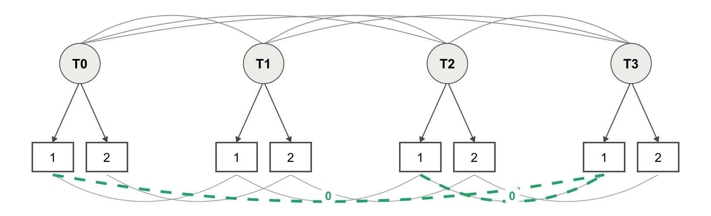
What does the complete model look like? Its syntax, as did_syntax() writes it: first the final model of Chapter 7, part by part, then what this chapter adds, the covariates on the factor of every wave and the contrasts. A label shared by several lines (such as l1, t1 or a1) holds those estimates equal; c(..., ...) gives the control and the experimental group one each:
show_model(did_syntax(lo_status))# Chapter 7: one factor per wave; both items load 1
F_T0 =~ 1*ListenOther1_T0 +
1*ListenOther2_T0
F_T1 =~ 1*ListenOther1_T1 +
1*ListenOther2_T1
F_T2 =~ 1*ListenOther1_T2 +
1*ListenOther2_T2
F_T3 =~ 1*ListenOther1_T3 +
1*ListenOther2_T3
# Chapter 7: effects coding: the loadings average 1, the intercepts sum to 0
t1 + t2 == 0
# Chapter 7: the latent means, free in each group
F_T0 ~ c(m_con_T0, m_exp_T0)*1
F_T1 ~ c(m_con_T1, m_exp_T1)*1
F_T2 ~ c(m_con_T2, m_exp_T2)*1
F_T3 ~ c(m_con_T3, m_exp_T3)*1
# Chapter 7: the intercepts
ListenOther1_T0 ~ t1*1
ListenOther2_T0 ~ t2*1
ListenOther1_T1 ~ t1*1
ListenOther2_T1 ~ t2*1
ListenOther1_T2 ~ t1*1
ListenOther2_T2 ~ t2*1
ListenOther1_T3 ~ t1*1
ListenOther2_T3 ~ t2*1
# Chapter 7: the factors correlate over the waves
F_T0 ~~ F_T1
F_T0 ~~ F_T2
F_T0 ~~ F_T3
F_T1 ~~ F_T2
F_T1 ~~ F_T3
F_T2 ~~ F_T3
# Chapter 7: each item's residual with itself over the waves
ListenOther1_T0 ~~ ListenOther1_T1
ListenOther1_T0 ~~ ListenOther1_T2
ListenOther1_T0 ~~ ListenOther1_T3
ListenOther1_T1 ~~ ListenOther1_T2
ListenOther1_T1 ~~ ListenOther1_T3
ListenOther1_T2 ~~ ListenOther1_T3
ListenOther2_T0 ~~ ListenOther2_T1
ListenOther2_T0 ~~ ListenOther2_T2
ListenOther2_T0 ~~ ListenOther2_T3
ListenOther2_T1 ~~ ListenOther2_T2
ListenOther2_T1 ~~ ListenOther2_T3
ListenOther2_T2 ~~ ListenOther2_T3
# Chapter 7: set at 0 in one group (adjustment A)
ListenOther1_T0 ~~ c(0, NA)*ListenOther1_T3
ListenOther1_T2 ~~ c(0, NA)*ListenOther1_T3
# added here: age and sex on the factor of every wave
F_T0 ~ age_c + female_c
F_T1 ~ age_c + female_c
F_T2 ~ age_c + female_c
F_T3 ~ age_c + female_c
# added here: every contrast as a parameter
EG_T01 := (m_exp_T1 - m_exp_T0)
CG_T01 := (m_con_T1 - m_con_T0)
DiD_T01 := (m_exp_T1 - m_exp_T0) - (m_con_T1 - m_con_T0)
EG_T02 := (m_exp_T2 - m_exp_T0)
CG_T02 := (m_con_T2 - m_con_T0)
DiD_T02 := (m_exp_T2 - m_exp_T0) - (m_con_T2 - m_con_T0)
EG_T03 := (m_exp_T3 - m_exp_T0)
CG_T03 := (m_con_T3 - m_con_T0)
DiD_T03 := (m_exp_T3 - m_exp_T0) - (m_con_T3 - m_con_T0)
EG_T12 := (m_exp_T2 - m_exp_T1)
CG_T12 := (m_con_T2 - m_con_T1)
DiD_T12 := (m_exp_T2 - m_exp_T1) - (m_con_T2 - m_con_T1)
EG_T13 := (m_exp_T3 - m_exp_T1)
CG_T13 := (m_con_T3 - m_con_T1)
DiD_T13 := (m_exp_T3 - m_exp_T1) - (m_con_T3 - m_con_T1)
EG_T23 := (m_exp_T3 - m_exp_T2)
CG_T23 := (m_con_T3 - m_con_T2)
DiD_T23 := (m_exp_T3 - m_exp_T2) - (m_con_T3 - m_con_T2)
Replication_test := (m_exp_T1 - m_exp_T0) - (m_con_T1 - m_con_T0) + (m_exp_T3 - m_exp_T2) - (m_con_T3 - m_con_T2)Next → Step 2, the model of Chapter 7 again, without the covariates.
Step 2 · The model of Chapter 7 both groups
What is fitted? The model of Chapter 7 with the contrasts, without the covariates:
lo_base <- df_wide |>
sem(model = did_syntax(lo_status, covariates = FALSE), data = _,
group = "condition", estimator = "MLR", missing = "fiml")Does it pass the checks, and is it the model of Chapter 7? The checks of Chapter 7, and its χ² next to that of Chapter 7, Step 8:
lo_base_checks <- model_checks(lo_base)
lo_base_checks| check | what | value | criterion | holds |
|---|---|---|---|---|
| 1 estimation | converged | yes | yes | ✓ |
| 2 variances | smallest residual variance: item 1 at T3 (Experimental) | .304 | above 0 | ✓ |
| 3 correlations | largest correlation: item 2, T1 with T2 (Control) | .768 | within ±1 | ✓ |
| 4 residuals | smallest eigenvalue of the residual covariances | .125 | above 0 | ✓ |
| 5 factors | smallest eigenvalue of the factor covariances | .521 | above 0 | ✓ |
| 6 standard errors | estimated for every free parameter | yes | yes | ✓ |
| 7 fit | CFI | .992 | reported | – |
| 8 fit | RMSEA [90 % interval] | .037 [.000, .072] | reported | – |
| 9 fit | SRMR | .051 | reported | – |
| 10 strain | largest modification index: item 2 at T2 on the factor at T0 (Control) | 4.0 | reported | – |
| 11 estimates | smallest standardized loading: item 2 at T3 (Experimental) | .69 | reported | – |
lo_chapter7 <- invariance$steps |>
filter(construct == "ListenOther", part == "both groups",
level == "intercepts across groups")
tibble(model = c("here", "Chapter 7"),
chisq = c(fitMeasures(lo_base, "chisq.scaled"), lo_chapter7$chisq),
df = c(fitMeasures(lo_base, "df"), lo_chapter7$df)) |>
mutate(chisq = round(chisq, 3))| model | chisq | df |
|---|---|---|
| here | 27.095 | 21 |
| Chapter 7 | 27.095 | 21 |
Checks 1 to 6 hold, and the χ² is that of Chapter 7 (27.095): the model is the one Chapter 7 settled on, and the contrasts add no constraint.
Next → Step 3, the same model with the covariates.
Step 3 · The covariates both groups
What is fitted? The model of Step 1, with age and sex on the factors, and the comparison model, with a direct effect of each on every item at every wave and no path to the factors:
lo_covariates <- df_wide |>
sem(model = did_syntax(lo_status), data = _, group = "condition",
estimator = "MLR", missing = "fiml.x")
lo_everywhere <- df_wide |>
sem(model = direct_everywhere(lo_status), data = _, group = "condition",
estimator = "MLR", missing = "fiml.x")What does the comparison model hold? The model of Chapter 7 from Step 1, and in place of the paths to the factors a direct effect of age and sex on every item at every wave; it needs no contrasts. These are its lines beyond Chapter 7:
show_model(direct_everywhere(lo_status), added_only = TRUE)# added here: age or sex directly on single items
ListenOther1_T0 ~ age_c + female_c
ListenOther2_T0 ~ age_c + female_c
ListenOther1_T1 ~ age_c + female_c
ListenOther2_T1 ~ age_c + female_c
ListenOther1_T2 ~ age_c + female_c
ListenOther2_T2 ~ age_c + female_c
ListenOther1_T3 ~ age_c + female_c
ListenOther2_T3 ~ age_c + female_cDoes the model with the covariates pass the checks?
lo_covariates_checks <- model_checks(lo_covariates)
lo_covariates_checks| check | what | value | criterion | holds |
|---|---|---|---|---|
| 1 estimation | converged | yes | yes | ✓ |
| 2 variances | .090 | above 0 | ✓ | |
| 3 correlations | largest correlation: item 2, T1 with T2 (Control) | .766 | within ±1 | ✓ |
| 4 residuals | smallest eigenvalue of the residual covariances | .090 | above 0 | ✓ |
| 5 factors | smallest eigenvalue of the factor covariances | .528 | above 0 | ✓ |
| 6 standard errors | estimated for every free parameter | yes | yes | ✓ |
| 7 fit | CFI | .985 | reported | – |
| 8 fit | RMSEA [90 % interval] | .039 [.000, .065] | reported | – |
| 9 fit | SRMR | .050 | reported | – |
| 10 strain | largest modification index: item 1 at T2 on the factor at T0 (Control) | 4.1 | reported | – |
| 11 estimates | smallest standardized loading: item 2 at T3 (Experimental) | .69 | reported | – |
Checks 1 to 6 hold. Its CFI, .985, stands beside .992 in Step 2, for description only: the two models do not hold the same variables. Do age and sex act only through the factors? The model of Step 1 against the comparison model:
lo_step <- covariate_step(lo_covariates, lo_everywhere)
show_step(lo_step)| model | df | CFI | RMSEA | ΔCFI | ΔRMSEA | p | Chen |
|---|---|---|---|---|---|---|---|
| direct effects on every item | 21 | 0.992 | 0.038 | ||||
| only through the factors | 37 | 0.985 | 0.039 | -0.007 | 0.002 | 0.097 | ✓ |
They do, under Chen’s cutoffs (ΔCFI = -.007, ΔRMSEA = .002; χ² test: p = .097): the covariates enter as specified.
lo_fit <- lo_covariates # the model of Steps 4 to 8Next → Step 4, the latent means of this model.
The effects · Steps 4 to 6
Step 4 · Latent means both groups
Where does each group stand at each wave? The eight latent means with their 95 % confidence intervals, at the sample’s average age and share of women:
lo_means <- parameterEstimates(lo_fit) |>
filter(op == "~1", str_starts(lhs, "F_")) |>
select(label, est, se, ci.lower, ci.upper)
# the contrasts between them, for Steps 4 to 6
lo_contrasts <- contrasts_of(lo_fit, c(
"EG_T01", "CG_T01", "DiD_T01", "EG_T23", "CG_T23", "DiD_T23",
"Replication_test", "CG_T02", "CG_T12"))
lo_means |>
mutate(across(where(is.double), \(x) round(x, 2)))| label | est | se | ci.lower | ci.upper |
|---|---|---|---|---|
| m_con_T0 | 5.84 | 0.17 | 5.51 | 6.16 |
| m_con_T1 | 6.19 | 0.17 | 5.85 | 6.53 |
| m_con_T2 | 6.14 | 0.17 | 5.81 | 6.47 |
| m_con_T3 | 7.33 | 0.15 | 7.03 | 7.62 |
| m_exp_T0 | 5.28 | 0.16 | 4.96 | 5.60 |
| m_exp_T1 | 6.43 | 0.18 | 6.07 | 6.79 |
| m_exp_T2 | 6.36 | 0.18 | 6.01 | 6.70 |
| m_exp_T3 | 6.83 | 0.21 | 6.43 | 7.24 |
plot_latent_means(lo_fit)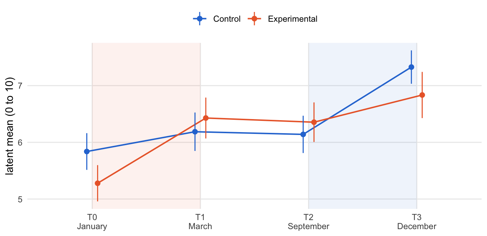
In January the experimental group lies at 5.28, the control group at 5.84. While the experimental group trains (T0 to T1), it changes by 1.15 and the control group by .35; while the control group trains (T2 to T3), it changes by 1.19 and the experimental group by .48.
Next → Step 5, the difference of these changes: the training effects.
Step 5 · The training effects both groups
How much more does the trained group change? The change of each group in the two training windows, and their difference, as a table and as a figure:
lo_contrasts |>
filter(label %in% c("EG_T01", "CG_T01", "DiD_T01",
"EG_T23", "CG_T23", "DiD_T23")) |>
mutate(across(where(is.double), \(x) round(x, 3)))| label | est | se | pvalue | ci.lower | ci.upper |
|---|---|---|---|---|---|
| EG_T01 | 1.150 | 0.193 | 0.000 | 0.772 | 1.529 |
| CG_T01 | 0.349 | 0.193 | 0.070 | -0.028 | 0.726 |
| DiD_T01 | 0.801 | 0.273 | 0.003 | 0.266 | 1.336 |
| EG_T23 | 0.480 | 0.223 | 0.031 | 0.043 | 0.916 |
| CG_T23 | 1.187 | 0.168 | 0.000 | 0.857 | 1.517 |
| DiD_T23 | -0.707 | 0.277 | 0.011 | -1.251 | -0.164 |
plot_did(lo_fit)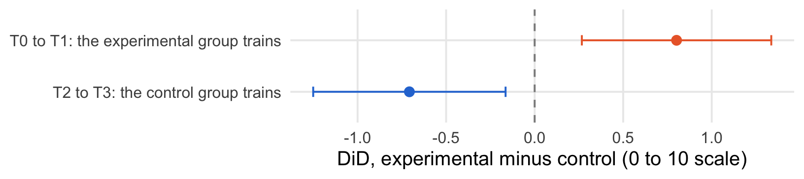
While the experimental group trains, DiD = .80 (p = .003), a significant effect of the training. While the control group trains, DiD = -.71 (p = .011), the mirrored effect, significant.
How large are the effects? The latent d, with the latent standard deviation at T0 pooled over the two groups:
lo_sd_T0 <- pooled_sd_T0(lo_fit)
lo_contrasts |>
filter(label %in% c("DiD_T01", "DiD_T23")) |>
transmute(label, DiD = est, d = est / lo_sd_T0, size = cohen(d)) |>
mutate(across(where(is.double), \(x) round(x, 2)))| label | DiD | d | size |
|---|---|---|---|
| DiD_T01 | 0.80 | 0.41 | small |
| DiD_T23 | -0.71 | -0.36 | small |
The pooled latent SD at T0 is 1.95; in its units the first effect is d = .41, small, and the second d = -.36, small. Do the two training effects cancel out? The replication test, DiD (T0 to T1) + DiD (T2 to T3):
lo_contrasts |>
filter(label == "Replication_test") |>
mutate(across(where(is.double), \(x) round(x, 3)))| label | est | se | pvalue | ci.lower | ci.upper |
|---|---|---|---|---|---|
| Replication_test | 0.094 | 0.402 | 0.815 | -0.693 | 0.881 |
The two effects do not detectably differ: their sum is .09 (p = .815).
Next → Step 6, how the control group changes while it waits.
Step 6 · Drift of the control group control
Does the control group change while it waits? Its change from T0 to T1, T0 to T2 and T1 to T2:
lo_contrasts |>
filter(label %in% c("CG_T01", "CG_T02", "CG_T12")) |>
mutate(across(where(is.double), \(x) round(x, 3)))| label | est | se | pvalue | ci.lower | ci.upper |
|---|---|---|---|---|---|
| CG_T01 | 0.349 | 0.193 | 0.070 | -0.028 | 0.726 |
| CG_T02 | 0.302 | 0.198 | 0.126 | -0.085 | 0.689 |
| CG_T12 | -0.047 | 0.183 | 0.797 | -0.405 | 0.311 |
None of the three changes is significant; the change from T0 to T1, which the first DiD subtracts, is .35 (p = .070).
Next → Step 7, whether the latent means stay level outside the training.
Robustness · Steps 7 and 8
Step 7 · The restricted model both groups
Do the latent means stay level outside the training? The model of Steps 4 to 6 against the same model with the four equality constraints, from the script; its free model is the model of Steps 4 to 6, with the same χ²:
lo_restricted <- restricted |> filter(construct == "ListenOther")
lo_restricted |>
transmute(`χ² free` = chisq_free, `χ² restricted` = chisq_restricted,
`Δχ²` = delta_chisq, Δdf = delta_df, p, admissible) |>
mutate(across(where(is.double), \(x) round(x, 3)))| χ² free | χ² restricted | Δχ² | Δdf | p | admissible |
|---|---|---|---|---|---|
| 49.878 | 58.133 | 8.344 | 4 | 0.08 | TRUE |
The four constraints cost Δχ²(4) = 8.34 (p = .080), and the data do not reject them: the latent means stay level outside the training.
Next → Step 8, the two effects on the sample sets.
Step 8 · The sample sets both groups
Do the effects hold on every sample set? The two training effects on the nine sample sets, from the script, as a figure and as a table; S0 is the model of Steps 4 to 6:
lo_sets <- latent_sets |> filter(construct == "ListenOther")
plot_sets(lo_sets)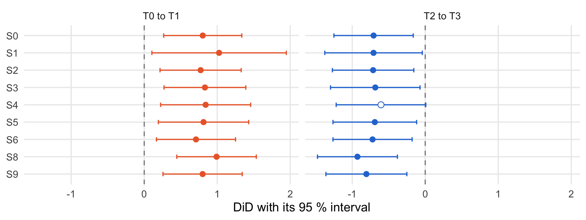
lo_sets |>
unnest(estimates) |>
filter(label %in% c("DiD_T01", "DiD_T23")) |>
select(set, admissible, label, est, pvalue) |>
pivot_wider(names_from = label, values_from = c(est, pvalue),
names_glue = "{label}_{.value}") |>
select(set, admissible, starts_with("DiD_T01"), starts_with("DiD_T23")) |>
mutate(across(where(is.double), \(x) round(x, 3)))| set | admissible | DiD_T01_est | DiD_T01_pvalue | DiD_T23_est | DiD_T23_pvalue |
|---|---|---|---|---|---|
| S0 | TRUE | 0.801 | 0.003 | -0.707 | 0.011 |
| S1 | FALSE | 1.025 | 0.029 | -0.708 | 0.038 |
| S2 | TRUE | 0.772 | 0.006 | -0.714 | 0.012 |
| S3 | TRUE | 0.831 | 0.004 | -0.684 | 0.029 |
| S4 | TRUE | 0.841 | 0.007 | -0.606 | 0.053 |
| S5 | TRUE | 0.812 | 0.010 | -0.691 | 0.018 |
| S6 | TRUE | 0.709 | 0.010 | -0.722 | 0.009 |
| S8 | TRUE | 0.991 | 0.000 | -0.929 | 0.001 |
| S9 | TRUE | 0.800 | 0.004 | -0.806 | 0.004 |
The effect of the first window is significant in the expected direction in 9 of the nine sets, the mirrored effect of the second window in 8. In 1 of the sets the solution is not possible (a negative variance or covariances that are not positive definite, on fewer persons than S0); their estimates are read with caution.
Next → Step 9, what the steps show together.
What follows · Step 9
Step 9 · What follows
What does Others Listen to Me show? The two training effects side by side, T0–T1 while the experimental group trains and T2–T3 while the control group trains, with the correction for testing all 20 constructs at once (11.7) and the nine sample sets of Step 8:
lo_verdict <- verdict_table("ListenOther", lo_est, lo_p, lo_d, lo_sets)
show_verdict(lo_verdict)| window | DiD | d | size | p | p corrected | sets with the effect | range in sets |
|---|---|---|---|---|---|---|---|
| T0–T1 | 0.80 | 0.41 | small | 0.003 | 0.021 | 9 of 9 | .71 to 1.03 |
| T2–T3 | -0.71 | -0.36 | small | 0.011 | 0.056 | 8 of 9 | -.93 to -.61 |
Others Listen to Me shows the training effect in both rounds. While the experimental group trains, it gains .80 points more than the control group (d = .41, small; p = .003). It holds after the correction for testing 20 constructs (adjusted p = .021) and in 9 of 9 sample sets. When the control group trains, it gains .71 points more than the experimental group (d = .36, small; p = .011). After the correction for testing 20 constructs it stays just above the threshold (adjusted p = .056); across the sample sets its estimate ranges from -.93 to -.61, significant in 8 of 9. The two rounds do not detectably differ (replication test, p = .815). Outside the training the latent means stay level: the control group does not change before its own training, and the restricted model of Step 7 holds (p = .080).
What goes on to Chapter 20? The model and the two effects:
lo_result <- tibble(construct = "ListenOther",
covariates = TRUE,
direct = list(character()),
fit = list(lo_fit))
lo_result |>
transmute(construct, covariates, direct = map_chr(direct, str_flatten, "; "))| construct | covariates | direct |
|---|---|---|
| ListenOther | TRUE |
Others Listen to Me enters the synthesis of Chapter 20 with both effects, adjusted for age and sex.
Kama Muta
Its path through the steps. One row per step below; the label marks the data of each step:
| Step | Data | Question | Result | Next |
|---|---|---|---|---|
| 1 | both groups | What is added to Chapter 7? | covariates, contrasts | Chapter 7’s model |
| 2 | both groups | Chapter 7’s model possible, as there? | yes, the same χ² | covariates |
| 3 | both groups | Covariates only through the factors? | no; two items, none can be freed: without covariates | latent means |
| 4 | both groups | Latent means | – | effects |
| 5 | both groups | Training effects | T0–T1: n.s.; T2–T3: mirrored, p < .05 | drift |
| 6 | control | Drift while waiting? | yes, T0 to T2 | robustness |
| 7 | both groups | Level outside the training? | yes | sample sets |
| 8 | both groups | Effects on the sample sets? | T0–T1: 0 of 9; T2–T3: 5 of 9 | what follows |
| 9 | What does it show? | T2–T3: effect | Chapter 20 |
The model · Steps 1 to 3
Step 1 · The model both groups
Which model does Chapter 7 hand on? Its status there: the estimates the stop rule set at 0, the items freed, and the autocorrelations:
km_status <- invariance$adopted |>
filter(construct == "KamaMuta")
km_status |>
transmute(status, set_to_0 = map_chr(set_to_0, \(x) str_flatten(x, "; ")),
freed = map_chr(freed, \(x) str_flatten(x, "; ")))| status | set_to_0 | freed |
|---|---|---|
| as specified |
What does the model look like? In the figure, the factors of the four waves (circles), the items (boxes) and their loadings, the links of the factors (above) and of each item with itself at the next wave (below); in green, the estimates the stop rule of Chapter 7 set at 0 in one group:
plot_model("KamaMuta",
fixed = str_remove(km_status$set_to_0[[1]], "^[A-Za-z]+: "))
What does the complete model look like? Its syntax, as did_syntax() writes it: first the final model of Chapter 7, part by part, then what this chapter adds, the covariates on the factor of every wave and the contrasts. A label shared by several lines (such as l1, t1 or a1) holds those estimates equal; c(..., ...) gives the control and the experimental group one each:
show_model(did_syntax(km_status))# Chapter 7: one factor per wave; both items load 1
F_T0 =~ 1*KamaMuta1_T0 +
1*KamaMuta2_T0
F_T1 =~ 1*KamaMuta1_T1 +
1*KamaMuta2_T1
F_T2 =~ 1*KamaMuta1_T2 +
1*KamaMuta2_T2
F_T3 =~ 1*KamaMuta1_T3 +
1*KamaMuta2_T3
# Chapter 7: effects coding: the loadings average 1, the intercepts sum to 0
t1 + t2 == 0
# Chapter 7: the latent means, free in each group
F_T0 ~ c(m_con_T0, m_exp_T0)*1
F_T1 ~ c(m_con_T1, m_exp_T1)*1
F_T2 ~ c(m_con_T2, m_exp_T2)*1
F_T3 ~ c(m_con_T3, m_exp_T3)*1
# Chapter 7: the intercepts
KamaMuta1_T0 ~ t1*1
KamaMuta2_T0 ~ t2*1
KamaMuta1_T1 ~ t1*1
KamaMuta2_T1 ~ t2*1
KamaMuta1_T2 ~ t1*1
KamaMuta2_T2 ~ t2*1
KamaMuta1_T3 ~ t1*1
KamaMuta2_T3 ~ t2*1
# Chapter 7: the factors correlate over the waves
F_T0 ~~ F_T1
F_T0 ~~ F_T2
F_T0 ~~ F_T3
F_T1 ~~ F_T2
F_T1 ~~ F_T3
F_T2 ~~ F_T3
# Chapter 7: each item's residual with itself over the waves
KamaMuta1_T0 ~~ KamaMuta1_T1
KamaMuta1_T0 ~~ KamaMuta1_T2
KamaMuta1_T0 ~~ KamaMuta1_T3
KamaMuta1_T1 ~~ KamaMuta1_T2
KamaMuta1_T1 ~~ KamaMuta1_T3
KamaMuta1_T2 ~~ KamaMuta1_T3
KamaMuta2_T0 ~~ KamaMuta2_T1
KamaMuta2_T0 ~~ KamaMuta2_T2
KamaMuta2_T0 ~~ KamaMuta2_T3
KamaMuta2_T1 ~~ KamaMuta2_T2
KamaMuta2_T1 ~~ KamaMuta2_T3
KamaMuta2_T2 ~~ KamaMuta2_T3
# added here: age and sex on the factor of every wave
F_T0 ~ age_c + female_c
F_T1 ~ age_c + female_c
F_T2 ~ age_c + female_c
F_T3 ~ age_c + female_c
# added here: every contrast as a parameter
EG_T01 := (m_exp_T1 - m_exp_T0)
CG_T01 := (m_con_T1 - m_con_T0)
DiD_T01 := (m_exp_T1 - m_exp_T0) - (m_con_T1 - m_con_T0)
EG_T02 := (m_exp_T2 - m_exp_T0)
CG_T02 := (m_con_T2 - m_con_T0)
DiD_T02 := (m_exp_T2 - m_exp_T0) - (m_con_T2 - m_con_T0)
EG_T03 := (m_exp_T3 - m_exp_T0)
CG_T03 := (m_con_T3 - m_con_T0)
DiD_T03 := (m_exp_T3 - m_exp_T0) - (m_con_T3 - m_con_T0)
EG_T12 := (m_exp_T2 - m_exp_T1)
CG_T12 := (m_con_T2 - m_con_T1)
DiD_T12 := (m_exp_T2 - m_exp_T1) - (m_con_T2 - m_con_T1)
EG_T13 := (m_exp_T3 - m_exp_T1)
CG_T13 := (m_con_T3 - m_con_T1)
DiD_T13 := (m_exp_T3 - m_exp_T1) - (m_con_T3 - m_con_T1)
EG_T23 := (m_exp_T3 - m_exp_T2)
CG_T23 := (m_con_T3 - m_con_T2)
DiD_T23 := (m_exp_T3 - m_exp_T2) - (m_con_T3 - m_con_T2)
Replication_test := (m_exp_T1 - m_exp_T0) - (m_con_T1 - m_con_T0) + (m_exp_T3 - m_exp_T2) - (m_con_T3 - m_con_T2)Next → Step 2, the model of Chapter 7 again, without the covariates.
Step 2 · The model of Chapter 7 both groups
What is fitted? The model of Chapter 7 with the contrasts, without the covariates:
km_base <- df_wide |>
sem(model = did_syntax(km_status, covariates = FALSE), data = _,
group = "condition", estimator = "MLR", missing = "fiml")Does it pass the checks, and is it the model of Chapter 7? The checks of Chapter 7, and its χ² next to that of Chapter 7, Step 8:
km_base_checks <- model_checks(km_base)
km_base_checks| check | what | value | criterion | holds |
|---|---|---|---|---|
| 1 estimation | converged | yes | yes | ✓ |
| 2 variances | smallest residual variance: item 2 at T2 (Experimental) | .397 | above 0 | ✓ |
| 3 correlations | largest correlation: item 1, T1 with T3 (Control) | .734 | within ±1 | ✓ |
| 4 residuals | smallest eigenvalue of the residual covariances | .215 | above 0 | ✓ |
| 5 factors | smallest eigenvalue of the factor covariances | .555 | above 0 | ✓ |
| 6 standard errors | estimated for every free parameter | yes | yes | ✓ |
| 7 fit | CFI | 1.000 | reported | – |
| 8 fit | RMSEA [90 % interval] | .000 [.000, .048] | reported | – |
| 9 fit | SRMR | .038 | reported | – |
| 10 strain | largest modification index: item 1 with item 2 at T0 (Control) | 2.1 | reported | – |
| 11 estimates | smallest standardized loading: item 2 at T1 (Experimental) | .55 | reported | – |
km_chapter7 <- invariance$steps |>
filter(construct == "KamaMuta", part == "both groups",
level == "intercepts across groups")
tibble(model = c("here", "Chapter 7"),
chisq = c(fitMeasures(km_base, "chisq.scaled"), km_chapter7$chisq),
df = c(fitMeasures(km_base, "df"), km_chapter7$df)) |>
mutate(chisq = round(chisq, 3))| model | chisq | df |
|---|---|---|
| here | 16.489 | 19 |
| Chapter 7 | 16.489 | 19 |
Checks 1 to 6 hold, and the χ² is that of Chapter 7 (16.489): the model is the one Chapter 7 settled on, and the contrasts add no constraint.
Next → Step 3, the same model with the covariates.
Step 3 · The covariates both groups
What is fitted? The model of Step 1, with age and sex on the factors, and the comparison model, with a direct effect of each on every item at every wave and no path to the factors:
km_covariates <- df_wide |>
sem(model = did_syntax(km_status), data = _, group = "condition",
estimator = "MLR", missing = "fiml.x")
km_everywhere <- df_wide |>
sem(model = direct_everywhere(km_status), data = _, group = "condition",
estimator = "MLR", missing = "fiml.x")What does the comparison model hold? The model of Chapter 7 from Step 1, and in place of the paths to the factors a direct effect of age and sex on every item at every wave; it needs no contrasts. These are its lines beyond Chapter 7:
show_model(direct_everywhere(km_status), added_only = TRUE)# added here: age or sex directly on single items
KamaMuta1_T0 ~ age_c + female_c
KamaMuta2_T0 ~ age_c + female_c
KamaMuta1_T1 ~ age_c + female_c
KamaMuta2_T1 ~ age_c + female_c
KamaMuta1_T2 ~ age_c + female_c
KamaMuta2_T2 ~ age_c + female_c
KamaMuta1_T3 ~ age_c + female_c
KamaMuta2_T3 ~ age_c + female_cDoes the model with the covariates pass the checks?
km_covariates_checks <- model_checks(km_covariates)
km_covariates_checks| check | what | value | criterion | holds |
|---|---|---|---|---|
| 1 estimation | converged | yes | yes | ✓ |
| 2 variances | .090 | above 0 | ✓ | |
| 3 correlations | largest correlation: item 1, T1 with T3 (Control) | .740 | within ±1 | ✓ |
| 4 residuals | smallest eigenvalue of the residual covariances | .089 | above 0 | ✓ |
| 5 factors | smallest eigenvalue of the factor covariances | .561 | above 0 | ✓ |
| 6 standard errors | estimated for every free parameter | yes | yes | ✓ |
| 7 fit | CFI | .989 | reported | – |
| 8 fit | RMSEA [90 % interval] | .036 [.000, .063] | reported | – |
| 9 fit | SRMR | .041 | reported | – |
| 10 strain | largest modification index: item 1 with item 2 at T2 (Control) | 2.1 | reported | – |
| 11 estimates | smallest standardized loading: item 2 at T1 (Experimental) | .54 | reported | – |
Checks 1 to 6 hold. Its CFI, .989, stands beside 1.000 in Step 2, for description only: the two models do not hold the same variables. Do age and sex act only through the factors? The model of Step 1 against the comparison model:
km_step <- covariate_step(km_covariates, km_everywhere)
show_step(km_step)| model | df | CFI | RMSEA | ΔCFI | ΔRMSEA | p | Chen |
|---|---|---|---|---|---|---|---|
| direct effects on every item | 19 | 1.000 | 0.000 | ||||
| only through the factors | 35 | 0.989 | 0.036 | -0.011 | 0.036 | 0.006 | ✗ |
They do not: the step lies beyond Chen’s cutoffs (ΔCFI = -.011, ΔRMSEA = .036). Which item do age or sex move beyond the factor? The score test of each direct effect, summed over the waves and the groups per item and covariate:
km_score <- score_direct(km_covariates, "KamaMuta")
km_score |>
mutate(X2 = round(X2, 1))| item | covariate | X2 |
|---|---|---|
| KamaMuta2 | age_c | 14.4 |
| KamaMuta1 | age_c | 14.4 |
| KamaMuta2 | female_c | 12.1 |
| KamaMuta1 | female_c | 12.1 |
With two items, freeing a direct effect of one leaves the adjustment for age and sex to rest on a single item, too few for a comparison of latent means, as for I Listen in Chapter 7. The covariate model stops: Steps 4 to 8 rest on the model of Chapter 7 without the covariates (Step 2). Its effects enter the tests like all others, marked as unadjusted; Step 9 sets them beside the effects of the model with the covariates.
km_fit <- km_base # the model of Steps 4 to 8Next → Step 4, the latent means of the model of Chapter 7, without the covariates.
The effects · Steps 4 to 6
Step 4 · Latent means both groups
Where does each group stand at each wave? The eight latent means with their 95 % confidence intervals:
km_means <- parameterEstimates(km_fit) |>
filter(op == "~1", str_starts(lhs, "F_")) |>
select(label, est, se, ci.lower, ci.upper)
# the contrasts between them, for Steps 4 to 6
km_contrasts <- contrasts_of(km_fit, c(
"EG_T01", "CG_T01", "DiD_T01", "EG_T23", "CG_T23", "DiD_T23",
"Replication_test", "CG_T02", "CG_T12"))
km_means |>
mutate(across(where(is.double), \(x) round(x, 2)))| label | est | se | ci.lower | ci.upper |
|---|---|---|---|---|
| m_con_T0 | 7.53 | 0.15 | 7.24 | 7.82 |
| m_con_T1 | 7.81 | 0.16 | 7.50 | 8.12 |
| m_con_T2 | 7.97 | 0.14 | 7.69 | 8.25 |
| m_con_T3 | 8.76 | 0.10 | 8.56 | 8.97 |
| m_exp_T0 | 7.76 | 0.14 | 7.50 | 8.03 |
| m_exp_T1 | 8.16 | 0.12 | 7.92 | 8.40 |
| m_exp_T2 | 8.06 | 0.17 | 7.72 | 8.40 |
| m_exp_T3 | 8.24 | 0.19 | 7.88 | 8.61 |
plot_latent_means(km_fit)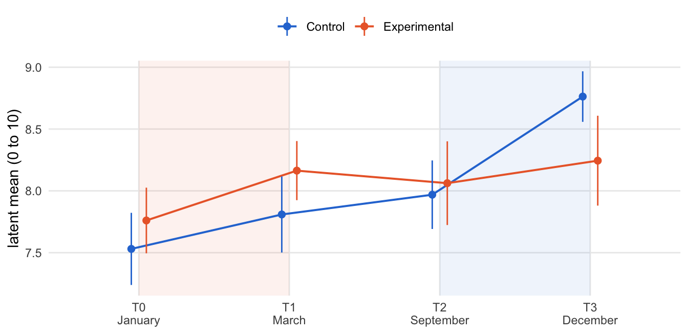
In January the experimental group lies at 7.76, the control group at 7.53. While the experimental group trains (T0 to T1), it changes by .40 and the control group by .28; while the control group trains (T2 to T3), it changes by .79 and the experimental group by .18.
Next → Step 5, the difference of these changes: the training effects.
Step 5 · The training effects both groups
How much more does the trained group change? The change of each group in the two training windows, and their difference, as a table and as a figure:
km_contrasts |>
filter(label %in% c("EG_T01", "CG_T01", "DiD_T01",
"EG_T23", "CG_T23", "DiD_T23")) |>
mutate(across(where(is.double), \(x) round(x, 3)))| label | est | se | pvalue | ci.lower | ci.upper |
|---|---|---|---|---|---|
| EG_T01 | 0.403 | 0.147 | 0.006 | 0.115 | 0.692 |
| CG_T01 | 0.278 | 0.162 | 0.086 | -0.040 | 0.597 |
| DiD_T01 | 0.125 | 0.217 | 0.566 | -0.302 | 0.551 |
| EG_T23 | 0.182 | 0.201 | 0.365 | -0.212 | 0.576 |
| CG_T23 | 0.794 | 0.140 | 0.000 | 0.520 | 1.067 |
| DiD_T23 | -0.612 | 0.246 | 0.013 | -1.093 | -0.130 |
plot_did(km_fit)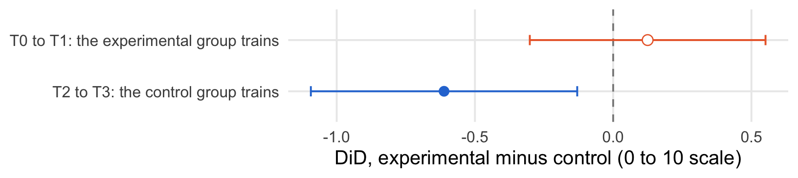
While the experimental group trains, DiD = .12 (p = .566), not significant. While the control group trains, DiD = -.61 (p = .013), the mirrored effect, significant.
How large are the effects? The latent d, with the latent standard deviation at T0 pooled over the two groups:
km_sd_T0 <- pooled_sd_T0(km_fit)
km_contrasts |>
filter(label %in% c("DiD_T01", "DiD_T23")) |>
transmute(label, DiD = est, d = est / km_sd_T0, size = cohen(d)) |>
mutate(across(where(is.double), \(x) round(x, 2)))| label | DiD | d | size |
|---|---|---|---|
| DiD_T01 | 0.12 | 0.07 | negligible |
| DiD_T23 | -0.61 | -0.35 | small |
The pooled latent SD at T0 is 1.72; in its units the first effect is d = .07, negligible, and the second d = -.35, small. Do the two training effects cancel out? The replication test, DiD (T0 to T1) + DiD (T2 to T3):
km_contrasts |>
filter(label == "Replication_test") |>
mutate(across(where(is.double), \(x) round(x, 3)))| label | est | se | pvalue | ci.lower | ci.upper |
|---|---|---|---|---|---|
| Replication_test | -0.487 | 0.332 | 0.143 | -1.138 | 0.164 |
The two effects do not detectably differ: their sum is -.49 (p = .143).
Next → Step 6, how the control group changes while it waits.
Step 6 · Drift of the control group control
Does the control group change while it waits? Its change from T0 to T1, T0 to T2 and T1 to T2:
km_contrasts |>
filter(label %in% c("CG_T01", "CG_T02", "CG_T12")) |>
mutate(across(where(is.double), \(x) round(x, 3)))| label | est | se | pvalue | ci.lower | ci.upper |
|---|---|---|---|---|---|
| CG_T01 | 0.278 | 0.162 | 0.086 | -0.040 | 0.597 |
| CG_T02 | 0.438 | 0.162 | 0.007 | 0.122 | 0.755 |
| CG_T12 | 0.160 | 0.165 | 0.331 | -0.163 | 0.482 |
The control group changes significantly from T0 to T2 before its own training; the change from T0 to T1, which the first DiD subtracts, is .28 (p = .086).
Next → Step 7, whether the latent means stay level outside the training.
Robustness · Steps 7 and 8
Step 7 · The restricted model both groups
Do the latent means stay level outside the training? The model of Steps 4 to 6 against the same model with the four equality constraints, from the script; its free model is the model of Steps 4 to 6, with the same χ²:
km_restricted <- restricted |> filter(construct == "KamaMuta")
km_restricted |>
transmute(`χ² free` = chisq_free, `χ² restricted` = chisq_restricted,
`Δχ²` = delta_chisq, Δdf = delta_df, p, admissible) |>
mutate(across(where(is.double), \(x) round(x, 3)))| χ² free | χ² restricted | Δχ² | Δdf | p | admissible |
|---|---|---|---|---|---|
| 16.489 | 25.065 | 8.058 | 4 | 0.089 | TRUE |
The four constraints cost Δχ²(4) = 8.06 (p = .089), and the data do not reject them: the latent means stay level outside the training.
Next → Step 8, the two effects on the sample sets.
Step 8 · The sample sets both groups
Do the effects hold on every sample set? The two training effects on the nine sample sets, from the script, as a figure and as a table; S0 is the model of Steps 4 to 6:
km_sets <- latent_sets |> filter(construct == "KamaMuta")
plot_sets(km_sets)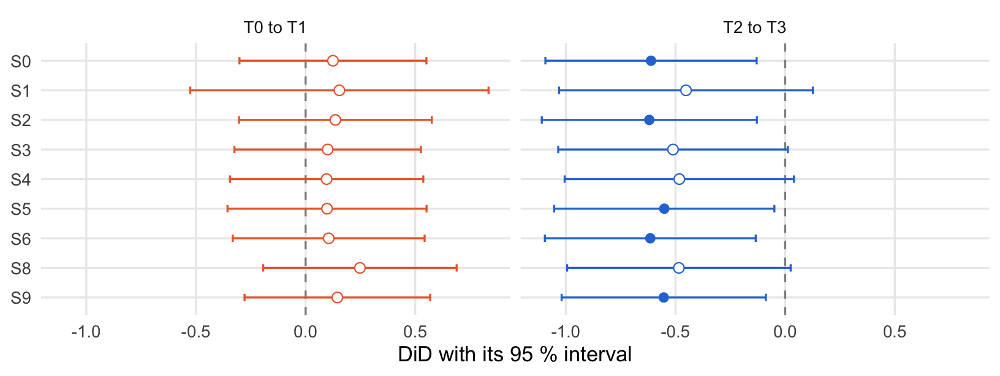
km_sets |>
unnest(estimates) |>
filter(label %in% c("DiD_T01", "DiD_T23")) |>
select(set, admissible, label, est, pvalue) |>
pivot_wider(names_from = label, values_from = c(est, pvalue),
names_glue = "{label}_{.value}") |>
select(set, admissible, starts_with("DiD_T01"), starts_with("DiD_T23")) |>
mutate(across(where(is.double), \(x) round(x, 3)))| set | admissible | DiD_T01_est | DiD_T01_pvalue | DiD_T23_est | DiD_T23_pvalue |
|---|---|---|---|---|---|
| S0 | TRUE | 0.125 | 0.566 | -0.612 | 0.013 |
| S1 | TRUE | 0.154 | 0.657 | -0.452 | 0.126 |
| S2 | TRUE | 0.136 | 0.545 | -0.620 | 0.013 |
| S3 | TRUE | 0.101 | 0.643 | -0.511 | 0.056 |
| S4 | TRUE | 0.096 | 0.670 | -0.483 | 0.070 |
| S5 | TRUE | 0.098 | 0.673 | -0.551 | 0.031 |
| S6 | TRUE | 0.105 | 0.637 | -0.615 | 0.012 |
| S8 | FALSE | 0.248 | 0.271 | -0.485 | 0.062 |
| S9 | TRUE | 0.145 | 0.502 | -0.554 | 0.020 |
The effect of the first window is significant in the expected direction in 0 of the nine sets, the mirrored effect of the second window in 5. In 1 of the sets the solution is not possible (a negative variance or covariances that are not positive definite, on fewer persons than S0); their estimates are read with caution.
Next → Step 9, what the steps show together.
What follows · Step 9
Step 9 · What follows
What does Kama Muta show? The two training effects side by side, T0–T1 while the experimental group trains and T2–T3 while the control group trains, with the correction for testing all 20 constructs at once (11.7) and the nine sample sets of Step 8:
km_verdict <- verdict_table("KamaMuta", km_est, km_p, km_d, km_sets)
show_verdict(km_verdict)| window | DiD | d | size | p | p corrected | sets with the effect | range in sets |
|---|---|---|---|---|---|---|---|
| T0–T1 | 0.12 | 0.07 | negligible | 0.566 | 0.708 | 0 of 9 | .10 to .25 |
| T2–T3 | -0.61 | -0.35 | small | 0.013 | 0.056 | 5 of 9 | -.62 to -.45 |
Kama Muta shows the training effect when the control group trains, not in the first round. While the experimental group trains, its latent mean changes by .40 points, that of the control group by .28; the difference is not significant (DiD = .12, p = .566). When the control group trains, it gains .61 points more than the experimental group (d = .35, small; p = .013). After the correction for testing 20 constructs it stays just above the threshold (adjusted p = .056); across the sample sets its estimate ranges from -.62 to -.45, significant in 5 of 9. The two rounds do not detectably differ (replication test, p = .143). The control group also changes before its own training (T0 to T2: .44, p = .007), but the restricted model of Step 7, with level means outside the training, still holds (p = .089).
Do the effects hinge on the covariates? The two effects of the model without the covariates, which Steps 4 to 8 read, beside those of the model with them (Step 3), which the covariate step rejects:
km_with <- contrasts_of(km_covariates, c("DiD_T01", "DiD_T23"))
bind_rows(
`without covariates` = km_contrasts |>
filter(label %in% c("DiD_T01", "DiD_T23")),
`with covariates` = km_with, .id = "model") |>
select(model, label, est, se, pvalue) |>
mutate(across(where(is.double), \(x) round(x, 3)))| model | label | est | se | pvalue |
|---|---|---|---|---|
| without covariates | DiD_T01 | 0.125 | 0.217 | 0.566 |
| without covariates | DiD_T23 | -0.612 | 0.246 | 0.013 |
| with covariates | DiD_T01 | 0.145 | 0.222 | 0.512 |
| with covariates | DiD_T23 | -0.547 | 0.243 | 0.024 |
They do not: with the covariates, the two effects are nearly the same (DiD = .15 and -.55, the second with p = .024).
What goes on to Chapter 20? The model and the two effects:
km_result <- tibble(construct = "KamaMuta",
covariates = FALSE,
direct = list(character()),
fit = list(km_fit))
km_result |>
transmute(construct, covariates, direct = map_chr(direct, str_flatten, "; "))| construct | covariates | direct |
|---|---|---|
| KamaMuta | FALSE |
Kama Muta enters the synthesis of Chapter 20 with both effects of the model without the covariates, marked as unadjusted.
Positivity Resonance
Its path through the steps. One row per step below; the label marks the data of each step:
| Step | Data | Question | Result | Next |
|---|---|---|---|---|
| 1 | both groups | What is added to Chapter 7? | covariates, contrasts | Chapter 7’s model |
| 2 | both groups | Chapter 7’s model possible, as there? | yes, the same χ² | covariates |
| 3 | both groups | Covariates only through the factors? | yes | latent means |
| 4 | both groups | Latent means | – | effects |
| 5 | both groups | Training effects | T0–T1: positive, p < .05; T2–T3: mirrored, p < .05 | drift |
| 6 | control | Drift while waiting? | yes, T0 to T1 and T0 to T2 | robustness |
| 7 | both groups | Level outside the training? | no | sample sets |
| 8 | both groups | Effects on the sample sets? | T0–T1: 4 of 9; T2–T3: 9 of 9 | what follows |
| 9 | What does it show? | T0–T1: effect; T2–T3: effect | Chapter 20 |
The model · Steps 1 to 3
Step 1 · The model both groups
Which model does Chapter 7 hand on? Its status there: the estimates the stop rule set at 0, the items freed, and the autocorrelations:
res_status <- invariance$adopted |>
filter(construct == "Resonance")
res_status |>
transmute(status, set_to_0 = map_chr(set_to_0, \(x) str_flatten(x, "; ")),
freed = map_chr(freed, \(x) str_flatten(x, "; ")))| status | set_to_0 | freed |
|---|---|---|
| as specified |
What does the model look like? In the figure, the factors of the four waves (circles), the items (boxes) and their loadings, the links of the factors (above) and of each item with itself at the next wave (below); in green, the estimates the stop rule of Chapter 7 set at 0 in one group:
plot_model("Resonance",
fixed = str_remove(res_status$set_to_0[[1]], "^[A-Za-z]+: "))
What does the complete model look like? Its syntax, as did_syntax() writes it: first the final model of Chapter 7, part by part, then what this chapter adds, the covariates on the factor of every wave and the contrasts. A label shared by several lines (such as l1, t1 or a1) holds those estimates equal; c(..., ...) gives the control and the experimental group one each:
show_model(did_syntax(res_status))# Chapter 7: one factor per wave; NA* frees the first loading
F_T0 =~ NA*Resonance1_T0 +
l1*Resonance1_T0 +
l2*Resonance2_T0 +
l3*Resonance3_T0 +
l4*Resonance4_T0 +
l5*Resonance5_T0 +
l6*Resonance6_T0 +
l7*Resonance7_T0 +
l8*Resonance8_T0
F_T1 =~ NA*Resonance1_T1 +
l1*Resonance1_T1 +
l2*Resonance2_T1 +
l3*Resonance3_T1 +
l4*Resonance4_T1 +
l5*Resonance5_T1 +
l6*Resonance6_T1 +
l7*Resonance7_T1 +
l8*Resonance8_T1
F_T2 =~ NA*Resonance1_T2 +
l1*Resonance1_T2 +
l2*Resonance2_T2 +
l3*Resonance3_T2 +
l4*Resonance4_T2 +
l5*Resonance5_T2 +
l6*Resonance6_T2 +
l7*Resonance7_T2 +
l8*Resonance8_T2
F_T3 =~ NA*Resonance1_T3 +
l1*Resonance1_T3 +
l2*Resonance2_T3 +
l3*Resonance3_T3 +
l4*Resonance4_T3 +
l5*Resonance5_T3 +
l6*Resonance6_T3 +
l7*Resonance7_T3 +
l8*Resonance8_T3
# Chapter 7: effects coding: the loadings average 1, the intercepts sum to 0
l1 + l2 + l3 + l4 + l5 + l6 + l7 + l8 == 8
t1 + t2 + t3 + t4 + t5 + t6 + t7 + t8 == 0
# Chapter 7: the latent means, free in each group
F_T0 ~ c(m_con_T0, m_exp_T0)*1
F_T1 ~ c(m_con_T1, m_exp_T1)*1
F_T2 ~ c(m_con_T2, m_exp_T2)*1
F_T3 ~ c(m_con_T3, m_exp_T3)*1
# Chapter 7: the intercepts
Resonance1_T0 ~ t1*1
Resonance2_T0 ~ t2*1
Resonance3_T0 ~ t3*1
Resonance4_T0 ~ t4*1
Resonance5_T0 ~ t5*1
Resonance6_T0 ~ t6*1
Resonance7_T0 ~ t7*1
Resonance8_T0 ~ t8*1
Resonance1_T1 ~ t1*1
Resonance2_T1 ~ t2*1
Resonance3_T1 ~ t3*1
Resonance4_T1 ~ t4*1
Resonance5_T1 ~ t5*1
Resonance6_T1 ~ t6*1
Resonance7_T1 ~ t7*1
Resonance8_T1 ~ t8*1
Resonance1_T2 ~ t1*1
Resonance2_T2 ~ t2*1
Resonance3_T2 ~ t3*1
Resonance4_T2 ~ t4*1
Resonance5_T2 ~ t5*1
Resonance6_T2 ~ t6*1
Resonance7_T2 ~ t7*1
Resonance8_T2 ~ t8*1
Resonance1_T3 ~ t1*1
Resonance2_T3 ~ t2*1
Resonance3_T3 ~ t3*1
Resonance4_T3 ~ t4*1
Resonance5_T3 ~ t5*1
Resonance6_T3 ~ t6*1
Resonance7_T3 ~ t7*1
Resonance8_T3 ~ t8*1
# Chapter 7: the factors correlate over the waves
F_T0 ~~ F_T1
F_T0 ~~ F_T2
F_T0 ~~ F_T3
F_T1 ~~ F_T2
F_T1 ~~ F_T3
F_T2 ~~ F_T3
# Chapter 7: the residual covariances of Chapter 6, at every wave
Resonance1_T0 ~~ Resonance2_T0
Resonance1_T1 ~~ Resonance2_T1
Resonance1_T2 ~~ Resonance2_T2
Resonance1_T3 ~~ Resonance2_T3
Resonance4_T0 ~~ Resonance5_T0
Resonance4_T1 ~~ Resonance5_T1
Resonance4_T2 ~~ Resonance5_T2
Resonance4_T3 ~~ Resonance5_T3
# Chapter 7: each item's residual with itself over the waves
Resonance1_T0 ~~ Resonance1_T1
Resonance1_T0 ~~ Resonance1_T2
Resonance1_T0 ~~ Resonance1_T3
Resonance1_T1 ~~ Resonance1_T2
Resonance1_T1 ~~ Resonance1_T3
Resonance1_T2 ~~ Resonance1_T3
Resonance2_T0 ~~ Resonance2_T1
Resonance2_T0 ~~ Resonance2_T2
Resonance2_T0 ~~ Resonance2_T3
Resonance2_T1 ~~ Resonance2_T2
Resonance2_T1 ~~ Resonance2_T3
Resonance2_T2 ~~ Resonance2_T3
Resonance3_T0 ~~ Resonance3_T1
Resonance3_T0 ~~ Resonance3_T2
Resonance3_T0 ~~ Resonance3_T3
Resonance3_T1 ~~ Resonance3_T2
Resonance3_T1 ~~ Resonance3_T3
Resonance3_T2 ~~ Resonance3_T3
Resonance4_T0 ~~ Resonance4_T1
Resonance4_T0 ~~ Resonance4_T2
Resonance4_T0 ~~ Resonance4_T3
Resonance4_T1 ~~ Resonance4_T2
Resonance4_T1 ~~ Resonance4_T3
Resonance4_T2 ~~ Resonance4_T3
Resonance5_T0 ~~ Resonance5_T1
Resonance5_T0 ~~ Resonance5_T2
Resonance5_T0 ~~ Resonance5_T3
Resonance5_T1 ~~ Resonance5_T2
Resonance5_T1 ~~ Resonance5_T3
Resonance5_T2 ~~ Resonance5_T3
Resonance6_T0 ~~ Resonance6_T1
Resonance6_T0 ~~ Resonance6_T2
Resonance6_T0 ~~ Resonance6_T3
Resonance6_T1 ~~ Resonance6_T2
Resonance6_T1 ~~ Resonance6_T3
Resonance6_T2 ~~ Resonance6_T3
Resonance7_T0 ~~ Resonance7_T1
Resonance7_T0 ~~ Resonance7_T2
Resonance7_T0 ~~ Resonance7_T3
Resonance7_T1 ~~ Resonance7_T2
Resonance7_T1 ~~ Resonance7_T3
Resonance7_T2 ~~ Resonance7_T3
Resonance8_T0 ~~ Resonance8_T1
Resonance8_T0 ~~ Resonance8_T2
Resonance8_T0 ~~ Resonance8_T3
Resonance8_T1 ~~ Resonance8_T2
Resonance8_T1 ~~ Resonance8_T3
Resonance8_T2 ~~ Resonance8_T3
# added here: age and sex on the factor of every wave
F_T0 ~ age_c + female_c
F_T1 ~ age_c + female_c
F_T2 ~ age_c + female_c
F_T3 ~ age_c + female_c
# added here: every contrast as a parameter
EG_T01 := (m_exp_T1 - m_exp_T0)
CG_T01 := (m_con_T1 - m_con_T0)
DiD_T01 := (m_exp_T1 - m_exp_T0) - (m_con_T1 - m_con_T0)
EG_T02 := (m_exp_T2 - m_exp_T0)
CG_T02 := (m_con_T2 - m_con_T0)
DiD_T02 := (m_exp_T2 - m_exp_T0) - (m_con_T2 - m_con_T0)
EG_T03 := (m_exp_T3 - m_exp_T0)
CG_T03 := (m_con_T3 - m_con_T0)
DiD_T03 := (m_exp_T3 - m_exp_T0) - (m_con_T3 - m_con_T0)
EG_T12 := (m_exp_T2 - m_exp_T1)
CG_T12 := (m_con_T2 - m_con_T1)
DiD_T12 := (m_exp_T2 - m_exp_T1) - (m_con_T2 - m_con_T1)
EG_T13 := (m_exp_T3 - m_exp_T1)
CG_T13 := (m_con_T3 - m_con_T1)
DiD_T13 := (m_exp_T3 - m_exp_T1) - (m_con_T3 - m_con_T1)
EG_T23 := (m_exp_T3 - m_exp_T2)
CG_T23 := (m_con_T3 - m_con_T2)
DiD_T23 := (m_exp_T3 - m_exp_T2) - (m_con_T3 - m_con_T2)
Replication_test := (m_exp_T1 - m_exp_T0) - (m_con_T1 - m_con_T0) + (m_exp_T3 - m_exp_T2) - (m_con_T3 - m_con_T2)Next → Step 2, the model of Chapter 7 again, without the covariates.
Step 2 · The model of Chapter 7 both groups
What is fitted? The model of Chapter 7 with the contrasts, without the covariates:
res_base <- df_wide |>
sem(model = did_syntax(res_status, covariates = FALSE), data = _,
group = "condition", estimator = "MLR", missing = "fiml")Does it pass the checks, and is it the model of Chapter 7? The checks of Chapter 7, and its χ² next to that of Chapter 7, Step 8:
res_base_checks <- model_checks(res_base)
res_base_checks| check | what | value | criterion | holds |
|---|---|---|---|---|
| 1 estimation | converged | yes | yes | ✓ |
| 2 variances | smallest residual variance: item 7 at T3 (Control) | .599 | above 0 | ✓ |
| 3 correlations | largest correlation: the factors at T2 and T3 (Experimental) | .710 | within ±1 | ✓ |
| 4 residuals | smallest eigenvalue of the residual covariances | .370 | above 0 | ✓ |
| 5 factors | smallest eigenvalue of the factor covariances | .400 | above 0 | ✓ |
| 6 standard errors | estimated for every free parameter | yes | yes | ✓ |
| 7 fit | CFI | .840 | reported | – |
| 8 fit | RMSEA [90 % interval] | .070 [.066, .075] | reported | – |
| 9 fit | SRMR | .110 | reported | – |
| 10 strain | largest modification index: item 1 with item 6 at T3 (Control) | 23.2 | reported | – |
| 11 estimates | smallest standardized loading: item 1 at T2 (Control) | .49 | reported | – |
res_chapter7 <- invariance$steps |>
filter(construct == "Resonance", part == "both groups",
level == "intercepts across groups")
tibble(model = c("here", "Chapter 7"),
chisq = c(fitMeasures(res_base, "chisq.scaled"), res_chapter7$chisq),
df = c(fitMeasures(res_base, "df"), res_chapter7$df)) |>
mutate(chisq = round(chisq, 3))| model | chisq | df |
|---|---|---|
| here | 1716.931 | 902 |
| Chapter 7 | 1716.931 | 902 |
Checks 1 to 6 hold, and the χ² is that of Chapter 7 (1716.931): the model is the one Chapter 7 settled on, and the contrasts add no constraint.
Next → Step 3, the same model with the covariates.
Step 3 · The covariates both groups
What is fitted? The model of Step 1, with age and sex on the factors, and the comparison model, with a direct effect of each on every item at every wave and no path to the factors:
res_covariates <- df_wide |>
sem(model = did_syntax(res_status), data = _, group = "condition",
estimator = "MLR", missing = "fiml.x")
res_everywhere <- df_wide |>
sem(model = direct_everywhere(res_status), data = _, group = "condition",
estimator = "MLR", missing = "fiml.x")What does the comparison model hold? The model of Chapter 7 from Step 1, and in place of the paths to the factors a direct effect of age and sex on every item at every wave; it needs no contrasts. These are its lines beyond Chapter 7:
show_model(direct_everywhere(res_status), added_only = TRUE)# added here: age or sex directly on single items
Resonance1_T0 ~ age_c + female_c
Resonance2_T0 ~ age_c + female_c
Resonance3_T0 ~ age_c + female_c
Resonance4_T0 ~ age_c + female_c
Resonance5_T0 ~ age_c + female_c
Resonance6_T0 ~ age_c + female_c
Resonance7_T0 ~ age_c + female_c
Resonance8_T0 ~ age_c + female_c
Resonance1_T1 ~ age_c + female_c
Resonance2_T1 ~ age_c + female_c
Resonance3_T1 ~ age_c + female_c
Resonance4_T1 ~ age_c + female_c
Resonance5_T1 ~ age_c + female_c
Resonance6_T1 ~ age_c + female_c
Resonance7_T1 ~ age_c + female_c
Resonance8_T1 ~ age_c + female_c
Resonance1_T2 ~ age_c + female_c
Resonance2_T2 ~ age_c + female_c
Resonance3_T2 ~ age_c + female_c
Resonance4_T2 ~ age_c + female_c
Resonance5_T2 ~ age_c + female_c
Resonance6_T2 ~ age_c + female_c
Resonance7_T2 ~ age_c + female_c
Resonance8_T2 ~ age_c + female_c
Resonance1_T3 ~ age_c + female_c
Resonance2_T3 ~ age_c + female_c
Resonance3_T3 ~ age_c + female_c
Resonance4_T3 ~ age_c + female_c
Resonance5_T3 ~ age_c + female_c
Resonance6_T3 ~ age_c + female_c
Resonance7_T3 ~ age_c + female_c
Resonance8_T3 ~ age_c + female_cDoes the model with the covariates pass the checks?
res_covariates_checks <- model_checks(res_covariates)
res_covariates_checks| check | what | value | criterion | holds |
|---|---|---|---|---|
| 1 estimation | converged | yes | yes | ✓ |
| 2 variances | .091 | above 0 | ✓ | |
| 3 correlations | largest correlation: the factors at T2 and T3 (Experimental) | .709 | within ±1 | ✓ |
| 4 residuals | smallest eigenvalue of the residual covariances | .090 | above 0 | ✓ |
| 5 factors | smallest eigenvalue of the factor covariances | .402 | above 0 | ✓ |
| 6 standard errors | estimated for every free parameter | yes | yes | ✓ |
| 7 fit | CFI | .839 | reported | – |
| 8 fit | RMSEA [90 % interval] | .066 [.062, .071] | reported | – |
| 9 fit | SRMR | .106 | reported | – |
| 10 strain | largest modification index: item 1 with item 6 at T3 (Control) | 23.3 | reported | – |
| 11 estimates | smallest standardized loading: item 1 at T2 (Control) | .49 | reported | – |
Checks 1 to 6 hold. Its CFI, .839, stands beside .840 in Step 2, for description only: the two models do not hold the same variables. Do age and sex act only through the factors? The model of Step 1 against the comparison model:
res_step <- covariate_step(res_covariates, res_everywhere)
show_step(res_step)| model | df | CFI | RMSEA | ΔCFI | ΔRMSEA | p | Chen |
|---|---|---|---|---|---|---|---|
| direct effects on every item | 902 | 0.840 | 0.070 | ||||
| only through the factors | 1014 | 0.839 | 0.066 | -0.001 | -0.004 | 0.235 | ✓ |
They do, under Chen’s cutoffs (ΔCFI = -.001, ΔRMSEA = -.004; χ² test: p = .235): the covariates enter as specified.
res_fit <- res_covariates # the model of Steps 4 to 8Next → Step 4, the latent means of this model.
The effects · Steps 4 to 6
Step 4 · Latent means both groups
Where does each group stand at each wave? The eight latent means with their 95 % confidence intervals, at the sample’s average age and share of women:
res_means <- parameterEstimates(res_fit) |>
filter(op == "~1", str_starts(lhs, "F_")) |>
select(label, est, se, ci.lower, ci.upper)
# the contrasts between them, for Steps 4 to 6
res_contrasts <- contrasts_of(res_fit, c(
"EG_T01", "CG_T01", "DiD_T01", "EG_T23", "CG_T23", "DiD_T23",
"Replication_test", "CG_T02", "CG_T12"))
res_means |>
mutate(across(where(is.double), \(x) round(x, 2)))| label | est | se | ci.lower | ci.upper |
|---|---|---|---|---|
| m_con_T0 | 7.39 | 0.10 | 7.19 | 7.60 |
| m_con_T1 | 7.64 | 0.11 | 7.43 | 7.85 |
| m_con_T2 | 7.72 | 0.10 | 7.52 | 7.92 |
| m_con_T3 | 8.25 | 0.09 | 8.07 | 8.44 |
| m_exp_T0 | 7.31 | 0.11 | 7.10 | 7.53 |
| m_exp_T1 | 7.89 | 0.12 | 7.66 | 8.11 |
| m_exp_T2 | 7.69 | 0.14 | 7.43 | 7.96 |
| m_exp_T3 | 7.81 | 0.14 | 7.55 | 8.08 |
plot_latent_means(res_fit)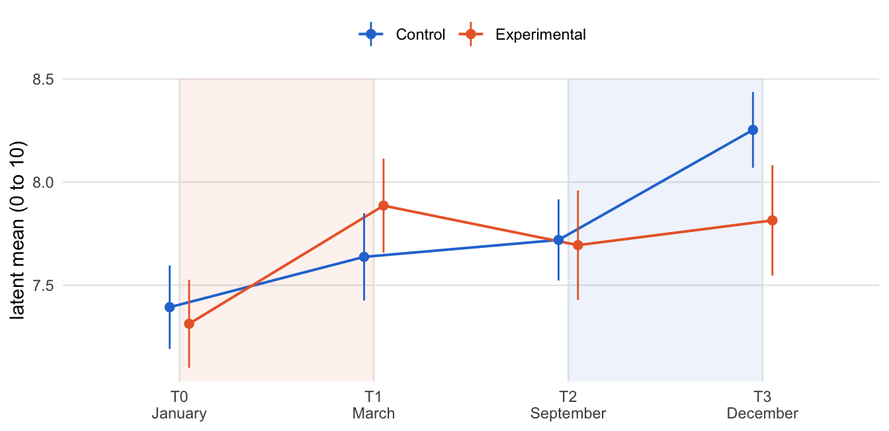
In January the experimental group lies at 7.31, the control group at 7.39. While the experimental group trains (T0 to T1), it changes by .57 and the control group by .24; while the control group trains (T2 to T3), it changes by .53 and the experimental group by .12.
Next → Step 5, the difference of these changes: the training effects.
Step 5 · The training effects both groups
How much more does the trained group change? The change of each group in the two training windows, and their difference, as a table and as a figure:
res_contrasts |>
filter(label %in% c("EG_T01", "CG_T01", "DiD_T01",
"EG_T23", "CG_T23", "DiD_T23")) |>
mutate(across(where(is.double), \(x) round(x, 3)))| label | est | se | pvalue | ci.lower | ci.upper |
|---|---|---|---|---|---|
| EG_T01 | 0.573 | 0.115 | 0.000 | 0.348 | 0.797 |
| CG_T01 | 0.244 | 0.114 | 0.032 | 0.020 | 0.468 |
| DiD_T01 | 0.329 | 0.162 | 0.042 | 0.012 | 0.646 |
| EG_T23 | 0.120 | 0.147 | 0.414 | -0.168 | 0.409 |
| CG_T23 | 0.534 | 0.094 | 0.000 | 0.350 | 0.718 |
| DiD_T23 | -0.414 | 0.175 | 0.018 | -0.756 | -0.071 |
plot_did(res_fit)While the experimental group trains, DiD = .33 (p = .042), a significant effect of the training. While the control group trains, DiD = -.41 (p = .018), the mirrored effect, significant.
How large are the effects? The latent d, with the latent standard deviation at T0 pooled over the two groups:
res_sd_T0 <- pooled_sd_T0(res_fit)
res_contrasts |>
filter(label %in% c("DiD_T01", "DiD_T23")) |>
transmute(label, DiD = est, d = est / res_sd_T0, size = cohen(d)) |>
mutate(across(where(is.double), \(x) round(x, 2)))| label | DiD | d | size |
|---|---|---|---|
| DiD_T01 | 0.33 | 0.25 | small |
| DiD_T23 | -0.41 | -0.31 | small |
The pooled latent SD at T0 is 1.32; in its units the first effect is d = .25, small, and the second d = -.31, small. Do the two training effects cancel out? The replication test, DiD (T0 to T1) + DiD (T2 to T3):
res_contrasts |>
filter(label == "Replication_test") |>
mutate(across(where(is.double), \(x) round(x, 3)))| label | est | se | pvalue | ci.lower | ci.upper |
|---|---|---|---|---|---|
| Replication_test | -0.085 | 0.23 | 0.713 | -0.536 | 0.366 |
The two effects do not detectably differ: their sum is -.08 (p = .713).
Next → Step 6, how the control group changes while it waits.
Step 6 · Drift of the control group control
Does the control group change while it waits? Its change from T0 to T1, T0 to T2 and T1 to T2:
res_contrasts |>
filter(label %in% c("CG_T01", "CG_T02", "CG_T12")) |>
mutate(across(where(is.double), \(x) round(x, 3)))| label | est | se | pvalue | ci.lower | ci.upper |
|---|---|---|---|---|---|
| CG_T01 | 0.244 | 0.114 | 0.032 | 0.020 | 0.468 |
| CG_T02 | 0.326 | 0.118 | 0.006 | 0.096 | 0.556 |
| CG_T12 | 0.082 | 0.107 | 0.443 | -0.128 | 0.292 |
The control group changes significantly from T0 to T1 and T0 to T2 before its own training; the change from T0 to T1, which the first DiD subtracts, is .24 (p = .032).
Next → Step 7, whether the latent means stay level outside the training.
Robustness · Steps 7 and 8
Step 7 · The restricted model both groups
Do the latent means stay level outside the training? The model of Steps 4 to 6 against the same model with the four equality constraints, from the script; its free model is the model of Steps 4 to 6, with the same χ²:
res_restricted <- restricted |> filter(construct == "Resonance")
res_restricted |>
transmute(`χ² free` = chisq_free, `χ² restricted` = chisq_restricted,
`Δχ²` = delta_chisq, Δdf = delta_df, p, admissible) |>
mutate(across(where(is.double), \(x) round(x, 3)))| χ² free | χ² restricted | Δχ² | Δdf | p | admissible |
|---|---|---|---|---|---|
| 1865.467 | 1875.484 | 10.149 | 4 | 0.038 | TRUE |
The four constraints cost Δχ²(4) = 10.15 (p = .038): the data reject them, and the latent means move outside the training as well.
Next → Step 8, the two effects on the sample sets.
Step 8 · The sample sets both groups
Do the effects hold on every sample set? The two training effects on the nine sample sets, from the script, as a figure and as a table; S0 is the model of Steps 4 to 6:
res_sets <- latent_sets |> filter(construct == "Resonance")
plot_sets(res_sets)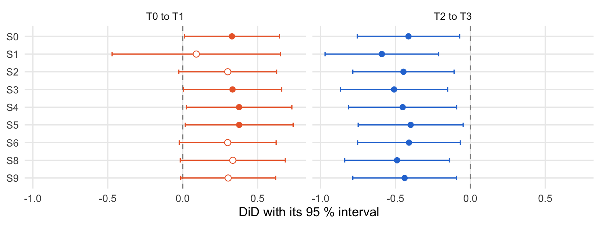
res_sets |>
unnest(estimates) |>
filter(label %in% c("DiD_T01", "DiD_T23")) |>
select(set, admissible, label, est, pvalue) |>
pivot_wider(names_from = label, values_from = c(est, pvalue),
names_glue = "{label}_{.value}") |>
select(set, admissible, starts_with("DiD_T01"), starts_with("DiD_T23")) |>
mutate(across(where(is.double), \(x) round(x, 3)))| set | admissible | DiD_T01_est | DiD_T01_pvalue | DiD_T23_est | DiD_T23_pvalue |
|---|---|---|---|---|---|
| S0 | TRUE | 0.329 | 0.042 | -0.414 | 0.018 |
| S1 | TRUE | 0.091 | 0.751 | -0.591 | 0.002 |
| S2 | TRUE | 0.301 | 0.071 | -0.447 | 0.010 |
| S3 | TRUE | 0.333 | 0.047 | -0.510 | 0.005 |
| S4 | TRUE | 0.377 | 0.036 | -0.452 | 0.014 |
| S5 | TRUE | 0.377 | 0.040 | -0.399 | 0.026 |
| S6 | TRUE | 0.301 | 0.069 | -0.410 | 0.019 |
| S8 | TRUE | 0.335 | 0.061 | -0.490 | 0.006 |
| S9 | TRUE | 0.304 | 0.060 | -0.439 | 0.013 |
The effect of the first window is significant in the expected direction in 4 of the nine sets, the mirrored effect of the second window in 9.
Next → Step 9, what the steps show together.
What follows · Step 9
Step 9 · What follows
What does Positivity Resonance show? The two training effects side by side, T0–T1 while the experimental group trains and T2–T3 while the control group trains, with the correction for testing all 20 constructs at once (11.7) and the nine sample sets of Step 8:
res_verdict <- verdict_table("Resonance", res_est, res_p, res_d, res_sets)
show_verdict(res_verdict)| window | DiD | d | size | p | p corrected | sets with the effect | range in sets |
|---|---|---|---|---|---|---|---|
| T0–T1 | 0.33 | 0.25 | small | 0.042 | 0.105 | 4 of 9 | .09 to .38 |
| T2–T3 | -0.41 | -0.31 | small | 0.018 | 0.059 | 9 of 9 | -.59 to -.40 |
Positivity Resonance shows the training effect in both rounds. While the experimental group trains, it gains .33 points more than the control group (d = .25, small; p = .042). After the correction for testing 20 constructs it does not hold (adjusted p = .105); across the sample sets its estimate ranges from .09 to .38, significant in 4 of 9. When the control group trains, it gains .41 points more than the experimental group (d = .31, small; p = .018). After the correction for testing 20 constructs it stays just above the threshold (adjusted p = .059); across the sample sets its estimate ranges from -.59 to -.40, significant in 9 of 9. The two rounds do not detectably differ (replication test, p = .713). The control group also changes before its own training (T0 to T1: .24, p = .032; T0 to T2: .33, p = .006), and the restricted model of Step 7 is rejected (p = .038): outside the training the latent means do not stay level.
What goes on to Chapter 20? The model and the two effects:
res_result <- tibble(construct = "Resonance",
covariates = TRUE,
direct = list(character()),
fit = list(res_fit))
res_result |>
transmute(construct, covariates, direct = map_chr(direct, str_flatten, "; "))| construct | covariates | direct |
|---|---|---|
| Resonance | TRUE |
Positivity Resonance enters the synthesis of Chapter 20 with both effects, adjusted for age and sex.
Belongingness
Its path through the steps. One row per step below; the label marks the data of each step:
| Step | Data | Question | Result | Next |
|---|---|---|---|---|
| 1 | both groups | What is added to Chapter 7? | covariates, contrasts | Chapter 7’s model |
| 2 | both groups | Chapter 7’s model possible, as there? | yes, the same χ² | covariates |
| 3 | both groups | Covariates only through the factors? | yes | latent means |
| 4 | both groups | Latent means | – | effects |
| 5 | both groups | Training effects | T0–T1: positive, p < .05; T2–T3: mirrored, p < .05 | drift |
| 6 | control | Drift while waiting? | yes, T0 to T1 | robustness |
| 7 | both groups | Level outside the training? | no | sample sets |
| 8 | both groups | Effects on the sample sets? | T0–T1: 5 of 9; T2–T3: 9 of 9 | what follows |
| 9 | What does it show? | T0–T1: effect; T2–T3: effect, also corrected | Chapter 20 |
The model · Steps 1 to 3
Step 1 · The model both groups
Which model does Chapter 7 hand on? Its status there: the estimates the stop rule set at 0, the items freed, and the autocorrelations:
bel_status <- invariance$adopted |>
filter(construct == "Belongingness")
bel_status |>
transmute(status, set_to_0 = map_chr(set_to_0, \(x) str_flatten(x, "; ")),
freed = map_chr(freed, \(x) str_flatten(x, "; ")))| status | set_to_0 | freed |
|---|---|---|
| adjusted (A) | Experimental: Belongingness2_T0 ~~ Belongingness2_T3; Experimental: Belongingness2_T1 ~~ Belongingness2_T3; Experimental: Belongingness2_T3 ~~ Belongingness2_T3; Experimental: Belongingness2_T2 ~~ Belongingness2_T3 |
What does the model look like? In the figure, the factors of the four waves (circles), the items (boxes) and their loadings, the links of the factors (above) and of each item with itself at the next wave (below); in green, the estimates the stop rule of Chapter 7 set at 0 in one group:
plot_model("Belongingness",
fixed = str_remove(bel_status$set_to_0[[1]], "^[A-Za-z]+: "))
What does the complete model look like? Its syntax, as did_syntax() writes it: first the final model of Chapter 7, part by part, then what this chapter adds, the covariates on the factor of every wave and the contrasts. A label shared by several lines (such as l1, t1 or a1) holds those estimates equal; c(..., ...) gives the control and the experimental group one each:
show_model(did_syntax(bel_status))# Chapter 7: one factor per wave; NA* frees the first loading
F_T0 =~ NA*Belongingness1_T0 +
l1*Belongingness1_T0 +
l2*Belongingness2_T0 +
l3*Belongingness3_T0
F_T1 =~ NA*Belongingness1_T1 +
l1*Belongingness1_T1 +
l2*Belongingness2_T1 +
l3*Belongingness3_T1
F_T2 =~ NA*Belongingness1_T2 +
l1*Belongingness1_T2 +
l2*Belongingness2_T2 +
l3*Belongingness3_T2
F_T3 =~ NA*Belongingness1_T3 +
l1*Belongingness1_T3 +
l2*Belongingness2_T3 +
l3*Belongingness3_T3
# Chapter 7: effects coding: the loadings average 1, the intercepts sum to 0
l1 + l2 + l3 == 3
t1 + t2 + t3 == 0
# Chapter 7: the latent means, free in each group
F_T0 ~ c(m_con_T0, m_exp_T0)*1
F_T1 ~ c(m_con_T1, m_exp_T1)*1
F_T2 ~ c(m_con_T2, m_exp_T2)*1
F_T3 ~ c(m_con_T3, m_exp_T3)*1
# Chapter 7: the intercepts
Belongingness1_T0 ~ t1*1
Belongingness2_T0 ~ t2*1
Belongingness3_T0 ~ t3*1
Belongingness1_T1 ~ t1*1
Belongingness2_T1 ~ t2*1
Belongingness3_T1 ~ t3*1
Belongingness1_T2 ~ t1*1
Belongingness2_T2 ~ t2*1
Belongingness3_T2 ~ t3*1
Belongingness1_T3 ~ t1*1
Belongingness2_T3 ~ t2*1
Belongingness3_T3 ~ t3*1
# Chapter 7: the factors correlate over the waves
F_T0 ~~ F_T1
F_T0 ~~ F_T2
F_T0 ~~ F_T3
F_T1 ~~ F_T2
F_T1 ~~ F_T3
F_T2 ~~ F_T3
# Chapter 7: each item's residual with itself over the waves
Belongingness1_T0 ~~ Belongingness1_T1
Belongingness1_T0 ~~ Belongingness1_T2
Belongingness1_T0 ~~ Belongingness1_T3
Belongingness1_T1 ~~ Belongingness1_T2
Belongingness1_T1 ~~ Belongingness1_T3
Belongingness1_T2 ~~ Belongingness1_T3
Belongingness2_T0 ~~ Belongingness2_T1
Belongingness2_T0 ~~ Belongingness2_T2
Belongingness2_T0 ~~ Belongingness2_T3
Belongingness2_T1 ~~ Belongingness2_T2
Belongingness2_T1 ~~ Belongingness2_T3
Belongingness2_T2 ~~ Belongingness2_T3
Belongingness3_T0 ~~ Belongingness3_T1
Belongingness3_T0 ~~ Belongingness3_T2
Belongingness3_T0 ~~ Belongingness3_T3
Belongingness3_T1 ~~ Belongingness3_T2
Belongingness3_T1 ~~ Belongingness3_T3
Belongingness3_T2 ~~ Belongingness3_T3
# Chapter 7: set at 0 in one group (adjustment A)
Belongingness2_T0 ~~ c(NA, 0)*Belongingness2_T3
Belongingness2_T1 ~~ c(NA, 0)*Belongingness2_T3
Belongingness2_T3 ~~ c(NA, 0)*Belongingness2_T3
Belongingness2_T2 ~~ c(NA, 0)*Belongingness2_T3
# added here: age and sex on the factor of every wave
F_T0 ~ age_c + female_c
F_T1 ~ age_c + female_c
F_T2 ~ age_c + female_c
F_T3 ~ age_c + female_c
# added here: every contrast as a parameter
EG_T01 := (m_exp_T1 - m_exp_T0)
CG_T01 := (m_con_T1 - m_con_T0)
DiD_T01 := (m_exp_T1 - m_exp_T0) - (m_con_T1 - m_con_T0)
EG_T02 := (m_exp_T2 - m_exp_T0)
CG_T02 := (m_con_T2 - m_con_T0)
DiD_T02 := (m_exp_T2 - m_exp_T0) - (m_con_T2 - m_con_T0)
EG_T03 := (m_exp_T3 - m_exp_T0)
CG_T03 := (m_con_T3 - m_con_T0)
DiD_T03 := (m_exp_T3 - m_exp_T0) - (m_con_T3 - m_con_T0)
EG_T12 := (m_exp_T2 - m_exp_T1)
CG_T12 := (m_con_T2 - m_con_T1)
DiD_T12 := (m_exp_T2 - m_exp_T1) - (m_con_T2 - m_con_T1)
EG_T13 := (m_exp_T3 - m_exp_T1)
CG_T13 := (m_con_T3 - m_con_T1)
DiD_T13 := (m_exp_T3 - m_exp_T1) - (m_con_T3 - m_con_T1)
EG_T23 := (m_exp_T3 - m_exp_T2)
CG_T23 := (m_con_T3 - m_con_T2)
DiD_T23 := (m_exp_T3 - m_exp_T2) - (m_con_T3 - m_con_T2)
Replication_test := (m_exp_T1 - m_exp_T0) - (m_con_T1 - m_con_T0) + (m_exp_T3 - m_exp_T2) - (m_con_T3 - m_con_T2)Next → Step 2, the model of Chapter 7 again, without the covariates.
Step 2 · The model of Chapter 7 both groups
What is fitted? The model of Chapter 7 with the contrasts, without the covariates:
bel_base <- df_wide |>
sem(model = did_syntax(bel_status, covariates = FALSE), data = _,
group = "condition", estimator = "MLR", missing = "fiml")Does it pass the checks, and is it the model of Chapter 7? The checks of Chapter 7, and its χ² next to that of Chapter 7, Step 8:
bel_base_checks <- model_checks(bel_base)
bel_base_checks| check | what | value | criterion | holds |
|---|---|---|---|---|
| 1 estimation | converged | yes | yes | ✓ |
| 2 variances | smallest residual variance: item 2 at T3 (Experimental) | .000 | above 0 | ✓ |
| 3 correlations | largest correlation: the factors at T1 and T2 (Control) | .882 | within ±1 | ✓ |
| 4 residuals | smallest eigenvalue of the residual covariances | .000 | above 0 | ✓ |
| 5 factors | smallest eigenvalue of the factor covariances | .316 | above 0 | ✓ |
| 6 standard errors | estimated for every free parameter | yes | yes | ✓ |
| 7 fit | CFI | .972 | reported | – |
| 8 fit | RMSEA [90 % interval] | .060 [.045, .074] | reported | – |
| 9 fit | SRMR | .065 | reported | – |
| 10 strain | largest modification index: item 1 with item 2 at T0 (Experimental) | 8.9 | reported | – |
| 11 estimates | smallest standardized loading: item 1 at T0 (Experimental) | .73 | reported | – |
bel_chapter7 <- invariance$steps |>
filter(construct == "Belongingness", part == "both groups",
level == "intercepts across groups")
tibble(model = c("here", "Chapter 7"),
chisq = c(fitMeasures(bel_base, "chisq.scaled"), bel_chapter7$chisq),
df = c(fitMeasures(bel_base, "df"), bel_chapter7$df)) |>
mutate(chisq = round(chisq, 3))| model | chisq | df |
|---|---|---|
| here | 151.095 | 92 |
| Chapter 7 | 151.095 | 92 |
Checks 1 to 6 hold, and the χ² is that of Chapter 7 (151.095): the model is the one Chapter 7 settled on, and the contrasts add no constraint.
Next → Step 3, the same model with the covariates.
Step 3 · The covariates both groups
What is fitted? The model of Step 1, with age and sex on the factors, and the comparison model, with a direct effect of each on every item at every wave and no path to the factors:
bel_covariates <- df_wide |>
sem(model = did_syntax(bel_status), data = _, group = "condition",
estimator = "MLR", missing = "fiml.x")
bel_everywhere <- df_wide |>
sem(model = direct_everywhere(bel_status), data = _, group = "condition",
estimator = "MLR", missing = "fiml.x")What does the comparison model hold? The model of Chapter 7 from Step 1, and in place of the paths to the factors a direct effect of age and sex on every item at every wave; it needs no contrasts. These are its lines beyond Chapter 7:
show_model(direct_everywhere(bel_status), added_only = TRUE)# added here: age or sex directly on single items
Belongingness1_T0 ~ age_c + female_c
Belongingness2_T0 ~ age_c + female_c
Belongingness3_T0 ~ age_c + female_c
Belongingness1_T1 ~ age_c + female_c
Belongingness2_T1 ~ age_c + female_c
Belongingness3_T1 ~ age_c + female_c
Belongingness1_T2 ~ age_c + female_c
Belongingness2_T2 ~ age_c + female_c
Belongingness3_T2 ~ age_c + female_c
Belongingness1_T3 ~ age_c + female_c
Belongingness2_T3 ~ age_c + female_c
Belongingness3_T3 ~ age_c + female_cDoes the model with the covariates pass the checks?
bel_covariates_checks <- model_checks(bel_covariates)
bel_covariates_checks| check | what | value | criterion | holds |
|---|---|---|---|---|
| 1 estimation | converged | yes | yes | ✓ |
| 2 variances | smallest residual variance: item 2 at T3 (Experimental) | .000 | above 0 | ✓ |
| 3 correlations | largest correlation: the factors at T1 and T2 (Control) | .879 | within ±1 | ✓ |
| 4 residuals | smallest eigenvalue of the residual covariances | .000 | above 0 | ✓ |
| 5 factors | smallest eigenvalue of the factor covariances | .322 | above 0 | ✓ |
| 6 standard errors | estimated for every free parameter | yes | yes | ✓ |
| 7 fit | CFI | .969 | reported | – |
| 8 fit | RMSEA [90 % interval] | .054 [.040, .067] | reported | – |
| 9 fit | SRMR | .063 | reported | – |
| 10 strain | largest modification index: item 1 with item 2 at T0 (Experimental) | 6.8 | reported | – |
| 11 estimates | smallest standardized loading: item 1 at T0 (Experimental) | .73 | reported | – |
Checks 1 to 6 hold. Its CFI, .969, stands beside .972 in Step 2, for description only: the two models do not hold the same variables. Do age and sex act only through the factors? The model of Step 1 against the comparison model:
bel_step <- covariate_step(bel_covariates, bel_everywhere)
show_step(bel_step)| model | df | CFI | RMSEA | ΔCFI | ΔRMSEA | p | Chen |
|---|---|---|---|---|---|---|---|
| direct effects on every item | 92 | 0.974 | 0.058 | ||||
| only through the factors | 124 | 0.969 | 0.054 | -0.004 | -0.004 | 0.087 | ✓ |
They do, under Chen’s cutoffs (ΔCFI = -.004, ΔRMSEA = -.004; χ² test: p = .087): the covariates enter as specified.
bel_fit <- bel_covariates # the model of Steps 4 to 8Next → Step 4, the latent means of this model.
The effects · Steps 4 to 6
Step 4 · Latent means both groups
Where does each group stand at each wave? The eight latent means with their 95 % confidence intervals, at the sample’s average age and share of women:
bel_means <- parameterEstimates(bel_fit) |>
filter(op == "~1", str_starts(lhs, "F_")) |>
select(label, est, se, ci.lower, ci.upper)
# the contrasts between them, for Steps 4 to 6
bel_contrasts <- contrasts_of(bel_fit, c(
"EG_T01", "CG_T01", "DiD_T01", "EG_T23", "CG_T23", "DiD_T23",
"Replication_test", "CG_T02", "CG_T12"))
bel_means |>
mutate(across(where(is.double), \(x) round(x, 2)))| label | est | se | ci.lower | ci.upper |
|---|---|---|---|---|
| m_con_T0 | 8.02 | 0.12 | 7.78 | 8.26 |
| m_con_T1 | 8.36 | 0.12 | 8.12 | 8.60 |
| m_con_T2 | 8.25 | 0.12 | 8.02 | 8.49 |
| m_con_T3 | 8.80 | 0.11 | 8.58 | 9.02 |
| m_exp_T0 | 8.04 | 0.12 | 7.80 | 8.28 |
| m_exp_T1 | 8.76 | 0.10 | 8.57 | 8.96 |
| m_exp_T2 | 8.51 | 0.12 | 8.28 | 8.74 |
| m_exp_T3 | 8.41 | 0.19 | 8.04 | 8.78 |
plot_latent_means(bel_fit)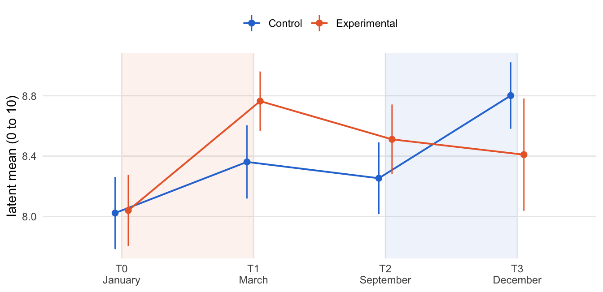
In January the experimental group lies at 8.04, the control group at 8.02. While the experimental group trains (T0 to T1), it changes by .72 and the control group by .34; while the control group trains (T2 to T3), it changes by .55 and the experimental group by -.10.
Next → Step 5, the difference of these changes: the training effects.
Step 5 · The training effects both groups
How much more does the trained group change? The change of each group in the two training windows, and their difference, as a table and as a figure:
bel_contrasts |>
filter(label %in% c("EG_T01", "CG_T01", "DiD_T01",
"EG_T23", "CG_T23", "DiD_T23")) |>
mutate(across(where(is.double), \(x) round(x, 3)))| label | est | se | pvalue | ci.lower | ci.upper |
|---|---|---|---|---|---|
| EG_T01 | 0.724 | 0.134 | 0.000 | 0.461 | 0.987 |
| CG_T01 | 0.339 | 0.131 | 0.010 | 0.082 | 0.595 |
| DiD_T01 | 0.386 | 0.187 | 0.039 | 0.020 | 0.751 |
| EG_T23 | -0.101 | 0.168 | 0.546 | -0.431 | 0.228 |
| CG_T23 | 0.548 | 0.108 | 0.000 | 0.337 | 0.758 |
| DiD_T23 | -0.649 | 0.201 | 0.001 | -1.042 | -0.256 |
plot_did(bel_fit)While the experimental group trains, DiD = .39 (p = .039), a significant effect of the training. While the control group trains, DiD = -.65 (p = .001), the mirrored effect, significant.
How large are the effects? The latent d, with the latent standard deviation at T0 pooled over the two groups:
bel_sd_T0 <- pooled_sd_T0(bel_fit)
bel_contrasts |>
filter(label %in% c("DiD_T01", "DiD_T23")) |>
transmute(label, DiD = est, d = est / bel_sd_T0, size = cohen(d)) |>
mutate(across(where(is.double), \(x) round(x, 2)))| label | DiD | d | size |
|---|---|---|---|
| DiD_T01 | 0.39 | 0.24 | small |
| DiD_T23 | -0.65 | -0.40 | small |
The pooled latent SD at T0 is 1.62; in its units the first effect is d = .24, small, and the second d = -.40, small. Do the two training effects cancel out? The replication test, DiD (T0 to T1) + DiD (T2 to T3):
bel_contrasts |>
filter(label == "Replication_test") |>
mutate(across(where(is.double), \(x) round(x, 3)))| label | est | se | pvalue | ci.lower | ci.upper |
|---|---|---|---|---|---|
| Replication_test | -0.263 | 0.258 | 0.307 | -0.769 | 0.243 |
The two effects do not detectably differ: their sum is -.26 (p = .307).
Next → Step 6, how the control group changes while it waits.
Step 6 · Drift of the control group control
Does the control group change while it waits? Its change from T0 to T1, T0 to T2 and T1 to T2:
bel_contrasts |>
filter(label %in% c("CG_T01", "CG_T02", "CG_T12")) |>
mutate(across(where(is.double), \(x) round(x, 3)))| label | est | se | pvalue | ci.lower | ci.upper |
|---|---|---|---|---|---|
| CG_T01 | 0.339 | 0.131 | 0.010 | 0.082 | 0.595 |
| CG_T02 | 0.230 | 0.129 | 0.075 | -0.023 | 0.484 |
| CG_T12 | -0.108 | 0.102 | 0.292 | -0.309 | 0.093 |
The control group changes significantly from T0 to T1 before its own training; the change from T0 to T1, which the first DiD subtracts, is .34 (p = .010).
Next → Step 7, whether the latent means stay level outside the training.
Robustness · Steps 7 and 8
Step 7 · The restricted model both groups
Do the latent means stay level outside the training? The model of Steps 4 to 6 against the same model with the four equality constraints, from the script; its free model is the model of Steps 4 to 6, with the same χ²:
bel_restricted <- restricted |> filter(construct == "Belongingness")
bel_restricted |>
transmute(`χ² free` = chisq_free, `χ² restricted` = chisq_restricted,
`Δχ²` = delta_chisq, Δdf = delta_df, p, admissible) |>
mutate(across(where(is.double), \(x) round(x, 3)))| χ² free | χ² restricted | Δχ² | Δdf | p | admissible |
|---|---|---|---|---|---|
| 190.967 | 202.59 | 11.843 | 4 | 0.019 | TRUE |
The four constraints cost Δχ²(4) = 11.84 (p = .019): the data reject them, and the latent means move outside the training as well.
Next → Step 8, the two effects on the sample sets.
Step 8 · The sample sets both groups
Do the effects hold on every sample set? The two training effects on the nine sample sets, from the script, as a figure and as a table; S0 is the model of Steps 4 to 6:
bel_sets <- latent_sets |> filter(construct == "Belongingness")
plot_sets(bel_sets)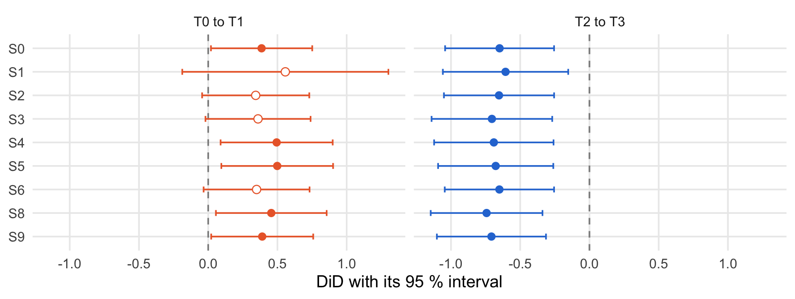
bel_sets |>
unnest(estimates) |>
filter(label %in% c("DiD_T01", "DiD_T23")) |>
select(set, admissible, label, est, pvalue) |>
pivot_wider(names_from = label, values_from = c(est, pvalue),
names_glue = "{label}_{.value}") |>
select(set, admissible, starts_with("DiD_T01"), starts_with("DiD_T23")) |>
mutate(across(where(is.double), \(x) round(x, 3)))| set | admissible | DiD_T01_est | DiD_T01_pvalue | DiD_T23_est | DiD_T23_pvalue |
|---|---|---|---|---|---|
| S0 | TRUE | 0.386 | 0.039 | -0.649 | 0.001 |
| S1 | FALSE | 0.557 | 0.142 | -0.606 | 0.009 |
| S2 | TRUE | 0.343 | 0.082 | -0.653 | 0.001 |
| S3 | TRUE | 0.360 | 0.063 | -0.704 | 0.002 |
| S4 | TRUE | 0.494 | 0.017 | -0.691 | 0.002 |
| S5 | TRUE | 0.498 | 0.016 | -0.677 | 0.001 |
| S6 | TRUE | 0.349 | 0.073 | -0.650 | 0.001 |
| S8 | TRUE | 0.455 | 0.026 | -0.743 | 0.000 |
| S9 | TRUE | 0.390 | 0.038 | -0.708 | 0.000 |
The effect of the first window is significant in the expected direction in 5 of the nine sets, the mirrored effect of the second window in 9. In 1 of the sets the solution is not possible (a negative variance or covariances that are not positive definite, on fewer persons than S0); their estimates are read with caution.
Next → Step 9, what the steps show together.
What follows · Step 9
Step 9 · What follows
What does Belongingness show? The two training effects side by side, T0–T1 while the experimental group trains and T2–T3 while the control group trains, with the correction for testing all 20 constructs at once (11.7) and the nine sample sets of Step 8:
bel_verdict <- verdict_table("Belongingness", bel_est, bel_p, bel_d, bel_sets)
show_verdict(bel_verdict)| window | DiD | d | size | p | p corrected | sets with the effect | range in sets |
|---|---|---|---|---|---|---|---|
| T0–T1 | 0.39 | 0.24 | small | 0.039 | 0.105 | 5 of 9 | .34 to .56 |
| T2–T3 | -0.65 | -0.40 | small | 0.001 | 0.024 | 9 of 9 | -.74 to -.61 |
Belongingness shows the training effect in both rounds. While the experimental group trains, it gains .39 points more than the control group (d = .24, small; p = .039). After the correction for testing 20 constructs it does not hold (adjusted p = .105); across the sample sets its estimate ranges from .34 to .56, significant in 5 of 9. When the control group trains, it gains .65 points more than the experimental group (d = .40, small; p = .001). It holds after the correction for testing 20 constructs (adjusted p = .024) and in 9 of 9 sample sets. The two rounds do not detectably differ (replication test, p = .307). The control group also changes before its own training (T0 to T1: .34, p = .010), and the restricted model of Step 7 is rejected (p = .019): outside the training the latent means do not stay level.
What goes on to Chapter 20? The model and the two effects:
bel_result <- tibble(construct = "Belongingness",
covariates = TRUE,
direct = list(character()),
fit = list(bel_fit))
bel_result |>
transmute(construct, covariates, direct = map_chr(direct, str_flatten, "; "))| construct | covariates | direct |
|---|---|---|
| Belongingness | TRUE |
Belongingness enters the synthesis of Chapter 20 with both effects, adjusted for age and sex.
No Alienation
Its path through the steps. One row per step below; the label marks the data of each step:
| Step | Data | Question | Result | Next |
|---|---|---|---|---|
| 1 | both groups | What is added to Chapter 7? | covariates, contrasts | Chapter 7’s model |
| 2 | both groups | Chapter 7’s model possible, as there? | yes, the same χ² | covariates |
| 3 | both groups | Covariates only through the factors? | yes | latent means |
| 4 | both groups | Latent means | – | effects |
| 5 | both groups | Training effects | T0–T1: against, p < .05; T2–T3: n.s. | drift |
| 6 | control | Drift while waiting? | yes, T1 to T2 | robustness |
| 7 | both groups | Level outside the training? | yes | sample sets |
| 8 | both groups | Effects on the sample sets? | T0–T1: 0 of 9; T2–T3: 0 of 9 | what follows |
| 9 | What does it show? | T0–T1: against the training, also corrected | Chapter 20 |
The model · Steps 1 to 3
Step 1 · The model both groups
Which model does Chapter 7 hand on? Its status there: the estimates the stop rule set at 0, the items freed, and the autocorrelations:
nal_status <- invariance$adopted |>
filter(construct == "NoAlienation")
nal_status |>
transmute(status, set_to_0 = map_chr(set_to_0, \(x) str_flatten(x, "; ")),
freed = map_chr(freed, \(x) str_flatten(x, "; ")))| status | set_to_0 | freed |
|---|---|---|
| adjusted (B) |
What does the model look like? In the figure, the factors of the four waves (circles), the items (boxes) and their loadings, the links of the factors (above) and of each item with itself at the next wave (below); in green, the estimates the stop rule of Chapter 7 set at 0 in one group:
plot_model("NoAlienation",
fixed = str_remove(nal_status$set_to_0[[1]], "^[A-Za-z]+: "))
What does the complete model look like? Its syntax, as did_syntax() writes it: first the final model of Chapter 7, part by part, then what this chapter adds, the covariates on the factor of every wave and the contrasts. A label shared by several lines (such as l1, t1 or a1) holds those estimates equal; c(..., ...) gives the control and the experimental group one each:
show_model(did_syntax(nal_status))# Chapter 7: one factor per wave; both items load 1
F_T0 =~ 1*NoAlienation1_T0 +
1*NoAlienation2_T0
F_T1 =~ 1*NoAlienation1_T1 +
1*NoAlienation2_T1
F_T2 =~ 1*NoAlienation1_T2 +
1*NoAlienation2_T2
F_T3 =~ 1*NoAlienation1_T3 +
1*NoAlienation2_T3
# Chapter 7: effects coding: the loadings average 1, the intercepts sum to 0
t1 + t2 == 0
# Chapter 7: the latent means, free in each group
F_T0 ~ c(m_con_T0, m_exp_T0)*1
F_T1 ~ c(m_con_T1, m_exp_T1)*1
F_T2 ~ c(m_con_T2, m_exp_T2)*1
F_T3 ~ c(m_con_T3, m_exp_T3)*1
# Chapter 7: the intercepts
NoAlienation1_T0 ~ t1*1
NoAlienation2_T0 ~ t2*1
NoAlienation1_T1 ~ t1*1
NoAlienation2_T1 ~ t2*1
NoAlienation1_T2 ~ t1*1
NoAlienation2_T2 ~ t2*1
NoAlienation1_T3 ~ t1*1
NoAlienation2_T3 ~ t2*1
# Chapter 7: the factors correlate over the waves
F_T0 ~~ F_T1
F_T0 ~~ F_T2
F_T0 ~~ F_T3
F_T1 ~~ F_T2
F_T1 ~~ F_T3
F_T2 ~~ F_T3
# Chapter 7: each item's residual with itself over the waves
NoAlienation1_T0 ~~ c(a1_con, a1_T0T1_exp)*NoAlienation1_T1
NoAlienation1_T0 ~~ c(a1_con, a1_T0T2_exp)*NoAlienation1_T2
NoAlienation1_T0 ~~ c(a1_con, a1_T0T3_exp)*NoAlienation1_T3
NoAlienation1_T1 ~~ c(a1_con, a1_T1T2_exp)*NoAlienation1_T2
NoAlienation1_T1 ~~ c(a1_con, a1_T1T3_exp)*NoAlienation1_T3
NoAlienation1_T2 ~~ c(a1_con, a1_T2T3_exp)*NoAlienation1_T3
NoAlienation2_T0 ~~ c(a2_con, a2_T0T1_exp)*NoAlienation2_T1
NoAlienation2_T0 ~~ c(a2_con, a2_T0T2_exp)*NoAlienation2_T2
NoAlienation2_T0 ~~ c(a2_con, a2_T0T3_exp)*NoAlienation2_T3
NoAlienation2_T1 ~~ c(a2_con, a2_T1T2_exp)*NoAlienation2_T2
NoAlienation2_T1 ~~ c(a2_con, a2_T1T3_exp)*NoAlienation2_T3
NoAlienation2_T2 ~~ c(a2_con, a2_T2T3_exp)*NoAlienation2_T3
# added here: age and sex on the factor of every wave
F_T0 ~ age_c + female_c
F_T1 ~ age_c + female_c
F_T2 ~ age_c + female_c
F_T3 ~ age_c + female_c
# added here: every contrast as a parameter
EG_T01 := (m_exp_T1 - m_exp_T0)
CG_T01 := (m_con_T1 - m_con_T0)
DiD_T01 := (m_exp_T1 - m_exp_T0) - (m_con_T1 - m_con_T0)
EG_T02 := (m_exp_T2 - m_exp_T0)
CG_T02 := (m_con_T2 - m_con_T0)
DiD_T02 := (m_exp_T2 - m_exp_T0) - (m_con_T2 - m_con_T0)
EG_T03 := (m_exp_T3 - m_exp_T0)
CG_T03 := (m_con_T3 - m_con_T0)
DiD_T03 := (m_exp_T3 - m_exp_T0) - (m_con_T3 - m_con_T0)
EG_T12 := (m_exp_T2 - m_exp_T1)
CG_T12 := (m_con_T2 - m_con_T1)
DiD_T12 := (m_exp_T2 - m_exp_T1) - (m_con_T2 - m_con_T1)
EG_T13 := (m_exp_T3 - m_exp_T1)
CG_T13 := (m_con_T3 - m_con_T1)
DiD_T13 := (m_exp_T3 - m_exp_T1) - (m_con_T3 - m_con_T1)
EG_T23 := (m_exp_T3 - m_exp_T2)
CG_T23 := (m_con_T3 - m_con_T2)
DiD_T23 := (m_exp_T3 - m_exp_T2) - (m_con_T3 - m_con_T2)
Replication_test := (m_exp_T1 - m_exp_T0) - (m_con_T1 - m_con_T0) + (m_exp_T3 - m_exp_T2) - (m_con_T3 - m_con_T2)Next → Step 2, the model of Chapter 7 again, without the covariates.
Step 2 · The model of Chapter 7 both groups
What is fitted? The model of Chapter 7 with the contrasts, without the covariates:
nal_base <- df_wide |>
sem(model = did_syntax(nal_status, covariates = FALSE), data = _,
group = "condition", estimator = "MLR", missing = "fiml")Does it pass the checks, and is it the model of Chapter 7? The checks of Chapter 7, and its χ² next to that of Chapter 7, Step 8:
nal_base_checks <- model_checks(nal_base)
nal_base_checks| check | what | value | criterion | holds |
|---|---|---|---|---|
| 1 estimation | converged | yes | yes | ✓ |
| 2 variances | smallest residual variance: item 2 at T3 (Experimental) | .665 | above 0 | ✓ |
| 3 correlations | largest correlation: item 1, T2 with T3 (Experimental) | .720 | within ±1 | ✓ |
| 4 residuals | smallest eigenvalue of the residual covariances | .266 | above 0 | ✓ |
| 5 factors | smallest eigenvalue of the factor covariances | 2.019 | above 0 | ✓ |
| 6 standard errors | estimated for every free parameter | yes | yes | ✓ |
| 7 fit | CFI | .984 | reported | – |
| 8 fit | RMSEA [90 % interval] | .067 [.041, .092] | reported | – |
| 9 fit | SRMR | .033 | reported | – |
| 10 strain | largest modification index: item 2 with item 1 at T0 (Control) | 17.9 | reported | – |
| 11 estimates | smallest standardized loading: item 1 at T2 (Control) | .88 | reported | – |
nal_chapter7 <- invariance$steps |>
filter(construct == "NoAlienation", part == "both groups",
level == "intercepts across groups")
tibble(model = c("here", "Chapter 7"),
chisq = c(fitMeasures(nal_base, "chisq.scaled"), nal_chapter7$chisq),
df = c(fitMeasures(nal_base, "df"), nal_chapter7$df)) |>
mutate(chisq = round(chisq, 3))| model | chisq | df |
|---|---|---|
| here | 51.604 | 29 |
| Chapter 7 | 51.604 | 29 |
Checks 1 to 6 hold, and the χ² is that of Chapter 7 (51.604): the model is the one Chapter 7 settled on, and the contrasts add no constraint.
Next → Step 3, the same model with the covariates.
Step 3 · The covariates both groups
What is fitted? The model of Step 1, with age and sex on the factors, and the comparison model, with a direct effect of each on every item at every wave and no path to the factors:
nal_covariates <- df_wide |>
sem(model = did_syntax(nal_status), data = _, group = "condition",
estimator = "MLR", missing = "fiml.x")
nal_everywhere <- df_wide |>
sem(model = direct_everywhere(nal_status), data = _, group = "condition",
estimator = "MLR", missing = "fiml.x")What does the comparison model hold? The model of Chapter 7 from Step 1, and in place of the paths to the factors a direct effect of age and sex on every item at every wave; it needs no contrasts. These are its lines beyond Chapter 7:
show_model(direct_everywhere(nal_status), added_only = TRUE)# added here: age or sex directly on single items
NoAlienation1_T0 ~ age_c + female_c
NoAlienation2_T0 ~ age_c + female_c
NoAlienation1_T1 ~ age_c + female_c
NoAlienation2_T1 ~ age_c + female_c
NoAlienation1_T2 ~ age_c + female_c
NoAlienation2_T2 ~ age_c + female_c
NoAlienation1_T3 ~ age_c + female_c
NoAlienation2_T3 ~ age_c + female_cDoes the model with the covariates pass the checks?
nal_covariates_checks <- model_checks(nal_covariates)
nal_covariates_checks| check | what | value | criterion | holds |
|---|---|---|---|---|
| 1 estimation | converged | yes | yes | ✓ |
| 2 variances | .090 | above 0 | ✓ | |
| 3 correlations | largest correlation: item 1, T2 with T3 (Experimental) | .734 | within ±1 | ✓ |
| 4 residuals | smallest eigenvalue of the residual covariances | .090 | above 0 | ✓ |
| 5 factors | smallest eigenvalue of the factor covariances | 2.023 | above 0 | ✓ |
| 6 standard errors | estimated for every free parameter | yes | yes | ✓ |
| 7 fit | CFI | .984 | reported | – |
| 8 fit | RMSEA [90 % interval] | .054 [.031, .075] | reported | – |
| 9 fit | SRMR | .029 | reported | – |
| 10 strain | largest modification index: item 2 with item 1 at T0 (Control) | 18.3 | reported | – |
| 11 estimates | smallest standardized loading: item 1 at T2 (Control) | .88 | reported | – |
Checks 1 to 6 hold. Its CFI, .984, stands beside .984 in Step 2, for description only: the two models do not hold the same variables. Do age and sex act only through the factors? The model of Step 1 against the comparison model:
nal_step <- covariate_step(nal_covariates, nal_everywhere)
show_step(nal_step)| model | df | CFI | RMSEA | ΔCFI | ΔRMSEA | p | Chen |
|---|---|---|---|---|---|---|---|
| direct effects on every item | 29 | 0.983 | 0.070 | ||||
| only through the factors | 45 | 0.984 | 0.054 | 0.001 | -0.016 | 0.227 | ✓ |
They do, under Chen’s cutoffs (ΔCFI = .001, ΔRMSEA = -.016; χ² test: p = .227): the covariates enter as specified.
nal_fit <- nal_covariates # the model of Steps 4 to 8Next → Step 4, the latent means of this model.
The effects · Steps 4 to 6
Step 4 · Latent means both groups
Where does each group stand at each wave? The eight latent means with their 95 % confidence intervals, at the sample’s average age and share of women:
nal_means <- parameterEstimates(nal_fit) |>
filter(op == "~1", str_starts(lhs, "F_")) |>
select(label, est, se, ci.lower, ci.upper)
# the contrasts between them, for Steps 4 to 6
nal_contrasts <- contrasts_of(nal_fit, c(
"EG_T01", "CG_T01", "DiD_T01", "EG_T23", "CG_T23", "DiD_T23",
"Replication_test", "CG_T02", "CG_T12"))
nal_means |>
mutate(across(where(is.double), \(x) round(x, 2)))| label | est | se | ci.lower | ci.upper |
|---|---|---|---|---|
| m_con_T0 | 4.63 | 0.23 | 4.19 | 5.08 |
| m_con_T1 | 4.87 | 0.25 | 4.38 | 5.35 |
| m_con_T2 | 4.31 | 0.23 | 3.86 | 4.77 |
| m_con_T3 | 4.31 | 0.25 | 3.83 | 4.79 |
| m_exp_T0 | 4.78 | 0.22 | 4.34 | 5.22 |
| m_exp_T1 | 4.13 | 0.23 | 3.69 | 4.58 |
| m_exp_T2 | 4.66 | 0.28 | 4.10 | 5.22 |
| m_exp_T3 | 4.41 | 0.40 | 3.63 | 5.20 |
plot_latent_means(nal_fit)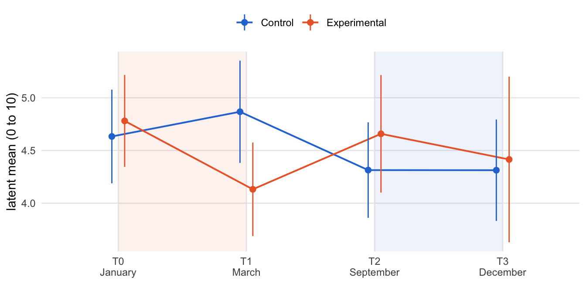
In January the experimental group lies at 4.78, the control group at 4.63. While the experimental group trains (T0 to T1), it changes by -.65 and the control group by .23; while the control group trains (T2 to T3), it changes by -.00 and the experimental group by -.24.
Next → Step 5, the difference of these changes: the training effects.
Step 5 · The training effects both groups
How much more does the trained group change? The change of each group in the two training windows, and their difference, as a table and as a figure:
nal_contrasts |>
filter(label %in% c("EG_T01", "CG_T01", "DiD_T01",
"EG_T23", "CG_T23", "DiD_T23")) |>
mutate(across(where(is.double), \(x) round(x, 3)))| label | est | se | pvalue | ci.lower | ci.upper |
|---|---|---|---|---|---|
| EG_T01 | -0.649 | 0.241 | 0.007 | -1.121 | -0.177 |
| CG_T01 | 0.234 | 0.245 | 0.338 | -0.245 | 0.714 |
| DiD_T01 | -0.883 | 0.343 | 0.010 | -1.556 | -0.211 |
| EG_T23 | -0.243 | 0.478 | 0.611 | -1.179 | 0.693 |
| CG_T23 | -0.001 | 0.234 | 0.996 | -0.459 | 0.457 |
| DiD_T23 | -0.242 | 0.532 | 0.649 | -1.285 | 0.801 |
plot_did(nal_fit)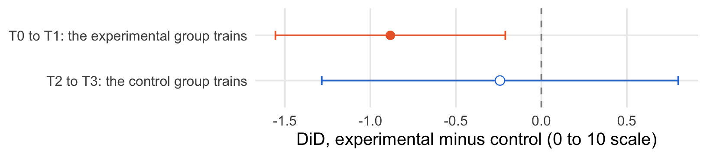
While the experimental group trains, DiD = -.88 (p = .010), significant, but against the training. While the control group trains, DiD = -.24 (p = .649), not significant.
How large are the effects? The latent d, with the latent standard deviation at T0 pooled over the two groups:
nal_sd_T0 <- pooled_sd_T0(nal_fit)
nal_contrasts |>
filter(label %in% c("DiD_T01", "DiD_T23")) |>
transmute(label, DiD = est, d = est / nal_sd_T0, size = cohen(d)) |>
mutate(across(where(is.double), \(x) round(x, 2)))| label | DiD | d | size |
|---|---|---|---|
| DiD_T01 | -0.88 | -0.30 | small |
| DiD_T23 | -0.24 | -0.08 | negligible |
The pooled latent SD at T0 is 2.92; in its units the first effect is d = -.30, small, and the second d = -.08, negligible. Do the two training effects cancel out? The replication test, DiD (T0 to T1) + DiD (T2 to T3):
nal_contrasts |>
filter(label == "Replication_test") |>
mutate(across(where(is.double), \(x) round(x, 3)))| label | est | se | pvalue | ci.lower | ci.upper |
|---|---|---|---|---|---|
| Replication_test | -1.125 | 0.617 | 0.068 | -2.334 | 0.084 |
The two effects do not detectably differ: their sum is -1.13 (p = .068).
Next → Step 6, how the control group changes while it waits.
Step 6 · Drift of the control group control
Does the control group change while it waits? Its change from T0 to T1, T0 to T2 and T1 to T2:
nal_contrasts |>
filter(label %in% c("CG_T01", "CG_T02", "CG_T12")) |>
mutate(across(where(is.double), \(x) round(x, 3)))| label | est | se | pvalue | ci.lower | ci.upper |
|---|---|---|---|---|---|
| CG_T01 | 0.234 | 0.245 | 0.338 | -0.245 | 0.714 |
| CG_T02 | -0.319 | 0.248 | 0.198 | -0.805 | 0.167 |
| CG_T12 | -0.554 | 0.275 | 0.044 | -1.093 | -0.014 |
The control group changes significantly from T1 to T2 before its own training; the change from T0 to T1, which the first DiD subtracts, is .23 (p = .338).
Next → Step 7, whether the latent means stay level outside the training.
Robustness · Steps 7 and 8
Step 7 · The restricted model both groups
Do the latent means stay level outside the training? The model of Steps 4 to 6 against the same model with the four equality constraints, from the script; its free model is the model of Steps 4 to 6, with the same χ²:
nal_restricted <- restricted |> filter(construct == "NoAlienation")
nal_restricted |>
transmute(`χ² free` = chisq_free, `χ² restricted` = chisq_restricted,
`Δχ²` = delta_chisq, Δdf = delta_df, p, admissible) |>
mutate(across(where(is.double), \(x) round(x, 3)))| χ² free | χ² restricted | Δχ² | Δdf | p | admissible |
|---|---|---|---|---|---|
| 76.872 | 84.296 | 7.412 | 4 | 0.116 | TRUE |
The four constraints cost Δχ²(4) = 7.41 (p = .116), and the data do not reject them: the latent means stay level outside the training.
Next → Step 8, the two effects on the sample sets.
Step 8 · The sample sets both groups
Do the effects hold on every sample set? The two training effects on the nine sample sets, from the script, as a figure and as a table; S0 is the model of Steps 4 to 6:
nal_sets <- latent_sets |> filter(construct == "NoAlienation")
plot_sets(nal_sets)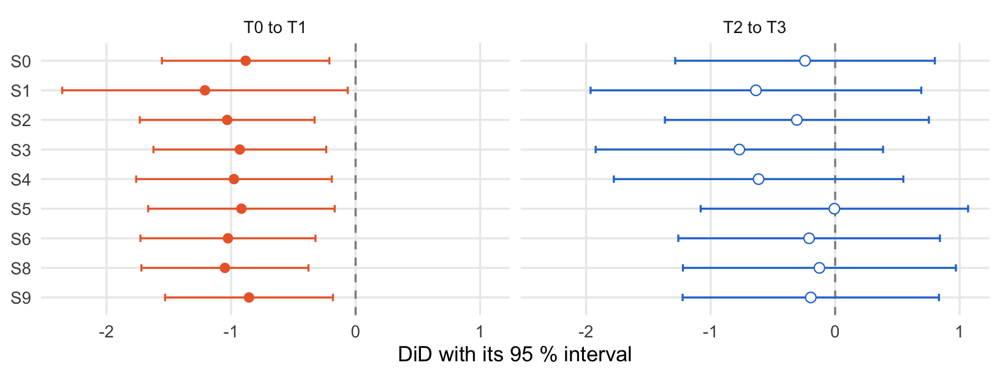
nal_sets |>
unnest(estimates) |>
filter(label %in% c("DiD_T01", "DiD_T23")) |>
select(set, admissible, label, est, pvalue) |>
pivot_wider(names_from = label, values_from = c(est, pvalue),
names_glue = "{label}_{.value}") |>
select(set, admissible, starts_with("DiD_T01"), starts_with("DiD_T23")) |>
mutate(across(where(is.double), \(x) round(x, 3)))| set | admissible | DiD_T01_est | DiD_T01_pvalue | DiD_T23_est | DiD_T23_pvalue |
|---|---|---|---|---|---|
| S0 | TRUE | -0.883 | 0.010 | -0.242 | 0.649 |
| S1 | FALSE | -1.210 | 0.039 | -0.636 | 0.348 |
| S2 | TRUE | -1.032 | 0.004 | -0.308 | 0.570 |
| S3 | TRUE | -0.930 | 0.009 | -0.770 | 0.191 |
| S4 | TRUE | -0.977 | 0.015 | -0.615 | 0.300 |
| S5 | TRUE | -0.917 | 0.016 | -0.006 | 0.991 |
| S6 | TRUE | -1.025 | 0.004 | -0.209 | 0.696 |
| S8 | FALSE | -1.050 | 0.002 | -0.127 | 0.821 |
| S9 | TRUE | -0.856 | 0.013 | -0.196 | 0.709 |
The effect of the first window is significant in the expected direction in 0 of the nine sets, the mirrored effect of the second window in 0. In 2 of the sets the solution is not possible (a negative variance or covariances that are not positive definite, on fewer persons than S0); their estimates are read with caution.
Next → Step 9, what the steps show together.
What follows · Step 9
Step 9 · What follows
What does No Alienation show? The two training effects side by side, T0–T1 while the experimental group trains and T2–T3 while the control group trains, with the correction for testing all 20 constructs at once (11.7) and the nine sample sets of Step 8:
nal_verdict <- verdict_table("NoAlienation", nal_est, nal_p, nal_d, nal_sets)
show_verdict(nal_verdict)| window | DiD | d | size | p | p corrected | sets with the effect | range in sets |
|---|---|---|---|---|---|---|---|
| T0–T1 | -0.88 | -0.30 | small | 0.010 | 0.034 | 0 of 9 | -1.21 to -.86 |
| T2–T3 | -0.24 | -0.08 | negligible | 0.649 | 0.811 | 0 of 9 | -.77 to -.01 |
No Alienation moves against the training in the first round, and no significant effect when the control group trains. While the experimental group trains, its latent mean changes by -.65 points, that of the control group by .23: a difference of -.88 against the training (d = -.30, small; p = .010). It holds after the correction for testing 20 constructs (adjusted p = .034); across the sample sets the estimate ranges from -1.21 to -.86. When the control group trains, its latent mean changes by -.00 points, that of the experimental group by -.24; the difference is not significant (DiD = -.24, p = .649). The two rounds do not detectably differ (replication test, p = .068). The control group also changes before its own training (T1 to T2: -.55, p = .044), but the restricted model of Step 7, with level means outside the training, still holds (p = .116).
What goes on to Chapter 20? The model and the two effects:
nal_result <- tibble(construct = "NoAlienation",
covariates = TRUE,
direct = list(character()),
fit = list(nal_fit))
nal_result |>
transmute(construct, covariates, direct = map_chr(direct, str_flatten, "; "))| construct | covariates | direct |
|---|---|---|
| NoAlienation | TRUE |
No Alienation enters the synthesis of Chapter 20 with both effects, adjusted for age and sex.
No Isolation
Its path through the steps. One row per step below; the label marks the data of each step:
| Step | Data | Question | Result | Next |
|---|---|---|---|---|
| 1 | both groups | What is added to Chapter 7? | covariates, contrasts | Chapter 7’s model |
| 2 | both groups | Chapter 7’s model possible, as there? | yes, the same χ² | covariates |
| 3 | both groups | Covariates only through the factors? | yes | latent means |
| 4 | both groups | Latent means | – | effects |
| 5 | both groups | Training effects | T0–T1: n.s.; T2–T3: n.s. | drift |
| 6 | control | Drift while waiting? | yes, T0 to T1 | robustness |
| 7 | both groups | Level outside the training? | yes | sample sets |
| 8 | both groups | Effects on the sample sets? | T0–T1: 0 of 9; T2–T3: 0 of 9 | what follows |
| 9 | What does it show? | no significant effect | Chapter 20 |
The model · Steps 1 to 3
Step 1 · The model both groups
Which model does Chapter 7 hand on? Its status there: the estimates the stop rule set at 0, the items freed, and the autocorrelations:
nis_status <- invariance$adopted |>
filter(construct == "NoIsolation")
nis_status |>
transmute(status, set_to_0 = map_chr(set_to_0, \(x) str_flatten(x, "; ")),
freed = map_chr(freed, \(x) str_flatten(x, "; ")))| status | set_to_0 | freed |
|---|---|---|
| as specified |
What does the model look like? In the figure, the factors of the four waves (circles), the items (boxes) and their loadings, the links of the factors (above) and of each item with itself at the next wave (below); in green, the estimates the stop rule of Chapter 7 set at 0 in one group:
plot_model("NoIsolation",
fixed = str_remove(nis_status$set_to_0[[1]], "^[A-Za-z]+: "))
What does the complete model look like? Its syntax, as did_syntax() writes it: first the final model of Chapter 7, part by part, then what this chapter adds, the covariates on the factor of every wave and the contrasts. A label shared by several lines (such as l1, t1 or a1) holds those estimates equal; c(..., ...) gives the control and the experimental group one each:
show_model(did_syntax(nis_status))# Chapter 7: one factor per wave; both items load 1
F_T0 =~ 1*NoIsolation1_T0 +
1*NoIsolation2_T0
F_T1 =~ 1*NoIsolation1_T1 +
1*NoIsolation2_T1
F_T2 =~ 1*NoIsolation1_T2 +
1*NoIsolation2_T2
F_T3 =~ 1*NoIsolation1_T3 +
1*NoIsolation2_T3
# Chapter 7: effects coding: the loadings average 1, the intercepts sum to 0
t1 + t2 == 0
# Chapter 7: the latent means, free in each group
F_T0 ~ c(m_con_T0, m_exp_T0)*1
F_T1 ~ c(m_con_T1, m_exp_T1)*1
F_T2 ~ c(m_con_T2, m_exp_T2)*1
F_T3 ~ c(m_con_T3, m_exp_T3)*1
# Chapter 7: the intercepts
NoIsolation1_T0 ~ t1*1
NoIsolation2_T0 ~ t2*1
NoIsolation1_T1 ~ t1*1
NoIsolation2_T1 ~ t2*1
NoIsolation1_T2 ~ t1*1
NoIsolation2_T2 ~ t2*1
NoIsolation1_T3 ~ t1*1
NoIsolation2_T3 ~ t2*1
# Chapter 7: the factors correlate over the waves
F_T0 ~~ F_T1
F_T0 ~~ F_T2
F_T0 ~~ F_T3
F_T1 ~~ F_T2
F_T1 ~~ F_T3
F_T2 ~~ F_T3
# Chapter 7: each item's residual with itself over the waves
NoIsolation1_T0 ~~ NoIsolation1_T1
NoIsolation1_T0 ~~ NoIsolation1_T2
NoIsolation1_T0 ~~ NoIsolation1_T3
NoIsolation1_T1 ~~ NoIsolation1_T2
NoIsolation1_T1 ~~ NoIsolation1_T3
NoIsolation1_T2 ~~ NoIsolation1_T3
NoIsolation2_T0 ~~ NoIsolation2_T1
NoIsolation2_T0 ~~ NoIsolation2_T2
NoIsolation2_T0 ~~ NoIsolation2_T3
NoIsolation2_T1 ~~ NoIsolation2_T2
NoIsolation2_T1 ~~ NoIsolation2_T3
NoIsolation2_T2 ~~ NoIsolation2_T3
# added here: age and sex on the factor of every wave
F_T0 ~ age_c + female_c
F_T1 ~ age_c + female_c
F_T2 ~ age_c + female_c
F_T3 ~ age_c + female_c
# added here: every contrast as a parameter
EG_T01 := (m_exp_T1 - m_exp_T0)
CG_T01 := (m_con_T1 - m_con_T0)
DiD_T01 := (m_exp_T1 - m_exp_T0) - (m_con_T1 - m_con_T0)
EG_T02 := (m_exp_T2 - m_exp_T0)
CG_T02 := (m_con_T2 - m_con_T0)
DiD_T02 := (m_exp_T2 - m_exp_T0) - (m_con_T2 - m_con_T0)
EG_T03 := (m_exp_T3 - m_exp_T0)
CG_T03 := (m_con_T3 - m_con_T0)
DiD_T03 := (m_exp_T3 - m_exp_T0) - (m_con_T3 - m_con_T0)
EG_T12 := (m_exp_T2 - m_exp_T1)
CG_T12 := (m_con_T2 - m_con_T1)
DiD_T12 := (m_exp_T2 - m_exp_T1) - (m_con_T2 - m_con_T1)
EG_T13 := (m_exp_T3 - m_exp_T1)
CG_T13 := (m_con_T3 - m_con_T1)
DiD_T13 := (m_exp_T3 - m_exp_T1) - (m_con_T3 - m_con_T1)
EG_T23 := (m_exp_T3 - m_exp_T2)
CG_T23 := (m_con_T3 - m_con_T2)
DiD_T23 := (m_exp_T3 - m_exp_T2) - (m_con_T3 - m_con_T2)
Replication_test := (m_exp_T1 - m_exp_T0) - (m_con_T1 - m_con_T0) + (m_exp_T3 - m_exp_T2) - (m_con_T3 - m_con_T2)Next → Step 2, the model of Chapter 7 again, without the covariates.
Step 2 · The model of Chapter 7 both groups
What is fitted? The model of Chapter 7 with the contrasts, without the covariates:
nis_base <- df_wide |>
sem(model = did_syntax(nis_status, covariates = FALSE), data = _,
group = "condition", estimator = "MLR", missing = "fiml")Does it pass the checks, and is it the model of Chapter 7? The checks of Chapter 7, and its χ² next to that of Chapter 7, Step 8:
nis_base_checks <- model_checks(nis_base)
nis_base_checks| check | what | value | criterion | holds |
|---|---|---|---|---|
| 1 estimation | converged | yes | yes | ✓ |
| 2 variances | smallest residual variance: item 2 at T1 (Control) | 1.469 | above 0 | ✓ |
| 3 correlations | largest correlation: item 2, T1 with T3 (Experimental) | .898 | within ±1 | ✓ |
| 4 residuals | smallest eigenvalue of the residual covariances | .100 | above 0 | ✓ |
| 5 factors | smallest eigenvalue of the factor covariances | .837 | above 0 | ✓ |
| 6 standard errors | estimated for every free parameter | yes | yes | ✓ |
| 7 fit | CFI | .995 | reported | – |
| 8 fit | RMSEA [90 % interval] | .040 [.000, .075] | reported | – |
| 9 fit | SRMR | .035 | reported | – |
| 10 strain | largest modification index: item 2 with item 1 at T1 (Experimental) | 4.7 | reported | – |
| 11 estimates | smallest standardized loading: item 1 at T3 (Experimental) | .70 | reported | – |
nis_chapter7 <- invariance$steps |>
filter(construct == "NoIsolation", part == "both groups",
level == "intercepts across groups")
tibble(model = c("here", "Chapter 7"),
chisq = c(fitMeasures(nis_base, "chisq.scaled"), nis_chapter7$chisq),
df = c(fitMeasures(nis_base, "df"), nis_chapter7$df)) |>
mutate(chisq = round(chisq, 3))| model | chisq | df |
|---|---|---|
| here | 28.398 | 19 |
| Chapter 7 | 28.398 | 19 |
Checks 1 to 6 hold, and the χ² is that of Chapter 7 (28.398): the model is the one Chapter 7 settled on, and the contrasts add no constraint.
Next → Step 3, the same model with the covariates.
Step 3 · The covariates both groups
What is fitted? The model of Step 1, with age and sex on the factors, and the comparison model, with a direct effect of each on every item at every wave and no path to the factors:
nis_covariates <- df_wide |>
sem(model = did_syntax(nis_status), data = _, group = "condition",
estimator = "MLR", missing = "fiml.x")
nis_everywhere <- df_wide |>
sem(model = direct_everywhere(nis_status), data = _, group = "condition",
estimator = "MLR", missing = "fiml.x")What does the comparison model hold? The model of Chapter 7 from Step 1, and in place of the paths to the factors a direct effect of age and sex on every item at every wave; it needs no contrasts. These are its lines beyond Chapter 7:
show_model(direct_everywhere(nis_status), added_only = TRUE)# added here: age or sex directly on single items
NoIsolation1_T0 ~ age_c + female_c
NoIsolation2_T0 ~ age_c + female_c
NoIsolation1_T1 ~ age_c + female_c
NoIsolation2_T1 ~ age_c + female_c
NoIsolation1_T2 ~ age_c + female_c
NoIsolation2_T2 ~ age_c + female_c
NoIsolation1_T3 ~ age_c + female_c
NoIsolation2_T3 ~ age_c + female_cDoes the model with the covariates pass the checks?
nis_covariates_checks <- model_checks(nis_covariates)
nis_covariates_checks| check | what | value | criterion | holds |
|---|---|---|---|---|
| 1 estimation | converged | yes | yes | ✓ |
| 2 variances | .090 | above 0 | ✓ | |
| 3 correlations | largest correlation: item 2, T1 with T3 (Experimental) | .864 | within ±1 | ✓ |
| 4 residuals | smallest eigenvalue of the residual covariances | .090 | above 0 | ✓ |
| 5 factors | smallest eigenvalue of the factor covariances | .901 | above 0 | ✓ |
| 6 standard errors | estimated for every free parameter | yes | yes | ✓ |
| 7 fit | CFI | .994 | reported | – |
| 8 fit | RMSEA [90 % interval] | .031 [.000, .060] | reported | – |
| 9 fit | SRMR | .034 | reported | – |
| 10 strain | largest modification index: item 2 with item 1 at T1 (Experimental) | 4.7 | reported | – |
| 11 estimates | smallest standardized loading: item 1 at T3 (Experimental) | .70 | reported | – |
Checks 1 to 6 hold. Its CFI, .994, stands beside .995 in Step 2, for description only: the two models do not hold the same variables. Do age and sex act only through the factors? The model of Step 1 against the comparison model:
nis_step <- covariate_step(nis_covariates, nis_everywhere)
show_step(nis_step)| model | df | CFI | RMSEA | ΔCFI | ΔRMSEA | p | Chen |
|---|---|---|---|---|---|---|---|
| direct effects on every item | 19 | 0.993 | 0.047 | ||||
| only through the factors | 35 | 0.994 | 0.031 | 0.001 | -0.016 | 0.586 | ✓ |
They do, under Chen’s cutoffs (ΔCFI = .001, ΔRMSEA = -.016; χ² test: p = .586): the covariates enter as specified.
nis_fit <- nis_covariates # the model of Steps 4 to 8Next → Step 4, the latent means of this model.
The effects · Steps 4 to 6
Step 4 · Latent means both groups
Where does each group stand at each wave? The eight latent means with their 95 % confidence intervals, at the sample’s average age and share of women:
nis_means <- parameterEstimates(nis_fit) |>
filter(op == "~1", str_starts(lhs, "F_")) |>
select(label, est, se, ci.lower, ci.upper)
# the contrasts between them, for Steps 4 to 6
nis_contrasts <- contrasts_of(nis_fit, c(
"EG_T01", "CG_T01", "DiD_T01", "EG_T23", "CG_T23", "DiD_T23",
"Replication_test", "CG_T02", "CG_T12"))
nis_means |>
mutate(across(where(is.double), \(x) round(x, 2)))| label | est | se | ci.lower | ci.upper |
|---|---|---|---|---|
| m_con_T0 | 2.96 | 0.20 | 2.56 | 3.36 |
| m_con_T1 | 3.41 | 0.22 | 2.98 | 3.84 |
| m_con_T2 | 3.33 | 0.22 | 2.89 | 3.76 |
| m_con_T3 | 3.56 | 0.25 | 3.07 | 4.05 |
| m_exp_T0 | 3.44 | 0.23 | 3.00 | 3.88 |
| m_exp_T1 | 3.46 | 0.23 | 3.01 | 3.91 |
| m_exp_T2 | 3.37 | 0.25 | 2.88 | 3.85 |
| m_exp_T3 | 3.57 | 0.26 | 3.06 | 4.09 |
plot_latent_means(nis_fit)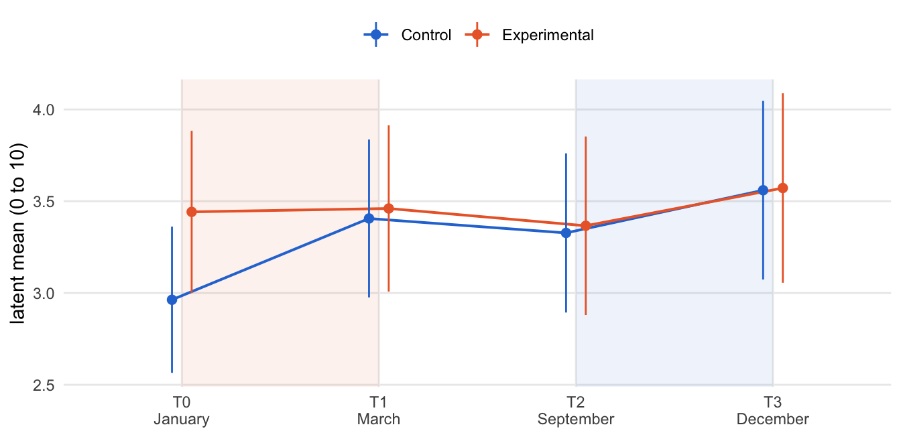
In January the experimental group lies at 3.44, the control group at 2.96. While the experimental group trains (T0 to T1), it changes by .02 and the control group by .44; while the control group trains (T2 to T3), it changes by .23 and the experimental group by .21.
Next → Step 5, the difference of these changes: the training effects.
Step 5 · The training effects both groups
How much more does the trained group change? The change of each group in the two training windows, and their difference, as a table and as a figure:
nis_contrasts |>
filter(label %in% c("EG_T01", "CG_T01", "DiD_T01",
"EG_T23", "CG_T23", "DiD_T23")) |>
mutate(across(where(is.double), \(x) round(x, 3)))| label | est | se | pvalue | ci.lower | ci.upper |
|---|---|---|---|---|---|
| EG_T01 | 0.018 | 0.231 | 0.936 | -0.435 | 0.471 |
| CG_T01 | 0.443 | 0.215 | 0.039 | 0.022 | 0.864 |
| DiD_T01 | -0.425 | 0.316 | 0.179 | -1.044 | 0.195 |
| EG_T23 | 0.206 | 0.274 | 0.454 | -0.332 | 0.744 |
| CG_T23 | 0.233 | 0.253 | 0.358 | -0.264 | 0.729 |
| DiD_T23 | -0.027 | 0.373 | 0.942 | -0.759 | 0.705 |
plot_did(nis_fit)While the experimental group trains, DiD = -.42 (p = .179), not significant. While the control group trains, DiD = -.03 (p = .942), not significant.
How large are the effects? The latent d, with the latent standard deviation at T0 pooled over the two groups:
nis_sd_T0 <- pooled_sd_T0(nis_fit)
nis_contrasts |>
filter(label %in% c("DiD_T01", "DiD_T23")) |>
transmute(label, DiD = est, d = est / nis_sd_T0, size = cohen(d)) |>
mutate(across(where(is.double), \(x) round(x, 2)))| label | DiD | d | size |
|---|---|---|---|
| DiD_T01 | -0.42 | -0.16 | negligible |
| DiD_T23 | -0.03 | -0.01 | negligible |
The pooled latent SD at T0 is 2.69; in its units the first effect is d = -.16, negligible, and the second d = -.01, negligible. Do the two training effects cancel out? The replication test, DiD (T0 to T1) + DiD (T2 to T3):
nis_contrasts |>
filter(label == "Replication_test") |>
mutate(across(where(is.double), \(x) round(x, 3)))| label | est | se | pvalue | ci.lower | ci.upper |
|---|---|---|---|---|---|
| Replication_test | -0.452 | 0.458 | 0.324 | -1.349 | 0.446 |
The two effects do not detectably differ: their sum is -.45 (p = .324).
Next → Step 6, how the control group changes while it waits.
Step 6 · Drift of the control group control
Does the control group change while it waits? Its change from T0 to T1, T0 to T2 and T1 to T2:
nis_contrasts |>
filter(label %in% c("CG_T01", "CG_T02", "CG_T12")) |>
mutate(across(where(is.double), \(x) round(x, 3)))| label | est | se | pvalue | ci.lower | ci.upper |
|---|---|---|---|---|---|
| CG_T01 | 0.443 | 0.215 | 0.039 | 0.022 | 0.864 |
| CG_T02 | 0.364 | 0.234 | 0.120 | -0.095 | 0.823 |
| CG_T12 | -0.079 | 0.245 | 0.748 | -0.559 | 0.402 |
The control group changes significantly from T0 to T1 before its own training; the change from T0 to T1, which the first DiD subtracts, is .44 (p = .039).
Next → Step 7, whether the latent means stay level outside the training.
Robustness · Steps 7 and 8
Step 7 · The restricted model both groups
Do the latent means stay level outside the training? The model of Steps 4 to 6 against the same model with the four equality constraints, from the script; its free model is the model of Steps 4 to 6, with the same χ²:
nis_restricted <- restricted |> filter(construct == "NoIsolation")
nis_restricted |>
transmute(`χ² free` = chisq_free, `χ² restricted` = chisq_restricted,
`Δχ²` = delta_chisq, Δdf = delta_df, p, admissible) |>
mutate(across(where(is.double), \(x) round(x, 3)))| χ² free | χ² restricted | Δχ² | Δdf | p | admissible |
|---|---|---|---|---|---|
| 46.241 | 52.573 | 6.45 | 4 | 0.168 | TRUE |
The four constraints cost Δχ²(4) = 6.45 (p = .168), and the data do not reject them: the latent means stay level outside the training.
Next → Step 8, the two effects on the sample sets.
Step 8 · The sample sets both groups
Do the effects hold on every sample set? The two training effects on the nine sample sets, from the script, as a figure and as a table; S0 is the model of Steps 4 to 6:
nis_sets <- latent_sets |> filter(construct == "NoIsolation")
plot_sets(nis_sets)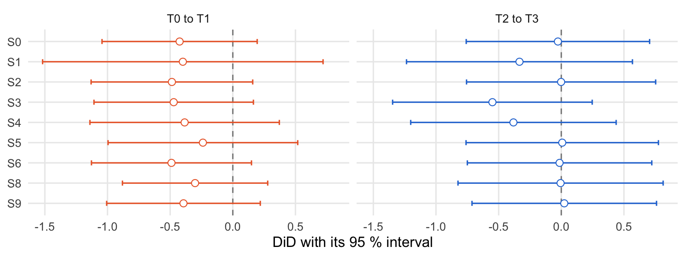
nis_sets |>
unnest(estimates) |>
filter(label %in% c("DiD_T01", "DiD_T23")) |>
select(set, admissible, label, est, pvalue) |>
pivot_wider(names_from = label, values_from = c(est, pvalue),
names_glue = "{label}_{.value}") |>
select(set, admissible, starts_with("DiD_T01"), starts_with("DiD_T23")) |>
mutate(across(where(is.double), \(x) round(x, 3)))| set | admissible | DiD_T01_est | DiD_T01_pvalue | DiD_T23_est | DiD_T23_pvalue |
|---|---|---|---|---|---|
| S0 | TRUE | -0.425 | 0.179 | -0.027 | 0.942 |
| S1 | FALSE | -0.399 | 0.485 | -0.334 | 0.468 |
| S2 | TRUE | -0.486 | 0.140 | -0.002 | 0.997 |
| S3 | FALSE | -0.472 | 0.146 | -0.550 | 0.176 |
| S4 | FALSE | -0.384 | 0.319 | -0.382 | 0.361 |
| S5 | FALSE | -0.239 | 0.537 | 0.007 | 0.985 |
| S6 | TRUE | -0.489 | 0.133 | -0.014 | 0.971 |
| S8 | FALSE | -0.301 | 0.309 | -0.006 | 0.989 |
| S9 | FALSE | -0.394 | 0.208 | 0.024 | 0.950 |
The effect of the first window is significant in the expected direction in 0 of the nine sets, the mirrored effect of the second window in 0. In 6 of the sets the solution is not possible (a negative variance or covariances that are not positive definite, on fewer persons than S0); their estimates are read with caution.
Next → Step 9, what the steps show together.
What follows · Step 9
Step 9 · What follows
What does No Isolation show? The two training effects side by side, T0–T1 while the experimental group trains and T2–T3 while the control group trains, with the correction for testing all 20 constructs at once (11.7) and the nine sample sets of Step 8:
nis_verdict <- verdict_table("NoIsolation", nis_est, nis_p, nis_d, nis_sets)
show_verdict(nis_verdict)| window | DiD | d | size | p | p corrected | sets with the effect | range in sets |
|---|---|---|---|---|---|---|---|
| T0–T1 | -0.42 | -0.16 | negligible | 0.179 | 0.298 | 0 of 9 | -.49 to -.24 |
| T2–T3 | -0.03 | -0.01 | negligible | 0.942 | 0.958 | 0 of 9 | -.55 to .02 |
No Isolation shows no significant training effect in either round. While the experimental group trains, its latent mean changes by .02 points, that of the control group by .44; the difference is not significant (DiD = -.42, p = .179). When the control group trains, its latent mean changes by .23 points, that of the experimental group by .21; the difference is not significant (DiD = -.03, p = .942). The control group also changes before its own training (T0 to T1: .44, p = .039), but the restricted model of Step 7, with level means outside the training, still holds (p = .168).
What goes on to Chapter 20? The model and the two effects:
nis_result <- tibble(construct = "NoIsolation",
covariates = TRUE,
direct = list(character()),
fit = list(nis_fit))
nis_result |>
transmute(construct, covariates, direct = map_chr(direct, str_flatten, "; "))| construct | covariates | direct |
|---|---|---|
| NoIsolation | TRUE |
No Isolation enters the synthesis of Chapter 20 with both effects, adjusted for age and sex.
11.5 Cognitive complexity (H2)
Which constructs? The four constructs of the second hypothesis that Chapter 7 carries on; Women Attitude stops there.
Rogerian Schema
Its path through the steps. One row per step below; the label marks the data of each step:
| Step | Data | Question | Result | Next |
|---|---|---|---|---|
| 1 | both groups | What is added to Chapter 7? | covariates, contrasts | Chapter 7’s model |
| 2 | both groups | Chapter 7’s model possible, as there? | yes, the same χ² | covariates |
| 3 | both groups | Covariates only through the factors? | yes | latent means |
| 4 | both groups | Latent means | – | effects |
| 5 | both groups | Training effects | T0–T1: positive, p < .05; T2–T3: n.s. | drift |
| 6 | control | Drift while waiting? | yes, T0 to T2 | robustness |
| 7 | both groups | Level outside the training? | no | sample sets |
| 8 | both groups | Effects on the sample sets? | T0–T1: 8 of 9; T2–T3: 0 of 9 | what follows |
| 9 | What does it show? | T0–T1: effect, also corrected | Chapter 20 |
The model · Steps 1 to 3
Step 1 · The model both groups
Which model does Chapter 7 hand on? Its status there: the estimates the stop rule set at 0, the items freed, and the autocorrelations:
rog_status <- invariance$adopted |>
filter(construct == "Rogerian")
rog_status |>
transmute(status, set_to_0 = map_chr(set_to_0, \(x) str_flatten(x, "; ")),
freed = map_chr(freed, \(x) str_flatten(x, "; ")))| status | set_to_0 | freed |
|---|---|---|
| adjusted (A) | Experimental: Rogerian3_T3 ~~ Rogerian3_T3; Experimental: Rogerian3_T0 ~~ Rogerian3_T3; Experimental: Rogerian3_T1 ~~ Rogerian3_T3; Experimental: Rogerian3_T2 ~~ Rogerian3_T3 |
What does the model look like? In the figure, the factors of the four waves (circles), the items (boxes) and their loadings, the links of the factors (above) and of each item with itself at the next wave (below); in green, the estimates the stop rule of Chapter 7 set at 0 in one group:
plot_model("Rogerian",
fixed = str_remove(rog_status$set_to_0[[1]], "^[A-Za-z]+: "))
What does the complete model look like? Its syntax, as did_syntax() writes it: first the final model of Chapter 7, part by part, then what this chapter adds, the covariates on the factor of every wave and the contrasts. A label shared by several lines (such as l1, t1 or a1) holds those estimates equal; c(..., ...) gives the control and the experimental group one each:
show_model(did_syntax(rog_status))# Chapter 7: one factor per wave; NA* frees the first loading
F_T0 =~ NA*Rogerian1_T0 +
l1*Rogerian1_T0 +
l2*Rogerian3_T0 +
l3*Rogerian4_T0 +
l4*Rogerian5_T0
F_T1 =~ NA*Rogerian1_T1 +
l1*Rogerian1_T1 +
l2*Rogerian3_T1 +
l3*Rogerian4_T1 +
l4*Rogerian5_T1
F_T2 =~ NA*Rogerian1_T2 +
l1*Rogerian1_T2 +
l2*Rogerian3_T2 +
l3*Rogerian4_T2 +
l4*Rogerian5_T2
F_T3 =~ NA*Rogerian1_T3 +
l1*Rogerian1_T3 +
l2*Rogerian3_T3 +
l3*Rogerian4_T3 +
l4*Rogerian5_T3
# Chapter 7: effects coding: the loadings average 1, the intercepts sum to 0
l1 + l2 + l3 + l4 == 4
t1 + t2 + t3 + t4 == 0
# Chapter 7: the latent means, free in each group
F_T0 ~ c(m_con_T0, m_exp_T0)*1
F_T1 ~ c(m_con_T1, m_exp_T1)*1
F_T2 ~ c(m_con_T2, m_exp_T2)*1
F_T3 ~ c(m_con_T3, m_exp_T3)*1
# Chapter 7: the intercepts
Rogerian1_T0 ~ t1*1
Rogerian3_T0 ~ t2*1
Rogerian4_T0 ~ t3*1
Rogerian5_T0 ~ t4*1
Rogerian1_T1 ~ t1*1
Rogerian3_T1 ~ t2*1
Rogerian4_T1 ~ t3*1
Rogerian5_T1 ~ t4*1
Rogerian1_T2 ~ t1*1
Rogerian3_T2 ~ t2*1
Rogerian4_T2 ~ t3*1
Rogerian5_T2 ~ t4*1
Rogerian1_T3 ~ t1*1
Rogerian3_T3 ~ t2*1
Rogerian4_T3 ~ t3*1
Rogerian5_T3 ~ t4*1
# Chapter 7: the factors correlate over the waves
F_T0 ~~ F_T1
F_T0 ~~ F_T2
F_T0 ~~ F_T3
F_T1 ~~ F_T2
F_T1 ~~ F_T3
F_T2 ~~ F_T3
# Chapter 7: each item's residual with itself over the waves
Rogerian1_T0 ~~ Rogerian1_T1
Rogerian1_T0 ~~ Rogerian1_T2
Rogerian1_T0 ~~ Rogerian1_T3
Rogerian1_T1 ~~ Rogerian1_T2
Rogerian1_T1 ~~ Rogerian1_T3
Rogerian1_T2 ~~ Rogerian1_T3
Rogerian3_T0 ~~ Rogerian3_T1
Rogerian3_T0 ~~ Rogerian3_T2
Rogerian3_T0 ~~ Rogerian3_T3
Rogerian3_T1 ~~ Rogerian3_T2
Rogerian3_T1 ~~ Rogerian3_T3
Rogerian3_T2 ~~ Rogerian3_T3
Rogerian4_T0 ~~ Rogerian4_T1
Rogerian4_T0 ~~ Rogerian4_T2
Rogerian4_T0 ~~ Rogerian4_T3
Rogerian4_T1 ~~ Rogerian4_T2
Rogerian4_T1 ~~ Rogerian4_T3
Rogerian4_T2 ~~ Rogerian4_T3
Rogerian5_T0 ~~ Rogerian5_T1
Rogerian5_T0 ~~ Rogerian5_T2
Rogerian5_T0 ~~ Rogerian5_T3
Rogerian5_T1 ~~ Rogerian5_T2
Rogerian5_T1 ~~ Rogerian5_T3
Rogerian5_T2 ~~ Rogerian5_T3
# Chapter 7: set at 0 in one group (adjustment A)
Rogerian3_T3 ~~ c(NA, 0)*Rogerian3_T3
Rogerian3_T0 ~~ c(NA, 0)*Rogerian3_T3
Rogerian3_T1 ~~ c(NA, 0)*Rogerian3_T3
Rogerian3_T2 ~~ c(NA, 0)*Rogerian3_T3
# added here: age and sex on the factor of every wave
F_T0 ~ age_c + female_c
F_T1 ~ age_c + female_c
F_T2 ~ age_c + female_c
F_T3 ~ age_c + female_c
# added here: every contrast as a parameter
EG_T01 := (m_exp_T1 - m_exp_T0)
CG_T01 := (m_con_T1 - m_con_T0)
DiD_T01 := (m_exp_T1 - m_exp_T0) - (m_con_T1 - m_con_T0)
EG_T02 := (m_exp_T2 - m_exp_T0)
CG_T02 := (m_con_T2 - m_con_T0)
DiD_T02 := (m_exp_T2 - m_exp_T0) - (m_con_T2 - m_con_T0)
EG_T03 := (m_exp_T3 - m_exp_T0)
CG_T03 := (m_con_T3 - m_con_T0)
DiD_T03 := (m_exp_T3 - m_exp_T0) - (m_con_T3 - m_con_T0)
EG_T12 := (m_exp_T2 - m_exp_T1)
CG_T12 := (m_con_T2 - m_con_T1)
DiD_T12 := (m_exp_T2 - m_exp_T1) - (m_con_T2 - m_con_T1)
EG_T13 := (m_exp_T3 - m_exp_T1)
CG_T13 := (m_con_T3 - m_con_T1)
DiD_T13 := (m_exp_T3 - m_exp_T1) - (m_con_T3 - m_con_T1)
EG_T23 := (m_exp_T3 - m_exp_T2)
CG_T23 := (m_con_T3 - m_con_T2)
DiD_T23 := (m_exp_T3 - m_exp_T2) - (m_con_T3 - m_con_T2)
Replication_test := (m_exp_T1 - m_exp_T0) - (m_con_T1 - m_con_T0) + (m_exp_T3 - m_exp_T2) - (m_con_T3 - m_con_T2)Next → Step 2, the model of Chapter 7 again, without the covariates.
Step 2 · The model of Chapter 7 both groups
What is fitted? The model of Chapter 7 with the contrasts, without the covariates:
rog_base <- df_wide |>
sem(model = did_syntax(rog_status, covariates = FALSE), data = _,
group = "condition", estimator = "MLR", missing = "fiml")Does it pass the checks, and is it the model of Chapter 7? The checks of Chapter 7, and its χ² next to that of Chapter 7, Step 8:
rog_base_checks <- model_checks(rog_base)
rog_base_checks| check | what | value | criterion | holds |
|---|---|---|---|---|
| 1 estimation | converged | yes | yes | ✓ |
| 2 variances | smallest residual variance: item 3 at T3 (Experimental) | .000 | above 0 | ✓ |
| 3 correlations | largest correlation: item 4, T2 with T3 (Experimental) | .783 | within ±1 | ✓ |
| 4 residuals | smallest eigenvalue of the residual covariances | .000 | above 0 | ✓ |
| 5 factors | smallest eigenvalue of the factor covariances | .241 | above 0 | ✓ |
| 6 standard errors | estimated for every free parameter | yes | yes | ✓ |
| 7 fit | CFI | .871 | reported | – |
| 8 fit | RMSEA [90 % interval] | .101 [.093, .110] | reported | – |
| 9 fit | SRMR | .111 | reported | – |
| 10 strain | largest modification index: item 1 with item 5 at T2 (Control) | 58.1 | reported | – |
| 11 estimates | smallest standardized loading: item 1 at T2 (Control) | .52 | reported | – |
rog_chapter7 <- invariance$steps |>
filter(construct == "Rogerian", part == "both groups",
level == "intercepts across groups")
tibble(model = c("here", "Chapter 7"),
chisq = c(fitMeasures(rog_base, "chisq.scaled"), rog_chapter7$chisq),
df = c(fitMeasures(rog_base, "df"), rog_chapter7$df)) |>
mutate(chisq = round(chisq, 3))| model | chisq | df |
|---|---|---|
| here | 488.373 | 194 |
| Chapter 7 | 488.373 | 194 |
Checks 1 to 6 hold, and the χ² is that of Chapter 7 (488.373): the model is the one Chapter 7 settled on, and the contrasts add no constraint.
Next → Step 3, the same model with the covariates.
Step 3 · The covariates both groups
What is fitted? The model of Step 1, with age and sex on the factors, and the comparison model, with a direct effect of each on every item at every wave and no path to the factors:
rog_covariates <- df_wide |>
sem(model = did_syntax(rog_status), data = _, group = "condition",
estimator = "MLR", missing = "fiml.x")
rog_everywhere <- df_wide |>
sem(model = direct_everywhere(rog_status), data = _, group = "condition",
estimator = "MLR", missing = "fiml.x")What does the comparison model hold? The model of Chapter 7 from Step 1, and in place of the paths to the factors a direct effect of age and sex on every item at every wave; it needs no contrasts. These are its lines beyond Chapter 7:
show_model(direct_everywhere(rog_status), added_only = TRUE)# added here: age or sex directly on single items
Rogerian1_T0 ~ age_c + female_c
Rogerian3_T0 ~ age_c + female_c
Rogerian4_T0 ~ age_c + female_c
Rogerian5_T0 ~ age_c + female_c
Rogerian1_T1 ~ age_c + female_c
Rogerian3_T1 ~ age_c + female_c
Rogerian4_T1 ~ age_c + female_c
Rogerian5_T1 ~ age_c + female_c
Rogerian1_T2 ~ age_c + female_c
Rogerian3_T2 ~ age_c + female_c
Rogerian4_T2 ~ age_c + female_c
Rogerian5_T2 ~ age_c + female_c
Rogerian1_T3 ~ age_c + female_c
Rogerian3_T3 ~ age_c + female_c
Rogerian4_T3 ~ age_c + female_c
Rogerian5_T3 ~ age_c + female_cDoes the model with the covariates pass the checks?
rog_covariates_checks <- model_checks(rog_covariates)
rog_covariates_checks| check | what | value | criterion | holds |
|---|---|---|---|---|
| 1 estimation | converged | yes | yes | ✓ |
| 2 variances | smallest residual variance: item 3 at T3 (Experimental) | .000 | above 0 | ✓ |
| 3 correlations | largest correlation: item 4, T2 with T3 (Experimental) | .791 | within ±1 | ✓ |
| 4 residuals | smallest eigenvalue of the residual covariances | .000 | above 0 | ✓ |
| 5 factors | smallest eigenvalue of the factor covariances | .238 | above 0 | ✓ |
| 6 standard errors | estimated for every free parameter | yes | yes | ✓ |
| 7 fit | CFI | .865 | reported | – |
| 8 fit | RMSEA [90 % interval] | .093 [.085, .101] | reported | – |
| 9 fit | SRMR | .104 | reported | – |
| 10 strain | largest modification index: item 1 with item 5 at T2 (Control) | 58.5 | reported | – |
| 11 estimates | smallest standardized loading: item 1 at T2 (Control) | .52 | reported | – |
Checks 1 to 6 hold. Its CFI, .865, stands beside .871 in Step 2, for description only: the two models do not hold the same variables. Do age and sex act only through the factors? The model of Step 1 against the comparison model:
rog_step <- covariate_step(rog_covariates, rog_everywhere)
show_step(rog_step)| model | df | CFI | RMSEA | ΔCFI | ΔRMSEA | p | Chen |
|---|---|---|---|---|---|---|---|
| direct effects on every item | 194 | 0.872 | 0.101 | ||||
| only through the factors | 242 | 0.865 | 0.093 | -0.006 | -0.008 | 0.002 | ✓ |
They do, under Chen’s cutoffs (ΔCFI = -.006, ΔRMSEA = -.008; χ² test: p = .002): the covariates enter as specified.
rog_fit <- rog_covariates # the model of Steps 4 to 8Next → Step 4, the latent means of this model.
The effects · Steps 4 to 6
Step 4 · Latent means both groups
Where does each group stand at each wave? The eight latent means with their 95 % confidence intervals, at the sample’s average age and share of women:
rog_means <- parameterEstimates(rog_fit) |>
filter(op == "~1", str_starts(lhs, "F_")) |>
select(label, est, se, ci.lower, ci.upper)
# the contrasts between them, for Steps 4 to 6
rog_contrasts <- contrasts_of(rog_fit, c(
"EG_T01", "CG_T01", "DiD_T01", "EG_T23", "CG_T23", "DiD_T23",
"Replication_test", "CG_T02", "CG_T12"))
rog_means |>
mutate(across(where(is.double), \(x) round(x, 2)))| label | est | se | ci.lower | ci.upper |
|---|---|---|---|---|
| m_con_T0 | 8.75 | 0.11 | 8.53 | 8.98 |
| m_con_T1 | 8.89 | 0.10 | 8.70 | 9.09 |
| m_con_T2 | 9.08 | 0.08 | 8.92 | 9.24 |
| m_con_T3 | 9.41 | 0.06 | 9.29 | 9.54 |
| m_exp_T0 | 8.59 | 0.10 | 8.39 | 8.79 |
| m_exp_T1 | 9.26 | 0.08 | 9.10 | 9.42 |
| m_exp_T2 | 9.04 | 0.12 | 8.81 | 9.27 |
| m_exp_T3 | 9.19 | 0.11 | 8.98 | 9.40 |
plot_latent_means(rog_fit)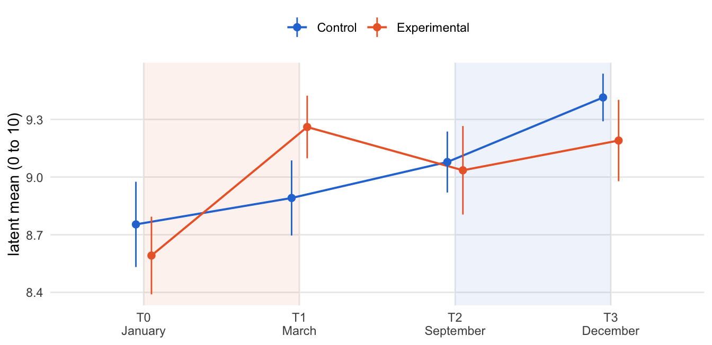
In January the experimental group lies at 8.59, the control group at 8.75. While the experimental group trains (T0 to T1), it changes by .67 and the control group by .14; while the control group trains (T2 to T3), it changes by .34 and the experimental group by .15.
Next → Step 5, the difference of these changes: the training effects.
Step 5 · The training effects both groups
How much more does the trained group change? The change of each group in the two training windows, and their difference, as a table and as a figure:
rog_contrasts |>
filter(label %in% c("EG_T01", "CG_T01", "DiD_T01",
"EG_T23", "CG_T23", "DiD_T23")) |>
mutate(across(where(is.double), \(x) round(x, 3)))| label | est | se | pvalue | ci.lower | ci.upper |
|---|---|---|---|---|---|
| EG_T01 | 0.669 | 0.097 | 0.000 | 0.479 | 0.858 |
| CG_T01 | 0.137 | 0.103 | 0.181 | -0.064 | 0.339 |
| DiD_T01 | 0.531 | 0.140 | 0.000 | 0.256 | 0.806 |
| EG_T23 | 0.155 | 0.128 | 0.227 | -0.096 | 0.406 |
| CG_T23 | 0.336 | 0.078 | 0.000 | 0.182 | 0.490 |
| DiD_T23 | -0.181 | 0.150 | 0.229 | -0.476 | 0.114 |
plot_did(rog_fit)While the experimental group trains, DiD = .53 (p < .001), a significant effect of the training. While the control group trains, DiD = -.18 (p = .229), not significant.
How large are the effects? The latent d, with the latent standard deviation at T0 pooled over the two groups:
rog_sd_T0 <- pooled_sd_T0(rog_fit)
rog_contrasts |>
filter(label %in% c("DiD_T01", "DiD_T23")) |>
transmute(label, DiD = est, d = est / rog_sd_T0, size = cohen(d)) |>
mutate(across(where(is.double), \(x) round(x, 2)))| label | DiD | d | size |
|---|---|---|---|
| DiD_T01 | 0.53 | 0.39 | small |
| DiD_T23 | -0.18 | -0.13 | negligible |
The pooled latent SD at T0 is 1.35; in its units the first effect is d = .39, small, and the second d = -.13, negligible. Do the two training effects cancel out? The replication test, DiD (T0 to T1) + DiD (T2 to T3):
rog_contrasts |>
filter(label == "Replication_test") |>
mutate(across(where(is.double), \(x) round(x, 3)))| label | est | se | pvalue | ci.lower | ci.upper |
|---|---|---|---|---|---|
| Replication_test | 0.35 | 0.2 | 0.08 | -0.042 | 0.742 |
The two effects do not detectably differ: their sum is .35 (p = .080).
Next → Step 6, how the control group changes while it waits.
Step 6 · Drift of the control group control
Does the control group change while it waits? Its change from T0 to T1, T0 to T2 and T1 to T2:
rog_contrasts |>
filter(label %in% c("CG_T01", "CG_T02", "CG_T12")) |>
mutate(across(where(is.double), \(x) round(x, 3)))| label | est | se | pvalue | ci.lower | ci.upper |
|---|---|---|---|---|---|
| CG_T01 | 0.137 | 0.103 | 0.181 | -0.064 | 0.339 |
| CG_T02 | 0.325 | 0.122 | 0.008 | 0.085 | 0.564 |
| CG_T12 | 0.187 | 0.115 | 0.104 | -0.038 | 0.412 |
The control group changes significantly from T0 to T2 before its own training; the change from T0 to T1, which the first DiD subtracts, is .14 (p = .181).
Next → Step 7, whether the latent means stay level outside the training.
Robustness · Steps 7 and 8
Step 7 · The restricted model both groups
Do the latent means stay level outside the training? The model of Steps 4 to 6 against the same model with the four equality constraints, from the script; its free model is the model of Steps 4 to 6, with the same χ²:
rog_restricted <- restricted |> filter(construct == "Rogerian")
rog_restricted |>
transmute(`χ² free` = chisq_free, `χ² restricted` = chisq_restricted,
`Δχ²` = delta_chisq, Δdf = delta_df, p, admissible) |>
mutate(across(where(is.double), \(x) round(x, 3)))| χ² free | χ² restricted | Δχ² | Δdf | p | admissible |
|---|---|---|---|---|---|
| 590.676 | 602.236 | 11.778 | 4 | 0.019 | TRUE |
The four constraints cost Δχ²(4) = 11.78 (p = .019): the data reject them, and the latent means move outside the training as well.
Next → Step 8, the two effects on the sample sets.
Step 8 · The sample sets both groups
Do the effects hold on every sample set? The two training effects on the nine sample sets, from the script, as a figure and as a table; S0 is the model of Steps 4 to 6:
rog_sets <- latent_sets |> filter(construct == "Rogerian")
plot_sets(rog_sets)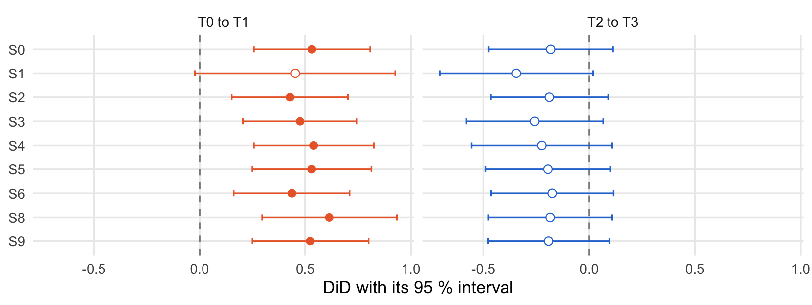
rog_sets |>
unnest(estimates) |>
filter(label %in% c("DiD_T01", "DiD_T23")) |>
select(set, admissible, label, est, pvalue) |>
pivot_wider(names_from = label, values_from = c(est, pvalue),
names_glue = "{label}_{.value}") |>
select(set, admissible, starts_with("DiD_T01"), starts_with("DiD_T23")) |>
mutate(across(where(is.double), \(x) round(x, 3)))| set | admissible | DiD_T01_est | DiD_T01_pvalue | DiD_T23_est | DiD_T23_pvalue |
|---|---|---|---|---|---|
| S0 | TRUE | 0.531 | 0.000 | -0.181 | 0.229 |
| S1 | FALSE | 0.451 | 0.062 | -0.343 | 0.063 |
| S2 | TRUE | 0.426 | 0.002 | -0.187 | 0.186 |
| S3 | TRUE | 0.474 | 0.001 | -0.257 | 0.120 |
| S4 | TRUE | 0.540 | 0.000 | -0.223 | 0.189 |
| S5 | TRUE | 0.531 | 0.000 | -0.194 | 0.199 |
| S6 | TRUE | 0.435 | 0.002 | -0.174 | 0.241 |
| S8 | TRUE | 0.614 | 0.000 | -0.183 | 0.221 |
| S9 | TRUE | 0.524 | 0.000 | -0.191 | 0.192 |
The effect of the first window is significant in the expected direction in 8 of the nine sets, the mirrored effect of the second window in 0. In 1 of the sets the solution is not possible (a negative variance or covariances that are not positive definite, on fewer persons than S0); their estimates are read with caution.
Next → Step 9, what the steps show together.
What follows · Step 9
Step 9 · What follows
What does Rogerian Schema show? The two training effects side by side, T0–T1 while the experimental group trains and T2–T3 while the control group trains, with the correction for testing all 20 constructs at once (11.7) and the nine sample sets of Step 8:
rog_verdict <- verdict_table("Rogerian", rog_est, rog_p, rog_d, rog_sets)
show_verdict(rog_verdict)| window | DiD | d | size | p | p corrected | sets with the effect | range in sets |
|---|---|---|---|---|---|---|---|
| T0–T1 | 0.53 | 0.39 | small | 0.000 | 0.003 | 8 of 9 | .43 to .61 |
| T2–T3 | -0.18 | -0.13 | negligible | 0.229 | 0.416 | 0 of 9 | -.34 to -.17 |
Rogerian Schema shows the training effect while the experimental group trains, not when the control group trains. While the experimental group trains, it gains .53 points more than the control group (d = .39, small; p < .001). It holds after the correction for testing 20 constructs (adjusted p = .003) and in 8 of 9 sample sets. When the control group trains, its latent mean changes by .34 points, that of the experimental group by .15; the difference is not significant (DiD = -.18, p = .229). The two rounds do not detectably differ (replication test, p = .080). The control group also changes before its own training (T0 to T2: .32, p = .008), and the restricted model of Step 7 is rejected (p = .019): outside the training the latent means do not stay level.
What goes on to Chapter 20? The model and the two effects:
rog_result <- tibble(construct = "Rogerian",
covariates = TRUE,
direct = list(character()),
fit = list(rog_fit))
rog_result |>
transmute(construct, covariates, direct = map_chr(direct, str_flatten, "; "))| construct | covariates | direct |
|---|---|---|
| Rogerian | TRUE |
Rogerian Schema enters the synthesis of Chapter 20 with both effects, adjusted for age and sex.
Paradox Mindset
Its path through the steps. One row per step below; the label marks the data of each step:
| Step | Data | Question | Result | Next |
|---|---|---|---|---|
| 1 | both groups | What is added to Chapter 7? | covariates, contrasts | Chapter 7’s model |
| 2 | both groups | Chapter 7’s model possible, as there? | yes, the same χ² | covariates |
| 3 | both groups | Covariates only through the factors? | yes | latent means |
| 4 | both groups | Latent means | – | effects |
| 5 | both groups | Training effects | T0–T1: positive, p < .05; T2–T3: mirrored, p < .05 | drift |
| 6 | control | Drift while waiting? | yes, T0 to T2 and T1 to T2 | robustness |
| 7 | both groups | Level outside the training? | no | sample sets |
| 8 | both groups | Effects on the sample sets? | T0–T1: 9 of 9; T2–T3: 7 of 9 | what follows |
| 9 | What does it show? | T0–T1: effect, also corrected; T2–T3: effect | Chapter 20 |
The model · Steps 1 to 3
Step 1 · The model both groups
Which model does Chapter 7 hand on? Its status there: the estimates the stop rule set at 0, the items freed, and the autocorrelations:
pm_status <- invariance$adopted |>
filter(construct == "ParadoxMindset")
pm_status |>
transmute(status, set_to_0 = map_chr(set_to_0, \(x) str_flatten(x, "; ")),
freed = map_chr(freed, \(x) str_flatten(x, "; ")))| status | set_to_0 | freed |
|---|---|---|
| as specified |
What does the model look like? In the figure, the factors of the four waves (circles), the items (boxes) and their loadings, the links of the factors (above) and of each item with itself at the next wave (below); in green, the estimates the stop rule of Chapter 7 set at 0 in one group:
plot_model("ParadoxMindset",
fixed = str_remove(pm_status$set_to_0[[1]], "^[A-Za-z]+: "))
What does the complete model look like? Its syntax, as did_syntax() writes it: first the final model of Chapter 7, part by part, then what this chapter adds, the covariates on the factor of every wave and the contrasts. A label shared by several lines (such as l1, t1 or a1) holds those estimates equal; c(..., ...) gives the control and the experimental group one each:
show_model(did_syntax(pm_status))# Chapter 7: one factor per wave; NA* frees the first loading
F_T0 =~ NA*ParadoxMindset2_T0 +
l1*ParadoxMindset2_T0 +
l2*ParadoxMindset3_T0 +
l3*ParadoxMindset4_T0 +
l4*ParadoxMindset5_T0 +
l5*ParadoxMindset6_T0 +
l6*ParadoxMindset7_T0 +
l7*ParadoxMindset8_T0 +
l8*ParadoxMindset9_T0
F_T1 =~ NA*ParadoxMindset2_T1 +
l1*ParadoxMindset2_T1 +
l2*ParadoxMindset3_T1 +
l3*ParadoxMindset4_T1 +
l4*ParadoxMindset5_T1 +
l5*ParadoxMindset6_T1 +
l6*ParadoxMindset7_T1 +
l7*ParadoxMindset8_T1 +
l8*ParadoxMindset9_T1
F_T2 =~ NA*ParadoxMindset2_T2 +
l1*ParadoxMindset2_T2 +
l2*ParadoxMindset3_T2 +
l3*ParadoxMindset4_T2 +
l4*ParadoxMindset5_T2 +
l5*ParadoxMindset6_T2 +
l6*ParadoxMindset7_T2 +
l7*ParadoxMindset8_T2 +
l8*ParadoxMindset9_T2
F_T3 =~ NA*ParadoxMindset2_T3 +
l1*ParadoxMindset2_T3 +
l2*ParadoxMindset3_T3 +
l3*ParadoxMindset4_T3 +
l4*ParadoxMindset5_T3 +
l5*ParadoxMindset6_T3 +
l6*ParadoxMindset7_T3 +
l7*ParadoxMindset8_T3 +
l8*ParadoxMindset9_T3
# Chapter 7: effects coding: the loadings average 1, the intercepts sum to 0
l1 + l2 + l3 + l4 + l5 + l6 + l7 + l8 == 8
t1 + t2 + t3 + t4 + t5 + t6 + t7 + t8 == 0
# Chapter 7: the latent means, free in each group
F_T0 ~ c(m_con_T0, m_exp_T0)*1
F_T1 ~ c(m_con_T1, m_exp_T1)*1
F_T2 ~ c(m_con_T2, m_exp_T2)*1
F_T3 ~ c(m_con_T3, m_exp_T3)*1
# Chapter 7: the intercepts
ParadoxMindset2_T0 ~ t1*1
ParadoxMindset3_T0 ~ t2*1
ParadoxMindset4_T0 ~ t3*1
ParadoxMindset5_T0 ~ t4*1
ParadoxMindset6_T0 ~ t5*1
ParadoxMindset7_T0 ~ t6*1
ParadoxMindset8_T0 ~ t7*1
ParadoxMindset9_T0 ~ t8*1
ParadoxMindset2_T1 ~ t1*1
ParadoxMindset3_T1 ~ t2*1
ParadoxMindset4_T1 ~ t3*1
ParadoxMindset5_T1 ~ t4*1
ParadoxMindset6_T1 ~ t5*1
ParadoxMindset7_T1 ~ t6*1
ParadoxMindset8_T1 ~ t7*1
ParadoxMindset9_T1 ~ t8*1
ParadoxMindset2_T2 ~ t1*1
ParadoxMindset3_T2 ~ t2*1
ParadoxMindset4_T2 ~ t3*1
ParadoxMindset5_T2 ~ t4*1
ParadoxMindset6_T2 ~ t5*1
ParadoxMindset7_T2 ~ t6*1
ParadoxMindset8_T2 ~ t7*1
ParadoxMindset9_T2 ~ t8*1
ParadoxMindset2_T3 ~ t1*1
ParadoxMindset3_T3 ~ t2*1
ParadoxMindset4_T3 ~ t3*1
ParadoxMindset5_T3 ~ t4*1
ParadoxMindset6_T3 ~ t5*1
ParadoxMindset7_T3 ~ t6*1
ParadoxMindset8_T3 ~ t7*1
ParadoxMindset9_T3 ~ t8*1
# Chapter 7: the factors correlate over the waves
F_T0 ~~ F_T1
F_T0 ~~ F_T2
F_T0 ~~ F_T3
F_T1 ~~ F_T2
F_T1 ~~ F_T3
F_T2 ~~ F_T3
# Chapter 7: the residual covariances of Chapter 6, at every wave
ParadoxMindset4_T0 ~~ ParadoxMindset5_T0
ParadoxMindset4_T1 ~~ ParadoxMindset5_T1
ParadoxMindset4_T2 ~~ ParadoxMindset5_T2
ParadoxMindset4_T3 ~~ ParadoxMindset5_T3
ParadoxMindset2_T0 ~~ ParadoxMindset7_T0
ParadoxMindset2_T1 ~~ ParadoxMindset7_T1
ParadoxMindset2_T2 ~~ ParadoxMindset7_T2
ParadoxMindset2_T3 ~~ ParadoxMindset7_T3
# Chapter 7: each item's residual with itself over the waves
ParadoxMindset2_T0 ~~ ParadoxMindset2_T1
ParadoxMindset2_T0 ~~ ParadoxMindset2_T2
ParadoxMindset2_T0 ~~ ParadoxMindset2_T3
ParadoxMindset2_T1 ~~ ParadoxMindset2_T2
ParadoxMindset2_T1 ~~ ParadoxMindset2_T3
ParadoxMindset2_T2 ~~ ParadoxMindset2_T3
ParadoxMindset3_T0 ~~ ParadoxMindset3_T1
ParadoxMindset3_T0 ~~ ParadoxMindset3_T2
ParadoxMindset3_T0 ~~ ParadoxMindset3_T3
ParadoxMindset3_T1 ~~ ParadoxMindset3_T2
ParadoxMindset3_T1 ~~ ParadoxMindset3_T3
ParadoxMindset3_T2 ~~ ParadoxMindset3_T3
ParadoxMindset4_T0 ~~ ParadoxMindset4_T1
ParadoxMindset4_T0 ~~ ParadoxMindset4_T2
ParadoxMindset4_T0 ~~ ParadoxMindset4_T3
ParadoxMindset4_T1 ~~ ParadoxMindset4_T2
ParadoxMindset4_T1 ~~ ParadoxMindset4_T3
ParadoxMindset4_T2 ~~ ParadoxMindset4_T3
ParadoxMindset5_T0 ~~ ParadoxMindset5_T1
ParadoxMindset5_T0 ~~ ParadoxMindset5_T2
ParadoxMindset5_T0 ~~ ParadoxMindset5_T3
ParadoxMindset5_T1 ~~ ParadoxMindset5_T2
ParadoxMindset5_T1 ~~ ParadoxMindset5_T3
ParadoxMindset5_T2 ~~ ParadoxMindset5_T3
ParadoxMindset6_T0 ~~ ParadoxMindset6_T1
ParadoxMindset6_T0 ~~ ParadoxMindset6_T2
ParadoxMindset6_T0 ~~ ParadoxMindset6_T3
ParadoxMindset6_T1 ~~ ParadoxMindset6_T2
ParadoxMindset6_T1 ~~ ParadoxMindset6_T3
ParadoxMindset6_T2 ~~ ParadoxMindset6_T3
ParadoxMindset7_T0 ~~ ParadoxMindset7_T1
ParadoxMindset7_T0 ~~ ParadoxMindset7_T2
ParadoxMindset7_T0 ~~ ParadoxMindset7_T3
ParadoxMindset7_T1 ~~ ParadoxMindset7_T2
ParadoxMindset7_T1 ~~ ParadoxMindset7_T3
ParadoxMindset7_T2 ~~ ParadoxMindset7_T3
ParadoxMindset8_T0 ~~ ParadoxMindset8_T1
ParadoxMindset8_T0 ~~ ParadoxMindset8_T2
ParadoxMindset8_T0 ~~ ParadoxMindset8_T3
ParadoxMindset8_T1 ~~ ParadoxMindset8_T2
ParadoxMindset8_T1 ~~ ParadoxMindset8_T3
ParadoxMindset8_T2 ~~ ParadoxMindset8_T3
ParadoxMindset9_T0 ~~ ParadoxMindset9_T1
ParadoxMindset9_T0 ~~ ParadoxMindset9_T2
ParadoxMindset9_T0 ~~ ParadoxMindset9_T3
ParadoxMindset9_T1 ~~ ParadoxMindset9_T2
ParadoxMindset9_T1 ~~ ParadoxMindset9_T3
ParadoxMindset9_T2 ~~ ParadoxMindset9_T3
# added here: age and sex on the factor of every wave
F_T0 ~ age_c + female_c
F_T1 ~ age_c + female_c
F_T2 ~ age_c + female_c
F_T3 ~ age_c + female_c
# added here: every contrast as a parameter
EG_T01 := (m_exp_T1 - m_exp_T0)
CG_T01 := (m_con_T1 - m_con_T0)
DiD_T01 := (m_exp_T1 - m_exp_T0) - (m_con_T1 - m_con_T0)
EG_T02 := (m_exp_T2 - m_exp_T0)
CG_T02 := (m_con_T2 - m_con_T0)
DiD_T02 := (m_exp_T2 - m_exp_T0) - (m_con_T2 - m_con_T0)
EG_T03 := (m_exp_T3 - m_exp_T0)
CG_T03 := (m_con_T3 - m_con_T0)
DiD_T03 := (m_exp_T3 - m_exp_T0) - (m_con_T3 - m_con_T0)
EG_T12 := (m_exp_T2 - m_exp_T1)
CG_T12 := (m_con_T2 - m_con_T1)
DiD_T12 := (m_exp_T2 - m_exp_T1) - (m_con_T2 - m_con_T1)
EG_T13 := (m_exp_T3 - m_exp_T1)
CG_T13 := (m_con_T3 - m_con_T1)
DiD_T13 := (m_exp_T3 - m_exp_T1) - (m_con_T3 - m_con_T1)
EG_T23 := (m_exp_T3 - m_exp_T2)
CG_T23 := (m_con_T3 - m_con_T2)
DiD_T23 := (m_exp_T3 - m_exp_T2) - (m_con_T3 - m_con_T2)
Replication_test := (m_exp_T1 - m_exp_T0) - (m_con_T1 - m_con_T0) + (m_exp_T3 - m_exp_T2) - (m_con_T3 - m_con_T2)Next → Step 2, the model of Chapter 7 again, without the covariates.
Step 2 · The model of Chapter 7 both groups
What is fitted? The model of Chapter 7 with the contrasts, without the covariates:
pm_base <- df_wide |>
sem(model = did_syntax(pm_status, covariates = FALSE), data = _,
group = "condition", estimator = "MLR", missing = "fiml")Does it pass the checks, and is it the model of Chapter 7? The checks of Chapter 7, and its χ² next to that of Chapter 7, Step 8:
pm_base_checks <- model_checks(pm_base)
pm_base_checks| check | what | value | criterion | holds |
|---|---|---|---|---|
| 1 estimation | converged | yes | yes | ✓ |
| 2 variances | smallest residual variance: item 8 at T3 (Experimental) | .735 | above 0 | ✓ |
| 3 correlations | largest correlation: the factors at T0 and T1 (Control) | .718 | within ±1 | ✓ |
| 4 residuals | smallest eigenvalue of the residual covariances | .577 | above 0 | ✓ |
| 5 factors | smallest eigenvalue of the factor covariances | .743 | above 0 | ✓ |
| 6 standard errors | estimated for every free parameter | yes | yes | ✓ |
| 7 fit | CFI | .838 | reported | – |
| 8 fit | RMSEA [90 % interval] | .063 [.058, .067] | reported | – |
| 9 fit | SRMR | .103 | reported | – |
| 10 strain | largest modification index: item 8 with item 9 at T3 (Experimental) | 21.5 | reported | – |
| 11 estimates | smallest standardized loading: item 2 at T0 (Experimental) | .48 | reported | – |
pm_chapter7 <- invariance$steps |>
filter(construct == "ParadoxMindset", part == "both groups",
level == "intercepts across groups")
tibble(model = c("here", "Chapter 7"),
chisq = c(fitMeasures(pm_base, "chisq.scaled"), pm_chapter7$chisq),
df = c(fitMeasures(pm_base, "df"), pm_chapter7$df)) |>
mutate(chisq = round(chisq, 3))| model | chisq | df |
|---|---|---|
| here | 1580.188 | 902 |
| Chapter 7 | 1580.188 | 902 |
Checks 1 to 6 hold, and the χ² is that of Chapter 7 (1580.188): the model is the one Chapter 7 settled on, and the contrasts add no constraint.
Next → Step 3, the same model with the covariates.
Step 3 · The covariates both groups
What is fitted? The model of Step 1, with age and sex on the factors, and the comparison model, with a direct effect of each on every item at every wave and no path to the factors:
pm_covariates <- df_wide |>
sem(model = did_syntax(pm_status), data = _, group = "condition",
estimator = "MLR", missing = "fiml.x")
pm_everywhere <- df_wide |>
sem(model = direct_everywhere(pm_status), data = _, group = "condition",
estimator = "MLR", missing = "fiml.x")What does the comparison model hold? The model of Chapter 7 from Step 1, and in place of the paths to the factors a direct effect of age and sex on every item at every wave; it needs no contrasts. These are its lines beyond Chapter 7:
show_model(direct_everywhere(pm_status), added_only = TRUE)# added here: age or sex directly on single items
ParadoxMindset2_T0 ~ age_c + female_c
ParadoxMindset3_T0 ~ age_c + female_c
ParadoxMindset4_T0 ~ age_c + female_c
ParadoxMindset5_T0 ~ age_c + female_c
ParadoxMindset6_T0 ~ age_c + female_c
ParadoxMindset7_T0 ~ age_c + female_c
ParadoxMindset8_T0 ~ age_c + female_c
ParadoxMindset9_T0 ~ age_c + female_c
ParadoxMindset2_T1 ~ age_c + female_c
ParadoxMindset3_T1 ~ age_c + female_c
ParadoxMindset4_T1 ~ age_c + female_c
ParadoxMindset5_T1 ~ age_c + female_c
ParadoxMindset6_T1 ~ age_c + female_c
ParadoxMindset7_T1 ~ age_c + female_c
ParadoxMindset8_T1 ~ age_c + female_c
ParadoxMindset9_T1 ~ age_c + female_c
ParadoxMindset2_T2 ~ age_c + female_c
ParadoxMindset3_T2 ~ age_c + female_c
ParadoxMindset4_T2 ~ age_c + female_c
ParadoxMindset5_T2 ~ age_c + female_c
ParadoxMindset6_T2 ~ age_c + female_c
ParadoxMindset7_T2 ~ age_c + female_c
ParadoxMindset8_T2 ~ age_c + female_c
ParadoxMindset9_T2 ~ age_c + female_c
ParadoxMindset2_T3 ~ age_c + female_c
ParadoxMindset3_T3 ~ age_c + female_c
ParadoxMindset4_T3 ~ age_c + female_c
ParadoxMindset5_T3 ~ age_c + female_c
ParadoxMindset6_T3 ~ age_c + female_c
ParadoxMindset7_T3 ~ age_c + female_c
ParadoxMindset8_T3 ~ age_c + female_c
ParadoxMindset9_T3 ~ age_c + female_cDoes the model with the covariates pass the checks?
pm_covariates_checks <- model_checks(pm_covariates)
pm_covariates_checks| check | what | value | criterion | holds |
|---|---|---|---|---|
| 1 estimation | converged | yes | yes | ✓ |
| 2 variances | .089 | above 0 | ✓ | |
| 3 correlations | largest correlation: the factors at T1 and T2 (Control) | .718 | within ±1 | ✓ |
| 4 residuals | smallest eigenvalue of the residual covariances | .089 | above 0 | ✓ |
| 5 factors | smallest eigenvalue of the factor covariances | .769 | above 0 | ✓ |
| 6 standard errors | estimated for every free parameter | yes | yes | ✓ |
| 7 fit | CFI | .824 | reported | – |
| 8 fit | RMSEA [90 % interval] | .062 [.058, .067] | reported | – |
| 9 fit | SRMR | .099 | reported | – |
| 10 strain | largest modification index: item 8 with item 9 at T3 (Experimental) | 21.6 | reported | – |
| 11 estimates | smallest standardized loading: item 2 at T0 (Experimental) | .48 | reported | – |
Checks 1 to 6 hold. Its CFI, .824, stands beside .838 in Step 2, for description only: the two models do not hold the same variables. Do age and sex act only through the factors? The model of Step 1 against the comparison model:
pm_step <- covariate_step(pm_covariates, pm_everywhere)
show_step(pm_step)| model | df | CFI | RMSEA | ΔCFI | ΔRMSEA | p | Chen |
|---|---|---|---|---|---|---|---|
| direct effects on every item | 902 | 0.830 | 0.065 | ||||
| only through the factors | 1014 | 0.824 | 0.062 | -0.005 | -0.003 | 0.077 | ✓ |
They do, under Chen’s cutoffs (ΔCFI = -.005, ΔRMSEA = -.003; χ² test: p = .077): the covariates enter as specified.
pm_fit <- pm_covariates # the model of Steps 4 to 8Next → Step 4, the latent means of this model.
The effects · Steps 4 to 6
Step 4 · Latent means both groups
Where does each group stand at each wave? The eight latent means with their 95 % confidence intervals, at the sample’s average age and share of women:
pm_means <- parameterEstimates(pm_fit) |>
filter(op == "~1", str_starts(lhs, "F_")) |>
select(label, est, se, ci.lower, ci.upper)
# the contrasts between them, for Steps 4 to 6
pm_contrasts <- contrasts_of(pm_fit, c(
"EG_T01", "CG_T01", "DiD_T01", "EG_T23", "CG_T23", "DiD_T23",
"Replication_test", "CG_T02", "CG_T12"))
pm_means |>
mutate(across(where(is.double), \(x) round(x, 2)))| label | est | se | ci.lower | ci.upper |
|---|---|---|---|---|
| m_con_T0 | 6.35 | 0.14 | 6.07 | 6.63 |
| m_con_T1 | 6.58 | 0.14 | 6.30 | 6.87 |
| m_con_T2 | 7.09 | 0.14 | 6.82 | 7.35 |
| m_con_T3 | 7.86 | 0.13 | 7.62 | 8.11 |
| m_exp_T0 | 6.46 | 0.14 | 6.19 | 6.72 |
| m_exp_T1 | 7.32 | 0.13 | 7.07 | 7.57 |
| m_exp_T2 | 7.42 | 0.14 | 7.14 | 7.71 |
| m_exp_T3 | 7.60 | 0.19 | 7.22 | 7.97 |
plot_latent_means(pm_fit)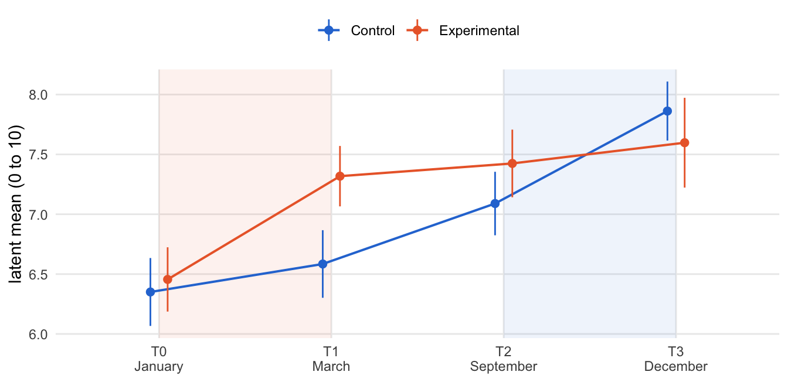
In January the experimental group lies at 6.46, the control group at 6.35. While the experimental group trains (T0 to T1), it changes by .86 and the control group by .23; while the control group trains (T2 to T3), it changes by .77 and the experimental group by .17.
Next → Step 5, the difference of these changes: the training effects.
Step 5 · The training effects both groups
How much more does the trained group change? The change of each group in the two training windows, and their difference, as a table and as a figure:
pm_contrasts |>
filter(label %in% c("EG_T01", "CG_T01", "DiD_T01",
"EG_T23", "CG_T23", "DiD_T23")) |>
mutate(across(where(is.double), \(x) round(x, 3)))| label | est | se | pvalue | ci.lower | ci.upper |
|---|---|---|---|---|---|
| EG_T01 | 0.863 | 0.142 | 0.000 | 0.584 | 1.141 |
| CG_T01 | 0.234 | 0.137 | 0.088 | -0.035 | 0.503 |
| DiD_T01 | 0.629 | 0.197 | 0.001 | 0.242 | 1.015 |
| EG_T23 | 0.173 | 0.210 | 0.409 | -0.238 | 0.585 |
| CG_T23 | 0.773 | 0.127 | 0.000 | 0.524 | 1.021 |
| DiD_T23 | -0.599 | 0.244 | 0.014 | -1.078 | -0.121 |
plot_did(pm_fit)While the experimental group trains, DiD = .63 (p = .001), a significant effect of the training. While the control group trains, DiD = -.60 (p = .014), the mirrored effect, significant.
How large are the effects? The latent d, with the latent standard deviation at T0 pooled over the two groups:
pm_sd_T0 <- pooled_sd_T0(pm_fit)
pm_contrasts |>
filter(label %in% c("DiD_T01", "DiD_T23")) |>
transmute(label, DiD = est, d = est / pm_sd_T0, size = cohen(d)) |>
mutate(across(where(is.double), \(x) round(x, 2)))| label | DiD | d | size |
|---|---|---|---|
| DiD_T01 | 0.63 | 0.35 | small |
| DiD_T23 | -0.60 | -0.34 | small |
The pooled latent SD at T0 is 1.79; in its units the first effect is d = .35, small, and the second d = -.34, small. Do the two training effects cancel out? The replication test, DiD (T0 to T1) + DiD (T2 to T3):
pm_contrasts |>
filter(label == "Replication_test") |>
mutate(across(where(is.double), \(x) round(x, 3)))| label | est | se | pvalue | ci.lower | ci.upper |
|---|---|---|---|---|---|
| Replication_test | 0.03 | 0.316 | 0.925 | -0.589 | 0.648 |
The two effects do not detectably differ: their sum is .03 (p = .925).
Next → Step 6, how the control group changes while it waits.
Step 6 · Drift of the control group control
Does the control group change while it waits? Its change from T0 to T1, T0 to T2 and T1 to T2:
pm_contrasts |>
filter(label %in% c("CG_T01", "CG_T02", "CG_T12")) |>
mutate(across(where(is.double), \(x) round(x, 3)))| label | est | se | pvalue | ci.lower | ci.upper |
|---|---|---|---|---|---|
| CG_T01 | 0.234 | 0.137 | 0.088 | -0.035 | 0.503 |
| CG_T02 | 0.739 | 0.139 | 0.000 | 0.467 | 1.011 |
| CG_T12 | 0.505 | 0.134 | 0.000 | 0.242 | 0.768 |
The control group changes significantly from T0 to T2 and T1 to T2 before its own training; the change from T0 to T1, which the first DiD subtracts, is .23 (p = .088).
Next → Step 7, whether the latent means stay level outside the training.
Robustness · Steps 7 and 8
Step 7 · The restricted model both groups
Do the latent means stay level outside the training? The model of Steps 4 to 6 against the same model with the four equality constraints, from the script; its free model is the model of Steps 4 to 6, with the same χ²:
pm_restricted <- restricted |> filter(construct == "ParadoxMindset")
pm_restricted |>
transmute(`χ² free` = chisq_free, `χ² restricted` = chisq_restricted,
`Δχ²` = delta_chisq, Δdf = delta_df, p, admissible) |>
mutate(across(where(is.double), \(x) round(x, 3)))| χ² free | χ² restricted | Δχ² | Δdf | p | admissible |
|---|---|---|---|---|---|
| 1792.389 | 1817.802 | 28.086 | 4 | 0 | TRUE |
The four constraints cost Δχ²(4) = 28.09 (p < .001): the data reject them, and the latent means move outside the training as well.
Next → Step 8, the two effects on the sample sets.
Step 8 · The sample sets both groups
Do the effects hold on every sample set? The two training effects on the nine sample sets, from the script, as a figure and as a table; S0 is the model of Steps 4 to 6:
pm_sets <- latent_sets |> filter(construct == "ParadoxMindset")
plot_sets(pm_sets)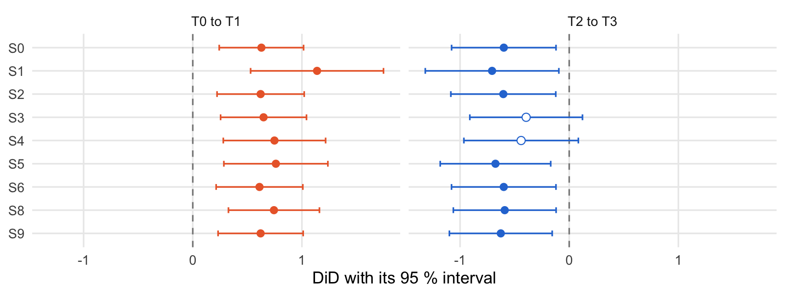
pm_sets |>
unnest(estimates) |>
filter(label %in% c("DiD_T01", "DiD_T23")) |>
select(set, admissible, label, est, pvalue) |>
pivot_wider(names_from = label, values_from = c(est, pvalue),
names_glue = "{label}_{.value}") |>
select(set, admissible, starts_with("DiD_T01"), starts_with("DiD_T23")) |>
mutate(across(where(is.double), \(x) round(x, 3)))| set | admissible | DiD_T01_est | DiD_T01_pvalue | DiD_T23_est | DiD_T23_pvalue |
|---|---|---|---|---|---|
| S0 | TRUE | 0.629 | 0.001 | -0.599 | 0.014 |
| S1 | TRUE | 1.139 | 0.000 | -0.707 | 0.024 |
| S2 | TRUE | 0.622 | 0.002 | -0.604 | 0.014 |
| S3 | TRUE | 0.649 | 0.001 | -0.395 | 0.134 |
| S4 | TRUE | 0.748 | 0.002 | -0.441 | 0.099 |
| S5 | TRUE | 0.761 | 0.002 | -0.676 | 0.009 |
| S6 | TRUE | 0.611 | 0.003 | -0.600 | 0.014 |
| S8 | TRUE | 0.744 | 0.000 | -0.591 | 0.014 |
| S9 | TRUE | 0.622 | 0.002 | -0.627 | 0.009 |
The effect of the first window is significant in the expected direction in 9 of the nine sets, the mirrored effect of the second window in 7.
Next → Step 9, what the steps show together.
What follows · Step 9
Step 9 · What follows
What does Paradox Mindset show? The two training effects side by side, T0–T1 while the experimental group trains and T2–T3 while the control group trains, with the correction for testing all 20 constructs at once (11.7) and the nine sample sets of Step 8:
pm_verdict <- verdict_table("ParadoxMindset", pm_est, pm_p, pm_d, pm_sets)
show_verdict(pm_verdict)| window | DiD | d | size | p | p corrected | sets with the effect | range in sets |
|---|---|---|---|---|---|---|---|
| T0–T1 | 0.63 | 0.35 | small | 0.001 | 0.014 | 9 of 9 | .61 to 1.14 |
| T2–T3 | -0.60 | -0.34 | small | 0.014 | 0.056 | 7 of 9 | -.71 to -.39 |
Paradox Mindset shows the training effect in both rounds. While the experimental group trains, it gains .63 points more than the control group (d = .35, small; p = .001). It holds after the correction for testing 20 constructs (adjusted p = .014) and in 9 of 9 sample sets. When the control group trains, it gains .60 points more than the experimental group (d = .34, small; p = .014). After the correction for testing 20 constructs it stays just above the threshold (adjusted p = .056); across the sample sets its estimate ranges from -.71 to -.39, significant in 7 of 9. The two rounds do not detectably differ (replication test, p = .925). The control group also changes before its own training (T0 to T2: .74, p < .001; T1 to T2: .51, p < .001), and the restricted model of Step 7 is rejected (p < .001): outside the training the latent means do not stay level.
What goes on to Chapter 20? The model and the two effects:
pm_result <- tibble(construct = "ParadoxMindset",
covariates = TRUE,
direct = list(character()),
fit = list(pm_fit))
pm_result |>
transmute(construct, covariates, direct = map_chr(direct, str_flatten, "; "))| construct | covariates | direct |
|---|---|---|
| ParadoxMindset | TRUE |
Paradox Mindset enters the synthesis of Chapter 20 with both effects, adjusted for age and sex.
Intellectual Humility
Its path through the steps. One row per step below; the label marks the data of each step:
| Step | Data | Question | Result | Next |
|---|---|---|---|---|
| 1 | both groups | What is added to Chapter 7? | covariates, contrasts | Chapter 7’s model |
| 2 | both groups | Chapter 7’s model possible, as there? | yes, the same χ² | covariates |
| 3 | both groups | Covariates only through the factors? | yes | latent means |
| 4 | both groups | Latent means | – | effects |
| 5 | both groups | Training effects | T0–T1: n.s.; T2–T3: mirrored, p < .05 | drift |
| 6 | control | Drift while waiting? | none | robustness |
| 7 | both groups | Level outside the training? | yes | sample sets |
| 8 | both groups | Effects on the sample sets? | T0–T1: 0 of 9; T2–T3: 9 of 9 | what follows |
| 9 | What does it show? | T2–T3: effect | Chapter 20 |
The model · Steps 1 to 3
Step 1 · The model both groups
Which model does Chapter 7 hand on? Its status there: the estimates the stop rule set at 0, the items freed, and the autocorrelations:
ih_status <- invariance$adopted |>
filter(construct == "IntellectualHumility")
ih_status |>
transmute(status, set_to_0 = map_chr(set_to_0, \(x) str_flatten(x, "; ")),
freed = map_chr(freed, \(x) str_flatten(x, "; ")))| status | set_to_0 | freed |
|---|---|---|
| as specified |
What does the model look like? In the figure, the factors of the four waves (circles), the items (boxes) and their loadings, the links of the factors (above) and of each item with itself at the next wave (below); in green, the estimates the stop rule of Chapter 7 set at 0 in one group:
plot_model("IntellectualHumility",
fixed = str_remove(ih_status$set_to_0[[1]], "^[A-Za-z]+: "))
What does the complete model look like? Its syntax, as did_syntax() writes it: first the final model of Chapter 7, part by part, then what this chapter adds, the covariates on the factor of every wave and the contrasts. A label shared by several lines (such as l1, t1 or a1) holds those estimates equal; c(..., ...) gives the control and the experimental group one each:
show_model(did_syntax(ih_status))# Chapter 7: one factor per wave; NA* frees the first loading
F_T0 =~ NA*IntellectualHumility1_T0 +
l1*IntellectualHumility1_T0 +
l2*IntellectualHumility3_T0 +
l3*IntellectualHumility4_T0 +
l4*IntellectualHumility5_T0 +
l5*IntellectualHumility6_T0
F_T1 =~ NA*IntellectualHumility1_T1 +
l1*IntellectualHumility1_T1 +
l2*IntellectualHumility3_T1 +
l3*IntellectualHumility4_T1 +
l4*IntellectualHumility5_T1 +
l5*IntellectualHumility6_T1
F_T2 =~ NA*IntellectualHumility1_T2 +
l1*IntellectualHumility1_T2 +
l2*IntellectualHumility3_T2 +
l3*IntellectualHumility4_T2 +
l4*IntellectualHumility5_T2 +
l5*IntellectualHumility6_T2
F_T3 =~ NA*IntellectualHumility1_T3 +
l1*IntellectualHumility1_T3 +
l2*IntellectualHumility3_T3 +
l3*IntellectualHumility4_T3 +
l4*IntellectualHumility5_T3 +
l5*IntellectualHumility6_T3
# Chapter 7: effects coding: the loadings average 1, the intercepts sum to 0
l1 + l2 + l3 + l4 + l5 == 5
t1 + t2 + t3 + t4 + t5 == 0
# Chapter 7: the latent means, free in each group
F_T0 ~ c(m_con_T0, m_exp_T0)*1
F_T1 ~ c(m_con_T1, m_exp_T1)*1
F_T2 ~ c(m_con_T2, m_exp_T2)*1
F_T3 ~ c(m_con_T3, m_exp_T3)*1
# Chapter 7: the intercepts
IntellectualHumility1_T0 ~ t1*1
IntellectualHumility3_T0 ~ t2*1
IntellectualHumility4_T0 ~ t3*1
IntellectualHumility5_T0 ~ t4*1
IntellectualHumility6_T0 ~ t5*1
IntellectualHumility1_T1 ~ t1*1
IntellectualHumility3_T1 ~ t2*1
IntellectualHumility4_T1 ~ t3*1
IntellectualHumility5_T1 ~ t4*1
IntellectualHumility6_T1 ~ t5*1
IntellectualHumility1_T2 ~ t1*1
IntellectualHumility3_T2 ~ t2*1
IntellectualHumility4_T2 ~ t3*1
IntellectualHumility5_T2 ~ t4*1
IntellectualHumility6_T2 ~ t5*1
IntellectualHumility1_T3 ~ t1*1
IntellectualHumility3_T3 ~ t2*1
IntellectualHumility4_T3 ~ t3*1
IntellectualHumility5_T3 ~ t4*1
IntellectualHumility6_T3 ~ t5*1
# Chapter 7: the factors correlate over the waves
F_T0 ~~ F_T1
F_T0 ~~ F_T2
F_T0 ~~ F_T3
F_T1 ~~ F_T2
F_T1 ~~ F_T3
F_T2 ~~ F_T3
# Chapter 7: each item's residual with itself over the waves
IntellectualHumility1_T0 ~~ IntellectualHumility1_T1
IntellectualHumility1_T0 ~~ IntellectualHumility1_T2
IntellectualHumility1_T0 ~~ IntellectualHumility1_T3
IntellectualHumility1_T1 ~~ IntellectualHumility1_T2
IntellectualHumility1_T1 ~~ IntellectualHumility1_T3
IntellectualHumility1_T2 ~~ IntellectualHumility1_T3
IntellectualHumility3_T0 ~~ IntellectualHumility3_T1
IntellectualHumility3_T0 ~~ IntellectualHumility3_T2
IntellectualHumility3_T0 ~~ IntellectualHumility3_T3
IntellectualHumility3_T1 ~~ IntellectualHumility3_T2
IntellectualHumility3_T1 ~~ IntellectualHumility3_T3
IntellectualHumility3_T2 ~~ IntellectualHumility3_T3
IntellectualHumility4_T0 ~~ IntellectualHumility4_T1
IntellectualHumility4_T0 ~~ IntellectualHumility4_T2
IntellectualHumility4_T0 ~~ IntellectualHumility4_T3
IntellectualHumility4_T1 ~~ IntellectualHumility4_T2
IntellectualHumility4_T1 ~~ IntellectualHumility4_T3
IntellectualHumility4_T2 ~~ IntellectualHumility4_T3
IntellectualHumility5_T0 ~~ IntellectualHumility5_T1
IntellectualHumility5_T0 ~~ IntellectualHumility5_T2
IntellectualHumility5_T0 ~~ IntellectualHumility5_T3
IntellectualHumility5_T1 ~~ IntellectualHumility5_T2
IntellectualHumility5_T1 ~~ IntellectualHumility5_T3
IntellectualHumility5_T2 ~~ IntellectualHumility5_T3
IntellectualHumility6_T0 ~~ IntellectualHumility6_T1
IntellectualHumility6_T0 ~~ IntellectualHumility6_T2
IntellectualHumility6_T0 ~~ IntellectualHumility6_T3
IntellectualHumility6_T1 ~~ IntellectualHumility6_T2
IntellectualHumility6_T1 ~~ IntellectualHumility6_T3
IntellectualHumility6_T2 ~~ IntellectualHumility6_T3
# added here: age and sex on the factor of every wave
F_T0 ~ age_c + female_c
F_T1 ~ age_c + female_c
F_T2 ~ age_c + female_c
F_T3 ~ age_c + female_c
# added here: every contrast as a parameter
EG_T01 := (m_exp_T1 - m_exp_T0)
CG_T01 := (m_con_T1 - m_con_T0)
DiD_T01 := (m_exp_T1 - m_exp_T0) - (m_con_T1 - m_con_T0)
EG_T02 := (m_exp_T2 - m_exp_T0)
CG_T02 := (m_con_T2 - m_con_T0)
DiD_T02 := (m_exp_T2 - m_exp_T0) - (m_con_T2 - m_con_T0)
EG_T03 := (m_exp_T3 - m_exp_T0)
CG_T03 := (m_con_T3 - m_con_T0)
DiD_T03 := (m_exp_T3 - m_exp_T0) - (m_con_T3 - m_con_T0)
EG_T12 := (m_exp_T2 - m_exp_T1)
CG_T12 := (m_con_T2 - m_con_T1)
DiD_T12 := (m_exp_T2 - m_exp_T1) - (m_con_T2 - m_con_T1)
EG_T13 := (m_exp_T3 - m_exp_T1)
CG_T13 := (m_con_T3 - m_con_T1)
DiD_T13 := (m_exp_T3 - m_exp_T1) - (m_con_T3 - m_con_T1)
EG_T23 := (m_exp_T3 - m_exp_T2)
CG_T23 := (m_con_T3 - m_con_T2)
DiD_T23 := (m_exp_T3 - m_exp_T2) - (m_con_T3 - m_con_T2)
Replication_test := (m_exp_T1 - m_exp_T0) - (m_con_T1 - m_con_T0) + (m_exp_T3 - m_exp_T2) - (m_con_T3 - m_con_T2)Next → Step 2, the model of Chapter 7 again, without the covariates.
Step 2 · The model of Chapter 7 both groups
What is fitted? The model of Chapter 7 with the contrasts, without the covariates:
ih_base <- df_wide |>
sem(model = did_syntax(ih_status, covariates = FALSE), data = _,
group = "condition", estimator = "MLR", missing = "fiml")Does it pass the checks, and is it the model of Chapter 7? The checks of Chapter 7, and its χ² next to that of Chapter 7, Step 8:
ih_base_checks <- model_checks(ih_base)
ih_base_checks| check | what | value | criterion | holds |
|---|---|---|---|---|
| 1 estimation | converged | yes | yes | ✓ |
| 2 variances | smallest residual variance: item 3 at T3 (Control) | .382 | above 0 | ✓ |
| 3 correlations | largest correlation: the factors at T1 and T2 (Control) | .758 | within ±1 | ✓ |
| 4 residuals | smallest eigenvalue of the residual covariances | .149 | above 0 | ✓ |
| 5 factors | smallest eigenvalue of the factor covariances | .243 | above 0 | ✓ |
| 6 standard errors | estimated for every free parameter | yes | yes | ✓ |
| 7 fit | CFI | .875 | reported | – |
| 8 fit | RMSEA [90 % interval] | .069 [.061, .076] | reported | – |
| 9 fit | SRMR | .112 | reported | – |
| 10 strain | largest modification index: item 5 with item 6 at T2 (Control) | 15.2 | reported | – |
| 11 estimates | smallest standardized loading: item 1 at T3 (Experimental) | .44 | reported | – |
ih_chapter7 <- invariance$steps |>
filter(construct == "IntellectualHumility", part == "both groups",
level == "intercepts across groups")
tibble(model = c("here", "Chapter 7"),
chisq = c(fitMeasures(ih_base, "chisq.scaled"), ih_chapter7$chisq),
df = c(fitMeasures(ih_base, "df"), ih_chapter7$df)) |>
mutate(chisq = round(chisq, 3))| model | chisq | df |
|---|---|---|
| here | 565.446 | 324 |
| Chapter 7 | 565.446 | 324 |
Checks 1 to 6 hold, and the χ² is that of Chapter 7 (565.446): the model is the one Chapter 7 settled on, and the contrasts add no constraint.
Next → Step 3, the same model with the covariates.
Step 3 · The covariates both groups
What is fitted? The model of Step 1, with age and sex on the factors, and the comparison model, with a direct effect of each on every item at every wave and no path to the factors:
ih_covariates <- df_wide |>
sem(model = did_syntax(ih_status), data = _, group = "condition",
estimator = "MLR", missing = "fiml.x")
ih_everywhere <- df_wide |>
sem(model = direct_everywhere(ih_status), data = _, group = "condition",
estimator = "MLR", missing = "fiml.x")What does the comparison model hold? The model of Chapter 7 from Step 1, and in place of the paths to the factors a direct effect of age and sex on every item at every wave; it needs no contrasts. These are its lines beyond Chapter 7:
show_model(direct_everywhere(ih_status), added_only = TRUE)# added here: age or sex directly on single items
IntellectualHumility1_T0 ~ age_c + female_c
IntellectualHumility3_T0 ~ age_c + female_c
IntellectualHumility4_T0 ~ age_c + female_c
IntellectualHumility5_T0 ~ age_c + female_c
IntellectualHumility6_T0 ~ age_c + female_c
IntellectualHumility1_T1 ~ age_c + female_c
IntellectualHumility3_T1 ~ age_c + female_c
IntellectualHumility4_T1 ~ age_c + female_c
IntellectualHumility5_T1 ~ age_c + female_c
IntellectualHumility6_T1 ~ age_c + female_c
IntellectualHumility1_T2 ~ age_c + female_c
IntellectualHumility3_T2 ~ age_c + female_c
IntellectualHumility4_T2 ~ age_c + female_c
IntellectualHumility5_T2 ~ age_c + female_c
IntellectualHumility6_T2 ~ age_c + female_c
IntellectualHumility1_T3 ~ age_c + female_c
IntellectualHumility3_T3 ~ age_c + female_c
IntellectualHumility4_T3 ~ age_c + female_c
IntellectualHumility5_T3 ~ age_c + female_c
IntellectualHumility6_T3 ~ age_c + female_cDoes the model with the covariates pass the checks?
ih_covariates_checks <- model_checks(ih_covariates)
ih_covariates_checks| check | what | value | criterion | holds |
|---|---|---|---|---|
| 1 estimation | converged | yes | yes | ✓ |
| 2 variances | .090 | above 0 | ✓ | |
| 3 correlations | largest correlation: the factors at T1 and T2 (Control) | .751 | within ±1 | ✓ |
| 4 residuals | smallest eigenvalue of the residual covariances | .090 | above 0 | ✓ |
| 5 factors | smallest eigenvalue of the factor covariances | .232 | above 0 | ✓ |
| 6 standard errors | estimated for every free parameter | yes | yes | ✓ |
| 7 fit | CFI | .874 | reported | – |
| 8 fit | RMSEA [90 % interval] | .063 [.056, .070] | reported | – |
| 9 fit | SRMR | .107 | reported | – |
| 10 strain | largest modification index: item 5 with item 6 at T2 (Control) | 15.9 | reported | – |
| 11 estimates | smallest standardized loading: item 1 at T3 (Experimental) | .45 | reported | – |
Checks 1 to 6 hold. Its CFI, .874, stands beside .875 in Step 2, for description only: the two models do not hold the same variables. Do age and sex act only through the factors? The model of Step 1 against the comparison model:
ih_step <- covariate_step(ih_covariates, ih_everywhere)
show_step(ih_step)| model | df | CFI | RMSEA | ΔCFI | ΔRMSEA | p | Chen |
|---|---|---|---|---|---|---|---|
| direct effects on every item | 324 | 0.877 | 0.068 | ||||
| only through the factors | 388 | 0.874 | 0.063 | -0.003 | -0.005 | 0.088 | ✓ |
They do, under Chen’s cutoffs (ΔCFI = -.003, ΔRMSEA = -.005; χ² test: p = .088): the covariates enter as specified.
ih_fit <- ih_covariates # the model of Steps 4 to 8Next → Step 4, the latent means of this model.
The effects · Steps 4 to 6
Step 4 · Latent means both groups
Where does each group stand at each wave? The eight latent means with their 95 % confidence intervals, at the sample’s average age and share of women:
ih_means <- parameterEstimates(ih_fit) |>
filter(op == "~1", str_starts(lhs, "F_")) |>
select(label, est, se, ci.lower, ci.upper)
# the contrasts between them, for Steps 4 to 6
ih_contrasts <- contrasts_of(ih_fit, c(
"EG_T01", "CG_T01", "DiD_T01", "EG_T23", "CG_T23", "DiD_T23",
"Replication_test", "CG_T02", "CG_T12"))
ih_means |>
mutate(across(where(is.double), \(x) round(x, 2)))| label | est | se | ci.lower | ci.upper |
|---|---|---|---|---|
| m_con_T0 | 8.59 | 0.10 | 8.38 | 8.79 |
| m_con_T1 | 8.62 | 0.10 | 8.42 | 8.82 |
| m_con_T2 | 8.78 | 0.09 | 8.60 | 8.96 |
| m_con_T3 | 9.03 | 0.09 | 8.85 | 9.21 |
| m_exp_T0 | 8.66 | 0.10 | 8.47 | 8.85 |
| m_exp_T1 | 8.71 | 0.11 | 8.50 | 8.92 |
| m_exp_T2 | 8.74 | 0.12 | 8.51 | 8.98 |
| m_exp_T3 | 8.69 | 0.12 | 8.46 | 8.92 |
plot_latent_means(ih_fit)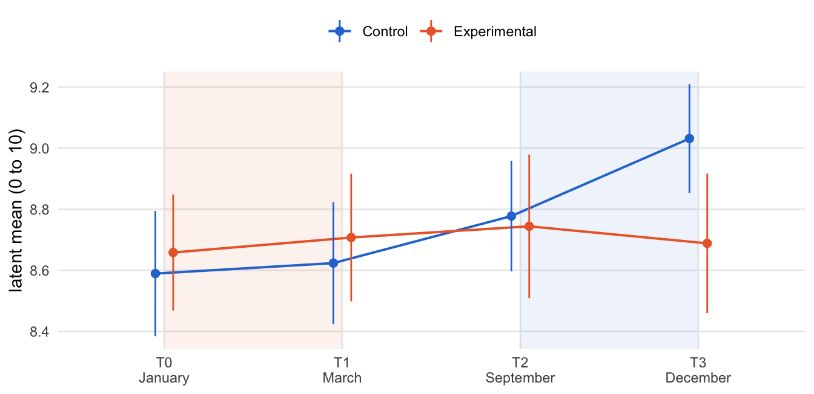
In January the experimental group lies at 8.66, the control group at 8.59. While the experimental group trains (T0 to T1), it changes by .05 and the control group by .03; while the control group trains (T2 to T3), it changes by .25 and the experimental group by -.06.
Next → Step 5, the difference of these changes: the training effects.
Step 5 · The training effects both groups
How much more does the trained group change? The change of each group in the two training windows, and their difference, as a table and as a figure:
ih_contrasts |>
filter(label %in% c("EG_T01", "CG_T01", "DiD_T01",
"EG_T23", "CG_T23", "DiD_T23")) |>
mutate(across(where(is.double), \(x) round(x, 3)))| label | est | se | pvalue | ci.lower | ci.upper |
|---|---|---|---|---|---|
| EG_T01 | 0.049 | 0.117 | 0.675 | -0.180 | 0.278 |
| CG_T01 | 0.034 | 0.119 | 0.773 | -0.199 | 0.268 |
| DiD_T01 | 0.015 | 0.168 | 0.930 | -0.314 | 0.343 |
| EG_T23 | -0.056 | 0.123 | 0.650 | -0.297 | 0.185 |
| CG_T23 | 0.254 | 0.095 | 0.007 | 0.068 | 0.439 |
| DiD_T23 | -0.310 | 0.156 | 0.048 | -0.616 | -0.003 |
plot_did(ih_fit)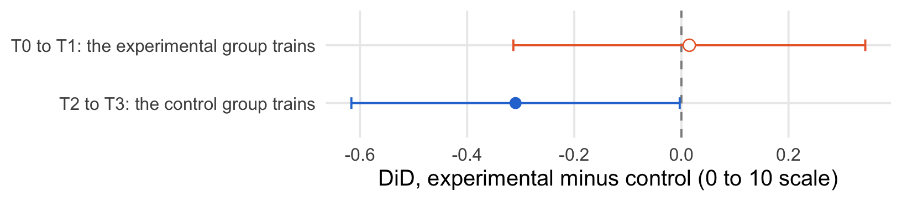
While the experimental group trains, DiD = .01 (p = .930), not significant. While the control group trains, DiD = -.31 (p = .048), the mirrored effect, significant.
How large are the effects? The latent d, with the latent standard deviation at T0 pooled over the two groups:
ih_sd_T0 <- pooled_sd_T0(ih_fit)
ih_contrasts |>
filter(label %in% c("DiD_T01", "DiD_T23")) |>
transmute(label, DiD = est, d = est / ih_sd_T0, size = cohen(d)) |>
mutate(across(where(is.double), \(x) round(x, 2)))| label | DiD | d | size |
|---|---|---|---|
| DiD_T01 | 0.01 | 0.01 | negligible |
| DiD_T23 | -0.31 | -0.25 | small |
The pooled latent SD at T0 is 1.23; in its units the first effect is d = .01, negligible, and the second d = -.25, small. Do the two training effects cancel out? The replication test, DiD (T0 to T1) + DiD (T2 to T3):
ih_contrasts |>
filter(label == "Replication_test") |>
mutate(across(where(is.double), \(x) round(x, 3)))| label | est | se | pvalue | ci.lower | ci.upper |
|---|---|---|---|---|---|
| Replication_test | -0.295 | 0.224 | 0.188 | -0.734 | 0.144 |
The two effects do not detectably differ: their sum is -.29 (p = .188).
Next → Step 6, how the control group changes while it waits.
Step 6 · Drift of the control group control
Does the control group change while it waits? Its change from T0 to T1, T0 to T2 and T1 to T2:
ih_contrasts |>
filter(label %in% c("CG_T01", "CG_T02", "CG_T12")) |>
mutate(across(where(is.double), \(x) round(x, 3)))| label | est | se | pvalue | ci.lower | ci.upper |
|---|---|---|---|---|---|
| CG_T01 | 0.034 | 0.119 | 0.773 | -0.199 | 0.268 |
| CG_T02 | 0.188 | 0.115 | 0.100 | -0.036 | 0.413 |
| CG_T12 | 0.154 | 0.103 | 0.135 | -0.048 | 0.356 |
None of the three changes is significant; the change from T0 to T1, which the first DiD subtracts, is .03 (p = .773).
Next → Step 7, whether the latent means stay level outside the training.
Robustness · Steps 7 and 8
Step 7 · The restricted model both groups
Do the latent means stay level outside the training? The model of Steps 4 to 6 against the same model with the four equality constraints, from the script; its free model is the model of Steps 4 to 6, with the same χ²:
ih_restricted <- restricted |> filter(construct == "IntellectualHumility")
ih_restricted |>
transmute(`χ² free` = chisq_free, `χ² restricted` = chisq_restricted,
`Δχ²` = delta_chisq, Δdf = delta_df, p, admissible) |>
mutate(across(where(is.double), \(x) round(x, 3)))| χ² free | χ² restricted | Δχ² | Δdf | p | admissible |
|---|---|---|---|---|---|
| 647.024 | 650.454 | 3.422 | 4 | 0.49 | TRUE |
The four constraints cost Δχ²(4) = 3.42 (p = .490), and the data do not reject them: the latent means stay level outside the training.
Next → Step 8, the two effects on the sample sets.
Step 8 · The sample sets both groups
Do the effects hold on every sample set? The two training effects on the nine sample sets, from the script, as a figure and as a table; S0 is the model of Steps 4 to 6:
ih_sets <- latent_sets |> filter(construct == "IntellectualHumility")
plot_sets(ih_sets)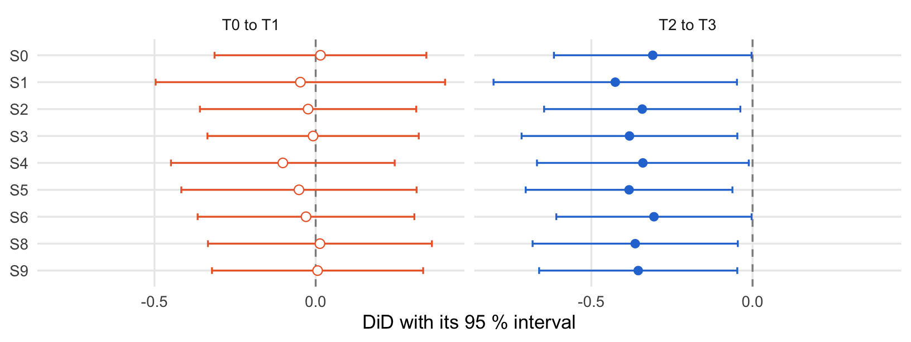
ih_sets |>
unnest(estimates) |>
filter(label %in% c("DiD_T01", "DiD_T23")) |>
select(set, admissible, label, est, pvalue) |>
pivot_wider(names_from = label, values_from = c(est, pvalue),
names_glue = "{label}_{.value}") |>
select(set, admissible, starts_with("DiD_T01"), starts_with("DiD_T23")) |>
mutate(across(where(is.double), \(x) round(x, 3)))| set | admissible | DiD_T01_est | DiD_T01_pvalue | DiD_T23_est | DiD_T23_pvalue |
|---|---|---|---|---|---|
| S0 | TRUE | 0.015 | 0.930 | -0.310 | 0.048 |
| S1 | TRUE | -0.048 | 0.836 | -0.426 | 0.027 |
| S2 | TRUE | -0.024 | 0.890 | -0.342 | 0.028 |
| S3 | TRUE | -0.008 | 0.962 | -0.382 | 0.025 |
| S4 | TRUE | -0.102 | 0.565 | -0.340 | 0.042 |
| S5 | TRUE | -0.052 | 0.781 | -0.383 | 0.019 |
| S6 | TRUE | -0.030 | 0.861 | -0.306 | 0.048 |
| S8 | TRUE | 0.013 | 0.941 | -0.364 | 0.025 |
| S9 | TRUE | 0.006 | 0.972 | -0.355 | 0.024 |
The effect of the first window is significant in the expected direction in 0 of the nine sets, the mirrored effect of the second window in 9.
Next → Step 9, what the steps show together.
What follows · Step 9
Step 9 · What follows
What does Intellectual Humility show? The two training effects side by side, T0–T1 while the experimental group trains and T2–T3 while the control group trains, with the correction for testing all 20 constructs at once (11.7) and the nine sample sets of Step 8:
ih_verdict <- verdict_table("IntellectualHumility", ih_est, ih_p, ih_d, ih_sets)
show_verdict(ih_verdict)| window | DiD | d | size | p | p corrected | sets with the effect | range in sets |
|---|---|---|---|---|---|---|---|
| T0–T1 | 0.01 | 0.01 | negligible | 0.930 | 0.930 | 0 of 9 | -.10 to .01 |
| T2–T3 | -0.31 | -0.25 | small | 0.048 | 0.136 | 9 of 9 | -.43 to -.31 |
Intellectual Humility shows the training effect when the control group trains, not in the first round. While the experimental group trains, its latent mean changes by .05 points, that of the control group by .03; the difference is not significant (DiD = .01, p = .930). When the control group trains, it gains .31 points more than the experimental group (d = .25, small; p = .048). After the correction for testing 20 constructs it does not hold (adjusted p = .136); across the sample sets its estimate ranges from -.43 to -.31, significant in 9 of 9. The two rounds do not detectably differ (replication test, p = .188). Outside the training the latent means stay level: the control group does not change before its own training, and the restricted model of Step 7 holds (p = .490).
What goes on to Chapter 20? The model and the two effects:
ih_result <- tibble(construct = "IntellectualHumility",
covariates = TRUE,
direct = list(character()),
fit = list(ih_fit))
ih_result |>
transmute(construct, covariates, direct = map_chr(direct, str_flatten, "; "))| construct | covariates | direct |
|---|---|---|
| IntellectualHumility | TRUE |
Intellectual Humility enters the synthesis of Chapter 20 with both effects, adjusted for age and sex.
Tolerance Diversity
Its path through the steps. One row per step below; the label marks the data of each step:
| Step | Data | Question | Result | Next |
|---|---|---|---|---|
| 1 | both groups | What is added to Chapter 7? | covariates, contrasts | Chapter 7’s model |
| 2 | both groups | Chapter 7’s model possible, as there? | yes, the same χ² | covariates |
| 3 | both groups | Covariates only through the factors? | yes | latent means |
| 4 | both groups | Latent means | – | effects |
| 5 | both groups | Training effects | T0–T1: n.s.; T2–T3: n.s. | drift |
| 6 | control | Drift while waiting? | yes, T0 to T2 | robustness |
| 7 | both groups | Level outside the training? | yes | sample sets |
| 8 | both groups | Effects on the sample sets? | T0–T1: 0 of 9; T2–T3: 0 of 9 | what follows |
| 9 | What does it show? | no significant effect | Chapter 20 |
The model · Steps 1 to 3
Step 1 · The model both groups
Which model does Chapter 7 hand on? Its status there: the estimates the stop rule set at 0, the items freed, and the autocorrelations:
td_status <- invariance$adopted |>
filter(construct == "ToleranceDiversity")
td_status |>
transmute(status, set_to_0 = map_chr(set_to_0, \(x) str_flatten(x, "; ")),
freed = map_chr(freed, \(x) str_flatten(x, "; ")))| status | set_to_0 | freed |
|---|---|---|
| partial | Experimental: ToleranceDiversity2 intercepts |
What does the model look like? In the figure, the factors of the four waves (circles), the items (boxes) and their loadings, the links of the factors (above) and of each item with itself at the next wave (below); in green, the estimates the stop rule of Chapter 7 set at 0 in one group:
plot_model("ToleranceDiversity",
fixed = str_remove(td_status$set_to_0[[1]], "^[A-Za-z]+: "))
What does the complete model look like? Its syntax, as did_syntax() writes it: first the final model of Chapter 7, part by part, then what this chapter adds, the covariates on the factor of every wave and the contrasts. A label shared by several lines (such as l1, t1 or a1) holds those estimates equal; c(..., ...) gives the control and the experimental group one each:
show_model(did_syntax(td_status))# Chapter 7: one factor per wave; NA* frees the first loading
F_T0 =~ NA*ToleranceDiversity2_T0 +
l1*ToleranceDiversity2_T0 +
l2*ToleranceDiversity3_T0 +
l3*ToleranceDiversity4_T0 +
l4*ToleranceDiversity5_T0
F_T1 =~ NA*ToleranceDiversity2_T1 +
l1*ToleranceDiversity2_T1 +
l2*ToleranceDiversity3_T1 +
l3*ToleranceDiversity4_T1 +
l4*ToleranceDiversity5_T1
F_T2 =~ NA*ToleranceDiversity2_T2 +
l1*ToleranceDiversity2_T2 +
l2*ToleranceDiversity3_T2 +
l3*ToleranceDiversity4_T2 +
l4*ToleranceDiversity5_T2
F_T3 =~ NA*ToleranceDiversity2_T3 +
l1*ToleranceDiversity2_T3 +
l2*ToleranceDiversity3_T3 +
l3*ToleranceDiversity4_T3 +
l4*ToleranceDiversity5_T3
# Chapter 7: effects coding: the loadings average 1, the intercepts sum to 0
l1 + l2 + l3 + l4 == 4
t2 + t3 + t4 == 0
# Chapter 7: the latent means, free in each group
F_T0 ~ c(m_con_T0, m_exp_T0)*1
F_T1 ~ c(m_con_T1, m_exp_T1)*1
F_T2 ~ c(m_con_T2, m_exp_T2)*1
F_T3 ~ c(m_con_T3, m_exp_T3)*1
# Chapter 7: the intercepts
ToleranceDiversity2_T0 ~ c(t1, t1_T0_exp)*1
ToleranceDiversity3_T0 ~ t2*1
ToleranceDiversity4_T0 ~ t3*1
ToleranceDiversity5_T0 ~ t4*1
ToleranceDiversity2_T1 ~ c(t1, t1_T1_exp)*1
ToleranceDiversity3_T1 ~ t2*1
ToleranceDiversity4_T1 ~ t3*1
ToleranceDiversity5_T1 ~ t4*1
ToleranceDiversity2_T2 ~ c(t1, t1_T2_exp)*1
ToleranceDiversity3_T2 ~ t2*1
ToleranceDiversity4_T2 ~ t3*1
ToleranceDiversity5_T2 ~ t4*1
ToleranceDiversity2_T3 ~ c(t1, t1_T3_exp)*1
ToleranceDiversity3_T3 ~ t2*1
ToleranceDiversity4_T3 ~ t3*1
ToleranceDiversity5_T3 ~ t4*1
# Chapter 7: the factors correlate over the waves
F_T0 ~~ F_T1
F_T0 ~~ F_T2
F_T0 ~~ F_T3
F_T1 ~~ F_T2
F_T1 ~~ F_T3
F_T2 ~~ F_T3
# Chapter 7: each item's residual with itself over the waves
ToleranceDiversity2_T0 ~~ ToleranceDiversity2_T1
ToleranceDiversity2_T0 ~~ ToleranceDiversity2_T2
ToleranceDiversity2_T0 ~~ ToleranceDiversity2_T3
ToleranceDiversity2_T1 ~~ ToleranceDiversity2_T2
ToleranceDiversity2_T1 ~~ ToleranceDiversity2_T3
ToleranceDiversity2_T2 ~~ ToleranceDiversity2_T3
ToleranceDiversity3_T0 ~~ ToleranceDiversity3_T1
ToleranceDiversity3_T0 ~~ ToleranceDiversity3_T2
ToleranceDiversity3_T0 ~~ ToleranceDiversity3_T3
ToleranceDiversity3_T1 ~~ ToleranceDiversity3_T2
ToleranceDiversity3_T1 ~~ ToleranceDiversity3_T3
ToleranceDiversity3_T2 ~~ ToleranceDiversity3_T3
ToleranceDiversity4_T0 ~~ ToleranceDiversity4_T1
ToleranceDiversity4_T0 ~~ ToleranceDiversity4_T2
ToleranceDiversity4_T0 ~~ ToleranceDiversity4_T3
ToleranceDiversity4_T1 ~~ ToleranceDiversity4_T2
ToleranceDiversity4_T1 ~~ ToleranceDiversity4_T3
ToleranceDiversity4_T2 ~~ ToleranceDiversity4_T3
ToleranceDiversity5_T0 ~~ ToleranceDiversity5_T1
ToleranceDiversity5_T0 ~~ ToleranceDiversity5_T2
ToleranceDiversity5_T0 ~~ ToleranceDiversity5_T3
ToleranceDiversity5_T1 ~~ ToleranceDiversity5_T2
ToleranceDiversity5_T1 ~~ ToleranceDiversity5_T3
ToleranceDiversity5_T2 ~~ ToleranceDiversity5_T3
# added here: age and sex on the factor of every wave
F_T0 ~ age_c + female_c
F_T1 ~ age_c + female_c
F_T2 ~ age_c + female_c
F_T3 ~ age_c + female_c
# added here: every contrast as a parameter
EG_T01 := (m_exp_T1 - m_exp_T0)
CG_T01 := (m_con_T1 - m_con_T0)
DiD_T01 := (m_exp_T1 - m_exp_T0) - (m_con_T1 - m_con_T0)
EG_T02 := (m_exp_T2 - m_exp_T0)
CG_T02 := (m_con_T2 - m_con_T0)
DiD_T02 := (m_exp_T2 - m_exp_T0) - (m_con_T2 - m_con_T0)
EG_T03 := (m_exp_T3 - m_exp_T0)
CG_T03 := (m_con_T3 - m_con_T0)
DiD_T03 := (m_exp_T3 - m_exp_T0) - (m_con_T3 - m_con_T0)
EG_T12 := (m_exp_T2 - m_exp_T1)
CG_T12 := (m_con_T2 - m_con_T1)
DiD_T12 := (m_exp_T2 - m_exp_T1) - (m_con_T2 - m_con_T1)
EG_T13 := (m_exp_T3 - m_exp_T1)
CG_T13 := (m_con_T3 - m_con_T1)
DiD_T13 := (m_exp_T3 - m_exp_T1) - (m_con_T3 - m_con_T1)
EG_T23 := (m_exp_T3 - m_exp_T2)
CG_T23 := (m_con_T3 - m_con_T2)
DiD_T23 := (m_exp_T3 - m_exp_T2) - (m_con_T3 - m_con_T2)
Replication_test := (m_exp_T1 - m_exp_T0) - (m_con_T1 - m_con_T0) + (m_exp_T3 - m_exp_T2) - (m_con_T3 - m_con_T2)Next → Step 2, the model of Chapter 7 again, without the covariates.
Step 2 · The model of Chapter 7 both groups
What is fitted? The model of Chapter 7 with the contrasts, without the covariates:
td_base <- df_wide |>
sem(model = did_syntax(td_status, covariates = FALSE), data = _,
group = "condition", estimator = "MLR", missing = "fiml")Does it pass the checks, and is it the model of Chapter 7? The checks of Chapter 7, and its χ² next to that of Chapter 7, Step 8:
td_base_checks <- model_checks(td_base)
td_base_checks| check | what | value | criterion | holds |
|---|---|---|---|---|
| 1 estimation | converged | yes | yes | ✓ |
| 2 variances | smallest residual variance: item 5 at T3 (Control) | 1.453 | above 0 | ✓ |
| 3 correlations | largest correlation: the factors at T0 and T2 (Control) | .695 | within ±1 | ✓ |
| 4 residuals | smallest eigenvalue of the residual covariances | .471 | above 0 | ✓ |
| 5 factors | smallest eigenvalue of the factor covariances | .682 | above 0 | ✓ |
| 6 standard errors | estimated for every free parameter | yes | yes | ✓ |
| 7 fit | CFI | .932 | reported | – |
| 8 fit | RMSEA [90 % interval] | .050 [.038, .061] | reported | – |
| 9 fit | SRMR | .091 | reported | – |
| 10 strain | largest modification index: item 2 with item 4 at T1 (Control) | 8.6 | reported | – |
| 11 estimates | smallest standardized loading: item 3 at T1 (Experimental) | .43 | reported | – |
td_chapter7 <- invariance$steps |>
filter(construct == "ToleranceDiversity", part == "both groups",
level == "intercepts across groups")
tibble(model = c("here", "Chapter 7"),
chisq = c(fitMeasures(td_base, "chisq.scaled"), td_chapter7$chisq),
df = c(fitMeasures(td_base, "df"), td_chapter7$df)) |>
mutate(chisq = round(chisq, 3))| model | chisq | df |
|---|---|---|
| here | 268.607 | 186 |
| Chapter 7 | 268.607 | 186 |
Checks 1 to 6 hold, and the χ² is that of Chapter 7 (268.607): the model is the one Chapter 7 settled on, and the contrasts add no constraint.
Next → Step 3, the same model with the covariates.
Step 3 · The covariates both groups
What is fitted? The model of Step 1, with age and sex on the factors, and the comparison model, with a direct effect of each on every item at every wave and no path to the factors:
td_covariates <- df_wide |>
sem(model = did_syntax(td_status), data = _, group = "condition",
estimator = "MLR", missing = "fiml.x")
td_everywhere <- df_wide |>
sem(model = direct_everywhere(td_status), data = _, group = "condition",
estimator = "MLR", missing = "fiml.x")What does the comparison model hold? The model of Chapter 7 from Step 1, and in place of the paths to the factors a direct effect of age and sex on every item at every wave; it needs no contrasts. These are its lines beyond Chapter 7:
show_model(direct_everywhere(td_status), added_only = TRUE)# added here: age or sex directly on single items
ToleranceDiversity2_T0 ~ age_c + female_c
ToleranceDiversity3_T0 ~ age_c + female_c
ToleranceDiversity4_T0 ~ age_c + female_c
ToleranceDiversity5_T0 ~ age_c + female_c
ToleranceDiversity2_T1 ~ age_c + female_c
ToleranceDiversity3_T1 ~ age_c + female_c
ToleranceDiversity4_T1 ~ age_c + female_c
ToleranceDiversity5_T1 ~ age_c + female_c
ToleranceDiversity2_T2 ~ age_c + female_c
ToleranceDiversity3_T2 ~ age_c + female_c
ToleranceDiversity4_T2 ~ age_c + female_c
ToleranceDiversity5_T2 ~ age_c + female_c
ToleranceDiversity2_T3 ~ age_c + female_c
ToleranceDiversity3_T3 ~ age_c + female_c
ToleranceDiversity4_T3 ~ age_c + female_c
ToleranceDiversity5_T3 ~ age_c + female_cDoes the model with the covariates pass the checks?
td_covariates_checks <- model_checks(td_covariates)
td_covariates_checks| check | what | value | criterion | holds |
|---|---|---|---|---|
| 1 estimation | converged | yes | yes | ✓ |
| 2 variances | .090 | above 0 | ✓ | |
| 3 correlations | largest correlation: item 5, T1 with T3 (Experimental) | .704 | within ±1 | ✓ |
| 4 residuals | smallest eigenvalue of the residual covariances | .090 | above 0 | ✓ |
| 5 factors | smallest eigenvalue of the factor covariances | .687 | above 0 | ✓ |
| 6 standard errors | estimated for every free parameter | yes | yes | ✓ |
| 7 fit | CFI | .923 | reported | – |
| 8 fit | RMSEA [90 % interval] | .047 [.037, .057] | reported | – |
| 9 fit | SRMR | .090 | reported | – |
| 10 strain | largest modification index: item 2 with item 4 at T1 (Control) | 8.5 | reported | – |
| 11 estimates | smallest standardized loading: item 3 at T1 (Experimental) | .43 | reported | – |
Checks 1 to 6 hold. Its CFI, .923, stands beside .932 in Step 2, for description only: the two models do not hold the same variables. Do age and sex act only through the factors? The model of Step 1 against the comparison model:
td_step <- covariate_step(td_covariates, td_everywhere)
show_step(td_step)| model | df | CFI | RMSEA | ΔCFI | ΔRMSEA | p | Chen |
|---|---|---|---|---|---|---|---|
| direct effects on every item | 186 | 0.929 | 0.051 | ||||
| only through the factors | 234 | 0.923 | 0.047 | -0.006 | -0.004 | 0.036 | ✓ |
They do, under Chen’s cutoffs (ΔCFI = -.006, ΔRMSEA = -.004; χ² test: p = .036): the covariates enter as specified.
td_fit <- td_covariates # the model of Steps 4 to 8Next → Step 4, the latent means of this model.
The effects · Steps 4 to 6
Step 4 · Latent means both groups
Where does each group stand at each wave? The eight latent means with their 95 % confidence intervals, at the sample’s average age and share of women:
td_means <- parameterEstimates(td_fit) |>
filter(op == "~1", str_starts(lhs, "F_")) |>
select(label, est, se, ci.lower, ci.upper)
# the contrasts between them, for Steps 4 to 6
td_contrasts <- contrasts_of(td_fit, c(
"EG_T01", "CG_T01", "DiD_T01", "EG_T23", "CG_T23", "DiD_T23",
"Replication_test", "CG_T02", "CG_T12"))
td_means |>
mutate(across(where(is.double), \(x) round(x, 2)))| label | est | se | ci.lower | ci.upper |
|---|---|---|---|---|
| m_con_T0 | 8.09 | 0.25 | 7.61 | 8.57 |
| m_con_T1 | 8.21 | 0.28 | 7.67 | 8.76 |
| m_con_T2 | 8.43 | 0.26 | 7.92 | 8.94 |
| m_con_T3 | 8.61 | 0.27 | 8.08 | 9.13 |
| m_exp_T0 | 8.25 | 0.28 | 7.71 | 8.80 |
| m_exp_T1 | 8.28 | 0.28 | 7.72 | 8.84 |
| m_exp_T2 | 8.20 | 0.27 | 7.67 | 8.73 |
| m_exp_T3 | 8.21 | 0.33 | 7.55 | 8.86 |
plot_latent_means(td_fit)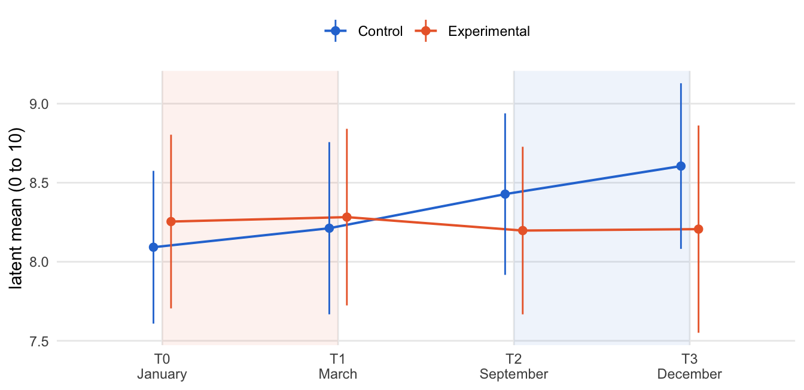
In January the experimental group lies at 8.25, the control group at 8.09. While the experimental group trains (T0 to T1), it changes by .03 and the control group by .12; while the control group trains (T2 to T3), it changes by .18 and the experimental group by .01.
Next → Step 5, the difference of these changes: the training effects.
Step 5 · The training effects both groups
How much more does the trained group change? The change of each group in the two training windows, and their difference, as a table and as a figure:
td_contrasts |>
filter(label %in% c("EG_T01", "CG_T01", "DiD_T01",
"EG_T23", "CG_T23", "DiD_T23")) |>
mutate(across(where(is.double), \(x) round(x, 3)))| label | est | se | pvalue | ci.lower | ci.upper |
|---|---|---|---|---|---|
| EG_T01 | 0.028 | 0.153 | 0.854 | -0.271 | 0.327 |
| CG_T01 | 0.120 | 0.150 | 0.423 | -0.174 | 0.414 |
| DiD_T01 | -0.092 | 0.213 | 0.665 | -0.509 | 0.325 |
| EG_T23 | 0.009 | 0.266 | 0.973 | -0.512 | 0.530 |
| CG_T23 | 0.177 | 0.140 | 0.206 | -0.097 | 0.452 |
| DiD_T23 | -0.168 | 0.302 | 0.577 | -0.759 | 0.423 |
plot_did(td_fit)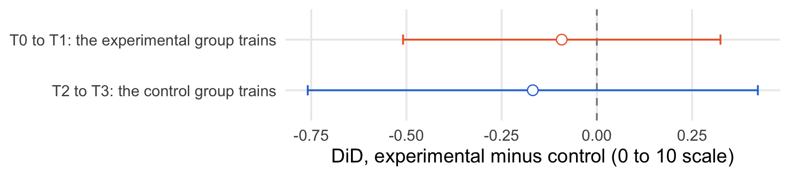
While the experimental group trains, DiD = -.09 (p = .665), not significant. While the control group trains, DiD = -.17 (p = .577), not significant.
How large are the effects? The latent d, with the latent standard deviation at T0 pooled over the two groups:
td_sd_T0 <- pooled_sd_T0(td_fit)
td_contrasts |>
filter(label %in% c("DiD_T01", "DiD_T23")) |>
transmute(label, DiD = est, d = est / td_sd_T0, size = cohen(d)) |>
mutate(across(where(is.double), \(x) round(x, 2)))| label | DiD | d | size |
|---|---|---|---|
| DiD_T01 | -0.09 | -0.05 | negligible |
| DiD_T23 | -0.17 | -0.10 | negligible |
The pooled latent SD at T0 is 1.73; in its units the first effect is d = -.05, negligible, and the second d = -.10, negligible. Do the two training effects cancel out? The replication test, DiD (T0 to T1) + DiD (T2 to T3):
td_contrasts |>
filter(label == "Replication_test") |>
mutate(across(where(is.double), \(x) round(x, 3)))| label | est | se | pvalue | ci.lower | ci.upper |
|---|---|---|---|---|---|
| Replication_test | -0.26 | 0.391 | 0.506 | -1.027 | 0.506 |
The two effects do not detectably differ: their sum is -.26 (p = .506).
Next → Step 6, how the control group changes while it waits.
Step 6 · Drift of the control group control
Does the control group change while it waits? Its change from T0 to T1, T0 to T2 and T1 to T2:
td_contrasts |>
filter(label %in% c("CG_T01", "CG_T02", "CG_T12")) |>
mutate(across(where(is.double), \(x) round(x, 3)))| label | est | se | pvalue | ci.lower | ci.upper |
|---|---|---|---|---|---|
| CG_T01 | 0.120 | 0.150 | 0.423 | -0.174 | 0.414 |
| CG_T02 | 0.336 | 0.136 | 0.014 | 0.069 | 0.603 |
| CG_T12 | 0.216 | 0.148 | 0.146 | -0.075 | 0.506 |
The control group changes significantly from T0 to T2 before its own training; the change from T0 to T1, which the first DiD subtracts, is .12 (p = .423).
Next → Step 7, whether the latent means stay level outside the training.
Robustness · Steps 7 and 8
Step 7 · The restricted model both groups
Do the latent means stay level outside the training? The model of Steps 4 to 6 against the same model with the four equality constraints, from the script; its free model is the model of Steps 4 to 6, with the same χ²:
td_restricted <- restricted |> filter(construct == "ToleranceDiversity")
td_restricted |>
transmute(`χ² free` = chisq_free, `χ² restricted` = chisq_restricted,
`Δχ²` = delta_chisq, Δdf = delta_df, p, admissible) |>
mutate(across(where(is.double), \(x) round(x, 3)))| χ² free | χ² restricted | Δχ² | Δdf | p | admissible |
|---|---|---|---|---|---|
| 339.984 | 345.711 | 5.729 | 4 | 0.22 | TRUE |
The four constraints cost Δχ²(4) = 5.73 (p = .220), and the data do not reject them: the latent means stay level outside the training.
Next → Step 8, the two effects on the sample sets.
Step 8 · The sample sets both groups
Do the effects hold on every sample set? The two training effects on the nine sample sets, from the script, as a figure and as a table; S0 is the model of Steps 4 to 6:
td_sets <- latent_sets |> filter(construct == "ToleranceDiversity")
plot_sets(td_sets)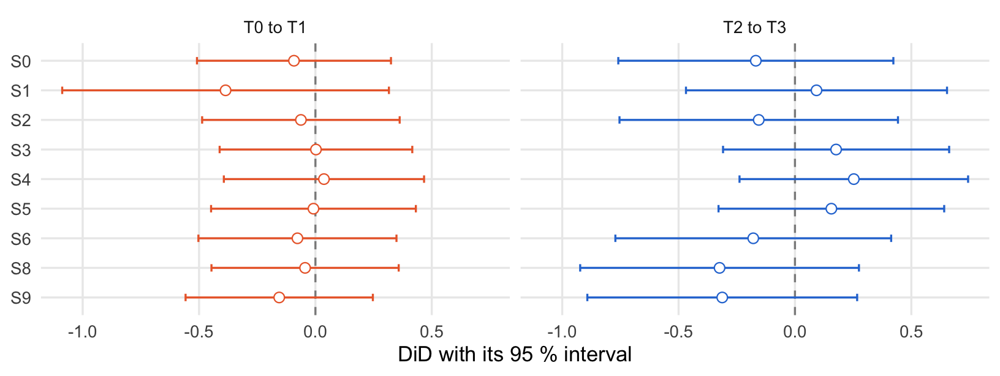
td_sets |>
unnest(estimates) |>
filter(label %in% c("DiD_T01", "DiD_T23")) |>
select(set, admissible, label, est, pvalue) |>
pivot_wider(names_from = label, values_from = c(est, pvalue),
names_glue = "{label}_{.value}") |>
select(set, admissible, starts_with("DiD_T01"), starts_with("DiD_T23")) |>
mutate(across(where(is.double), \(x) round(x, 3)))| set | admissible | DiD_T01_est | DiD_T01_pvalue | DiD_T23_est | DiD_T23_pvalue |
|---|---|---|---|---|---|
| S0 | TRUE | -0.092 | 0.665 | -0.168 | 0.577 |
| S1 | TRUE | -0.386 | 0.281 | 0.092 | 0.746 |
| S2 | TRUE | -0.062 | 0.773 | -0.156 | 0.610 |
| S3 | TRUE | 0.002 | 0.991 | 0.177 | 0.476 |
| S4 | TRUE | 0.037 | 0.867 | 0.253 | 0.313 |
| S5 | TRUE | -0.008 | 0.970 | 0.156 | 0.527 |
| S6 | TRUE | -0.077 | 0.722 | -0.179 | 0.553 |
| S8 | TRUE | -0.044 | 0.829 | -0.324 | 0.289 |
| S9 | TRUE | -0.156 | 0.449 | -0.312 | 0.291 |
The effect of the first window is significant in the expected direction in 0 of the nine sets, the mirrored effect of the second window in 0.
Next → Step 9, what the steps show together.
What follows · Step 9
Step 9 · What follows
What does Tolerance Diversity show? The two training effects side by side, T0–T1 while the experimental group trains and T2–T3 while the control group trains, with the correction for testing all 20 constructs at once (11.7) and the nine sample sets of Step 8:
td_verdict <- verdict_table("ToleranceDiversity", td_est, td_p, td_d, td_sets)
show_verdict(td_verdict)| window | DiD | d | size | p | p corrected | sets with the effect | range in sets |
|---|---|---|---|---|---|---|---|
| T0–T1 | -0.09 | -0.05 | negligible | 0.665 | 0.782 | 0 of 9 | -.39 to .04 |
| T2–T3 | -0.17 | -0.10 | negligible | 0.577 | 0.769 | 0 of 9 | -.32 to .25 |
Tolerance Diversity shows no significant training effect in either round. While the experimental group trains, its latent mean changes by .03 points, that of the control group by .12; the difference is not significant (DiD = -.09, p = .665). When the control group trains, its latent mean changes by .18 points, that of the experimental group by .01; the difference is not significant (DiD = -.17, p = .577). The control group also changes before its own training (T0 to T2: .34, p = .014), but the restricted model of Step 7, with level means outside the training, still holds (p = .220).
What goes on to Chapter 20? The model and the two effects:
td_result <- tibble(construct = "ToleranceDiversity",
covariates = TRUE,
direct = list(character()),
fit = list(td_fit))
td_result |>
transmute(construct, covariates, direct = map_chr(direct, str_flatten, "; "))| construct | covariates | direct |
|---|---|---|
| ToleranceDiversity | TRUE |
Tolerance Diversity enters the synthesis of Chapter 20 with both effects, adjusted for age and sex.
11.6 Well-being (H3)
Which constructs? The ten constructs of the third hypothesis.
Flourishing
Its path through the steps. One row per step below; the label marks the data of each step:
| Step | Data | Question | Result | Next |
|---|---|---|---|---|
| 1 | both groups | What is added to Chapter 7? | covariates, contrasts | Chapter 7’s model |
| 2 | both groups | Chapter 7’s model possible, as there? | yes, the same χ² | covariates |
| 3 | both groups | Covariates only through the factors? | no; item 3 by age freed: yes | latent means |
| 4 | both groups | Latent means | – | effects |
| 5 | both groups | Training effects | T0–T1: n.s.; T2–T3: mirrored, p < .05 | drift |
| 6 | control | Drift while waiting? | yes, T0 to T1 and T0 to T2 | robustness |
| 7 | both groups | Level outside the training? | yes | sample sets |
| 8 | both groups | Effects on the sample sets? | T0–T1: 0 of 9; T2–T3: 9 of 9 | what follows |
| 9 | What does it show? | T2–T3: effect | Chapter 20 |
The model · Steps 1 to 3
Step 1 · The model both groups
Which model does Chapter 7 hand on? Its status there: the estimates the stop rule set at 0, the items freed, and the autocorrelations:
fl_status <- invariance$adopted |>
filter(construct == "Flourishing")
fl_status |>
transmute(status, set_to_0 = map_chr(set_to_0, \(x) str_flatten(x, "; ")),
freed = map_chr(freed, \(x) str_flatten(x, "; ")))| status | set_to_0 | freed |
|---|---|---|
| as specified |
What does the model look like? In the figure, the factors of the four waves (circles), the items (boxes) and their loadings, the links of the factors (above) and of each item with itself at the next wave (below); in green, the estimates the stop rule of Chapter 7 set at 0 in one group:
plot_model("Flourishing",
fixed = str_remove(fl_status$set_to_0[[1]], "^[A-Za-z]+: "))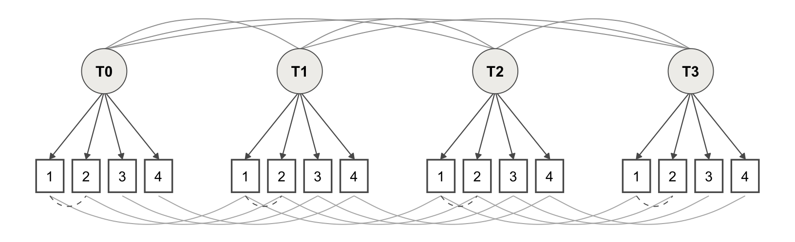
What does the complete model look like? Its syntax, as did_syntax() writes it: first the final model of Chapter 7, part by part, then what this chapter adds, the covariates on the factor of every wave and the contrasts. A label shared by several lines (such as l1, t1 or a1) holds those estimates equal; c(..., ...) gives the control and the experimental group one each:
show_model(did_syntax(fl_status))# Chapter 7: one factor per wave; NA* frees the first loading
F_T0 =~ NA*Flourishing1_T0 +
l1*Flourishing1_T0 +
l2*Flourishing2_T0 +
l3*Flourishing3_T0 +
l4*Flourishing4_T0
F_T1 =~ NA*Flourishing1_T1 +
l1*Flourishing1_T1 +
l2*Flourishing2_T1 +
l3*Flourishing3_T1 +
l4*Flourishing4_T1
F_T2 =~ NA*Flourishing1_T2 +
l1*Flourishing1_T2 +
l2*Flourishing2_T2 +
l3*Flourishing3_T2 +
l4*Flourishing4_T2
F_T3 =~ NA*Flourishing1_T3 +
l1*Flourishing1_T3 +
l2*Flourishing2_T3 +
l3*Flourishing3_T3 +
l4*Flourishing4_T3
# Chapter 7: effects coding: the loadings average 1, the intercepts sum to 0
l1 + l2 + l3 + l4 == 4
t1 + t2 + t3 + t4 == 0
# Chapter 7: the latent means, free in each group
F_T0 ~ c(m_con_T0, m_exp_T0)*1
F_T1 ~ c(m_con_T1, m_exp_T1)*1
F_T2 ~ c(m_con_T2, m_exp_T2)*1
F_T3 ~ c(m_con_T3, m_exp_T3)*1
# Chapter 7: the intercepts
Flourishing1_T0 ~ t1*1
Flourishing2_T0 ~ t2*1
Flourishing3_T0 ~ t3*1
Flourishing4_T0 ~ t4*1
Flourishing1_T1 ~ t1*1
Flourishing2_T1 ~ t2*1
Flourishing3_T1 ~ t3*1
Flourishing4_T1 ~ t4*1
Flourishing1_T2 ~ t1*1
Flourishing2_T2 ~ t2*1
Flourishing3_T2 ~ t3*1
Flourishing4_T2 ~ t4*1
Flourishing1_T3 ~ t1*1
Flourishing2_T3 ~ t2*1
Flourishing3_T3 ~ t3*1
Flourishing4_T3 ~ t4*1
# Chapter 7: the factors correlate over the waves
F_T0 ~~ F_T1
F_T0 ~~ F_T2
F_T0 ~~ F_T3
F_T1 ~~ F_T2
F_T1 ~~ F_T3
F_T2 ~~ F_T3
# Chapter 7: the residual covariances of Chapter 6, at every wave
Flourishing1_T0 ~~ Flourishing2_T0
Flourishing1_T1 ~~ Flourishing2_T1
Flourishing1_T2 ~~ Flourishing2_T2
Flourishing1_T3 ~~ Flourishing2_T3
# Chapter 7: each item's residual with itself over the waves
Flourishing1_T0 ~~ Flourishing1_T1
Flourishing1_T0 ~~ Flourishing1_T2
Flourishing1_T0 ~~ Flourishing1_T3
Flourishing1_T1 ~~ Flourishing1_T2
Flourishing1_T1 ~~ Flourishing1_T3
Flourishing1_T2 ~~ Flourishing1_T3
Flourishing2_T0 ~~ Flourishing2_T1
Flourishing2_T0 ~~ Flourishing2_T2
Flourishing2_T0 ~~ Flourishing2_T3
Flourishing2_T1 ~~ Flourishing2_T2
Flourishing2_T1 ~~ Flourishing2_T3
Flourishing2_T2 ~~ Flourishing2_T3
Flourishing3_T0 ~~ Flourishing3_T1
Flourishing3_T0 ~~ Flourishing3_T2
Flourishing3_T0 ~~ Flourishing3_T3
Flourishing3_T1 ~~ Flourishing3_T2
Flourishing3_T1 ~~ Flourishing3_T3
Flourishing3_T2 ~~ Flourishing3_T3
Flourishing4_T0 ~~ Flourishing4_T1
Flourishing4_T0 ~~ Flourishing4_T2
Flourishing4_T0 ~~ Flourishing4_T3
Flourishing4_T1 ~~ Flourishing4_T2
Flourishing4_T1 ~~ Flourishing4_T3
Flourishing4_T2 ~~ Flourishing4_T3
# added here: age and sex on the factor of every wave
F_T0 ~ age_c + female_c
F_T1 ~ age_c + female_c
F_T2 ~ age_c + female_c
F_T3 ~ age_c + female_c
# added here: every contrast as a parameter
EG_T01 := (m_exp_T1 - m_exp_T0)
CG_T01 := (m_con_T1 - m_con_T0)
DiD_T01 := (m_exp_T1 - m_exp_T0) - (m_con_T1 - m_con_T0)
EG_T02 := (m_exp_T2 - m_exp_T0)
CG_T02 := (m_con_T2 - m_con_T0)
DiD_T02 := (m_exp_T2 - m_exp_T0) - (m_con_T2 - m_con_T0)
EG_T03 := (m_exp_T3 - m_exp_T0)
CG_T03 := (m_con_T3 - m_con_T0)
DiD_T03 := (m_exp_T3 - m_exp_T0) - (m_con_T3 - m_con_T0)
EG_T12 := (m_exp_T2 - m_exp_T1)
CG_T12 := (m_con_T2 - m_con_T1)
DiD_T12 := (m_exp_T2 - m_exp_T1) - (m_con_T2 - m_con_T1)
EG_T13 := (m_exp_T3 - m_exp_T1)
CG_T13 := (m_con_T3 - m_con_T1)
DiD_T13 := (m_exp_T3 - m_exp_T1) - (m_con_T3 - m_con_T1)
EG_T23 := (m_exp_T3 - m_exp_T2)
CG_T23 := (m_con_T3 - m_con_T2)
DiD_T23 := (m_exp_T3 - m_exp_T2) - (m_con_T3 - m_con_T2)
Replication_test := (m_exp_T1 - m_exp_T0) - (m_con_T1 - m_con_T0) + (m_exp_T3 - m_exp_T2) - (m_con_T3 - m_con_T2)Next → Step 2, the model of Chapter 7 again, without the covariates.
Step 2 · The model of Chapter 7 both groups
What is fitted? The model of Chapter 7 with the contrasts, without the covariates:
fl_base <- df_wide |>
sem(model = did_syntax(fl_status, covariates = FALSE), data = _,
group = "condition", estimator = "MLR", missing = "fiml")Does it pass the checks, and is it the model of Chapter 7? The checks of Chapter 7, and its χ² next to that of Chapter 7, Step 8:
fl_base_checks <- model_checks(fl_base)
fl_base_checks| check | what | value | criterion | holds |
|---|---|---|---|---|
| 1 estimation | converged | yes | yes | ✓ |
| 2 variances | smallest residual variance: item 1 at T3 (Control) | .464 | above 0 | ✓ |
| 3 correlations | largest correlation: the factors at T2 and T3 (Experimental) | .959 | within ±1 | ✓ |
| 4 residuals | smallest eigenvalue of the residual covariances | .224 | above 0 | ✓ |
| 5 factors | smallest eigenvalue of the factor covariances | .034 | above 0 | ✓ |
| 6 standard errors | estimated for every free parameter | yes | yes | ✓ |
| 7 fit | CFI | .962 | reported | – |
| 8 fit | RMSEA [90 % interval] | .046 [.034, .058] | reported | – |
| 9 fit | SRMR | .084 | reported | – |
| 10 strain | largest modification index: item 2 with item 3 at T2 (Control) | 13.6 | reported | – |
| 11 estimates | smallest standardized loading: item 4 at T3 (Experimental) | .51 | reported | – |
fl_chapter7 <- invariance$steps |>
filter(construct == "Flourishing", part == "both groups",
level == "intercepts across groups")
tibble(model = c("here", "Chapter 7"),
chisq = c(fitMeasures(fl_base, "chisq.scaled"), fl_chapter7$chisq),
df = c(fitMeasures(fl_base, "df"), fl_chapter7$df)) |>
mutate(chisq = round(chisq, 3))| model | chisq | df |
|---|---|---|
| here | 266.49 | 182 |
| Chapter 7 | 266.49 | 182 |
Checks 1 to 6 hold, and the χ² is that of Chapter 7 (266.490): the model is the one Chapter 7 settled on, and the contrasts add no constraint.
Next → Step 3, the same model with the covariates.
Step 3 · The covariates both groups
What is fitted? The model of Step 1, with age and sex on the factors, and the comparison model, with a direct effect of each on every item at every wave and no path to the factors:
fl_covariates <- df_wide |>
sem(model = did_syntax(fl_status), data = _, group = "condition",
estimator = "MLR", missing = "fiml.x")
fl_everywhere <- df_wide |>
sem(model = direct_everywhere(fl_status), data = _, group = "condition",
estimator = "MLR", missing = "fiml.x")What does the comparison model hold? The model of Chapter 7 from Step 1, and in place of the paths to the factors a direct effect of age and sex on every item at every wave; it needs no contrasts. These are its lines beyond Chapter 7:
show_model(direct_everywhere(fl_status), added_only = TRUE)# added here: age or sex directly on single items
Flourishing1_T0 ~ age_c + female_c
Flourishing2_T0 ~ age_c + female_c
Flourishing3_T0 ~ age_c + female_c
Flourishing4_T0 ~ age_c + female_c
Flourishing1_T1 ~ age_c + female_c
Flourishing2_T1 ~ age_c + female_c
Flourishing3_T1 ~ age_c + female_c
Flourishing4_T1 ~ age_c + female_c
Flourishing1_T2 ~ age_c + female_c
Flourishing2_T2 ~ age_c + female_c
Flourishing3_T2 ~ age_c + female_c
Flourishing4_T2 ~ age_c + female_c
Flourishing1_T3 ~ age_c + female_c
Flourishing2_T3 ~ age_c + female_c
Flourishing3_T3 ~ age_c + female_c
Flourishing4_T3 ~ age_c + female_cDoes the model with the covariates pass the checks?
fl_covariates_checks <- model_checks(fl_covariates)
fl_covariates_checks| check | what | value | criterion | holds |
|---|---|---|---|---|
| 1 estimation | converged | yes | yes | ✓ |
| 2 variances | .090 | above 0 | ✓ | |
| 3 correlations | largest correlation: the factors at T2 and T3 (Experimental) | .997 | within ±1 | ✓ |
| 4 residuals | smallest eigenvalue of the residual covariances | .090 | above 0 | ✓ |
| 5 factors | smallest eigenvalue of the factor covariances | .048 | above 0 | ✓ |
| 6 standard errors | estimated for every free parameter | yes | yes | ✓ |
| 7 fit | CFI | .954 | reported | – |
| 8 fit | RMSEA [90 % interval] | .046 [.035, .056] | reported | – |
| 9 fit | SRMR | .081 | reported | – |
| 10 strain | largest modification index: item 2 with item 3 at T2 (Control) | 12.3 | reported | – |
| 11 estimates | smallest standardized loading: item 4 at T3 (Experimental) | .50 | reported | – |
Checks 1 to 6 hold. Its CFI, .954, stands beside .962 in Step 2, for description only: the two models do not hold the same variables. Do age and sex act only through the factors? The model of Step 1 against the comparison model:
fl_step <- covariate_step(fl_covariates, fl_everywhere)
show_step(fl_step)| model | df | CFI | RMSEA | ΔCFI | ΔRMSEA | p | Chen |
|---|---|---|---|---|---|---|---|
| direct effects on every item | 182 | 0.964 | 0.046 | ||||
| only through the factors | 230 | 0.954 | 0.046 | -0.01 | 0 | 0.01 | ✗ |
They do not: the step lies beyond Chen’s cutoffs (ΔCFI = -.0100, ΔRMSEA = .000). Which item do age or sex move beyond the factor? The score test of each direct effect, summed over the waves and the groups per item and covariate:
fl_score <- score_direct(fl_covariates, "Flourishing")
fl_score |>
mutate(X2 = round(X2, 1))| item | covariate | X2 |
|---|---|---|
| Flourishing3 | age_c | 14.3 |
| Flourishing3 | female_c | 11.9 |
| Flourishing1 | age_c | 11.5 |
| Flourishing2 | age_c | 9.8 |
| Flourishing4 | female_c | 9.2 |
| Flourishing1 | female_c | 6.7 |
| Flourishing4 | age_c | 6.7 |
| Flourishing2 | female_c | 3.4 |
Item 3 strains most, with age (14.3). Its direct effect of age is freed at every wave, in both groups; in the syntax, these lines are added:
fl_direct <- "Flourishing3 age_c"
syntax_changes(did_syntax(fl_status),
did_syntax(fl_status, direct = fl_direct))
+ Flourishing3_T0 ~ age_c
+ Flourishing3_T1 ~ age_c
+ Flourishing3_T2 ~ age_c
+ Flourishing3_T3 ~ age_cfl_covariates <- df_wide |>
sem(model = did_syntax(fl_status, direct = fl_direct), data = _,
group = "condition", estimator = "MLR", missing = "fiml.x")
fl_step <- covariate_step(fl_covariates, fl_everywhere)
show_step(fl_step)| model | df | CFI | RMSEA | ΔCFI | ΔRMSEA | p | Chen |
|---|---|---|---|---|---|---|---|
| direct effects on every item | 182 | 0.964 | 0.046 | ||||
| only through the factors | 222 | 0.958 | 0.044 | -0.006 | -0.001 | 0.082 | ✓ |
With the direct effect of age on item 3 free, the step holds (ΔCFI = -.006, ΔRMSEA = -.001), and the solution is possible. The latent means stay adjusted for age and sex, now with item 3 answered differently by age at the same level of the construct.
fl_fit <- fl_covariates # the model of Steps 4 to 8Next → Step 4, the latent means of this model.
The effects · Steps 4 to 6
Step 4 · Latent means both groups
Where does each group stand at each wave? The eight latent means with their 95 % confidence intervals, at the sample’s average age and share of women:
fl_means <- parameterEstimates(fl_fit) |>
filter(op == "~1", str_starts(lhs, "F_")) |>
select(label, est, se, ci.lower, ci.upper)
# the contrasts between them, for Steps 4 to 6
fl_contrasts <- contrasts_of(fl_fit, c(
"EG_T01", "CG_T01", "DiD_T01", "EG_T23", "CG_T23", "DiD_T23",
"Replication_test", "CG_T02", "CG_T12"))
fl_means |>
mutate(across(where(is.double), \(x) round(x, 2)))| label | est | se | ci.lower | ci.upper |
|---|---|---|---|---|
| m_con_T0 | 7.82 | 0.11 | 7.61 | 8.03 |
| m_con_T1 | 8.11 | 0.11 | 7.89 | 8.34 |
| m_con_T2 | 8.07 | 0.11 | 7.86 | 8.29 |
| m_con_T3 | 8.50 | 0.11 | 8.29 | 8.71 |
| m_exp_T0 | 7.69 | 0.12 | 7.46 | 7.93 |
| m_exp_T1 | 8.13 | 0.13 | 7.88 | 8.38 |
| m_exp_T2 | 8.06 | 0.12 | 7.83 | 8.30 |
| m_exp_T3 | 7.95 | 0.17 | 7.62 | 8.28 |
plot_latent_means(fl_fit)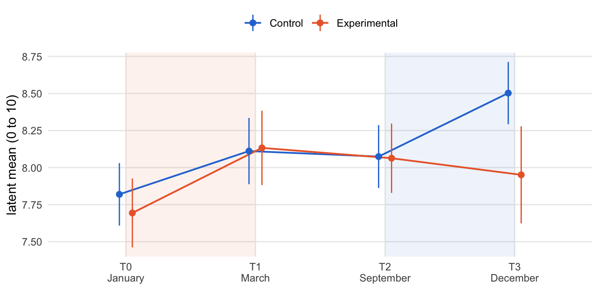
In January the experimental group lies at 7.69, the control group at 7.82. While the experimental group trains (T0 to T1), it changes by .44 and the control group by .29; while the control group trains (T2 to T3), it changes by .43 and the experimental group by -.11.
Next → Step 5, the difference of these changes: the training effects.
Step 5 · The training effects both groups
How much more does the trained group change? The change of each group in the two training windows, and their difference, as a table and as a figure:
fl_contrasts |>
filter(label %in% c("EG_T01", "CG_T01", "DiD_T01",
"EG_T23", "CG_T23", "DiD_T23")) |>
mutate(across(where(is.double), \(x) round(x, 3)))| label | est | se | pvalue | ci.lower | ci.upper |
|---|---|---|---|---|---|
| EG_T01 | 0.439 | 0.125 | 0.000 | 0.194 | 0.684 |
| CG_T01 | 0.292 | 0.111 | 0.008 | 0.075 | 0.509 |
| DiD_T01 | 0.147 | 0.166 | 0.377 | -0.179 | 0.474 |
| EG_T23 | -0.112 | 0.162 | 0.489 | -0.429 | 0.205 |
| CG_T23 | 0.428 | 0.121 | 0.000 | 0.192 | 0.665 |
| DiD_T23 | -0.540 | 0.200 | 0.007 | -0.932 | -0.148 |
plot_did(fl_fit)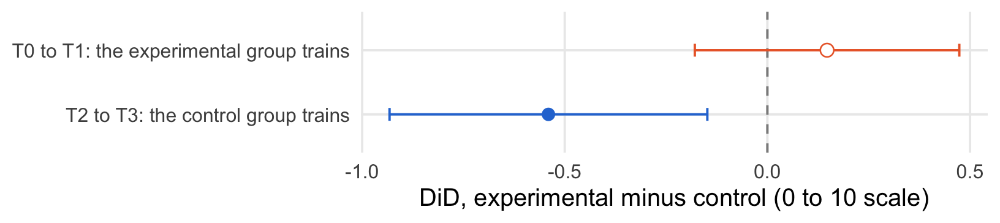
While the experimental group trains, DiD = .15 (p = .377), not significant. While the control group trains, DiD = -.54 (p = .007), the mirrored effect, significant.
How large are the effects? The latent d, with the latent standard deviation at T0 pooled over the two groups:
fl_sd_T0 <- pooled_sd_T0(fl_fit)
fl_contrasts |>
filter(label %in% c("DiD_T01", "DiD_T23")) |>
transmute(label, DiD = est, d = est / fl_sd_T0, size = cohen(d)) |>
mutate(across(where(is.double), \(x) round(x, 2)))| label | DiD | d | size |
|---|---|---|---|
| DiD_T01 | 0.15 | 0.11 | negligible |
| DiD_T23 | -0.54 | -0.39 | small |
The pooled latent SD at T0 is 1.38; in its units the first effect is d = .11, negligible, and the second d = -.39, small. Do the two training effects cancel out? The replication test, DiD (T0 to T1) + DiD (T2 to T3):
fl_contrasts |>
filter(label == "Replication_test") |>
mutate(across(where(is.double), \(x) round(x, 3)))| label | est | se | pvalue | ci.lower | ci.upper |
|---|---|---|---|---|---|
| Replication_test | -0.393 | 0.26 | 0.13 | -0.902 | 0.116 |
The two effects do not detectably differ: their sum is -.39 (p = .130).
Next → Step 6, how the control group changes while it waits.
Step 6 · Drift of the control group control
Does the control group change while it waits? Its change from T0 to T1, T0 to T2 and T1 to T2:
fl_contrasts |>
filter(label %in% c("CG_T01", "CG_T02", "CG_T12")) |>
mutate(across(where(is.double), \(x) round(x, 3)))| label | est | se | pvalue | ci.lower | ci.upper |
|---|---|---|---|---|---|
| CG_T01 | 0.292 | 0.111 | 0.008 | 0.075 | 0.509 |
| CG_T02 | 0.255 | 0.126 | 0.044 | 0.007 | 0.502 |
| CG_T12 | -0.037 | 0.117 | 0.750 | -0.266 | 0.191 |
The control group changes significantly from T0 to T1 and T0 to T2 before its own training; the change from T0 to T1, which the first DiD subtracts, is .29 (p = .008).
Next → Step 7, whether the latent means stay level outside the training.
Robustness · Steps 7 and 8
Step 7 · The restricted model both groups
Do the latent means stay level outside the training? The model of Steps 4 to 6 against the same model with the four equality constraints, from the script; its free model is the model of Steps 4 to 6, with the same χ²:
fl_restricted <- restricted |> filter(construct == "Flourishing")
fl_restricted |>
transmute(`χ² free` = chisq_free, `χ² restricted` = chisq_restricted,
`Δχ²` = delta_chisq, Δdf = delta_df, p, admissible) |>
mutate(across(where(is.double), \(x) round(x, 3)))| χ² free | χ² restricted | Δχ² | Δdf | p | admissible |
|---|---|---|---|---|---|
| 318.825 | 326.675 | 7.541 | 4 | 0.11 | TRUE |
The four constraints cost Δχ²(4) = 7.54 (p = .110), and the data do not reject them: the latent means stay level outside the training.
Next → Step 8, the two effects on the sample sets.
Step 8 · The sample sets both groups
Do the effects hold on every sample set? The two training effects on the nine sample sets, from the script, as a figure and as a table; S0 is the model of Steps 4 to 6:
fl_sets <- latent_sets |> filter(construct == "Flourishing")
plot_sets(fl_sets)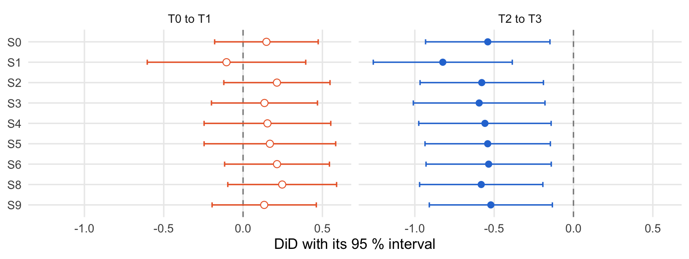
fl_sets |>
unnest(estimates) |>
filter(label %in% c("DiD_T01", "DiD_T23")) |>
select(set, admissible, label, est, pvalue) |>
pivot_wider(names_from = label, values_from = c(est, pvalue),
names_glue = "{label}_{.value}") |>
select(set, admissible, starts_with("DiD_T01"), starts_with("DiD_T23")) |>
mutate(across(where(is.double), \(x) round(x, 3)))| set | admissible | DiD_T01_est | DiD_T01_pvalue | DiD_T23_est | DiD_T23_pvalue |
|---|---|---|---|---|---|
| S0 | TRUE | 0.147 | 0.377 | -0.540 | 0.007 |
| S1 | TRUE | -0.104 | 0.682 | -0.824 | 0.000 |
| S2 | TRUE | 0.213 | 0.212 | -0.578 | 0.004 |
| S3 | TRUE | 0.135 | 0.429 | -0.594 | 0.005 |
| S4 | TRUE | 0.154 | 0.451 | -0.558 | 0.009 |
| S5 | TRUE | 0.169 | 0.424 | -0.541 | 0.007 |
| S6 | TRUE | 0.214 | 0.204 | -0.535 | 0.008 |
| S8 | TRUE | 0.247 | 0.159 | -0.581 | 0.003 |
| S9 | TRUE | 0.133 | 0.427 | -0.521 | 0.008 |
The effect of the first window is significant in the expected direction in 0 of the nine sets, the mirrored effect of the second window in 9.
Next → Step 9, what the steps show together.
What follows · Step 9
Step 9 · What follows
What does Flourishing show? The two training effects side by side, T0–T1 while the experimental group trains and T2–T3 while the control group trains, with the correction for testing all 20 constructs at once (11.7) and the nine sample sets of Step 8:
fl_verdict <- verdict_table("Flourishing", fl_est, fl_p, fl_d, fl_sets)
show_verdict(fl_verdict)| window | DiD | d | size | p | p corrected | sets with the effect | range in sets |
|---|---|---|---|---|---|---|---|
| T0–T1 | 0.15 | 0.11 | negligible | 0.377 | 0.541 | 0 of 9 | -.10 to .25 |
| T2–T3 | -0.54 | -0.39 | small | 0.007 | 0.056 | 9 of 9 | -.82 to -.52 |
Flourishing shows the training effect when the control group trains, not in the first round. While the experimental group trains, its latent mean changes by .44 points, that of the control group by .29; the difference is not significant (DiD = .15, p = .377). When the control group trains, it gains .54 points more than the experimental group (d = .39, small; p = .007). After the correction for testing 20 constructs it stays just above the threshold (adjusted p = .056); across the sample sets its estimate ranges from -.82 to -.52, significant in 9 of 9. The two rounds do not detectably differ (replication test, p = .130). The control group also changes before its own training (T0 to T1: .29, p = .008; T0 to T2: .25, p = .044), but the restricted model of Step 7, with level means outside the training, still holds (p = .110).
What goes on to Chapter 20? The model and the two effects:
fl_result <- tibble(construct = "Flourishing",
covariates = TRUE,
direct = list(fl_direct),
fit = list(fl_fit))
fl_result |>
transmute(construct, covariates, direct = map_chr(direct, str_flatten, "; "))| construct | covariates | direct |
|---|---|---|
| Flourishing | TRUE | Flourishing3 age_c |
Flourishing enters the synthesis of Chapter 20 with both effects, adjusted for age and sex, with the direct effect of Step 3.
Autonomy Satisfaction
Its path through the steps. One row per step below; the label marks the data of each step:
| Step | Data | Question | Result | Next |
|---|---|---|---|---|
| 1 | both groups | What is added to Chapter 7? | covariates, contrasts | Chapter 7’s model |
| 2 | both groups | Chapter 7’s model possible, as there? | yes, the same χ² | covariates |
| 3 | both groups | Covariates only through the factors? | yes | latent means |
| 4 | both groups | Latent means | – | effects |
| 5 | both groups | Training effects | T0–T1: positive, p < .05; T2–T3: n.s. | drift |
| 6 | control | Drift while waiting? | yes, T1 to T2 | robustness |
| 7 | both groups | Level outside the training? | yes | sample sets |
| 8 | both groups | Effects on the sample sets? | T0–T1: 9 of 9; T2–T3: 0 of 9 | what follows |
| 9 | What does it show? | T0–T1: effect, also corrected | Chapter 20 |
The model · Steps 1 to 3
Step 1 · The model both groups
Which model does Chapter 7 hand on? Its status there: the estimates the stop rule set at 0, the items freed, and the autocorrelations:
as_status <- invariance$adopted |>
filter(construct == "AutonomySatisfaction")
as_status |>
transmute(status, set_to_0 = map_chr(set_to_0, \(x) str_flatten(x, "; ")),
freed = map_chr(freed, \(x) str_flatten(x, "; ")))| status | set_to_0 | freed |
|---|---|---|
| partial | Control: AutonomySatisfaction2 loadings; Control: AutonomySatisfaction2 intercepts |
What does the model look like? In the figure, the factors of the four waves (circles), the items (boxes) and their loadings, the links of the factors (above) and of each item with itself at the next wave (below); in green, the estimates the stop rule of Chapter 7 set at 0 in one group:
plot_model("AutonomySatisfaction",
fixed = str_remove(as_status$set_to_0[[1]], "^[A-Za-z]+: "))
What does the complete model look like? Its syntax, as did_syntax() writes it: first the final model of Chapter 7, part by part, then what this chapter adds, the covariates on the factor of every wave and the contrasts. A label shared by several lines (such as l1, t1 or a1) holds those estimates equal; c(..., ...) gives the control and the experimental group one each:
show_model(did_syntax(as_status))# Chapter 7: one factor per wave; NA* frees the first loading
F_T0 =~ NA*AutonomySatisfaction1_T0 +
l1*AutonomySatisfaction1_T0 +
c(l2_T0_con, l2)*AutonomySatisfaction2_T0 +
l3*AutonomySatisfaction3_T0 +
l4*AutonomySatisfaction4_T0
F_T1 =~ NA*AutonomySatisfaction1_T1 +
l1*AutonomySatisfaction1_T1 +
c(l2_T1_con, l2)*AutonomySatisfaction2_T1 +
l3*AutonomySatisfaction3_T1 +
l4*AutonomySatisfaction4_T1
F_T2 =~ NA*AutonomySatisfaction1_T2 +
l1*AutonomySatisfaction1_T2 +
c(l2_T2_con, l2)*AutonomySatisfaction2_T2 +
l3*AutonomySatisfaction3_T2 +
l4*AutonomySatisfaction4_T2
F_T3 =~ NA*AutonomySatisfaction1_T3 +
l1*AutonomySatisfaction1_T3 +
c(l2_T3_con, l2)*AutonomySatisfaction2_T3 +
l3*AutonomySatisfaction3_T3 +
l4*AutonomySatisfaction4_T3
# Chapter 7: effects coding: the loadings average 1, the intercepts sum to 0
l1 + l3 + l4 == 3
t1 + t3 + t4 == 0
# Chapter 7: the latent means, free in each group
F_T0 ~ c(m_con_T0, m_exp_T0)*1
F_T1 ~ c(m_con_T1, m_exp_T1)*1
F_T2 ~ c(m_con_T2, m_exp_T2)*1
F_T3 ~ c(m_con_T3, m_exp_T3)*1
# Chapter 7: the intercepts
AutonomySatisfaction1_T0 ~ t1*1
AutonomySatisfaction2_T0 ~ c(t2_T0_con, t2)*1
AutonomySatisfaction3_T0 ~ t3*1
AutonomySatisfaction4_T0 ~ t4*1
AutonomySatisfaction1_T1 ~ t1*1
AutonomySatisfaction2_T1 ~ c(t2_T1_con, t2)*1
AutonomySatisfaction3_T1 ~ t3*1
AutonomySatisfaction4_T1 ~ t4*1
AutonomySatisfaction1_T2 ~ t1*1
AutonomySatisfaction2_T2 ~ c(t2_T2_con, t2)*1
AutonomySatisfaction3_T2 ~ t3*1
AutonomySatisfaction4_T2 ~ t4*1
AutonomySatisfaction1_T3 ~ t1*1
AutonomySatisfaction2_T3 ~ c(t2_T3_con, t2)*1
AutonomySatisfaction3_T3 ~ t3*1
AutonomySatisfaction4_T3 ~ t4*1
# Chapter 7: the factors correlate over the waves
F_T0 ~~ F_T1
F_T0 ~~ F_T2
F_T0 ~~ F_T3
F_T1 ~~ F_T2
F_T1 ~~ F_T3
F_T2 ~~ F_T3
# Chapter 7: each item's residual with itself over the waves
AutonomySatisfaction1_T0 ~~ AutonomySatisfaction1_T1
AutonomySatisfaction1_T0 ~~ AutonomySatisfaction1_T2
AutonomySatisfaction1_T0 ~~ AutonomySatisfaction1_T3
AutonomySatisfaction1_T1 ~~ AutonomySatisfaction1_T2
AutonomySatisfaction1_T1 ~~ AutonomySatisfaction1_T3
AutonomySatisfaction1_T2 ~~ AutonomySatisfaction1_T3
AutonomySatisfaction2_T0 ~~ AutonomySatisfaction2_T1
AutonomySatisfaction2_T0 ~~ AutonomySatisfaction2_T2
AutonomySatisfaction2_T0 ~~ AutonomySatisfaction2_T3
AutonomySatisfaction2_T1 ~~ AutonomySatisfaction2_T2
AutonomySatisfaction2_T1 ~~ AutonomySatisfaction2_T3
AutonomySatisfaction2_T2 ~~ AutonomySatisfaction2_T3
AutonomySatisfaction3_T0 ~~ AutonomySatisfaction3_T1
AutonomySatisfaction3_T0 ~~ AutonomySatisfaction3_T2
AutonomySatisfaction3_T0 ~~ AutonomySatisfaction3_T3
AutonomySatisfaction3_T1 ~~ AutonomySatisfaction3_T2
AutonomySatisfaction3_T1 ~~ AutonomySatisfaction3_T3
AutonomySatisfaction3_T2 ~~ AutonomySatisfaction3_T3
AutonomySatisfaction4_T0 ~~ AutonomySatisfaction4_T1
AutonomySatisfaction4_T0 ~~ AutonomySatisfaction4_T2
AutonomySatisfaction4_T0 ~~ AutonomySatisfaction4_T3
AutonomySatisfaction4_T1 ~~ AutonomySatisfaction4_T2
AutonomySatisfaction4_T1 ~~ AutonomySatisfaction4_T3
AutonomySatisfaction4_T2 ~~ AutonomySatisfaction4_T3
# added here: age and sex on the factor of every wave
F_T0 ~ age_c + female_c
F_T1 ~ age_c + female_c
F_T2 ~ age_c + female_c
F_T3 ~ age_c + female_c
# added here: every contrast as a parameter
EG_T01 := (m_exp_T1 - m_exp_T0)
CG_T01 := (m_con_T1 - m_con_T0)
DiD_T01 := (m_exp_T1 - m_exp_T0) - (m_con_T1 - m_con_T0)
EG_T02 := (m_exp_T2 - m_exp_T0)
CG_T02 := (m_con_T2 - m_con_T0)
DiD_T02 := (m_exp_T2 - m_exp_T0) - (m_con_T2 - m_con_T0)
EG_T03 := (m_exp_T3 - m_exp_T0)
CG_T03 := (m_con_T3 - m_con_T0)
DiD_T03 := (m_exp_T3 - m_exp_T0) - (m_con_T3 - m_con_T0)
EG_T12 := (m_exp_T2 - m_exp_T1)
CG_T12 := (m_con_T2 - m_con_T1)
DiD_T12 := (m_exp_T2 - m_exp_T1) - (m_con_T2 - m_con_T1)
EG_T13 := (m_exp_T3 - m_exp_T1)
CG_T13 := (m_con_T3 - m_con_T1)
DiD_T13 := (m_exp_T3 - m_exp_T1) - (m_con_T3 - m_con_T1)
EG_T23 := (m_exp_T3 - m_exp_T2)
CG_T23 := (m_con_T3 - m_con_T2)
DiD_T23 := (m_exp_T3 - m_exp_T2) - (m_con_T3 - m_con_T2)
Replication_test := (m_exp_T1 - m_exp_T0) - (m_con_T1 - m_con_T0) + (m_exp_T3 - m_exp_T2) - (m_con_T3 - m_con_T2)Next → Step 2, the model of Chapter 7 again, without the covariates.
Step 2 · The model of Chapter 7 both groups
What is fitted? The model of Chapter 7 with the contrasts, without the covariates:
as_base <- df_wide |>
sem(model = did_syntax(as_status, covariates = FALSE), data = _,
group = "condition", estimator = "MLR", missing = "fiml")Does it pass the checks, and is it the model of Chapter 7? The checks of Chapter 7, and its χ² next to that of Chapter 7, Step 8:
as_base_checks <- model_checks(as_base)
as_base_checks| check | what | value | criterion | holds |
|---|---|---|---|---|
| 1 estimation | converged | yes | yes | ✓ |
| 2 variances | smallest residual variance: item 3 at T3 (Control) | .383 | above 0 | ✓ |
| 3 correlations | largest correlation: the factors at T2 and T3 (Control) | .871 | within ±1 | ✓ |
| 4 residuals | smallest eigenvalue of the residual covariances | .308 | above 0 | ✓ |
| 5 factors | smallest eigenvalue of the factor covariances | .068 | above 0 | ✓ |
| 6 standard errors | estimated for every free parameter | yes | yes | ✓ |
| 7 fit | CFI | .936 | reported | – |
| 8 fit | RMSEA [90 % interval] | .051 [.039, .061] | reported | – |
| 9 fit | SRMR | .107 | reported | – |
| 10 strain | largest modification index: item 4 with item 2 at T1 (Control) | 21.0 | reported | – |
| 11 estimates | smallest standardized loading: item 2 at T2 (Control) | .42 | reported | – |
as_chapter7 <- invariance$steps |>
filter(construct == "AutonomySatisfaction", part == "both groups",
level == "intercepts across groups")
tibble(model = c("here", "Chapter 7"),
chisq = c(fitMeasures(as_base, "chisq.scaled"), as_chapter7$chisq),
df = c(fitMeasures(as_base, "df"), as_chapter7$df)) |>
mutate(chisq = round(chisq, 3))| model | chisq | df |
|---|---|---|
| here | 269.987 | 182 |
| Chapter 7 | 269.987 | 182 |
Checks 1 to 6 hold, and the χ² is that of Chapter 7 (269.987): the model is the one Chapter 7 settled on, and the contrasts add no constraint.
Next → Step 3, the same model with the covariates.
Step 3 · The covariates both groups
What is fitted? The model of Step 1, with age and sex on the factors, and the comparison model, with a direct effect of each on every item at every wave and no path to the factors:
as_covariates <- df_wide |>
sem(model = did_syntax(as_status), data = _, group = "condition",
estimator = "MLR", missing = "fiml.x")
as_everywhere <- df_wide |>
sem(model = direct_everywhere(as_status), data = _, group = "condition",
estimator = "MLR", missing = "fiml.x")What does the comparison model hold? The model of Chapter 7 from Step 1, and in place of the paths to the factors a direct effect of age and sex on every item at every wave; it needs no contrasts. These are its lines beyond Chapter 7:
show_model(direct_everywhere(as_status), added_only = TRUE)# added here: age or sex directly on single items
AutonomySatisfaction1_T0 ~ age_c + female_c
AutonomySatisfaction2_T0 ~ age_c + female_c
AutonomySatisfaction3_T0 ~ age_c + female_c
AutonomySatisfaction4_T0 ~ age_c + female_c
AutonomySatisfaction1_T1 ~ age_c + female_c
AutonomySatisfaction2_T1 ~ age_c + female_c
AutonomySatisfaction3_T1 ~ age_c + female_c
AutonomySatisfaction4_T1 ~ age_c + female_c
AutonomySatisfaction1_T2 ~ age_c + female_c
AutonomySatisfaction2_T2 ~ age_c + female_c
AutonomySatisfaction3_T2 ~ age_c + female_c
AutonomySatisfaction4_T2 ~ age_c + female_c
AutonomySatisfaction1_T3 ~ age_c + female_c
AutonomySatisfaction2_T3 ~ age_c + female_c
AutonomySatisfaction3_T3 ~ age_c + female_c
AutonomySatisfaction4_T3 ~ age_c + female_cDoes the model with the covariates pass the checks?
as_covariates_checks <- model_checks(as_covariates)
as_covariates_checks| check | what | value | criterion | holds |
|---|---|---|---|---|
| 1 estimation | converged | yes | yes | ✓ |
| 2 variances | .090 | above 0 | ✓ | |
| 3 correlations | largest correlation: the factors at T2 and T3 (Control) | .871 | within ±1 | ✓ |
| 4 residuals | smallest eigenvalue of the residual covariances | .089 | above 0 | ✓ |
| 5 factors | smallest eigenvalue of the factor covariances | .074 | above 0 | ✓ |
| 6 standard errors | estimated for every free parameter | yes | yes | ✓ |
| 7 fit | CFI | .931 | reported | – |
| 8 fit | RMSEA [90 % interval] | .047 [.037, .057] | reported | – |
| 9 fit | SRMR | .098 | reported | – |
| 10 strain | largest modification index: item 4 with item 2 at T1 (Control) | 21.5 | reported | – |
| 11 estimates | smallest standardized loading: item 2 at T2 (Control) | .43 | reported | – |
Checks 1 to 6 hold. Its CFI, .931, stands beside .936 in Step 2, for description only: the two models do not hold the same variables. Do age and sex act only through the factors? The model of Step 1 against the comparison model:
as_step <- covariate_step(as_covariates, as_everywhere)
show_step(as_step)| model | df | CFI | RMSEA | ΔCFI | ΔRMSEA | p | Chen |
|---|---|---|---|---|---|---|---|
| direct effects on every item | 182 | 0.938 | 0.050 | ||||
| only through the factors | 230 | 0.931 | 0.047 | -0.007 | -0.003 | 0.055 | ✓ |
They do, under Chen’s cutoffs (ΔCFI = -.007, ΔRMSEA = -.003; χ² test: p = .055): the covariates enter as specified.
as_fit <- as_covariates # the model of Steps 4 to 8Next → Step 4, the latent means of this model.
The effects · Steps 4 to 6
Step 4 · Latent means both groups
Where does each group stand at each wave? The eight latent means with their 95 % confidence intervals, at the sample’s average age and share of women:
as_means <- parameterEstimates(as_fit) |>
filter(op == "~1", str_starts(lhs, "F_")) |>
select(label, est, se, ci.lower, ci.upper)
# the contrasts between them, for Steps 4 to 6
as_contrasts <- contrasts_of(as_fit, c(
"EG_T01", "CG_T01", "DiD_T01", "EG_T23", "CG_T23", "DiD_T23",
"Replication_test", "CG_T02", "CG_T12"))
as_means |>
mutate(across(where(is.double), \(x) round(x, 2)))| label | est | se | ci.lower | ci.upper |
|---|---|---|---|---|
| m_con_T0 | 8.33 | 0.10 | 8.13 | 8.52 |
| m_con_T1 | 8.28 | 0.10 | 8.08 | 8.49 |
| m_con_T2 | 8.56 | 0.11 | 8.35 | 8.77 |
| m_con_T3 | 8.80 | 0.09 | 8.63 | 8.98 |
| m_exp_T0 | 8.05 | 0.11 | 7.83 | 8.27 |
| m_exp_T1 | 8.39 | 0.10 | 8.21 | 8.58 |
| m_exp_T2 | 8.32 | 0.13 | 8.07 | 8.56 |
| m_exp_T3 | 8.42 | 0.14 | 8.15 | 8.70 |
plot_latent_means(as_fit)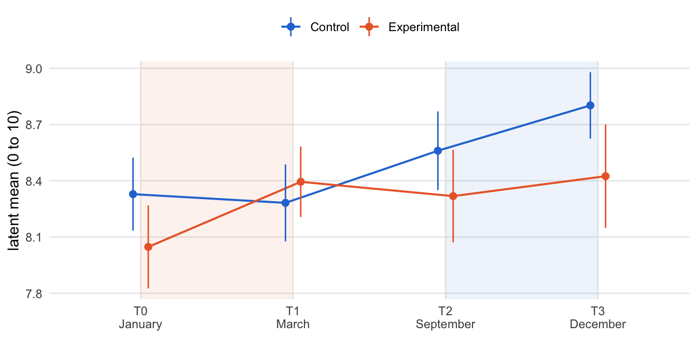
In January the experimental group lies at 8.05, the control group at 8.33. While the experimental group trains (T0 to T1), it changes by .35 and the control group by -.05; while the control group trains (T2 to T3), it changes by .24 and the experimental group by .11.
Next → Step 5, the difference of these changes: the training effects.
Step 5 · The training effects both groups
How much more does the trained group change? The change of each group in the two training windows, and their difference, as a table and as a figure:
as_contrasts |>
filter(label %in% c("EG_T01", "CG_T01", "DiD_T01",
"EG_T23", "CG_T23", "DiD_T23")) |>
mutate(across(where(is.double), \(x) round(x, 3)))| label | est | se | pvalue | ci.lower | ci.upper |
|---|---|---|---|---|---|
| EG_T01 | 0.347 | 0.085 | 0.000 | 0.180 | 0.514 |
| CG_T01 | -0.047 | 0.108 | 0.665 | -0.257 | 0.164 |
| DiD_T01 | 0.394 | 0.137 | 0.004 | 0.125 | 0.662 |
| EG_T23 | 0.106 | 0.140 | 0.448 | -0.168 | 0.381 |
| CG_T23 | 0.242 | 0.084 | 0.004 | 0.076 | 0.407 |
| DiD_T23 | -0.136 | 0.163 | 0.405 | -0.455 | 0.184 |
plot_did(as_fit)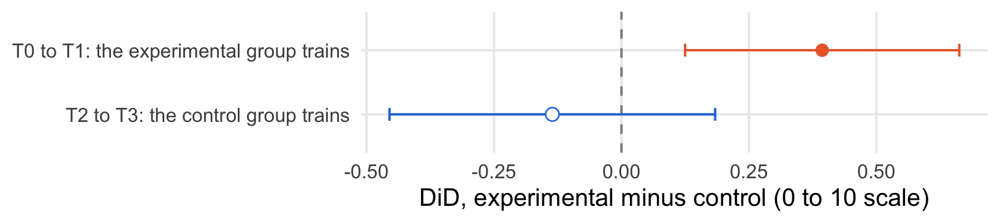
While the experimental group trains, DiD = .39 (p = .004), a significant effect of the training. While the control group trains, DiD = -.14 (p = .405), not significant.
How large are the effects? The latent d, with the latent standard deviation at T0 pooled over the two groups:
as_sd_T0 <- pooled_sd_T0(as_fit)
as_contrasts |>
filter(label %in% c("DiD_T01", "DiD_T23")) |>
transmute(label, DiD = est, d = est / as_sd_T0, size = cohen(d)) |>
mutate(across(where(is.double), \(x) round(x, 2)))| label | DiD | d | size |
|---|---|---|---|
| DiD_T01 | 0.39 | 0.33 | small |
| DiD_T23 | -0.14 | -0.11 | negligible |
The pooled latent SD at T0 is 1.20; in its units the first effect is d = .33, small, and the second d = -.11, negligible. Do the two training effects cancel out? The replication test, DiD (T0 to T1) + DiD (T2 to T3):
as_contrasts |>
filter(label == "Replication_test") |>
mutate(across(where(is.double), \(x) round(x, 3)))| label | est | se | pvalue | ci.lower | ci.upper |
|---|---|---|---|---|---|
| Replication_test | 0.258 | 0.21 | 0.219 | -0.154 | 0.67 |
The two effects do not detectably differ: their sum is .26 (p = .219).
Next → Step 6, how the control group changes while it waits.
Step 6 · Drift of the control group control
Does the control group change while it waits? Its change from T0 to T1, T0 to T2 and T1 to T2:
as_contrasts |>
filter(label %in% c("CG_T01", "CG_T02", "CG_T12")) |>
mutate(across(where(is.double), \(x) round(x, 3)))| label | est | se | pvalue | ci.lower | ci.upper |
|---|---|---|---|---|---|
| CG_T01 | -0.047 | 0.108 | 0.665 | -0.257 | 0.164 |
| CG_T02 | 0.231 | 0.127 | 0.067 | -0.017 | 0.479 |
| CG_T12 | 0.278 | 0.106 | 0.009 | 0.070 | 0.486 |
The control group changes significantly from T1 to T2 before its own training; the change from T0 to T1, which the first DiD subtracts, is -.05 (p = .665).
Next → Step 7, whether the latent means stay level outside the training.
Robustness · Steps 7 and 8
Step 7 · The restricted model both groups
Do the latent means stay level outside the training? The model of Steps 4 to 6 against the same model with the four equality constraints, from the script; its free model is the model of Steps 4 to 6, with the same χ²:
as_restricted <- restricted |> filter(construct == "AutonomySatisfaction")
as_restricted |>
transmute(`χ² free` = chisq_free, `χ² restricted` = chisq_restricted,
`Δχ²` = delta_chisq, Δdf = delta_df, p, admissible) |>
mutate(across(where(is.double), \(x) round(x, 3)))| χ² free | χ² restricted | Δχ² | Δdf | p | admissible |
|---|---|---|---|---|---|
| 337.834 | 343.783 | 5.949 | 4 | 0.203 | TRUE |
The four constraints cost Δχ²(4) = 5.95 (p = .203), and the data do not reject them: the latent means stay level outside the training.
Next → Step 8, the two effects on the sample sets.
Step 8 · The sample sets both groups
Do the effects hold on every sample set? The two training effects on the nine sample sets, from the script, as a figure and as a table; S0 is the model of Steps 4 to 6:
as_sets <- latent_sets |> filter(construct == "AutonomySatisfaction")
plot_sets(as_sets)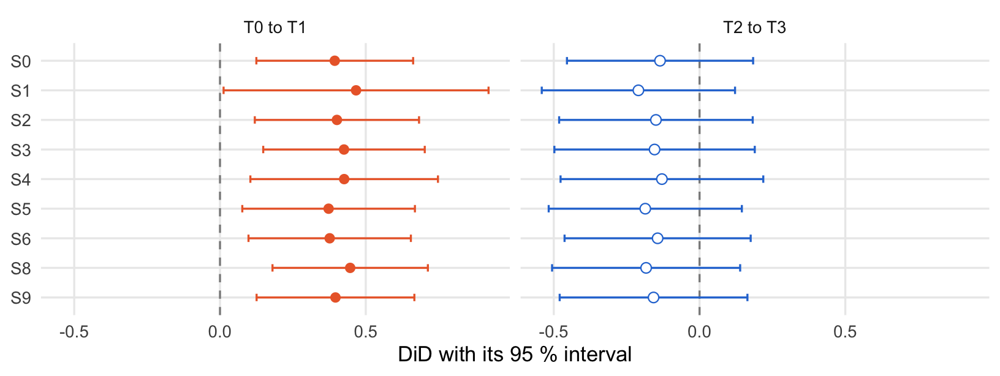
as_sets |>
unnest(estimates) |>
filter(label %in% c("DiD_T01", "DiD_T23")) |>
select(set, admissible, label, est, pvalue) |>
pivot_wider(names_from = label, values_from = c(est, pvalue),
names_glue = "{label}_{.value}") |>
select(set, admissible, starts_with("DiD_T01"), starts_with("DiD_T23")) |>
mutate(across(where(is.double), \(x) round(x, 3)))| set | admissible | DiD_T01_est | DiD_T01_pvalue | DiD_T23_est | DiD_T23_pvalue |
|---|---|---|---|---|---|
| S0 | TRUE | 0.394 | 0.004 | -0.136 | 0.405 |
| S1 | TRUE | 0.467 | 0.044 | -0.210 | 0.215 |
| S2 | TRUE | 0.401 | 0.005 | -0.150 | 0.377 |
| S3 | TRUE | 0.425 | 0.003 | -0.154 | 0.379 |
| S4 | TRUE | 0.426 | 0.009 | -0.129 | 0.467 |
| S5 | TRUE | 0.373 | 0.014 | -0.186 | 0.271 |
| S6 | TRUE | 0.376 | 0.008 | -0.144 | 0.377 |
| S8 | TRUE | 0.447 | 0.001 | -0.183 | 0.265 |
| S9 | TRUE | 0.396 | 0.004 | -0.158 | 0.337 |
The effect of the first window is significant in the expected direction in 9 of the nine sets, the mirrored effect of the second window in 0.
Next → Step 9, what the steps show together.
What follows · Step 9
Step 9 · What follows
What does Autonomy Satisfaction show? The two training effects side by side, T0–T1 while the experimental group trains and T2–T3 while the control group trains, with the correction for testing all 20 constructs at once (11.7) and the nine sample sets of Step 8:
as_verdict <- verdict_table("AutonomySatisfaction", as_est, as_p, as_d, as_sets)
show_verdict(as_verdict)| window | DiD | d | size | p | p corrected | sets with the effect | range in sets |
|---|---|---|---|---|---|---|---|
| T0–T1 | 0.39 | 0.33 | small | 0.004 | 0.021 | 9 of 9 | .37 to .47 |
| T2–T3 | -0.14 | -0.11 | negligible | 0.405 | 0.624 | 0 of 9 | -.21 to -.13 |
Autonomy Satisfaction shows the training effect while the experimental group trains, not when the control group trains. While the experimental group trains, it gains .39 points more than the control group (d = .33, small; p = .004). It holds after the correction for testing 20 constructs (adjusted p = .021) and in 9 of 9 sample sets. When the control group trains, its latent mean changes by .24 points, that of the experimental group by .11; the difference is not significant (DiD = -.14, p = .405). The two rounds do not detectably differ (replication test, p = .219). The control group also changes before its own training (T1 to T2: .28, p = .009), but the restricted model of Step 7, with level means outside the training, still holds (p = .203).
What goes on to Chapter 20? The model and the two effects:
as_result <- tibble(construct = "AutonomySatisfaction",
covariates = TRUE,
direct = list(character()),
fit = list(as_fit))
as_result |>
transmute(construct, covariates, direct = map_chr(direct, str_flatten, "; "))| construct | covariates | direct |
|---|---|---|
| AutonomySatisfaction | TRUE |
Autonomy Satisfaction enters the synthesis of Chapter 20 with both effects, adjusted for age and sex.
Relatedness Satisfaction
Its path through the steps. One row per step below; the label marks the data of each step:
| Step | Data | Question | Result | Next |
|---|---|---|---|---|
| 1 | both groups | What is added to Chapter 7? | covariates, contrasts | Chapter 7’s model |
| 2 | both groups | Chapter 7’s model possible, as there? | yes, the same χ² | covariates |
| 3 | both groups | Covariates only through the factors? | yes | latent means |
| 4 | both groups | Latent means | – | effects |
| 5 | both groups | Training effects | T0–T1: n.s.; T2–T3: n.s. | drift |
| 6 | control | Drift while waiting? | none | robustness |
| 7 | both groups | Level outside the training? | yes | sample sets |
| 8 | both groups | Effects on the sample sets? | T0–T1: 1 of 9; T2–T3: 1 of 9 | what follows |
| 9 | What does it show? | no significant effect | Chapter 20 |
The model · Steps 1 to 3
Step 1 · The model both groups
Which model does Chapter 7 hand on? Its status there: the estimates the stop rule set at 0, the items freed, and the autocorrelations:
rs_status <- invariance$adopted |>
filter(construct == "RelatednessSatisfaction")
rs_status |>
transmute(status, set_to_0 = map_chr(set_to_0, \(x) str_flatten(x, "; ")),
freed = map_chr(freed, \(x) str_flatten(x, "; ")))| status | set_to_0 | freed |
|---|---|---|
| adjusted (A), partial | Experimental: RelatednessSatisfaction3_T3 ~~ RelatednessSatisfaction3_T3; Experimental: RelatednessSatisfaction3_T1 ~~ RelatednessSatisfaction3_T3; Experimental: RelatednessSatisfaction3_T0 ~~ RelatednessSatisfaction3_T3; Experimental: RelatednessSatisfaction3_T2 ~~ RelatednessSatisfaction3_T3 | Experimental: RelatednessSatisfaction3 loadings; Experimental: RelatednessSatisfaction3 intercepts |
What does the model look like? In the figure, the factors of the four waves (circles), the items (boxes) and their loadings, the links of the factors (above) and of each item with itself at the next wave (below); in green, the estimates the stop rule of Chapter 7 set at 0 in one group:
plot_model("RelatednessSatisfaction",
fixed = str_remove(rs_status$set_to_0[[1]], "^[A-Za-z]+: "))
What does the complete model look like? Its syntax, as did_syntax() writes it: first the final model of Chapter 7, part by part, then what this chapter adds, the covariates on the factor of every wave and the contrasts. A label shared by several lines (such as l1, t1 or a1) holds those estimates equal; c(..., ...) gives the control and the experimental group one each:
show_model(did_syntax(rs_status))# Chapter 7: one factor per wave; NA* frees the first loading
F_T0 =~ NA*RelatednessSatisfaction1_T0 +
l1*RelatednessSatisfaction1_T0 +
l2*RelatednessSatisfaction2_T0 +
c(l3, l3_T0_exp)*RelatednessSatisfaction3_T0 +
l4*RelatednessSatisfaction4_T0
F_T1 =~ NA*RelatednessSatisfaction1_T1 +
l1*RelatednessSatisfaction1_T1 +
l2*RelatednessSatisfaction2_T1 +
c(l3, l3_T1_exp)*RelatednessSatisfaction3_T1 +
l4*RelatednessSatisfaction4_T1
F_T2 =~ NA*RelatednessSatisfaction1_T2 +
l1*RelatednessSatisfaction1_T2 +
l2*RelatednessSatisfaction2_T2 +
c(l3, l3_T2_exp)*RelatednessSatisfaction3_T2 +
l4*RelatednessSatisfaction4_T2
F_T3 =~ NA*RelatednessSatisfaction1_T3 +
l1*RelatednessSatisfaction1_T3 +
l2*RelatednessSatisfaction2_T3 +
c(l3, l3_T3_exp)*RelatednessSatisfaction3_T3 +
l4*RelatednessSatisfaction4_T3
# Chapter 7: effects coding: the loadings average 1, the intercepts sum to 0
l1 + l2 + l4 == 3
t1 + t2 + t4 == 0
# Chapter 7: the latent means, free in each group
F_T0 ~ c(m_con_T0, m_exp_T0)*1
F_T1 ~ c(m_con_T1, m_exp_T1)*1
F_T2 ~ c(m_con_T2, m_exp_T2)*1
F_T3 ~ c(m_con_T3, m_exp_T3)*1
# Chapter 7: the intercepts
RelatednessSatisfaction1_T0 ~ t1*1
RelatednessSatisfaction2_T0 ~ t2*1
RelatednessSatisfaction3_T0 ~ c(t3, t3_T0_exp)*1
RelatednessSatisfaction4_T0 ~ t4*1
RelatednessSatisfaction1_T1 ~ t1*1
RelatednessSatisfaction2_T1 ~ t2*1
RelatednessSatisfaction3_T1 ~ c(t3, t3_T1_exp)*1
RelatednessSatisfaction4_T1 ~ t4*1
RelatednessSatisfaction1_T2 ~ t1*1
RelatednessSatisfaction2_T2 ~ t2*1
RelatednessSatisfaction3_T2 ~ c(t3, t3_T2_exp)*1
RelatednessSatisfaction4_T2 ~ t4*1
RelatednessSatisfaction1_T3 ~ t1*1
RelatednessSatisfaction2_T3 ~ t2*1
RelatednessSatisfaction3_T3 ~ c(t3, t3_T3_exp)*1
RelatednessSatisfaction4_T3 ~ t4*1
# Chapter 7: the factors correlate over the waves
F_T0 ~~ F_T1
F_T0 ~~ F_T2
F_T0 ~~ F_T3
F_T1 ~~ F_T2
F_T1 ~~ F_T3
F_T2 ~~ F_T3
# Chapter 7: each item's residual with itself over the waves
RelatednessSatisfaction1_T0 ~~ RelatednessSatisfaction1_T1
RelatednessSatisfaction1_T0 ~~ RelatednessSatisfaction1_T2
RelatednessSatisfaction1_T0 ~~ RelatednessSatisfaction1_T3
RelatednessSatisfaction1_T1 ~~ RelatednessSatisfaction1_T2
RelatednessSatisfaction1_T1 ~~ RelatednessSatisfaction1_T3
RelatednessSatisfaction1_T2 ~~ RelatednessSatisfaction1_T3
RelatednessSatisfaction2_T0 ~~ RelatednessSatisfaction2_T1
RelatednessSatisfaction2_T0 ~~ RelatednessSatisfaction2_T2
RelatednessSatisfaction2_T0 ~~ RelatednessSatisfaction2_T3
RelatednessSatisfaction2_T1 ~~ RelatednessSatisfaction2_T2
RelatednessSatisfaction2_T1 ~~ RelatednessSatisfaction2_T3
RelatednessSatisfaction2_T2 ~~ RelatednessSatisfaction2_T3
RelatednessSatisfaction3_T0 ~~ RelatednessSatisfaction3_T1
RelatednessSatisfaction3_T0 ~~ RelatednessSatisfaction3_T2
RelatednessSatisfaction3_T0 ~~ RelatednessSatisfaction3_T3
RelatednessSatisfaction3_T1 ~~ RelatednessSatisfaction3_T2
RelatednessSatisfaction3_T1 ~~ RelatednessSatisfaction3_T3
RelatednessSatisfaction3_T2 ~~ RelatednessSatisfaction3_T3
RelatednessSatisfaction4_T0 ~~ RelatednessSatisfaction4_T1
RelatednessSatisfaction4_T0 ~~ RelatednessSatisfaction4_T2
RelatednessSatisfaction4_T0 ~~ RelatednessSatisfaction4_T3
RelatednessSatisfaction4_T1 ~~ RelatednessSatisfaction4_T2
RelatednessSatisfaction4_T1 ~~ RelatednessSatisfaction4_T3
RelatednessSatisfaction4_T2 ~~ RelatednessSatisfaction4_T3
# Chapter 7: set at 0 in one group (adjustment A)
RelatednessSatisfaction3_T3 ~~ c(NA, 0)*RelatednessSatisfaction3_T3
RelatednessSatisfaction3_T1 ~~ c(NA, 0)*RelatednessSatisfaction3_T3
RelatednessSatisfaction3_T0 ~~ c(NA, 0)*RelatednessSatisfaction3_T3
RelatednessSatisfaction3_T2 ~~ c(NA, 0)*RelatednessSatisfaction3_T3
# added here: age and sex on the factor of every wave
F_T0 ~ age_c + female_c
F_T1 ~ age_c + female_c
F_T2 ~ age_c + female_c
F_T3 ~ age_c + female_c
# added here: every contrast as a parameter
EG_T01 := (m_exp_T1 - m_exp_T0)
CG_T01 := (m_con_T1 - m_con_T0)
DiD_T01 := (m_exp_T1 - m_exp_T0) - (m_con_T1 - m_con_T0)
EG_T02 := (m_exp_T2 - m_exp_T0)
CG_T02 := (m_con_T2 - m_con_T0)
DiD_T02 := (m_exp_T2 - m_exp_T0) - (m_con_T2 - m_con_T0)
EG_T03 := (m_exp_T3 - m_exp_T0)
CG_T03 := (m_con_T3 - m_con_T0)
DiD_T03 := (m_exp_T3 - m_exp_T0) - (m_con_T3 - m_con_T0)
EG_T12 := (m_exp_T2 - m_exp_T1)
CG_T12 := (m_con_T2 - m_con_T1)
DiD_T12 := (m_exp_T2 - m_exp_T1) - (m_con_T2 - m_con_T1)
EG_T13 := (m_exp_T3 - m_exp_T1)
CG_T13 := (m_con_T3 - m_con_T1)
DiD_T13 := (m_exp_T3 - m_exp_T1) - (m_con_T3 - m_con_T1)
EG_T23 := (m_exp_T3 - m_exp_T2)
CG_T23 := (m_con_T3 - m_con_T2)
DiD_T23 := (m_exp_T3 - m_exp_T2) - (m_con_T3 - m_con_T2)
Replication_test := (m_exp_T1 - m_exp_T0) - (m_con_T1 - m_con_T0) + (m_exp_T3 - m_exp_T2) - (m_con_T3 - m_con_T2)Next → Step 2, the model of Chapter 7 again, without the covariates.
Step 2 · The model of Chapter 7 both groups
What is fitted? The model of Chapter 7 with the contrasts, without the covariates:
rs_base <- df_wide |>
sem(model = did_syntax(rs_status, covariates = FALSE), data = _,
group = "condition", estimator = "MLR", missing = "fiml")Does it pass the checks, and is it the model of Chapter 7? The checks of Chapter 7, and its χ² next to that of Chapter 7, Step 8:
rs_base_checks <- model_checks(rs_base)
rs_base_checks| check | what | value | criterion | holds |
|---|---|---|---|---|
| 1 estimation | converged | yes | yes | ✓ |
| 2 variances | smallest residual variance: item 3 at T3 (Experimental) | .000 | above 0 | ✓ |
| 3 correlations | largest correlation: the factors at T1 and T2 (Control) | .827 | within ±1 | ✓ |
| 4 residuals | smallest eigenvalue of the residual covariances | .000 | above 0 | ✓ |
| 5 factors | smallest eigenvalue of the factor covariances | .100 | above 0 | ✓ |
| 6 standard errors | estimated for every free parameter | yes | yes | ✓ |
| 7 fit | CFI | .946 | reported | – |
| 8 fit | RMSEA [90 % interval] | .050 [.038, .061] | reported | – |
| 9 fit | SRMR | .098 | reported | – |
| 10 strain | largest modification index: item 2 with item 3 at T1 (Experimental) | 15.5 | reported | – |
| 11 estimates | smallest standardized loading: item 1 at T3 (Experimental) | .38 | reported | – |
rs_chapter7 <- invariance$steps |>
filter(construct == "RelatednessSatisfaction", part == "both groups",
level == "intercepts across groups")
tibble(model = c("here", "Chapter 7"),
chisq = c(fitMeasures(rs_base, "chisq.scaled"), rs_chapter7$chisq),
df = c(fitMeasures(rs_base, "df"), rs_chapter7$df)) |>
mutate(chisq = round(chisq, 3))| model | chisq | df |
|---|---|---|
| here | 266.496 | 186 |
| Chapter 7 | 266.496 | 186 |
Checks 1 to 6 hold, and the χ² is that of Chapter 7 (266.496): the model is the one Chapter 7 settled on, and the contrasts add no constraint.
Next → Step 3, the same model with the covariates.
Step 3 · The covariates both groups
What is fitted? The model of Step 1, with age and sex on the factors, and the comparison model, with a direct effect of each on every item at every wave and no path to the factors:
rs_covariates <- df_wide |>
sem(model = did_syntax(rs_status), data = _, group = "condition",
estimator = "MLR", missing = "fiml.x")
rs_everywhere <- df_wide |>
sem(model = direct_everywhere(rs_status), data = _, group = "condition",
estimator = "MLR", missing = "fiml.x")What does the comparison model hold? The model of Chapter 7 from Step 1, and in place of the paths to the factors a direct effect of age and sex on every item at every wave; it needs no contrasts. These are its lines beyond Chapter 7:
show_model(direct_everywhere(rs_status), added_only = TRUE)# added here: age or sex directly on single items
RelatednessSatisfaction1_T0 ~ age_c + female_c
RelatednessSatisfaction2_T0 ~ age_c + female_c
RelatednessSatisfaction3_T0 ~ age_c + female_c
RelatednessSatisfaction4_T0 ~ age_c + female_c
RelatednessSatisfaction1_T1 ~ age_c + female_c
RelatednessSatisfaction2_T1 ~ age_c + female_c
RelatednessSatisfaction3_T1 ~ age_c + female_c
RelatednessSatisfaction4_T1 ~ age_c + female_c
RelatednessSatisfaction1_T2 ~ age_c + female_c
RelatednessSatisfaction2_T2 ~ age_c + female_c
RelatednessSatisfaction3_T2 ~ age_c + female_c
RelatednessSatisfaction4_T2 ~ age_c + female_c
RelatednessSatisfaction1_T3 ~ age_c + female_c
RelatednessSatisfaction2_T3 ~ age_c + female_c
RelatednessSatisfaction3_T3 ~ age_c + female_c
RelatednessSatisfaction4_T3 ~ age_c + female_cDoes the model with the covariates pass the checks?
rs_covariates_checks <- model_checks(rs_covariates)
rs_covariates_checks| check | what | value | criterion | holds |
|---|---|---|---|---|
| 1 estimation | converged | yes | yes | ✓ |
| 2 variances | smallest residual variance: item 3 at T3 (Experimental) | .000 | above 0 | ✓ |
| 3 correlations | largest correlation: the factors at T1 and T2 (Control) | .817 | within ±1 | ✓ |
| 4 residuals | smallest eigenvalue of the residual covariances | .000 | above 0 | ✓ |
| 5 factors | smallest eigenvalue of the factor covariances | .100 | above 0 | ✓ |
| 6 standard errors | estimated for every free parameter | yes | yes | ✓ |
| 7 fit | CFI | .934 | reported | – |
| 8 fit | RMSEA [90 % interval] | .050 [.040, .059] | reported | – |
| 9 fit | SRMR | .090 | reported | – |
| 10 strain | largest modification index: item 2 with item 3 at T1 (Experimental) | 13.6 | reported | – |
| 11 estimates | smallest standardized loading: item 1 at T3 (Experimental) | .38 | reported | – |
Checks 1 to 6 hold. Its CFI, .934, stands beside .946 in Step 2, for description only: the two models do not hold the same variables. Do age and sex act only through the factors? The model of Step 1 against the comparison model:
rs_step <- covariate_step(rs_covariates, rs_everywhere)
show_step(rs_step)| model | df | CFI | RMSEA | ΔCFI | ΔRMSEA | p | Chen |
|---|---|---|---|---|---|---|---|
| direct effects on every item | 186 | 0.942 | 0.052 | ||||
| only through the factors | 234 | 0.934 | 0.050 | -0.008 | -0.003 | 0.121 | ✓ |
They do, under Chen’s cutoffs (ΔCFI = -.008, ΔRMSEA = -.003; χ² test: p = .121): the covariates enter as specified.
rs_fit <- rs_covariates # the model of Steps 4 to 8Next → Step 4, the latent means of this model.
The effects · Steps 4 to 6
Step 4 · Latent means both groups
Where does each group stand at each wave? The eight latent means with their 95 % confidence intervals, at the sample’s average age and share of women:
rs_means <- parameterEstimates(rs_fit) |>
filter(op == "~1", str_starts(lhs, "F_")) |>
select(label, est, se, ci.lower, ci.upper)
# the contrasts between them, for Steps 4 to 6
rs_contrasts <- contrasts_of(rs_fit, c(
"EG_T01", "CG_T01", "DiD_T01", "EG_T23", "CG_T23", "DiD_T23",
"Replication_test", "CG_T02", "CG_T12"))
rs_means |>
mutate(across(where(is.double), \(x) round(x, 2)))| label | est | se | ci.lower | ci.upper |
|---|---|---|---|---|
| m_con_T0 | 9.00 | 0.07 | 8.86 | 9.14 |
| m_con_T1 | 8.96 | 0.07 | 8.82 | 9.09 |
| m_con_T2 | 9.03 | 0.08 | 8.88 | 9.18 |
| m_con_T3 | 9.32 | 0.06 | 9.21 | 9.44 |
| m_exp_T0 | 9.07 | 0.08 | 8.91 | 9.22 |
| m_exp_T1 | 9.21 | 0.07 | 9.07 | 9.35 |
| m_exp_T2 | 9.02 | 0.10 | 8.82 | 9.21 |
| m_exp_T3 | 9.12 | 0.08 | 8.97 | 9.28 |
plot_latent_means(rs_fit)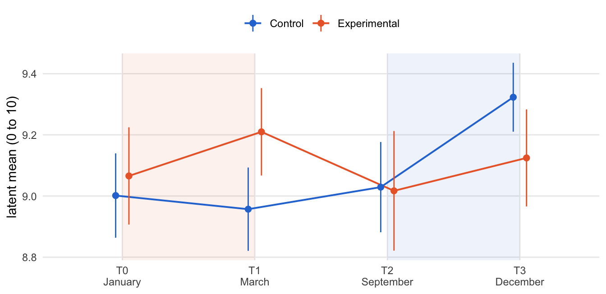
In January the experimental group lies at 9.07, the control group at 9.00. While the experimental group trains (T0 to T1), it changes by .14 and the control group by -.04; while the control group trains (T2 to T3), it changes by .29 and the experimental group by .11.
Next → Step 5, the difference of these changes: the training effects.
Step 5 · The training effects both groups
How much more does the trained group change? The change of each group in the two training windows, and their difference, as a table and as a figure:
rs_contrasts |>
filter(label %in% c("EG_T01", "CG_T01", "DiD_T01",
"EG_T23", "CG_T23", "DiD_T23")) |>
mutate(across(where(is.double), \(x) round(x, 3)))| label | est | se | pvalue | ci.lower | ci.upper |
|---|---|---|---|---|---|
| EG_T01 | 0.144 | 0.088 | 0.102 | -0.029 | 0.317 |
| CG_T01 | -0.045 | 0.065 | 0.493 | -0.172 | 0.083 |
| DiD_T01 | 0.189 | 0.108 | 0.081 | -0.023 | 0.401 |
| EG_T23 | 0.108 | 0.106 | 0.311 | -0.101 | 0.316 |
| CG_T23 | 0.294 | 0.066 | 0.000 | 0.164 | 0.424 |
| DiD_T23 | -0.186 | 0.125 | 0.135 | -0.431 | 0.058 |
plot_did(rs_fit)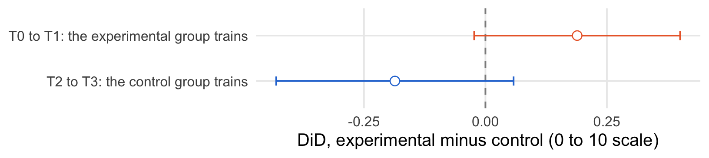
While the experimental group trains, DiD = .19 (p = .081), not significant. While the control group trains, DiD = -.19 (p = .135), not significant.
How large are the effects? The latent d, with the latent standard deviation at T0 pooled over the two groups:
rs_sd_T0 <- pooled_sd_T0(rs_fit)
rs_contrasts |>
filter(label %in% c("DiD_T01", "DiD_T23")) |>
transmute(label, DiD = est, d = est / rs_sd_T0, size = cohen(d)) |>
mutate(across(where(is.double), \(x) round(x, 2)))| label | DiD | d | size |
|---|---|---|---|
| DiD_T01 | 0.19 | 0.24 | small |
| DiD_T23 | -0.19 | -0.24 | small |
The pooled latent SD at T0 is .78; in its units the first effect is d = .24, small, and the second d = -.24, small. Do the two training effects cancel out? The replication test, DiD (T0 to T1) + DiD (T2 to T3):
rs_contrasts |>
filter(label == "Replication_test") |>
mutate(across(where(is.double), \(x) round(x, 3)))| label | est | se | pvalue | ci.lower | ci.upper |
|---|---|---|---|---|---|
| Replication_test | 0.002 | 0.169 | 0.989 | -0.329 | 0.334 |
The two effects do not detectably differ: their sum is .00 (p = .989).
Next → Step 6, how the control group changes while it waits.
Step 6 · Drift of the control group control
Does the control group change while it waits? Its change from T0 to T1, T0 to T2 and T1 to T2:
rs_contrasts |>
filter(label %in% c("CG_T01", "CG_T02", "CG_T12")) |>
mutate(across(where(is.double), \(x) round(x, 3)))| label | est | se | pvalue | ci.lower | ci.upper |
|---|---|---|---|---|---|
| CG_T01 | -0.045 | 0.065 | 0.493 | -0.172 | 0.083 |
| CG_T02 | 0.028 | 0.077 | 0.720 | -0.123 | 0.178 |
| CG_T12 | 0.072 | 0.067 | 0.282 | -0.059 | 0.204 |
None of the three changes is significant; the change from T0 to T1, which the first DiD subtracts, is -.04 (p = .493).
Next → Step 7, whether the latent means stay level outside the training.
Robustness · Steps 7 and 8
Step 7 · The restricted model both groups
Do the latent means stay level outside the training? The model of Steps 4 to 6 against the same model with the four equality constraints, from the script; its free model is the model of Steps 4 to 6, with the same χ²:
rs_restricted <- restricted |> filter(construct == "RelatednessSatisfaction")
rs_restricted |>
transmute(`χ² free` = chisq_free, `χ² restricted` = chisq_restricted,
`Δχ²` = delta_chisq, Δdf = delta_df, p, admissible) |>
mutate(across(where(is.double), \(x) round(x, 3)))| χ² free | χ² restricted | Δχ² | Δdf | p | admissible |
|---|---|---|---|---|---|
| 345.2 | 349.809 | 4.576 | 4 | 0.334 | TRUE |
The four constraints cost Δχ²(4) = 4.58 (p = .334), and the data do not reject them: the latent means stay level outside the training.
Next → Step 8, the two effects on the sample sets.
Step 8 · The sample sets both groups
Do the effects hold on every sample set? The two training effects on the nine sample sets, from the script, as a figure and as a table; S0 is the model of Steps 4 to 6:
rs_sets <- latent_sets |> filter(construct == "RelatednessSatisfaction")
plot_sets(rs_sets)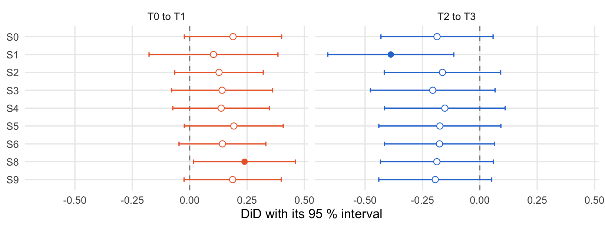
rs_sets |>
unnest(estimates) |>
filter(label %in% c("DiD_T01", "DiD_T23")) |>
select(set, admissible, label, est, pvalue) |>
pivot_wider(names_from = label, values_from = c(est, pvalue),
names_glue = "{label}_{.value}") |>
select(set, admissible, starts_with("DiD_T01"), starts_with("DiD_T23")) |>
mutate(across(where(is.double), \(x) round(x, 3)))| set | admissible | DiD_T01_est | DiD_T01_pvalue | DiD_T23_est | DiD_T23_pvalue |
|---|---|---|---|---|---|
| S0 | TRUE | 0.189 | 0.081 | -0.186 | 0.135 |
| S1 | TRUE | 0.104 | 0.469 | -0.388 | 0.006 |
| S2 | TRUE | 0.128 | 0.194 | -0.163 | 0.208 |
| S3 | TRUE | 0.141 | 0.208 | -0.205 | 0.139 |
| S4 | TRUE | 0.137 | 0.202 | -0.152 | 0.256 |
| S5 | TRUE | 0.192 | 0.080 | -0.174 | 0.199 |
| S6 | TRUE | 0.143 | 0.139 | -0.176 | 0.152 |
| S8 | TRUE | 0.239 | 0.035 | -0.187 | 0.136 |
| S9 | TRUE | 0.187 | 0.083 | -0.194 | 0.122 |
The effect of the first window is significant in the expected direction in 1 of the nine sets, the mirrored effect of the second window in 1.
Next → Step 9, what the steps show together.
What follows · Step 9
Step 9 · What follows
What does Relatedness Satisfaction show? The two training effects side by side, T0–T1 while the experimental group trains and T2–T3 while the control group trains, with the correction for testing all 20 constructs at once (11.7) and the nine sample sets of Step 8:
rs_verdict <- verdict_table("RelatednessSatisfaction",
rs_est, rs_p, rs_d, rs_sets)
show_verdict(rs_verdict)| window | DiD | d | size | p | p corrected | sets with the effect | range in sets |
|---|---|---|---|---|---|---|---|
| T0–T1 | 0.19 | 0.24 | small | 0.081 | 0.176 | 1 of 9 | .10 to .24 |
| T2–T3 | -0.19 | -0.24 | small | 0.135 | 0.300 | 1 of 9 | -.39 to -.15 |
Relatedness Satisfaction shows no significant training effect in either round. While the experimental group trains, its latent mean changes by .14 points, that of the control group by -.04; the difference stays just short of significance (DiD = .19, p = .081). When the control group trains, its latent mean changes by .29 points, that of the experimental group by .11; the difference is not significant (DiD = -.19, p = .135). Outside the training the latent means stay level: the control group does not change before its own training, and the restricted model of Step 7 holds (p = .334).
What goes on to Chapter 20? The model and the two effects:
rs_result <- tibble(construct = "RelatednessSatisfaction",
covariates = TRUE,
direct = list(character()),
fit = list(rs_fit))
rs_result |>
transmute(construct, covariates, direct = map_chr(direct, str_flatten, "; "))| construct | covariates | direct |
|---|---|---|
| RelatednessSatisfaction | TRUE |
Relatedness Satisfaction enters the synthesis of Chapter 20 with both effects, adjusted for age and sex.
Competence Satisfaction
Its path through the steps. One row per step below; the label marks the data of each step:
| Step | Data | Question | Result | Next |
|---|---|---|---|---|
| 1 | both groups | What is added to Chapter 7? | covariates, contrasts | Chapter 7’s model |
| 2 | both groups | Chapter 7’s model possible, as there? | yes, the same χ² | covariates |
| 3 | both groups | Covariates only through the factors? | yes | latent means |
| 4 | both groups | Latent means | – | effects |
| 5 | both groups | Training effects | T0–T1: positive, p < .05; T2–T3: n.s. | drift |
| 6 | control | Drift while waiting? | yes, T0 to T2 | robustness |
| 7 | both groups | Level outside the training? | yes | sample sets |
| 8 | both groups | Effects on the sample sets? | T0–T1: 8 of 9; T2–T3: 0 of 9 | what follows |
| 9 | What does it show? | T0–T1: effect, also corrected | Chapter 20 |
The model · Steps 1 to 3
Step 1 · The model both groups
Which model does Chapter 7 hand on? Its status there: the estimates the stop rule set at 0, the items freed, and the autocorrelations:
cs_status <- invariance$adopted |>
filter(construct == "CompetenceSatisfaction")
cs_status |>
transmute(status, set_to_0 = map_chr(set_to_0, \(x) str_flatten(x, "; ")),
freed = map_chr(freed, \(x) str_flatten(x, "; ")))| status | set_to_0 | freed |
|---|---|---|
| as specified |
What does the model look like? In the figure, the factors of the four waves (circles), the items (boxes) and their loadings, the links of the factors (above) and of each item with itself at the next wave (below); in green, the estimates the stop rule of Chapter 7 set at 0 in one group:
plot_model("CompetenceSatisfaction",
fixed = str_remove(cs_status$set_to_0[[1]], "^[A-Za-z]+: "))
What does the complete model look like? Its syntax, as did_syntax() writes it: first the final model of Chapter 7, part by part, then what this chapter adds, the covariates on the factor of every wave and the contrasts. A label shared by several lines (such as l1, t1 or a1) holds those estimates equal; c(..., ...) gives the control and the experimental group one each:
show_model(did_syntax(cs_status))# Chapter 7: one factor per wave; NA* frees the first loading
F_T0 =~ NA*CompetenceSatisfaction1_T0 +
l1*CompetenceSatisfaction1_T0 +
l2*CompetenceSatisfaction2_T0 +
l3*CompetenceSatisfaction3_T0 +
l4*CompetenceSatisfaction4_T0
F_T1 =~ NA*CompetenceSatisfaction1_T1 +
l1*CompetenceSatisfaction1_T1 +
l2*CompetenceSatisfaction2_T1 +
l3*CompetenceSatisfaction3_T1 +
l4*CompetenceSatisfaction4_T1
F_T2 =~ NA*CompetenceSatisfaction1_T2 +
l1*CompetenceSatisfaction1_T2 +
l2*CompetenceSatisfaction2_T2 +
l3*CompetenceSatisfaction3_T2 +
l4*CompetenceSatisfaction4_T2
F_T3 =~ NA*CompetenceSatisfaction1_T3 +
l1*CompetenceSatisfaction1_T3 +
l2*CompetenceSatisfaction2_T3 +
l3*CompetenceSatisfaction3_T3 +
l4*CompetenceSatisfaction4_T3
# Chapter 7: effects coding: the loadings average 1, the intercepts sum to 0
l1 + l2 + l3 + l4 == 4
t1 + t2 + t3 + t4 == 0
# Chapter 7: the latent means, free in each group
F_T0 ~ c(m_con_T0, m_exp_T0)*1
F_T1 ~ c(m_con_T1, m_exp_T1)*1
F_T2 ~ c(m_con_T2, m_exp_T2)*1
F_T3 ~ c(m_con_T3, m_exp_T3)*1
# Chapter 7: the intercepts
CompetenceSatisfaction1_T0 ~ t1*1
CompetenceSatisfaction2_T0 ~ t2*1
CompetenceSatisfaction3_T0 ~ t3*1
CompetenceSatisfaction4_T0 ~ t4*1
CompetenceSatisfaction1_T1 ~ t1*1
CompetenceSatisfaction2_T1 ~ t2*1
CompetenceSatisfaction3_T1 ~ t3*1
CompetenceSatisfaction4_T1 ~ t4*1
CompetenceSatisfaction1_T2 ~ t1*1
CompetenceSatisfaction2_T2 ~ t2*1
CompetenceSatisfaction3_T2 ~ t3*1
CompetenceSatisfaction4_T2 ~ t4*1
CompetenceSatisfaction1_T3 ~ t1*1
CompetenceSatisfaction2_T3 ~ t2*1
CompetenceSatisfaction3_T3 ~ t3*1
CompetenceSatisfaction4_T3 ~ t4*1
# Chapter 7: the factors correlate over the waves
F_T0 ~~ F_T1
F_T0 ~~ F_T2
F_T0 ~~ F_T3
F_T1 ~~ F_T2
F_T1 ~~ F_T3
F_T2 ~~ F_T3
# Chapter 7: each item's residual with itself over the waves
CompetenceSatisfaction1_T0 ~~ CompetenceSatisfaction1_T1
CompetenceSatisfaction1_T0 ~~ CompetenceSatisfaction1_T2
CompetenceSatisfaction1_T0 ~~ CompetenceSatisfaction1_T3
CompetenceSatisfaction1_T1 ~~ CompetenceSatisfaction1_T2
CompetenceSatisfaction1_T1 ~~ CompetenceSatisfaction1_T3
CompetenceSatisfaction1_T2 ~~ CompetenceSatisfaction1_T3
CompetenceSatisfaction2_T0 ~~ CompetenceSatisfaction2_T1
CompetenceSatisfaction2_T0 ~~ CompetenceSatisfaction2_T2
CompetenceSatisfaction2_T0 ~~ CompetenceSatisfaction2_T3
CompetenceSatisfaction2_T1 ~~ CompetenceSatisfaction2_T2
CompetenceSatisfaction2_T1 ~~ CompetenceSatisfaction2_T3
CompetenceSatisfaction2_T2 ~~ CompetenceSatisfaction2_T3
CompetenceSatisfaction3_T0 ~~ CompetenceSatisfaction3_T1
CompetenceSatisfaction3_T0 ~~ CompetenceSatisfaction3_T2
CompetenceSatisfaction3_T0 ~~ CompetenceSatisfaction3_T3
CompetenceSatisfaction3_T1 ~~ CompetenceSatisfaction3_T2
CompetenceSatisfaction3_T1 ~~ CompetenceSatisfaction3_T3
CompetenceSatisfaction3_T2 ~~ CompetenceSatisfaction3_T3
CompetenceSatisfaction4_T0 ~~ CompetenceSatisfaction4_T1
CompetenceSatisfaction4_T0 ~~ CompetenceSatisfaction4_T2
CompetenceSatisfaction4_T0 ~~ CompetenceSatisfaction4_T3
CompetenceSatisfaction4_T1 ~~ CompetenceSatisfaction4_T2
CompetenceSatisfaction4_T1 ~~ CompetenceSatisfaction4_T3
CompetenceSatisfaction4_T2 ~~ CompetenceSatisfaction4_T3
# added here: age and sex on the factor of every wave
F_T0 ~ age_c + female_c
F_T1 ~ age_c + female_c
F_T2 ~ age_c + female_c
F_T3 ~ age_c + female_c
# added here: every contrast as a parameter
EG_T01 := (m_exp_T1 - m_exp_T0)
CG_T01 := (m_con_T1 - m_con_T0)
DiD_T01 := (m_exp_T1 - m_exp_T0) - (m_con_T1 - m_con_T0)
EG_T02 := (m_exp_T2 - m_exp_T0)
CG_T02 := (m_con_T2 - m_con_T0)
DiD_T02 := (m_exp_T2 - m_exp_T0) - (m_con_T2 - m_con_T0)
EG_T03 := (m_exp_T3 - m_exp_T0)
CG_T03 := (m_con_T3 - m_con_T0)
DiD_T03 := (m_exp_T3 - m_exp_T0) - (m_con_T3 - m_con_T0)
EG_T12 := (m_exp_T2 - m_exp_T1)
CG_T12 := (m_con_T2 - m_con_T1)
DiD_T12 := (m_exp_T2 - m_exp_T1) - (m_con_T2 - m_con_T1)
EG_T13 := (m_exp_T3 - m_exp_T1)
CG_T13 := (m_con_T3 - m_con_T1)
DiD_T13 := (m_exp_T3 - m_exp_T1) - (m_con_T3 - m_con_T1)
EG_T23 := (m_exp_T3 - m_exp_T2)
CG_T23 := (m_con_T3 - m_con_T2)
DiD_T23 := (m_exp_T3 - m_exp_T2) - (m_con_T3 - m_con_T2)
Replication_test := (m_exp_T1 - m_exp_T0) - (m_con_T1 - m_con_T0) + (m_exp_T3 - m_exp_T2) - (m_con_T3 - m_con_T2)Next → Step 2, the model of Chapter 7 again, without the covariates.
Step 2 · The model of Chapter 7 both groups
What is fitted? The model of Chapter 7 with the contrasts, without the covariates:
cs_base <- df_wide |>
sem(model = did_syntax(cs_status, covariates = FALSE), data = _,
group = "condition", estimator = "MLR", missing = "fiml")Does it pass the checks, and is it the model of Chapter 7? The checks of Chapter 7, and its χ² next to that of Chapter 7, Step 8:
cs_base_checks <- model_checks(cs_base)
cs_base_checks| check | what | value | criterion | holds |
|---|---|---|---|---|
| 1 estimation | converged | yes | yes | ✓ |
| 2 variances | smallest residual variance: item 4 at T2 (Experimental) | .277 | above 0 | ✓ |
| 3 correlations | largest correlation: the factors at T1 and T2 (Control) | .921 | within ±1 | ✓ |
| 4 residuals | smallest eigenvalue of the residual covariances | .175 | above 0 | ✓ |
| 5 factors | smallest eigenvalue of the factor covariances | .018 | above 0 | ✓ |
| 6 standard errors | estimated for every free parameter | yes | yes | ✓ |
| 7 fit | CFI | .959 | reported | – |
| 8 fit | RMSEA [90 % interval] | .050 [.038, .060] | reported | – |
| 9 fit | SRMR | .088 | reported | – |
| 10 strain | largest modification index: item 1 with item 4 at T2 (Experimental) | 9.2 | reported | – |
| 11 estimates | smallest standardized loading: item 3 at T1 (Control) | .56 | reported | – |
cs_chapter7 <- invariance$steps |>
filter(construct == "CompetenceSatisfaction", part == "both groups",
level == "intercepts across groups")
tibble(model = c("here", "Chapter 7"),
chisq = c(fitMeasures(cs_base, "chisq.scaled"), cs_chapter7$chisq),
df = c(fitMeasures(cs_base, "df"), cs_chapter7$df)) |>
mutate(chisq = round(chisq, 3))| model | chisq | df |
|---|---|---|
| here | 271.145 | 190 |
| Chapter 7 | 271.145 | 190 |
Checks 1 to 6 hold, and the χ² is that of Chapter 7 (271.145): the model is the one Chapter 7 settled on, and the contrasts add no constraint.
Next → Step 3, the same model with the covariates.
Step 3 · The covariates both groups
What is fitted? The model of Step 1, with age and sex on the factors, and the comparison model, with a direct effect of each on every item at every wave and no path to the factors:
cs_covariates <- df_wide |>
sem(model = did_syntax(cs_status), data = _, group = "condition",
estimator = "MLR", missing = "fiml.x")
cs_everywhere <- df_wide |>
sem(model = direct_everywhere(cs_status), data = _, group = "condition",
estimator = "MLR", missing = "fiml.x")What does the comparison model hold? The model of Chapter 7 from Step 1, and in place of the paths to the factors a direct effect of age and sex on every item at every wave; it needs no contrasts. These are its lines beyond Chapter 7:
show_model(direct_everywhere(cs_status), added_only = TRUE)# added here: age or sex directly on single items
CompetenceSatisfaction1_T0 ~ age_c + female_c
CompetenceSatisfaction2_T0 ~ age_c + female_c
CompetenceSatisfaction3_T0 ~ age_c + female_c
CompetenceSatisfaction4_T0 ~ age_c + female_c
CompetenceSatisfaction1_T1 ~ age_c + female_c
CompetenceSatisfaction2_T1 ~ age_c + female_c
CompetenceSatisfaction3_T1 ~ age_c + female_c
CompetenceSatisfaction4_T1 ~ age_c + female_c
CompetenceSatisfaction1_T2 ~ age_c + female_c
CompetenceSatisfaction2_T2 ~ age_c + female_c
CompetenceSatisfaction3_T2 ~ age_c + female_c
CompetenceSatisfaction4_T2 ~ age_c + female_c
CompetenceSatisfaction1_T3 ~ age_c + female_c
CompetenceSatisfaction2_T3 ~ age_c + female_c
CompetenceSatisfaction3_T3 ~ age_c + female_c
CompetenceSatisfaction4_T3 ~ age_c + female_cDoes the model with the covariates pass the checks?
cs_covariates_checks <- model_checks(cs_covariates)
cs_covariates_checks| check | what | value | criterion | holds |
|---|---|---|---|---|
| 1 estimation | converged | yes | yes | ✓ |
| 2 variances | .090 | above 0 | ✓ | |
| 3 correlations | largest correlation: the factors at T1 and T2 (Control) | .918 | within ±1 | ✓ |
| 4 residuals | smallest eigenvalue of the residual covariances | .089 | above 0 | ✓ |
| 5 factors | smallest eigenvalue of the factor covariances | .029 | above 0 | ✓ |
| 6 standard errors | estimated for every free parameter | yes | yes | ✓ |
| 7 fit | CFI | .958 | reported | – |
| 8 fit | RMSEA [90 % interval] | .045 [.034, .055] | reported | – |
| 9 fit | SRMR | .082 | reported | – |
| 10 strain | largest modification index: item 1 with item 4 at T2 (Experimental) | 8.2 | reported | – |
| 11 estimates | smallest standardized loading: item 3 at T1 (Control) | .55 | reported | – |
Checks 1 to 6 hold. Its CFI, .958, stands beside .959 in Step 2, for description only: the two models do not hold the same variables. Do age and sex act only through the factors? The model of Step 1 against the comparison model:
cs_step <- covariate_step(cs_covariates, cs_everywhere)
show_step(cs_step)| model | df | CFI | RMSEA | ΔCFI | ΔRMSEA | p | Chen |
|---|---|---|---|---|---|---|---|
| direct effects on every item | 190 | 0.959 | 0.050 | ||||
| only through the factors | 238 | 0.958 | 0.045 | -0.001 | -0.005 | 0.283 | ✓ |
They do, under Chen’s cutoffs (ΔCFI = -.001, ΔRMSEA = -.005; χ² test: p = .283): the covariates enter as specified.
cs_fit <- cs_covariates # the model of Steps 4 to 8Next → Step 4, the latent means of this model.
The effects · Steps 4 to 6
Step 4 · Latent means both groups
Where does each group stand at each wave? The eight latent means with their 95 % confidence intervals, at the sample’s average age and share of women:
cs_means <- parameterEstimates(cs_fit) |>
filter(op == "~1", str_starts(lhs, "F_")) |>
select(label, est, se, ci.lower, ci.upper)
# the contrasts between them, for Steps 4 to 6
cs_contrasts <- contrasts_of(cs_fit, c(
"EG_T01", "CG_T01", "DiD_T01", "EG_T23", "CG_T23", "DiD_T23",
"Replication_test", "CG_T02", "CG_T12"))
cs_means |>
mutate(across(where(is.double), \(x) round(x, 2)))| label | est | se | ci.lower | ci.upper |
|---|---|---|---|---|
| m_con_T0 | 8.76 | 0.07 | 8.61 | 8.90 |
| m_con_T1 | 8.84 | 0.07 | 8.70 | 8.98 |
| m_con_T2 | 8.91 | 0.07 | 8.77 | 9.05 |
| m_con_T3 | 9.12 | 0.06 | 9.00 | 9.24 |
| m_exp_T0 | 8.44 | 0.09 | 8.26 | 8.62 |
| m_exp_T1 | 8.78 | 0.08 | 8.61 | 8.94 |
| m_exp_T2 | 8.72 | 0.10 | 8.52 | 8.92 |
| m_exp_T3 | 8.79 | 0.09 | 8.62 | 8.96 |
plot_latent_means(cs_fit)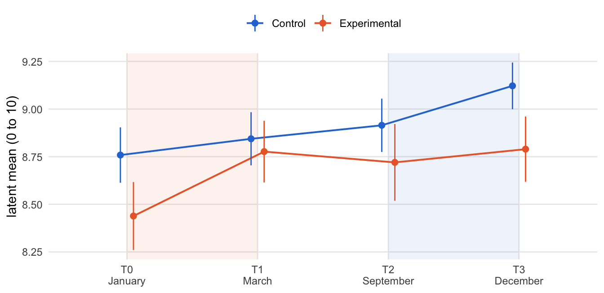
In January the experimental group lies at 8.44, the control group at 8.76. While the experimental group trains (T0 to T1), it changes by .34 and the control group by .09; while the control group trains (T2 to T3), it changes by .21 and the experimental group by .07.
Next → Step 5, the difference of these changes: the training effects.
Step 5 · The training effects both groups
How much more does the trained group change? The change of each group in the two training windows, and their difference, as a table and as a figure:
cs_contrasts |>
filter(label %in% c("EG_T01", "CG_T01", "DiD_T01",
"EG_T23", "CG_T23", "DiD_T23")) |>
mutate(across(where(is.double), \(x) round(x, 3)))| label | est | se | pvalue | ci.lower | ci.upper |
|---|---|---|---|---|---|
| EG_T01 | 0.338 | 0.069 | 0.000 | 0.204 | 0.473 |
| CG_T01 | 0.085 | 0.067 | 0.205 | -0.047 | 0.217 |
| DiD_T01 | 0.253 | 0.096 | 0.008 | 0.065 | 0.441 |
| EG_T23 | 0.069 | 0.087 | 0.426 | -0.101 | 0.240 |
| CG_T23 | 0.207 | 0.062 | 0.001 | 0.086 | 0.328 |
| DiD_T23 | -0.138 | 0.107 | 0.196 | -0.346 | 0.071 |
plot_did(cs_fit)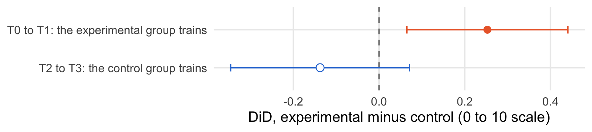
While the experimental group trains, DiD = .25 (p = .008), a significant effect of the training. While the control group trains, DiD = -.14 (p = .196), not significant.
How large are the effects? The latent d, with the latent standard deviation at T0 pooled over the two groups:
cs_sd_T0 <- pooled_sd_T0(cs_fit)
cs_contrasts |>
filter(label %in% c("DiD_T01", "DiD_T23")) |>
transmute(label, DiD = est, d = est / cs_sd_T0, size = cohen(d)) |>
mutate(across(where(is.double), \(x) round(x, 2)))| label | DiD | d | size |
|---|---|---|---|
| DiD_T01 | 0.25 | 0.22 | small |
| DiD_T23 | -0.14 | -0.12 | negligible |
The pooled latent SD at T0 is 1.12; in its units the first effect is d = .22, small, and the second d = -.12, negligible. Do the two training effects cancel out? The replication test, DiD (T0 to T1) + DiD (T2 to T3):
cs_contrasts |>
filter(label == "Replication_test") |>
mutate(across(where(is.double), \(x) round(x, 3)))| label | est | se | pvalue | ci.lower | ci.upper |
|---|---|---|---|---|---|
| Replication_test | 0.115 | 0.144 | 0.423 | -0.166 | 0.397 |
The two effects do not detectably differ: their sum is .12 (p = .423).
Next → Step 6, how the control group changes while it waits.
Step 6 · Drift of the control group control
Does the control group change while it waits? Its change from T0 to T1, T0 to T2 and T1 to T2:
cs_contrasts |>
filter(label %in% c("CG_T01", "CG_T02", "CG_T12")) |>
mutate(across(where(is.double), \(x) round(x, 3)))| label | est | se | pvalue | ci.lower | ci.upper |
|---|---|---|---|---|---|
| CG_T01 | 0.085 | 0.067 | 0.205 | -0.047 | 0.217 |
| CG_T02 | 0.156 | 0.077 | 0.042 | 0.006 | 0.307 |
| CG_T12 | 0.071 | 0.058 | 0.224 | -0.043 | 0.185 |
The control group changes significantly from T0 to T2 before its own training; the change from T0 to T1, which the first DiD subtracts, is .09 (p = .205).
Next → Step 7, whether the latent means stay level outside the training.
Robustness · Steps 7 and 8
Step 7 · The restricted model both groups
Do the latent means stay level outside the training? The model of Steps 4 to 6 against the same model with the four equality constraints, from the script; its free model is the model of Steps 4 to 6, with the same χ²:
cs_restricted <- restricted |> filter(construct == "CompetenceSatisfaction")
cs_restricted |>
transmute(`χ² free` = chisq_free, `χ² restricted` = chisq_restricted,
`Δχ²` = delta_chisq, Δdf = delta_df, p, admissible) |>
mutate(across(where(is.double), \(x) round(x, 3)))| χ² free | χ² restricted | Δχ² | Δdf | p | admissible |
|---|---|---|---|---|---|
| 333.332 | 337.804 | 4.498 | 4 | 0.343 | TRUE |
The four constraints cost Δχ²(4) = 4.50 (p = .343), and the data do not reject them: the latent means stay level outside the training.
Next → Step 8, the two effects on the sample sets.
Step 8 · The sample sets both groups
Do the effects hold on every sample set? The two training effects on the nine sample sets, from the script, as a figure and as a table; S0 is the model of Steps 4 to 6:
cs_sets <- latent_sets |> filter(construct == "CompetenceSatisfaction")
plot_sets(cs_sets)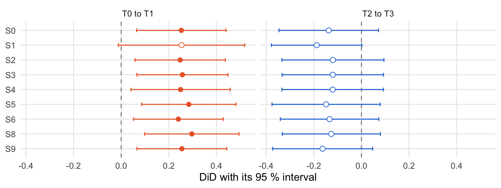
cs_sets |>
unnest(estimates) |>
filter(label %in% c("DiD_T01", "DiD_T23")) |>
select(set, admissible, label, est, pvalue) |>
pivot_wider(names_from = label, values_from = c(est, pvalue),
names_glue = "{label}_{.value}") |>
select(set, admissible, starts_with("DiD_T01"), starts_with("DiD_T23")) |>
mutate(across(where(is.double), \(x) round(x, 3)))| set | admissible | DiD_T01_est | DiD_T01_pvalue | DiD_T23_est | DiD_T23_pvalue |
|---|---|---|---|---|---|
| S0 | TRUE | 0.253 | 0.008 | -0.138 | 0.196 |
| S1 | TRUE | 0.254 | 0.061 | -0.188 | 0.052 |
| S2 | TRUE | 0.248 | 0.011 | -0.120 | 0.273 |
| S3 | TRUE | 0.257 | 0.008 | -0.120 | 0.268 |
| S4 | TRUE | 0.249 | 0.019 | -0.121 | 0.267 |
| S5 | TRUE | 0.284 | 0.005 | -0.149 | 0.200 |
| S6 | TRUE | 0.240 | 0.012 | -0.134 | 0.204 |
| S8 | TRUE | 0.297 | 0.003 | -0.127 | 0.228 |
| S9 | TRUE | 0.255 | 0.008 | -0.163 | 0.128 |
The effect of the first window is significant in the expected direction in 8 of the nine sets, the mirrored effect of the second window in 0.
Next → Step 9, what the steps show together.
What follows · Step 9
Step 9 · What follows
What does Competence Satisfaction show? The two training effects side by side, T0–T1 while the experimental group trains and T2–T3 while the control group trains, with the correction for testing all 20 constructs at once (11.7) and the nine sample sets of Step 8:
cs_verdict <- verdict_table("CompetenceSatisfaction",
cs_est, cs_p, cs_d, cs_sets)
show_verdict(cs_verdict)| window | DiD | d | size | p | p corrected | sets with the effect | range in sets |
|---|---|---|---|---|---|---|---|
| T0–T1 | 0.25 | 0.22 | small | 0.008 | 0.033 | 8 of 9 | .24 to .30 |
| T2–T3 | -0.14 | -0.12 | negligible | 0.196 | 0.393 | 0 of 9 | -.19 to -.12 |
Competence Satisfaction shows the training effect while the experimental group trains, not when the control group trains. While the experimental group trains, it gains .25 points more than the control group (d = .22, small; p = .008). It holds after the correction for testing 20 constructs (adjusted p = .033) and in 8 of 9 sample sets. When the control group trains, its latent mean changes by .21 points, that of the experimental group by .07; the difference is not significant (DiD = -.14, p = .196). The two rounds do not detectably differ (replication test, p = .423). The control group also changes before its own training (T0 to T2: .16, p = .042), but the restricted model of Step 7, with level means outside the training, still holds (p = .343).
What goes on to Chapter 20? The model and the two effects:
cs_result <- tibble(construct = "CompetenceSatisfaction",
covariates = TRUE,
direct = list(character()),
fit = list(cs_fit))
cs_result |>
transmute(construct, covariates, direct = map_chr(direct, str_flatten, "; "))| construct | covariates | direct |
|---|---|---|
| CompetenceSatisfaction | TRUE |
Competence Satisfaction enters the synthesis of Chapter 20 with both effects, adjusted for age and sex.
Autonomy Non-Frustrated
Its path through the steps. One row per step below; the label marks the data of each step:
| Step | Data | Question | Result | Next |
|---|---|---|---|---|
| 1 | both groups | What is added to Chapter 7? | covariates, contrasts | Chapter 7’s model |
| 2 | both groups | Chapter 7’s model possible, as there? | yes, the same χ² | covariates |
| 3 | both groups | Covariates only through the factors? | no; item 4 by age freed: yes | latent means |
| 4 | both groups | Latent means | – | effects |
| 5 | both groups | Training effects | T0–T1: n.s.; T2–T3: n.s. | drift |
| 6 | control | Drift while waiting? | none | robustness |
| 7 | both groups | Level outside the training? | no | sample sets |
| 8 | both groups | Effects on the sample sets? | T0–T1: 0 of 9; T2–T3: 0 of 9 | what follows |
| 9 | What does it show? | no significant effect | Chapter 20 |
The model · Steps 1 to 3
Step 1 · The model both groups
Which model does Chapter 7 hand on? Its status there: the estimates the stop rule set at 0, the items freed, and the autocorrelations:
anf_status <- invariance$adopted |>
filter(construct == "AutonomyNonFrustrated")
anf_status |>
transmute(status, set_to_0 = map_chr(set_to_0, \(x) str_flatten(x, "; ")),
freed = map_chr(freed, \(x) str_flatten(x, "; ")))| status | set_to_0 | freed |
|---|---|---|
| as specified |
What does the model look like? In the figure, the factors of the four waves (circles), the items (boxes) and their loadings, the links of the factors (above) and of each item with itself at the next wave (below); in green, the estimates the stop rule of Chapter 7 set at 0 in one group:
plot_model("AutonomyNonFrustrated",
fixed = str_remove(anf_status$set_to_0[[1]], "^[A-Za-z]+: "))
What does the complete model look like? Its syntax, as did_syntax() writes it: first the final model of Chapter 7, part by part, then what this chapter adds, the covariates on the factor of every wave and the contrasts. A label shared by several lines (such as l1, t1 or a1) holds those estimates equal; c(..., ...) gives the control and the experimental group one each:
show_model(did_syntax(anf_status))# Chapter 7: one factor per wave; NA* frees the first loading
F_T0 =~ NA*AutonomyNonFrustrated1_T0 +
l1*AutonomyNonFrustrated1_T0 +
l2*AutonomyNonFrustrated2_T0 +
l3*AutonomyNonFrustrated3_T0 +
l4*AutonomyNonFrustrated4_T0
F_T1 =~ NA*AutonomyNonFrustrated1_T1 +
l1*AutonomyNonFrustrated1_T1 +
l2*AutonomyNonFrustrated2_T1 +
l3*AutonomyNonFrustrated3_T1 +
l4*AutonomyNonFrustrated4_T1
F_T2 =~ NA*AutonomyNonFrustrated1_T2 +
l1*AutonomyNonFrustrated1_T2 +
l2*AutonomyNonFrustrated2_T2 +
l3*AutonomyNonFrustrated3_T2 +
l4*AutonomyNonFrustrated4_T2
F_T3 =~ NA*AutonomyNonFrustrated1_T3 +
l1*AutonomyNonFrustrated1_T3 +
l2*AutonomyNonFrustrated2_T3 +
l3*AutonomyNonFrustrated3_T3 +
l4*AutonomyNonFrustrated4_T3
# Chapter 7: effects coding: the loadings average 1, the intercepts sum to 0
l1 + l2 + l3 + l4 == 4
t1 + t2 + t3 + t4 == 0
# Chapter 7: the latent means, free in each group
F_T0 ~ c(m_con_T0, m_exp_T0)*1
F_T1 ~ c(m_con_T1, m_exp_T1)*1
F_T2 ~ c(m_con_T2, m_exp_T2)*1
F_T3 ~ c(m_con_T3, m_exp_T3)*1
# Chapter 7: the intercepts
AutonomyNonFrustrated1_T0 ~ t1*1
AutonomyNonFrustrated2_T0 ~ t2*1
AutonomyNonFrustrated3_T0 ~ t3*1
AutonomyNonFrustrated4_T0 ~ t4*1
AutonomyNonFrustrated1_T1 ~ t1*1
AutonomyNonFrustrated2_T1 ~ t2*1
AutonomyNonFrustrated3_T1 ~ t3*1
AutonomyNonFrustrated4_T1 ~ t4*1
AutonomyNonFrustrated1_T2 ~ t1*1
AutonomyNonFrustrated2_T2 ~ t2*1
AutonomyNonFrustrated3_T2 ~ t3*1
AutonomyNonFrustrated4_T2 ~ t4*1
AutonomyNonFrustrated1_T3 ~ t1*1
AutonomyNonFrustrated2_T3 ~ t2*1
AutonomyNonFrustrated3_T3 ~ t3*1
AutonomyNonFrustrated4_T3 ~ t4*1
# Chapter 7: the factors correlate over the waves
F_T0 ~~ F_T1
F_T0 ~~ F_T2
F_T0 ~~ F_T3
F_T1 ~~ F_T2
F_T1 ~~ F_T3
F_T2 ~~ F_T3
# Chapter 7: each item's residual with itself over the waves
AutonomyNonFrustrated1_T0 ~~ AutonomyNonFrustrated1_T1
AutonomyNonFrustrated1_T0 ~~ AutonomyNonFrustrated1_T2
AutonomyNonFrustrated1_T0 ~~ AutonomyNonFrustrated1_T3
AutonomyNonFrustrated1_T1 ~~ AutonomyNonFrustrated1_T2
AutonomyNonFrustrated1_T1 ~~ AutonomyNonFrustrated1_T3
AutonomyNonFrustrated1_T2 ~~ AutonomyNonFrustrated1_T3
AutonomyNonFrustrated2_T0 ~~ AutonomyNonFrustrated2_T1
AutonomyNonFrustrated2_T0 ~~ AutonomyNonFrustrated2_T2
AutonomyNonFrustrated2_T0 ~~ AutonomyNonFrustrated2_T3
AutonomyNonFrustrated2_T1 ~~ AutonomyNonFrustrated2_T2
AutonomyNonFrustrated2_T1 ~~ AutonomyNonFrustrated2_T3
AutonomyNonFrustrated2_T2 ~~ AutonomyNonFrustrated2_T3
AutonomyNonFrustrated3_T0 ~~ AutonomyNonFrustrated3_T1
AutonomyNonFrustrated3_T0 ~~ AutonomyNonFrustrated3_T2
AutonomyNonFrustrated3_T0 ~~ AutonomyNonFrustrated3_T3
AutonomyNonFrustrated3_T1 ~~ AutonomyNonFrustrated3_T2
AutonomyNonFrustrated3_T1 ~~ AutonomyNonFrustrated3_T3
AutonomyNonFrustrated3_T2 ~~ AutonomyNonFrustrated3_T3
AutonomyNonFrustrated4_T0 ~~ AutonomyNonFrustrated4_T1
AutonomyNonFrustrated4_T0 ~~ AutonomyNonFrustrated4_T2
AutonomyNonFrustrated4_T0 ~~ AutonomyNonFrustrated4_T3
AutonomyNonFrustrated4_T1 ~~ AutonomyNonFrustrated4_T2
AutonomyNonFrustrated4_T1 ~~ AutonomyNonFrustrated4_T3
AutonomyNonFrustrated4_T2 ~~ AutonomyNonFrustrated4_T3
# added here: age and sex on the factor of every wave
F_T0 ~ age_c + female_c
F_T1 ~ age_c + female_c
F_T2 ~ age_c + female_c
F_T3 ~ age_c + female_c
# added here: every contrast as a parameter
EG_T01 := (m_exp_T1 - m_exp_T0)
CG_T01 := (m_con_T1 - m_con_T0)
DiD_T01 := (m_exp_T1 - m_exp_T0) - (m_con_T1 - m_con_T0)
EG_T02 := (m_exp_T2 - m_exp_T0)
CG_T02 := (m_con_T2 - m_con_T0)
DiD_T02 := (m_exp_T2 - m_exp_T0) - (m_con_T2 - m_con_T0)
EG_T03 := (m_exp_T3 - m_exp_T0)
CG_T03 := (m_con_T3 - m_con_T0)
DiD_T03 := (m_exp_T3 - m_exp_T0) - (m_con_T3 - m_con_T0)
EG_T12 := (m_exp_T2 - m_exp_T1)
CG_T12 := (m_con_T2 - m_con_T1)
DiD_T12 := (m_exp_T2 - m_exp_T1) - (m_con_T2 - m_con_T1)
EG_T13 := (m_exp_T3 - m_exp_T1)
CG_T13 := (m_con_T3 - m_con_T1)
DiD_T13 := (m_exp_T3 - m_exp_T1) - (m_con_T3 - m_con_T1)
EG_T23 := (m_exp_T3 - m_exp_T2)
CG_T23 := (m_con_T3 - m_con_T2)
DiD_T23 := (m_exp_T3 - m_exp_T2) - (m_con_T3 - m_con_T2)
Replication_test := (m_exp_T1 - m_exp_T0) - (m_con_T1 - m_con_T0) + (m_exp_T3 - m_exp_T2) - (m_con_T3 - m_con_T2)Next → Step 2, the model of Chapter 7 again, without the covariates.
Step 2 · The model of Chapter 7 both groups
What is fitted? The model of Chapter 7 with the contrasts, without the covariates:
anf_base <- df_wide |>
sem(model = did_syntax(anf_status, covariates = FALSE), data = _,
group = "condition", estimator = "MLR", missing = "fiml")Does it pass the checks, and is it the model of Chapter 7? The checks of Chapter 7, and its χ² next to that of Chapter 7, Step 8:
anf_base_checks <- model_checks(anf_base)
anf_base_checks| check | what | value | criterion | holds |
|---|---|---|---|---|
| 1 estimation | converged | yes | yes | ✓ |
| 2 variances | smallest residual variance: item 2 at T3 (Experimental) | 2.666 | above 0 | ✓ |
| 3 correlations | largest correlation: the factors at T2 and T3 (Control) | .774 | within ±1 | ✓ |
| 4 residuals | smallest eigenvalue of the residual covariances | 1.631 | above 0 | ✓ |
| 5 factors | smallest eigenvalue of the factor covariances | .965 | above 0 | ✓ |
| 6 standard errors | estimated for every free parameter | yes | yes | ✓ |
| 7 fit | CFI | .927 | reported | – |
| 8 fit | RMSEA [90 % interval] | .055 [.044, .065] | reported | – |
| 9 fit | SRMR | .083 | reported | – |
| 10 strain | largest modification index: item 2 with item 4 at T2 (Control) | 13.8 | reported | – |
| 11 estimates | smallest standardized loading: item 4 at T2 (Control) | .53 | reported | – |
anf_chapter7 <- invariance$steps |>
filter(construct == "AutonomyNonFrustrated", part == "both groups",
level == "intercepts across groups")
tibble(model = c("here", "Chapter 7"),
chisq = c(fitMeasures(anf_base, "chisq.scaled"), anf_chapter7$chisq),
df = c(fitMeasures(anf_base, "df"), anf_chapter7$df)) |>
mutate(chisq = round(chisq, 3))| model | chisq | df |
|---|---|---|
| here | 302.561 | 190 |
| Chapter 7 | 302.561 | 190 |
Checks 1 to 6 hold, and the χ² is that of Chapter 7 (302.561): the model is the one Chapter 7 settled on, and the contrasts add no constraint.
Next → Step 3, the same model with the covariates.
Step 3 · The covariates both groups
What is fitted? The model of Step 1, with age and sex on the factors, and the comparison model, with a direct effect of each on every item at every wave and no path to the factors:
anf_covariates <- df_wide |>
sem(model = did_syntax(anf_status), data = _, group = "condition",
estimator = "MLR", missing = "fiml.x")
anf_everywhere <- df_wide |>
sem(model = direct_everywhere(anf_status), data = _, group = "condition",
estimator = "MLR", missing = "fiml.x")What does the comparison model hold? The model of Chapter 7 from Step 1, and in place of the paths to the factors a direct effect of age and sex on every item at every wave; it needs no contrasts. These are its lines beyond Chapter 7:
show_model(direct_everywhere(anf_status), added_only = TRUE)# added here: age or sex directly on single items
AutonomyNonFrustrated1_T0 ~ age_c + female_c
AutonomyNonFrustrated2_T0 ~ age_c + female_c
AutonomyNonFrustrated3_T0 ~ age_c + female_c
AutonomyNonFrustrated4_T0 ~ age_c + female_c
AutonomyNonFrustrated1_T1 ~ age_c + female_c
AutonomyNonFrustrated2_T1 ~ age_c + female_c
AutonomyNonFrustrated3_T1 ~ age_c + female_c
AutonomyNonFrustrated4_T1 ~ age_c + female_c
AutonomyNonFrustrated1_T2 ~ age_c + female_c
AutonomyNonFrustrated2_T2 ~ age_c + female_c
AutonomyNonFrustrated3_T2 ~ age_c + female_c
AutonomyNonFrustrated4_T2 ~ age_c + female_c
AutonomyNonFrustrated1_T3 ~ age_c + female_c
AutonomyNonFrustrated2_T3 ~ age_c + female_c
AutonomyNonFrustrated3_T3 ~ age_c + female_c
AutonomyNonFrustrated4_T3 ~ age_c + female_cDoes the model with the covariates pass the checks?
anf_covariates_checks <- model_checks(anf_covariates)
anf_covariates_checks| check | what | value | criterion | holds |
|---|---|---|---|---|
| 1 estimation | converged | yes | yes | ✓ |
| 2 variances | .090 | above 0 | ✓ | |
| 3 correlations | largest correlation: the factors at T2 and T3 (Control) | .773 | within ±1 | ✓ |
| 4 residuals | smallest eigenvalue of the residual covariances | .089 | above 0 | ✓ |
| 5 factors | smallest eigenvalue of the factor covariances | .965 | above 0 | ✓ |
| 6 standard errors | estimated for every free parameter | yes | yes | ✓ |
| 7 fit | CFI | .913 | reported | – |
| 8 fit | RMSEA [90 % interval] | .054 [.044, .063] | reported | – |
| 9 fit | SRMR | .083 | reported | – |
| 10 strain | largest modification index: item 2 with item 4 at T2 (Control) | 14.0 | reported | – |
| 11 estimates | smallest standardized loading: item 4 at T2 (Control) | .54 | reported | – |
Checks 1 to 6 hold. Its CFI, .913, stands beside .927 in Step 2, for description only: the two models do not hold the same variables. Do age and sex act only through the factors? The model of Step 1 against the comparison model:
anf_step <- covariate_step(anf_covariates, anf_everywhere)
show_step(anf_step)| model | df | CFI | RMSEA | ΔCFI | ΔRMSEA | p | Chen |
|---|---|---|---|---|---|---|---|
| direct effects on every item | 190 | 0.927 | 0.055 | ||||
| only through the factors | 238 | 0.913 | 0.054 | -0.014 | -0.001 | 0.007 | ✗ |
They do not: the step lies beyond Chen’s cutoffs (ΔCFI = -.014, ΔRMSEA = -.001). Which item do age or sex move beyond the factor? The score test of each direct effect, summed over the waves and the groups per item and covariate:
anf_score <- score_direct(anf_covariates, "AutonomyNonFrustrated")
anf_score |>
mutate(X2 = round(X2, 1))| item | covariate | X2 |
|---|---|---|
| AutonomyNonFrustrated4 | age_c | 18.3 |
| AutonomyNonFrustrated3 | age_c | 16.4 |
| AutonomyNonFrustrated2 | age_c | 10.0 |
| AutonomyNonFrustrated1 | female_c | 9.5 |
| AutonomyNonFrustrated2 | female_c | 6.8 |
| AutonomyNonFrustrated1 | age_c | 6.2 |
| AutonomyNonFrustrated4 | female_c | 5.6 |
| AutonomyNonFrustrated3 | female_c | 3.7 |
Item 4 strains most, with age (18.3). Its direct effect of age is freed at every wave, in both groups; in the syntax, these lines are added:
anf_direct <- "AutonomyNonFrustrated4 age_c"
syntax_changes(did_syntax(anf_status),
did_syntax(anf_status, direct = anf_direct))
+ AutonomyNonFrustrated4_T0 ~ age_c
+ AutonomyNonFrustrated4_T1 ~ age_c
+ AutonomyNonFrustrated4_T2 ~ age_c
+ AutonomyNonFrustrated4_T3 ~ age_canf_covariates <- df_wide |>
sem(model = did_syntax(anf_status, direct = anf_direct), data = _,
group = "condition", estimator = "MLR", missing = "fiml.x")
anf_step <- covariate_step(anf_covariates, anf_everywhere)
show_step(anf_step)| model | df | CFI | RMSEA | ΔCFI | ΔRMSEA | p | Chen |
|---|---|---|---|---|---|---|---|
| direct effects on every item | 190 | 0.927 | 0.055 | ||||
| only through the factors | 230 | 0.923 | 0.051 | -0.003 | -0.004 | 0.164 | ✓ |
With the direct effect of age on item 4 free, the step holds (ΔCFI = -.003, ΔRMSEA = -.004), and the solution is possible. The latent means stay adjusted for age and sex, now with item 4 answered differently by age at the same level of the construct.
anf_fit <- anf_covariates # the model of Steps 4 to 8Next → Step 4, the latent means of this model.
The effects · Steps 4 to 6
Step 4 · Latent means both groups
Where does each group stand at each wave? The eight latent means with their 95 % confidence intervals, at the sample’s average age and share of women:
anf_means <- parameterEstimates(anf_fit) |>
filter(op == "~1", str_starts(lhs, "F_")) |>
select(label, est, se, ci.lower, ci.upper)
# the contrasts between them, for Steps 4 to 6
anf_contrasts <- contrasts_of(anf_fit, c(
"EG_T01", "CG_T01", "DiD_T01", "EG_T23", "CG_T23", "DiD_T23",
"Replication_test", "CG_T02", "CG_T12"))
anf_means |>
mutate(across(where(is.double), \(x) round(x, 2)))| label | est | se | ci.lower | ci.upper |
|---|---|---|---|---|
| m_con_T0 | 6.08 | 0.18 | 5.73 | 6.44 |
| m_con_T1 | 6.07 | 0.18 | 5.71 | 6.43 |
| m_con_T2 | 6.25 | 0.18 | 5.91 | 6.59 |
| m_con_T3 | 6.45 | 0.18 | 6.09 | 6.80 |
| m_exp_T0 | 5.87 | 0.18 | 5.51 | 6.24 |
| m_exp_T1 | 5.63 | 0.21 | 5.22 | 6.03 |
| m_exp_T2 | 6.11 | 0.22 | 5.68 | 6.53 |
| m_exp_T3 | 6.33 | 0.27 | 5.80 | 6.86 |
plot_latent_means(anf_fit)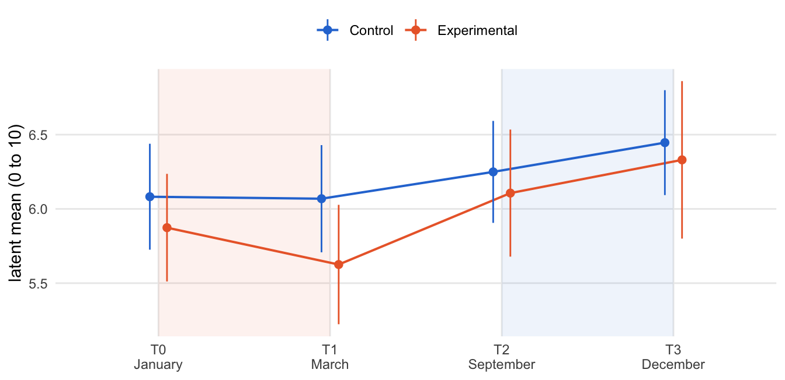
In January the experimental group lies at 5.87, the control group at 6.08. While the experimental group trains (T0 to T1), it changes by -.25 and the control group by -.01; while the control group trains (T2 to T3), it changes by .20 and the experimental group by .22.
Next → Step 5, the difference of these changes: the training effects.
Step 5 · The training effects both groups
How much more does the trained group change? The change of each group in the two training windows, and their difference, as a table and as a figure:
anf_contrasts |>
filter(label %in% c("EG_T01", "CG_T01", "DiD_T01",
"EG_T23", "CG_T23", "DiD_T23")) |>
mutate(across(where(is.double), \(x) round(x, 3)))| label | est | se | pvalue | ci.lower | ci.upper |
|---|---|---|---|---|---|
| EG_T01 | -0.248 | 0.196 | 0.205 | -0.632 | 0.135 |
| CG_T01 | -0.013 | 0.181 | 0.941 | -0.369 | 0.342 |
| DiD_T01 | -0.235 | 0.267 | 0.379 | -0.758 | 0.288 |
| EG_T23 | 0.224 | 0.242 | 0.356 | -0.251 | 0.699 |
| CG_T23 | 0.197 | 0.181 | 0.277 | -0.158 | 0.552 |
| DiD_T23 | 0.027 | 0.302 | 0.929 | -0.564 | 0.618 |
plot_did(anf_fit)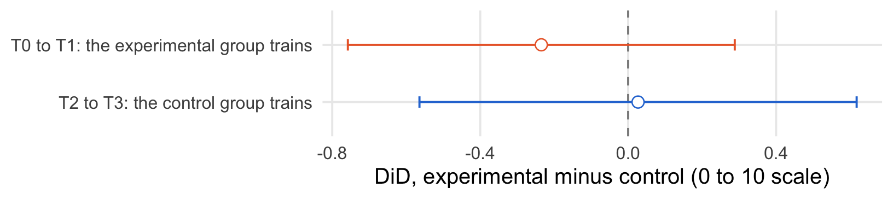
While the experimental group trains, DiD = -.23 (p = .379), not significant. While the control group trains, DiD = .03 (p = .929), not significant.
How large are the effects? The latent d, with the latent standard deviation at T0 pooled over the two groups:
anf_sd_T0 <- pooled_sd_T0(anf_fit)
anf_contrasts |>
filter(label %in% c("DiD_T01", "DiD_T23")) |>
transmute(label, DiD = est, d = est / anf_sd_T0, size = cohen(d)) |>
mutate(across(where(is.double), \(x) round(x, 2)))| label | DiD | d | size |
|---|---|---|---|
| DiD_T01 | -0.23 | -0.11 | negligible |
| DiD_T23 | 0.03 | 0.01 | negligible |
The pooled latent SD at T0 is 2.22; in its units the first effect is d = -.11, negligible, and the second d = .01, negligible. Do the two training effects cancel out? The replication test, DiD (T0 to T1) + DiD (T2 to T3):
anf_contrasts |>
filter(label == "Replication_test") |>
mutate(across(where(is.double), \(x) round(x, 3)))| label | est | se | pvalue | ci.lower | ci.upper |
|---|---|---|---|---|---|
| Replication_test | -0.208 | 0.421 | 0.621 | -1.033 | 0.617 |
The two effects do not detectably differ: their sum is -.21 (p = .621).
Next → Step 6, how the control group changes while it waits.
Step 6 · Drift of the control group control
Does the control group change while it waits? Its change from T0 to T1, T0 to T2 and T1 to T2:
anf_contrasts |>
filter(label %in% c("CG_T01", "CG_T02", "CG_T12")) |>
mutate(across(where(is.double), \(x) round(x, 3)))| label | est | se | pvalue | ci.lower | ci.upper |
|---|---|---|---|---|---|
| CG_T01 | -0.013 | 0.181 | 0.941 | -0.369 | 0.342 |
| CG_T02 | 0.167 | 0.190 | 0.379 | -0.205 | 0.540 |
| CG_T12 | 0.181 | 0.194 | 0.353 | -0.200 | 0.562 |
None of the three changes is significant; the change from T0 to T1, which the first DiD subtracts, is -.01 (p = .941).
Next → Step 7, whether the latent means stay level outside the training.
Robustness · Steps 7 and 8
Step 7 · The restricted model both groups
Do the latent means stay level outside the training? The model of Steps 4 to 6 against the same model with the four equality constraints, from the script; its free model is the model of Steps 4 to 6, with the same χ²:
anf_restricted <- restricted |> filter(construct == "AutonomyNonFrustrated")
anf_restricted |>
transmute(`χ² free` = chisq_free, `χ² restricted` = chisq_restricted,
`Δχ²` = delta_chisq, Δdf = delta_df, p, admissible) |>
mutate(across(where(is.double), \(x) round(x, 3)))| χ² free | χ² restricted | Δχ² | Δdf | p | admissible |
|---|---|---|---|---|---|
| 359.007 | 368.602 | 9.927 | 4 | 0.042 | TRUE |
The four constraints cost Δχ²(4) = 9.93 (p = .042): the data reject them, and the latent means move outside the training as well.
Next → Step 8, the two effects on the sample sets.
Step 8 · The sample sets both groups
Do the effects hold on every sample set? The two training effects on the nine sample sets, from the script, as a figure and as a table; S0 is the model of Steps 4 to 6:
anf_sets <- latent_sets |> filter(construct == "AutonomyNonFrustrated")
plot_sets(anf_sets)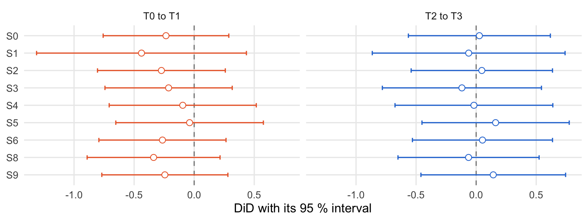
anf_sets |>
unnest(estimates) |>
filter(label %in% c("DiD_T01", "DiD_T23")) |>
select(set, admissible, label, est, pvalue) |>
pivot_wider(names_from = label, values_from = c(est, pvalue),
names_glue = "{label}_{.value}") |>
select(set, admissible, starts_with("DiD_T01"), starts_with("DiD_T23")) |>
mutate(across(where(is.double), \(x) round(x, 3)))| set | admissible | DiD_T01_est | DiD_T01_pvalue | DiD_T23_est | DiD_T23_pvalue |
|---|---|---|---|---|---|
| S0 | TRUE | -0.235 | 0.379 | 0.027 | 0.929 |
| S1 | TRUE | -0.439 | 0.325 | -0.062 | 0.879 |
| S2 | TRUE | -0.273 | 0.315 | 0.047 | 0.875 |
| S3 | TRUE | -0.213 | 0.431 | -0.119 | 0.726 |
| S4 | TRUE | -0.095 | 0.760 | -0.019 | 0.956 |
| S5 | TRUE | -0.038 | 0.903 | 0.162 | 0.605 |
| S6 | TRUE | -0.264 | 0.328 | 0.053 | 0.860 |
| S8 | TRUE | -0.338 | 0.231 | -0.063 | 0.833 |
| S9 | TRUE | -0.244 | 0.362 | 0.142 | 0.643 |
The effect of the first window is significant in the expected direction in 0 of the nine sets, the mirrored effect of the second window in 0.
Next → Step 9, what the steps show together.
What follows · Step 9
Step 9 · What follows
What does Autonomy Non-Frustrated show? The two training effects side by side, T0–T1 while the experimental group trains and T2–T3 while the control group trains, with the correction for testing all 20 constructs at once (11.7) and the nine sample sets of Step 8:
anf_verdict <- verdict_table("AutonomyNonFrustrated",
anf_est, anf_p, anf_d, anf_sets)
show_verdict(anf_verdict)| window | DiD | d | size | p | p corrected | sets with the effect | range in sets |
|---|---|---|---|---|---|---|---|
| T0–T1 | -0.23 | -0.11 | negligible | 0.379 | 0.541 | 0 of 9 | -.44 to -.04 |
| T2–T3 | 0.03 | 0.01 | negligible | 0.929 | 0.958 | 0 of 9 | -.12 to .16 |
Autonomy Non-Frustrated shows no significant training effect in either round. While the experimental group trains, its latent mean changes by -.25 points, that of the control group by -.01; the difference is not significant (DiD = -.23, p = .379). When the control group trains, its latent mean changes by .20 points, that of the experimental group by .22; the difference is not significant (DiD = .03, p = .929). The restricted model of Step 7 is rejected (p = .042): outside the training the latent means do not stay level, although the control group shows no significant change before its own training.
What goes on to Chapter 20? The model and the two effects:
anf_result <- tibble(construct = "AutonomyNonFrustrated",
covariates = TRUE,
direct = list(anf_direct),
fit = list(anf_fit))
anf_result |>
transmute(construct, covariates, direct = map_chr(direct, str_flatten, "; "))| construct | covariates | direct |
|---|---|---|
| AutonomyNonFrustrated | TRUE | AutonomyNonFrustrated4 age_c |
Autonomy Non-Frustrated enters the synthesis of Chapter 20 with both effects, adjusted for age and sex, with the direct effect of Step 3.
Relatedness Non-Frustrated
Its path through the steps. One row per step below; the label marks the data of each step:
| Step | Data | Question | Result | Next |
|---|---|---|---|---|
| 1 | both groups | What is added to Chapter 7? | covariates, contrasts | Chapter 7’s model |
| 2 | both groups | Chapter 7’s model possible, as there? | yes, the same χ² | covariates |
| 3 | both groups | Covariates only through the factors? | yes | latent means |
| 4 | both groups | Latent means | – | effects |
| 5 | both groups | Training effects | T0–T1: n.s.; T2–T3: n.s. | drift |
| 6 | control | Drift while waiting? | none | robustness |
| 7 | both groups | Level outside the training? | yes | sample sets |
| 8 | both groups | Effects on the sample sets? | T0–T1: 0 of 9; T2–T3: 0 of 9 | what follows |
| 9 | What does it show? | no significant effect | Chapter 20 |
The model · Steps 1 to 3
Step 1 · The model both groups
Which model does Chapter 7 hand on? Its status there: the estimates the stop rule set at 0, the items freed, and the autocorrelations:
rnf_status <- invariance$adopted |>
filter(construct == "RelatednessNonFrustrated")
rnf_status |>
transmute(status, set_to_0 = map_chr(set_to_0, \(x) str_flatten(x, "; ")),
freed = map_chr(freed, \(x) str_flatten(x, "; ")))| status | set_to_0 | freed |
|---|---|---|
| partial | Control: RelatednessNonFrustrated2 loadings; Control: RelatednessNonFrustrated2 intercepts |
What does the model look like? In the figure, the factors of the four waves (circles), the items (boxes) and their loadings, the links of the factors (above) and of each item with itself at the next wave (below); in green, the estimates the stop rule of Chapter 7 set at 0 in one group:
plot_model("RelatednessNonFrustrated",
fixed = str_remove(rnf_status$set_to_0[[1]], "^[A-Za-z]+: "))
What does the complete model look like? Its syntax, as did_syntax() writes it: first the final model of Chapter 7, part by part, then what this chapter adds, the covariates on the factor of every wave and the contrasts. A label shared by several lines (such as l1, t1 or a1) holds those estimates equal; c(..., ...) gives the control and the experimental group one each:
show_model(did_syntax(rnf_status))# Chapter 7: one factor per wave; NA* frees the first loading
F_T0 =~ NA*RelatednessNonFrustrated1_T0 +
l1*RelatednessNonFrustrated1_T0 +
c(l2_T0_con, l2)*RelatednessNonFrustrated2_T0 +
l3*RelatednessNonFrustrated3_T0 +
l4*RelatednessNonFrustrated4_T0
F_T1 =~ NA*RelatednessNonFrustrated1_T1 +
l1*RelatednessNonFrustrated1_T1 +
c(l2_T1_con, l2)*RelatednessNonFrustrated2_T1 +
l3*RelatednessNonFrustrated3_T1 +
l4*RelatednessNonFrustrated4_T1
F_T2 =~ NA*RelatednessNonFrustrated1_T2 +
l1*RelatednessNonFrustrated1_T2 +
c(l2_T2_con, l2)*RelatednessNonFrustrated2_T2 +
l3*RelatednessNonFrustrated3_T2 +
l4*RelatednessNonFrustrated4_T2
F_T3 =~ NA*RelatednessNonFrustrated1_T3 +
l1*RelatednessNonFrustrated1_T3 +
c(l2_T3_con, l2)*RelatednessNonFrustrated2_T3 +
l3*RelatednessNonFrustrated3_T3 +
l4*RelatednessNonFrustrated4_T3
# Chapter 7: effects coding: the loadings average 1, the intercepts sum to 0
l1 + l3 + l4 == 3
t1 + t3 + t4 == 0
# Chapter 7: the latent means, free in each group
F_T0 ~ c(m_con_T0, m_exp_T0)*1
F_T1 ~ c(m_con_T1, m_exp_T1)*1
F_T2 ~ c(m_con_T2, m_exp_T2)*1
F_T3 ~ c(m_con_T3, m_exp_T3)*1
# Chapter 7: the intercepts
RelatednessNonFrustrated1_T0 ~ t1*1
RelatednessNonFrustrated2_T0 ~ c(t2_T0_con, t2)*1
RelatednessNonFrustrated3_T0 ~ t3*1
RelatednessNonFrustrated4_T0 ~ t4*1
RelatednessNonFrustrated1_T1 ~ t1*1
RelatednessNonFrustrated2_T1 ~ c(t2_T1_con, t2)*1
RelatednessNonFrustrated3_T1 ~ t3*1
RelatednessNonFrustrated4_T1 ~ t4*1
RelatednessNonFrustrated1_T2 ~ t1*1
RelatednessNonFrustrated2_T2 ~ c(t2_T2_con, t2)*1
RelatednessNonFrustrated3_T2 ~ t3*1
RelatednessNonFrustrated4_T2 ~ t4*1
RelatednessNonFrustrated1_T3 ~ t1*1
RelatednessNonFrustrated2_T3 ~ c(t2_T3_con, t2)*1
RelatednessNonFrustrated3_T3 ~ t3*1
RelatednessNonFrustrated4_T3 ~ t4*1
# Chapter 7: the factors correlate over the waves
F_T0 ~~ F_T1
F_T0 ~~ F_T2
F_T0 ~~ F_T3
F_T1 ~~ F_T2
F_T1 ~~ F_T3
F_T2 ~~ F_T3
# Chapter 7: each item's residual with itself over the waves
RelatednessNonFrustrated1_T0 ~~ RelatednessNonFrustrated1_T1
RelatednessNonFrustrated1_T0 ~~ RelatednessNonFrustrated1_T2
RelatednessNonFrustrated1_T0 ~~ RelatednessNonFrustrated1_T3
RelatednessNonFrustrated1_T1 ~~ RelatednessNonFrustrated1_T2
RelatednessNonFrustrated1_T1 ~~ RelatednessNonFrustrated1_T3
RelatednessNonFrustrated1_T2 ~~ RelatednessNonFrustrated1_T3
RelatednessNonFrustrated2_T0 ~~ RelatednessNonFrustrated2_T1
RelatednessNonFrustrated2_T0 ~~ RelatednessNonFrustrated2_T2
RelatednessNonFrustrated2_T0 ~~ RelatednessNonFrustrated2_T3
RelatednessNonFrustrated2_T1 ~~ RelatednessNonFrustrated2_T2
RelatednessNonFrustrated2_T1 ~~ RelatednessNonFrustrated2_T3
RelatednessNonFrustrated2_T2 ~~ RelatednessNonFrustrated2_T3
RelatednessNonFrustrated3_T0 ~~ RelatednessNonFrustrated3_T1
RelatednessNonFrustrated3_T0 ~~ RelatednessNonFrustrated3_T2
RelatednessNonFrustrated3_T0 ~~ RelatednessNonFrustrated3_T3
RelatednessNonFrustrated3_T1 ~~ RelatednessNonFrustrated3_T2
RelatednessNonFrustrated3_T1 ~~ RelatednessNonFrustrated3_T3
RelatednessNonFrustrated3_T2 ~~ RelatednessNonFrustrated3_T3
RelatednessNonFrustrated4_T0 ~~ RelatednessNonFrustrated4_T1
RelatednessNonFrustrated4_T0 ~~ RelatednessNonFrustrated4_T2
RelatednessNonFrustrated4_T0 ~~ RelatednessNonFrustrated4_T3
RelatednessNonFrustrated4_T1 ~~ RelatednessNonFrustrated4_T2
RelatednessNonFrustrated4_T1 ~~ RelatednessNonFrustrated4_T3
RelatednessNonFrustrated4_T2 ~~ RelatednessNonFrustrated4_T3
# added here: age and sex on the factor of every wave
F_T0 ~ age_c + female_c
F_T1 ~ age_c + female_c
F_T2 ~ age_c + female_c
F_T3 ~ age_c + female_c
# added here: every contrast as a parameter
EG_T01 := (m_exp_T1 - m_exp_T0)
CG_T01 := (m_con_T1 - m_con_T0)
DiD_T01 := (m_exp_T1 - m_exp_T0) - (m_con_T1 - m_con_T0)
EG_T02 := (m_exp_T2 - m_exp_T0)
CG_T02 := (m_con_T2 - m_con_T0)
DiD_T02 := (m_exp_T2 - m_exp_T0) - (m_con_T2 - m_con_T0)
EG_T03 := (m_exp_T3 - m_exp_T0)
CG_T03 := (m_con_T3 - m_con_T0)
DiD_T03 := (m_exp_T3 - m_exp_T0) - (m_con_T3 - m_con_T0)
EG_T12 := (m_exp_T2 - m_exp_T1)
CG_T12 := (m_con_T2 - m_con_T1)
DiD_T12 := (m_exp_T2 - m_exp_T1) - (m_con_T2 - m_con_T1)
EG_T13 := (m_exp_T3 - m_exp_T1)
CG_T13 := (m_con_T3 - m_con_T1)
DiD_T13 := (m_exp_T3 - m_exp_T1) - (m_con_T3 - m_con_T1)
EG_T23 := (m_exp_T3 - m_exp_T2)
CG_T23 := (m_con_T3 - m_con_T2)
DiD_T23 := (m_exp_T3 - m_exp_T2) - (m_con_T3 - m_con_T2)
Replication_test := (m_exp_T1 - m_exp_T0) - (m_con_T1 - m_con_T0) + (m_exp_T3 - m_exp_T2) - (m_con_T3 - m_con_T2)Next → Step 2, the model of Chapter 7 again, without the covariates.
Step 2 · The model of Chapter 7 both groups
What is fitted? The model of Chapter 7 with the contrasts, without the covariates:
rnf_base <- df_wide |>
sem(model = did_syntax(rnf_status, covariates = FALSE), data = _,
group = "condition", estimator = "MLR", missing = "fiml")Does it pass the checks, and is it the model of Chapter 7? The checks of Chapter 7, and its χ² next to that of Chapter 7, Step 8:
rnf_base_checks <- model_checks(rnf_base)
rnf_base_checks| check | what | value | criterion | holds |
|---|---|---|---|---|
| 1 estimation | converged | yes | yes | ✓ |
| 2 variances | smallest residual variance: item 2 at T3 (Experimental) | 1.130 | above 0 | ✓ |
| 3 correlations | largest correlation: the factors at T2 and T3 (Experimental) | .924 | within ±1 | ✓ |
| 4 residuals | smallest eigenvalue of the residual covariances | .627 | above 0 | ✓ |
| 5 factors | smallest eigenvalue of the factor covariances | .230 | above 0 | ✓ |
| 6 standard errors | estimated for every free parameter | yes | yes | ✓ |
| 7 fit | CFI | .961 | reported | – |
| 8 fit | RMSEA [90 % interval] | .042 [.029, .054] | reported | – |
| 9 fit | SRMR | .073 | reported | – |
| 10 strain | largest modification index: item 2 at T0 on the factor at T3 (Control) | 10.5 | reported | – |
| 11 estimates | smallest standardized loading: item 4 at T2 (Control) | .51 | reported | – |
rnf_chapter7 <- invariance$steps |>
filter(construct == "RelatednessNonFrustrated", part == "both groups",
level == "intercepts across groups")
tibble(model = c("here", "Chapter 7"),
chisq = c(fitMeasures(rnf_base, "chisq.scaled"), rnf_chapter7$chisq),
df = c(fitMeasures(rnf_base, "df"), rnf_chapter7$df)) |>
mutate(chisq = round(chisq, 3))| model | chisq | df |
|---|---|---|
| here | 217.097 | 182 |
| Chapter 7 | 217.097 | 182 |
Checks 1 to 6 hold, and the χ² is that of Chapter 7 (217.097): the model is the one Chapter 7 settled on, and the contrasts add no constraint.
Next → Step 3, the same model with the covariates.
Step 3 · The covariates both groups
What is fitted? The model of Step 1, with age and sex on the factors, and the comparison model, with a direct effect of each on every item at every wave and no path to the factors:
rnf_covariates <- df_wide |>
sem(model = did_syntax(rnf_status), data = _, group = "condition",
estimator = "MLR", missing = "fiml.x")
rnf_everywhere <- df_wide |>
sem(model = direct_everywhere(rnf_status), data = _, group = "condition",
estimator = "MLR", missing = "fiml.x")What does the comparison model hold? The model of Chapter 7 from Step 1, and in place of the paths to the factors a direct effect of age and sex on every item at every wave; it needs no contrasts. These are its lines beyond Chapter 7:
show_model(direct_everywhere(rnf_status), added_only = TRUE)# added here: age or sex directly on single items
RelatednessNonFrustrated1_T0 ~ age_c + female_c
RelatednessNonFrustrated2_T0 ~ age_c + female_c
RelatednessNonFrustrated3_T0 ~ age_c + female_c
RelatednessNonFrustrated4_T0 ~ age_c + female_c
RelatednessNonFrustrated1_T1 ~ age_c + female_c
RelatednessNonFrustrated2_T1 ~ age_c + female_c
RelatednessNonFrustrated3_T1 ~ age_c + female_c
RelatednessNonFrustrated4_T1 ~ age_c + female_c
RelatednessNonFrustrated1_T2 ~ age_c + female_c
RelatednessNonFrustrated2_T2 ~ age_c + female_c
RelatednessNonFrustrated3_T2 ~ age_c + female_c
RelatednessNonFrustrated4_T2 ~ age_c + female_c
RelatednessNonFrustrated1_T3 ~ age_c + female_c
RelatednessNonFrustrated2_T3 ~ age_c + female_c
RelatednessNonFrustrated3_T3 ~ age_c + female_c
RelatednessNonFrustrated4_T3 ~ age_c + female_cDoes the model with the covariates pass the checks?
rnf_covariates_checks <- model_checks(rnf_covariates)
rnf_covariates_checks| check | what | value | criterion | holds |
|---|---|---|---|---|
| 1 estimation | converged | yes | yes | ✓ |
| 2 variances | .090 | above 0 | ✓ | |
| 3 correlations | largest correlation: the factors at T2 and T3 (Experimental) | .926 | within ±1 | ✓ |
| 4 residuals | smallest eigenvalue of the residual covariances | .089 | above 0 | ✓ |
| 5 factors | smallest eigenvalue of the factor covariances | .228 | above 0 | ✓ |
| 6 standard errors | estimated for every free parameter | yes | yes | ✓ |
| 7 fit | CFI | .961 | reported | – |
| 8 fit | RMSEA [90 % interval] | .037 [.024, .048] | reported | – |
| 9 fit | SRMR | .071 | reported | – |
| 10 strain | largest modification index: item 2 with item 3 at T3 (Control) | 9.9 | reported | – |
| 11 estimates | smallest standardized loading: item 4 at T2 (Control) | .51 | reported | – |
Checks 1 to 6 hold. Its CFI, .961, stands beside .961 in Step 2, for description only: the two models do not hold the same variables. Do age and sex act only through the factors? The model of Step 1 against the comparison model:
rnf_step <- covariate_step(rnf_covariates, rnf_everywhere)
show_step(rnf_step)| model | df | CFI | RMSEA | ΔCFI | ΔRMSEA | p | Chen |
|---|---|---|---|---|---|---|---|
| direct effects on every item | 182 | 0.958 | 0.043 | ||||
| only through the factors | 230 | 0.961 | 0.037 | 0.003 | -0.006 | 0.562 | ✓ |
They do, under Chen’s cutoffs (ΔCFI = .003, ΔRMSEA = -.006; χ² test: p = .562): the covariates enter as specified.
rnf_fit <- rnf_covariates # the model of Steps 4 to 8Next → Step 4, the latent means of this model.
The effects · Steps 4 to 6
Step 4 · Latent means both groups
Where does each group stand at each wave? The eight latent means with their 95 % confidence intervals, at the sample’s average age and share of women:
rnf_means <- parameterEstimates(rnf_fit) |>
filter(op == "~1", str_starts(lhs, "F_")) |>
select(label, est, se, ci.lower, ci.upper)
# the contrasts between them, for Steps 4 to 6
rnf_contrasts <- contrasts_of(rnf_fit, c(
"EG_T01", "CG_T01", "DiD_T01", "EG_T23", "CG_T23", "DiD_T23",
"Replication_test", "CG_T02", "CG_T12"))
rnf_means |>
mutate(across(where(is.double), \(x) round(x, 2)))| label | est | se | ci.lower | ci.upper |
|---|---|---|---|---|
| m_con_T0 | 8.14 | 0.15 | 7.85 | 8.43 |
| m_con_T1 | 8.08 | 0.16 | 7.76 | 8.40 |
| m_con_T2 | 7.91 | 0.16 | 7.61 | 8.22 |
| m_con_T3 | 7.92 | 0.20 | 7.53 | 8.30 |
| m_exp_T0 | 7.84 | 0.15 | 7.54 | 8.15 |
| m_exp_T1 | 7.74 | 0.20 | 7.35 | 8.12 |
| m_exp_T2 | 8.04 | 0.21 | 7.64 | 8.45 |
| m_exp_T3 | 8.01 | 0.23 | 7.55 | 8.47 |
plot_latent_means(rnf_fit)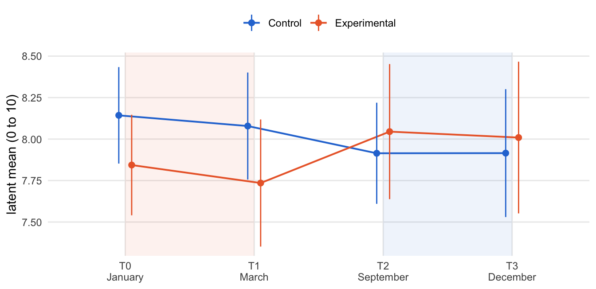
In January the experimental group lies at 7.84, the control group at 8.14. While the experimental group trains (T0 to T1), it changes by -.11 and the control group by -.06; while the control group trains (T2 to T3), it changes by .00 and the experimental group by -.04.
Next → Step 5, the difference of these changes: the training effects.
Step 5 · The training effects both groups
How much more does the trained group change? The change of each group in the two training windows, and their difference, as a table and as a figure:
rnf_contrasts |>
filter(label %in% c("EG_T01", "CG_T01", "DiD_T01",
"EG_T23", "CG_T23", "DiD_T23")) |>
mutate(across(where(is.double), \(x) round(x, 3)))| label | est | se | pvalue | ci.lower | ci.upper |
|---|---|---|---|---|---|
| EG_T01 | -0.108 | 0.175 | 0.535 | -0.451 | 0.234 |
| CG_T01 | -0.064 | 0.174 | 0.712 | -0.406 | 0.277 |
| DiD_T01 | -0.044 | 0.246 | 0.858 | -0.526 | 0.438 |
| EG_T23 | -0.036 | 0.181 | 0.843 | -0.390 | 0.318 |
| CG_T23 | 0.001 | 0.189 | 0.996 | -0.369 | 0.371 |
| DiD_T23 | -0.037 | 0.263 | 0.889 | -0.551 | 0.478 |
plot_did(rnf_fit)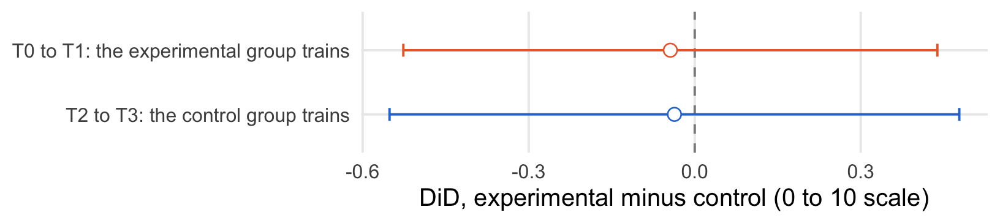
While the experimental group trains, DiD = -.04 (p = .858), not significant. While the control group trains, DiD = -.04 (p = .889), not significant.
How large are the effects? The latent d, with the latent standard deviation at T0 pooled over the two groups:
rnf_sd_T0 <- pooled_sd_T0(rnf_fit)
rnf_contrasts |>
filter(label %in% c("DiD_T01", "DiD_T23")) |>
transmute(label, DiD = est, d = est / rnf_sd_T0, size = cohen(d)) |>
mutate(across(where(is.double), \(x) round(x, 2)))| label | DiD | d | size |
|---|---|---|---|
| DiD_T01 | -0.04 | -0.02 | negligible |
| DiD_T23 | -0.04 | -0.02 | negligible |
The pooled latent SD at T0 is 1.83; in its units the first effect is d = -.02, negligible, and the second d = -.02, negligible. Do the two training effects cancel out? The replication test, DiD (T0 to T1) + DiD (T2 to T3):
rnf_contrasts |>
filter(label == "Replication_test") |>
mutate(across(where(is.double), \(x) round(x, 3)))| label | est | se | pvalue | ci.lower | ci.upper |
|---|---|---|---|---|---|
| Replication_test | -0.081 | 0.356 | 0.821 | -0.779 | 0.618 |
The two effects do not detectably differ: their sum is -.08 (p = .821).
Next → Step 6, how the control group changes while it waits.
Step 6 · Drift of the control group control
Does the control group change while it waits? Its change from T0 to T1, T0 to T2 and T1 to T2:
rnf_contrasts |>
filter(label %in% c("CG_T01", "CG_T02", "CG_T12")) |>
mutate(across(where(is.double), \(x) round(x, 3)))| label | est | se | pvalue | ci.lower | ci.upper |
|---|---|---|---|---|---|
| CG_T01 | -0.064 | 0.174 | 0.712 | -0.406 | 0.277 |
| CG_T02 | -0.229 | 0.160 | 0.152 | -0.541 | 0.084 |
| CG_T12 | -0.164 | 0.161 | 0.307 | -0.479 | 0.151 |
None of the three changes is significant; the change from T0 to T1, which the first DiD subtracts, is -.06 (p = .712).
Next → Step 7, whether the latent means stay level outside the training.
Robustness · Steps 7 and 8
Step 7 · The restricted model both groups
Do the latent means stay level outside the training? The model of Steps 4 to 6 against the same model with the four equality constraints, from the script; its free model is the model of Steps 4 to 6, with the same χ²:
rnf_restricted <- restricted |> filter(construct == "RelatednessNonFrustrated")
rnf_restricted |>
transmute(`χ² free` = chisq_free, `χ² restricted` = chisq_restricted,
`Δχ²` = delta_chisq, Δdf = delta_df, p, admissible) |>
mutate(across(where(is.double), \(x) round(x, 3)))| χ² free | χ² restricted | Δχ² | Δdf | p | admissible |
|---|---|---|---|---|---|
| 270.279 | 275.221 | 4.953 | 4 | 0.292 | TRUE |
The four constraints cost Δχ²(4) = 4.95 (p = .292), and the data do not reject them: the latent means stay level outside the training.
Next → Step 8, the two effects on the sample sets.
Step 8 · The sample sets both groups
Do the effects hold on every sample set? The two training effects on the nine sample sets, from the script, as a figure and as a table; S0 is the model of Steps 4 to 6:
rnf_sets <- latent_sets |> filter(construct == "RelatednessNonFrustrated")
plot_sets(rnf_sets)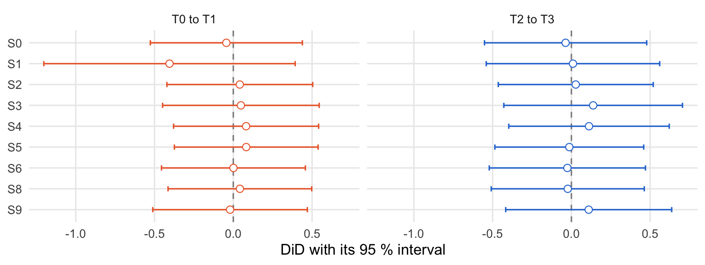
rnf_sets |>
unnest(estimates) |>
filter(label %in% c("DiD_T01", "DiD_T23")) |>
select(set, admissible, label, est, pvalue) |>
pivot_wider(names_from = label, values_from = c(est, pvalue),
names_glue = "{label}_{.value}") |>
select(set, admissible, starts_with("DiD_T01"), starts_with("DiD_T23")) |>
mutate(across(where(is.double), \(x) round(x, 3)))| set | admissible | DiD_T01_est | DiD_T01_pvalue | DiD_T23_est | DiD_T23_pvalue |
|---|---|---|---|---|---|
| S0 | TRUE | -0.044 | 0.858 | -0.037 | 0.889 |
| S1 | FALSE | -0.405 | 0.320 | 0.010 | 0.971 |
| S2 | TRUE | 0.041 | 0.861 | 0.028 | 0.912 |
| S3 | TRUE | 0.048 | 0.849 | 0.138 | 0.633 |
| S4 | TRUE | 0.081 | 0.729 | 0.112 | 0.667 |
| S5 | TRUE | 0.082 | 0.724 | -0.013 | 0.956 |
| S6 | TRUE | 0.001 | 0.997 | -0.026 | 0.920 |
| S8 | TRUE | 0.042 | 0.857 | -0.023 | 0.926 |
| S9 | TRUE | -0.021 | 0.934 | 0.110 | 0.683 |
The effect of the first window is significant in the expected direction in 0 of the nine sets, the mirrored effect of the second window in 0. In 1 of the sets the solution is not possible (a negative variance or covariances that are not positive definite, on fewer persons than S0); their estimates are read with caution.
Next → Step 9, what the steps show together.
What follows · Step 9
Step 9 · What follows
What does Relatedness Non-Frustrated show? The two training effects side by side, T0–T1 while the experimental group trains and T2–T3 while the control group trains, with the correction for testing all 20 constructs at once (11.7) and the nine sample sets of Step 8:
rnf_verdict <- verdict_table("RelatednessNonFrustrated",
rnf_est, rnf_p, rnf_d, rnf_sets)
show_verdict(rnf_verdict)| window | DiD | d | size | p | p corrected | sets with the effect | range in sets |
|---|---|---|---|---|---|---|---|
| T0–T1 | -0.04 | -0.02 | negligible | 0.858 | 0.908 | 0 of 9 | -.40 to .08 |
| T2–T3 | -0.04 | -0.02 | negligible | 0.889 | 0.958 | 0 of 9 | -.04 to .14 |
Relatedness Non-Frustrated shows no significant training effect in either round. While the experimental group trains, its latent mean changes by -.11 points, that of the control group by -.06; the difference is not significant (DiD = -.04, p = .858). When the control group trains, its latent mean changes by .00 points, that of the experimental group by -.04; the difference is not significant (DiD = -.04, p = .889). Outside the training the latent means stay level: the control group does not change before its own training, and the restricted model of Step 7 holds (p = .292).
What goes on to Chapter 20? The model and the two effects:
rnf_result <- tibble(construct = "RelatednessNonFrustrated",
covariates = TRUE,
direct = list(character()),
fit = list(rnf_fit))
rnf_result |>
transmute(construct, covariates, direct = map_chr(direct, str_flatten, "; "))| construct | covariates | direct |
|---|---|---|
| RelatednessNonFrustrated | TRUE |
Relatedness Non-Frustrated enters the synthesis of Chapter 20 with both effects, adjusted for age and sex.
Competence Non-Frustrated
Its path through the steps. One row per step below; the label marks the data of each step:
| Step | Data | Question | Result | Next |
|---|---|---|---|---|
| 1 | both groups | What is added to Chapter 7? | covariates, contrasts | Chapter 7’s model |
| 2 | both groups | Chapter 7’s model possible, as there? | yes, the same χ² | covariates |
| 3 | both groups | Covariates only through the factors? | yes | latent means |
| 4 | both groups | Latent means | – | effects |
| 5 | both groups | Training effects | T0–T1: n.s.; T2–T3: n.s. | drift |
| 6 | control | Drift while waiting? | yes, T1 to T2 | robustness |
| 7 | both groups | Level outside the training? | no | sample sets |
| 8 | both groups | Effects on the sample sets? | T0–T1: 0 of 9; T2–T3: 0 of 9 | what follows |
| 9 | What does it show? | no significant effect | Chapter 20 |
The model · Steps 1 to 3
Step 1 · The model both groups
Which model does Chapter 7 hand on? Its status there: the estimates the stop rule set at 0, the items freed, and the autocorrelations:
cnf_status <- invariance$adopted |>
filter(construct == "CompetenceNonFrustrated")
cnf_status |>
transmute(status, set_to_0 = map_chr(set_to_0, \(x) str_flatten(x, "; ")),
freed = map_chr(freed, \(x) str_flatten(x, "; ")))| status | set_to_0 | freed |
|---|---|---|
| as specified |
What does the model look like? In the figure, the factors of the four waves (circles), the items (boxes) and their loadings, the links of the factors (above) and of each item with itself at the next wave (below); in green, the estimates the stop rule of Chapter 7 set at 0 in one group:
plot_model("CompetenceNonFrustrated",
fixed = str_remove(cnf_status$set_to_0[[1]], "^[A-Za-z]+: "))
What does the complete model look like? Its syntax, as did_syntax() writes it: first the final model of Chapter 7, part by part, then what this chapter adds, the covariates on the factor of every wave and the contrasts. A label shared by several lines (such as l1, t1 or a1) holds those estimates equal; c(..., ...) gives the control and the experimental group one each:
show_model(did_syntax(cnf_status))# Chapter 7: one factor per wave; NA* frees the first loading
F_T0 =~ NA*CompetenceNonFrustrated1_T0 +
l1*CompetenceNonFrustrated1_T0 +
l2*CompetenceNonFrustrated2_T0 +
l3*CompetenceNonFrustrated3_T0 +
l4*CompetenceNonFrustrated4_T0
F_T1 =~ NA*CompetenceNonFrustrated1_T1 +
l1*CompetenceNonFrustrated1_T1 +
l2*CompetenceNonFrustrated2_T1 +
l3*CompetenceNonFrustrated3_T1 +
l4*CompetenceNonFrustrated4_T1
F_T2 =~ NA*CompetenceNonFrustrated1_T2 +
l1*CompetenceNonFrustrated1_T2 +
l2*CompetenceNonFrustrated2_T2 +
l3*CompetenceNonFrustrated3_T2 +
l4*CompetenceNonFrustrated4_T2
F_T3 =~ NA*CompetenceNonFrustrated1_T3 +
l1*CompetenceNonFrustrated1_T3 +
l2*CompetenceNonFrustrated2_T3 +
l3*CompetenceNonFrustrated3_T3 +
l4*CompetenceNonFrustrated4_T3
# Chapter 7: effects coding: the loadings average 1, the intercepts sum to 0
l1 + l2 + l3 + l4 == 4
t1 + t2 + t3 + t4 == 0
# Chapter 7: the latent means, free in each group
F_T0 ~ c(m_con_T0, m_exp_T0)*1
F_T1 ~ c(m_con_T1, m_exp_T1)*1
F_T2 ~ c(m_con_T2, m_exp_T2)*1
F_T3 ~ c(m_con_T3, m_exp_T3)*1
# Chapter 7: the intercepts
CompetenceNonFrustrated1_T0 ~ t1*1
CompetenceNonFrustrated2_T0 ~ t2*1
CompetenceNonFrustrated3_T0 ~ t3*1
CompetenceNonFrustrated4_T0 ~ t4*1
CompetenceNonFrustrated1_T1 ~ t1*1
CompetenceNonFrustrated2_T1 ~ t2*1
CompetenceNonFrustrated3_T1 ~ t3*1
CompetenceNonFrustrated4_T1 ~ t4*1
CompetenceNonFrustrated1_T2 ~ t1*1
CompetenceNonFrustrated2_T2 ~ t2*1
CompetenceNonFrustrated3_T2 ~ t3*1
CompetenceNonFrustrated4_T2 ~ t4*1
CompetenceNonFrustrated1_T3 ~ t1*1
CompetenceNonFrustrated2_T3 ~ t2*1
CompetenceNonFrustrated3_T3 ~ t3*1
CompetenceNonFrustrated4_T3 ~ t4*1
# Chapter 7: the factors correlate over the waves
F_T0 ~~ F_T1
F_T0 ~~ F_T2
F_T0 ~~ F_T3
F_T1 ~~ F_T2
F_T1 ~~ F_T3
F_T2 ~~ F_T3
# Chapter 7: each item's residual with itself over the waves
CompetenceNonFrustrated1_T0 ~~ CompetenceNonFrustrated1_T1
CompetenceNonFrustrated1_T0 ~~ CompetenceNonFrustrated1_T2
CompetenceNonFrustrated1_T0 ~~ CompetenceNonFrustrated1_T3
CompetenceNonFrustrated1_T1 ~~ CompetenceNonFrustrated1_T2
CompetenceNonFrustrated1_T1 ~~ CompetenceNonFrustrated1_T3
CompetenceNonFrustrated1_T2 ~~ CompetenceNonFrustrated1_T3
CompetenceNonFrustrated2_T0 ~~ CompetenceNonFrustrated2_T1
CompetenceNonFrustrated2_T0 ~~ CompetenceNonFrustrated2_T2
CompetenceNonFrustrated2_T0 ~~ CompetenceNonFrustrated2_T3
CompetenceNonFrustrated2_T1 ~~ CompetenceNonFrustrated2_T2
CompetenceNonFrustrated2_T1 ~~ CompetenceNonFrustrated2_T3
CompetenceNonFrustrated2_T2 ~~ CompetenceNonFrustrated2_T3
CompetenceNonFrustrated3_T0 ~~ CompetenceNonFrustrated3_T1
CompetenceNonFrustrated3_T0 ~~ CompetenceNonFrustrated3_T2
CompetenceNonFrustrated3_T0 ~~ CompetenceNonFrustrated3_T3
CompetenceNonFrustrated3_T1 ~~ CompetenceNonFrustrated3_T2
CompetenceNonFrustrated3_T1 ~~ CompetenceNonFrustrated3_T3
CompetenceNonFrustrated3_T2 ~~ CompetenceNonFrustrated3_T3
CompetenceNonFrustrated4_T0 ~~ CompetenceNonFrustrated4_T1
CompetenceNonFrustrated4_T0 ~~ CompetenceNonFrustrated4_T2
CompetenceNonFrustrated4_T0 ~~ CompetenceNonFrustrated4_T3
CompetenceNonFrustrated4_T1 ~~ CompetenceNonFrustrated4_T2
CompetenceNonFrustrated4_T1 ~~ CompetenceNonFrustrated4_T3
CompetenceNonFrustrated4_T2 ~~ CompetenceNonFrustrated4_T3
# added here: age and sex on the factor of every wave
F_T0 ~ age_c + female_c
F_T1 ~ age_c + female_c
F_T2 ~ age_c + female_c
F_T3 ~ age_c + female_c
# added here: every contrast as a parameter
EG_T01 := (m_exp_T1 - m_exp_T0)
CG_T01 := (m_con_T1 - m_con_T0)
DiD_T01 := (m_exp_T1 - m_exp_T0) - (m_con_T1 - m_con_T0)
EG_T02 := (m_exp_T2 - m_exp_T0)
CG_T02 := (m_con_T2 - m_con_T0)
DiD_T02 := (m_exp_T2 - m_exp_T0) - (m_con_T2 - m_con_T0)
EG_T03 := (m_exp_T3 - m_exp_T0)
CG_T03 := (m_con_T3 - m_con_T0)
DiD_T03 := (m_exp_T3 - m_exp_T0) - (m_con_T3 - m_con_T0)
EG_T12 := (m_exp_T2 - m_exp_T1)
CG_T12 := (m_con_T2 - m_con_T1)
DiD_T12 := (m_exp_T2 - m_exp_T1) - (m_con_T2 - m_con_T1)
EG_T13 := (m_exp_T3 - m_exp_T1)
CG_T13 := (m_con_T3 - m_con_T1)
DiD_T13 := (m_exp_T3 - m_exp_T1) - (m_con_T3 - m_con_T1)
EG_T23 := (m_exp_T3 - m_exp_T2)
CG_T23 := (m_con_T3 - m_con_T2)
DiD_T23 := (m_exp_T3 - m_exp_T2) - (m_con_T3 - m_con_T2)
Replication_test := (m_exp_T1 - m_exp_T0) - (m_con_T1 - m_con_T0) + (m_exp_T3 - m_exp_T2) - (m_con_T3 - m_con_T2)Next → Step 2, the model of Chapter 7 again, without the covariates.
Step 2 · The model of Chapter 7 both groups
What is fitted? The model of Chapter 7 with the contrasts, without the covariates:
cnf_base <- df_wide |>
sem(model = did_syntax(cnf_status, covariates = FALSE), data = _,
group = "condition", estimator = "MLR", missing = "fiml")Does it pass the checks, and is it the model of Chapter 7? The checks of Chapter 7, and its χ² next to that of Chapter 7, Step 8:
cnf_base_checks <- model_checks(cnf_base)
cnf_base_checks| check | what | value | criterion | holds |
|---|---|---|---|---|
| 1 estimation | converged | yes | yes | ✓ |
| 2 variances | smallest residual variance: item 3 at T3 (Experimental) | 1.400 | above 0 | ✓ |
| 3 correlations | largest correlation: the factors at T2 and T3 (Experimental) | .815 | within ±1 | ✓ |
| 4 residuals | smallest eigenvalue of the residual covariances | .344 | above 0 | ✓ |
| 5 factors | smallest eigenvalue of the factor covariances | .489 | above 0 | ✓ |
| 6 standard errors | estimated for every free parameter | yes | yes | ✓ |
| 7 fit | CFI | .955 | reported | – |
| 8 fit | RMSEA [90 % interval] | .049 [.038, .060] | reported | – |
| 9 fit | SRMR | .073 | reported | – |
| 10 strain | largest modification index: item 2 with item 4 at T0 (Control) | 10.0 | reported | – |
| 11 estimates | smallest standardized loading: item 1 at T2 (Control) | .67 | reported | – |
cnf_chapter7 <- invariance$steps |>
filter(construct == "CompetenceNonFrustrated", part == "both groups",
level == "intercepts across groups")
tibble(model = c("here", "Chapter 7"),
chisq = c(fitMeasures(cnf_base, "chisq.scaled"), cnf_chapter7$chisq),
df = c(fitMeasures(cnf_base, "df"), cnf_chapter7$df)) |>
mutate(chisq = round(chisq, 3))| model | chisq | df |
|---|---|---|
| here | 248.43 | 190 |
| Chapter 7 | 248.43 | 190 |
Checks 1 to 6 hold, and the χ² is that of Chapter 7 (248.430): the model is the one Chapter 7 settled on, and the contrasts add no constraint.
Next → Step 3, the same model with the covariates.
Step 3 · The covariates both groups
What is fitted? The model of Step 1, with age and sex on the factors, and the comparison model, with a direct effect of each on every item at every wave and no path to the factors:
cnf_covariates <- df_wide |>
sem(model = did_syntax(cnf_status), data = _, group = "condition",
estimator = "MLR", missing = "fiml.x")
cnf_everywhere <- df_wide |>
sem(model = direct_everywhere(cnf_status), data = _, group = "condition",
estimator = "MLR", missing = "fiml.x")What does the comparison model hold? The model of Chapter 7 from Step 1, and in place of the paths to the factors a direct effect of age and sex on every item at every wave; it needs no contrasts. These are its lines beyond Chapter 7:
show_model(direct_everywhere(cnf_status), added_only = TRUE)# added here: age or sex directly on single items
CompetenceNonFrustrated1_T0 ~ age_c + female_c
CompetenceNonFrustrated2_T0 ~ age_c + female_c
CompetenceNonFrustrated3_T0 ~ age_c + female_c
CompetenceNonFrustrated4_T0 ~ age_c + female_c
CompetenceNonFrustrated1_T1 ~ age_c + female_c
CompetenceNonFrustrated2_T1 ~ age_c + female_c
CompetenceNonFrustrated3_T1 ~ age_c + female_c
CompetenceNonFrustrated4_T1 ~ age_c + female_c
CompetenceNonFrustrated1_T2 ~ age_c + female_c
CompetenceNonFrustrated2_T2 ~ age_c + female_c
CompetenceNonFrustrated3_T2 ~ age_c + female_c
CompetenceNonFrustrated4_T2 ~ age_c + female_c
CompetenceNonFrustrated1_T3 ~ age_c + female_c
CompetenceNonFrustrated2_T3 ~ age_c + female_c
CompetenceNonFrustrated3_T3 ~ age_c + female_c
CompetenceNonFrustrated4_T3 ~ age_c + female_cDoes the model with the covariates pass the checks?
cnf_covariates_checks <- model_checks(cnf_covariates)
cnf_covariates_checks| check | what | value | criterion | holds |
|---|---|---|---|---|
| 1 estimation | converged | yes | yes | ✓ |
| 2 variances | .090 | above 0 | ✓ | |
| 3 correlations | largest correlation: the factors at T2 and T3 (Experimental) | .807 | within ±1 | ✓ |
| 4 residuals | smallest eigenvalue of the residual covariances | .090 | above 0 | ✓ |
| 5 factors | smallest eigenvalue of the factor covariances | .503 | above 0 | ✓ |
| 6 standard errors | estimated for every free parameter | yes | yes | ✓ |
| 7 fit | CFI | .951 | reported | – |
| 8 fit | RMSEA [90 % interval] | .046 [.036, .056] | reported | – |
| 9 fit | SRMR | .072 | reported | – |
| 10 strain | largest modification index: item 2 with item 4 at T0 (Control) | 10.7 | reported | – |
| 11 estimates | smallest standardized loading: item 1 at T2 (Control) | .67 | reported | – |
Checks 1 to 6 hold. Its CFI, .951, stands beside .955 in Step 2, for description only: the two models do not hold the same variables. Do age and sex act only through the factors? The model of Step 1 against the comparison model:
cnf_step <- covariate_step(cnf_covariates, cnf_everywhere)
show_step(cnf_step)| model | df | CFI | RMSEA | ΔCFI | ΔRMSEA | p | Chen |
|---|---|---|---|---|---|---|---|
| direct effects on every item | 190 | 0.955 | 0.050 | ||||
| only through the factors | 238 | 0.951 | 0.046 | -0.004 | -0.003 | 0.062 | ✓ |
They do, under Chen’s cutoffs (ΔCFI = -.004, ΔRMSEA = -.003; χ² test: p = .062): the covariates enter as specified.
cnf_fit <- cnf_covariates # the model of Steps 4 to 8Next → Step 4, the latent means of this model.
The effects · Steps 4 to 6
Step 4 · Latent means both groups
Where does each group stand at each wave? The eight latent means with their 95 % confidence intervals, at the sample’s average age and share of women:
cnf_means <- parameterEstimates(cnf_fit) |>
filter(op == "~1", str_starts(lhs, "F_")) |>
select(label, est, se, ci.lower, ci.upper)
# the contrasts between them, for Steps 4 to 6
cnf_contrasts <- contrasts_of(cnf_fit, c(
"EG_T01", "CG_T01", "DiD_T01", "EG_T23", "CG_T23", "DiD_T23",
"Replication_test", "CG_T02", "CG_T12"))
cnf_means |>
mutate(across(where(is.double), \(x) round(x, 2)))| label | est | se | ci.lower | ci.upper |
|---|---|---|---|---|
| m_con_T0 | 8.33 | 0.15 | 8.04 | 8.61 |
| m_con_T1 | 8.41 | 0.15 | 8.13 | 8.70 |
| m_con_T2 | 8.07 | 0.16 | 7.75 | 8.39 |
| m_con_T3 | 8.34 | 0.17 | 8.01 | 8.66 |
| m_exp_T0 | 7.86 | 0.17 | 7.52 | 8.20 |
| m_exp_T1 | 7.78 | 0.21 | 7.37 | 8.19 |
| m_exp_T2 | 8.12 | 0.21 | 7.70 | 8.54 |
| m_exp_T3 | 8.21 | 0.24 | 7.74 | 8.69 |
plot_latent_means(cnf_fit)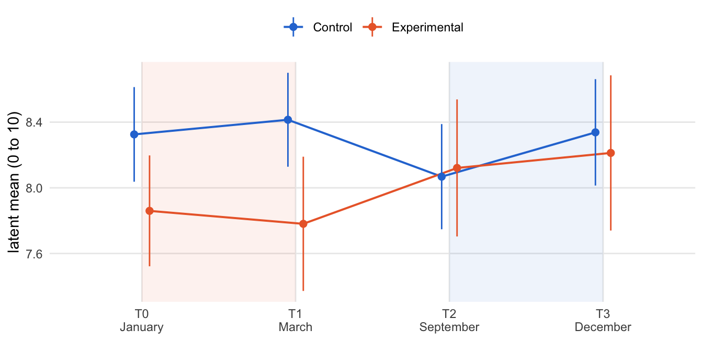
In January the experimental group lies at 7.86, the control group at 8.33. While the experimental group trains (T0 to T1), it changes by -.08 and the control group by .09; while the control group trains (T2 to T3), it changes by .27 and the experimental group by .09.
Next → Step 5, the difference of these changes: the training effects.
Step 5 · The training effects both groups
How much more does the trained group change? The change of each group in the two training windows, and their difference, as a table and as a figure:
cnf_contrasts |>
filter(label %in% c("EG_T01", "CG_T01", "DiD_T01",
"EG_T23", "CG_T23", "DiD_T23")) |>
mutate(across(where(is.double), \(x) round(x, 3)))| label | est | se | pvalue | ci.lower | ci.upper |
|---|---|---|---|---|---|
| EG_T01 | -0.079 | 0.173 | 0.647 | -0.417 | 0.259 |
| CG_T01 | 0.089 | 0.160 | 0.578 | -0.225 | 0.403 |
| DiD_T01 | -0.168 | 0.234 | 0.472 | -0.627 | 0.291 |
| EG_T23 | 0.092 | 0.231 | 0.692 | -0.361 | 0.544 |
| CG_T23 | 0.270 | 0.169 | 0.111 | -0.062 | 0.602 |
| DiD_T23 | -0.178 | 0.289 | 0.536 | -0.744 | 0.387 |
plot_did(cnf_fit)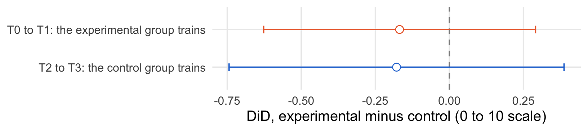
While the experimental group trains, DiD = -.17 (p = .472), not significant. While the control group trains, DiD = -.18 (p = .536), not significant.
How large are the effects? The latent d, with the latent standard deviation at T0 pooled over the two groups:
cnf_sd_T0 <- pooled_sd_T0(cnf_fit)
cnf_contrasts |>
filter(label %in% c("DiD_T01", "DiD_T23")) |>
transmute(label, DiD = est, d = est / cnf_sd_T0, size = cohen(d)) |>
mutate(across(where(is.double), \(x) round(x, 2)))| label | DiD | d | size |
|---|---|---|---|
| DiD_T01 | -0.17 | -0.08 | negligible |
| DiD_T23 | -0.18 | -0.09 | negligible |
The pooled latent SD at T0 is 1.98; in its units the first effect is d = -.08, negligible, and the second d = -.09, negligible. Do the two training effects cancel out? The replication test, DiD (T0 to T1) + DiD (T2 to T3):
cnf_contrasts |>
filter(label == "Replication_test") |>
mutate(across(where(is.double), \(x) round(x, 3)))| label | est | se | pvalue | ci.lower | ci.upper |
|---|---|---|---|---|---|
| Replication_test | -0.347 | 0.344 | 0.313 | -1.02 | 0.327 |
The two effects do not detectably differ: their sum is -.35 (p = .313).
Next → Step 6, how the control group changes while it waits.
Step 6 · Drift of the control group control
Does the control group change while it waits? Its change from T0 to T1, T0 to T2 and T1 to T2:
cnf_contrasts |>
filter(label %in% c("CG_T01", "CG_T02", "CG_T12")) |>
mutate(across(where(is.double), \(x) round(x, 3)))| label | est | se | pvalue | ci.lower | ci.upper |
|---|---|---|---|---|---|
| CG_T01 | 0.089 | 0.160 | 0.578 | -0.225 | 0.403 |
| CG_T02 | -0.257 | 0.159 | 0.106 | -0.569 | 0.054 |
| CG_T12 | -0.347 | 0.149 | 0.020 | -0.638 | -0.056 |
The control group changes significantly from T1 to T2 before its own training; the change from T0 to T1, which the first DiD subtracts, is .09 (p = .578).
Next → Step 7, whether the latent means stay level outside the training.
Robustness · Steps 7 and 8
Step 7 · The restricted model both groups
Do the latent means stay level outside the training? The model of Steps 4 to 6 against the same model with the four equality constraints, from the script; its free model is the model of Steps 4 to 6, with the same χ²:
cnf_restricted <- restricted |> filter(construct == "CompetenceNonFrustrated")
cnf_restricted |>
transmute(`χ² free` = chisq_free, `χ² restricted` = chisq_restricted,
`Δχ²` = delta_chisq, Δdf = delta_df, p, admissible) |>
mutate(across(where(is.double), \(x) round(x, 3)))| χ² free | χ² restricted | Δχ² | Δdf | p | admissible |
|---|---|---|---|---|---|
| 311.373 | 320.604 | 9.72 | 4 | 0.045 | TRUE |
The four constraints cost Δχ²(4) = 9.72 (p = .045): the data reject them, and the latent means move outside the training as well.
Next → Step 8, the two effects on the sample sets.
Step 8 · The sample sets both groups
Do the effects hold on every sample set? The two training effects on the nine sample sets, from the script, as a figure and as a table; S0 is the model of Steps 4 to 6:
cnf_sets <- latent_sets |> filter(construct == "CompetenceNonFrustrated")
plot_sets(cnf_sets)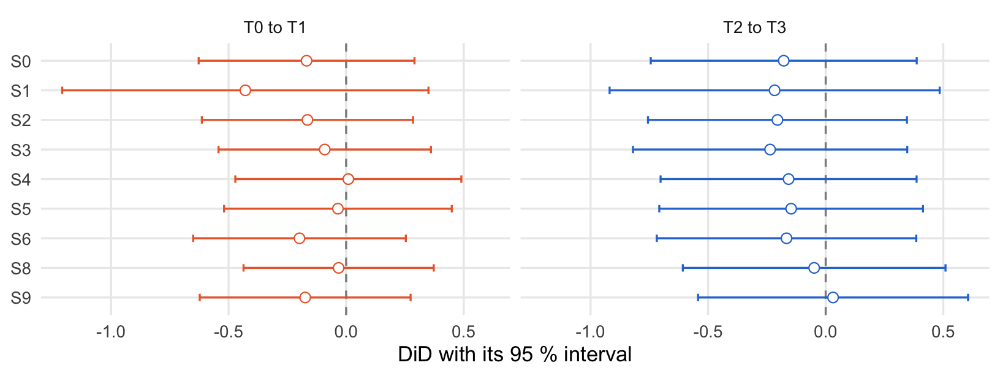
cnf_sets |>
unnest(estimates) |>
filter(label %in% c("DiD_T01", "DiD_T23")) |>
select(set, admissible, label, est, pvalue) |>
pivot_wider(names_from = label, values_from = c(est, pvalue),
names_glue = "{label}_{.value}") |>
select(set, admissible, starts_with("DiD_T01"), starts_with("DiD_T23")) |>
mutate(across(where(is.double), \(x) round(x, 3)))| set | admissible | DiD_T01_est | DiD_T01_pvalue | DiD_T23_est | DiD_T23_pvalue |
|---|---|---|---|---|---|
| S0 | TRUE | -0.168 | 0.472 | -0.178 | 0.536 |
| S1 | TRUE | -0.429 | 0.281 | -0.217 | 0.544 |
| S2 | TRUE | -0.165 | 0.473 | -0.205 | 0.465 |
| S3 | TRUE | -0.091 | 0.693 | -0.236 | 0.427 |
| S4 | TRUE | 0.009 | 0.970 | -0.158 | 0.570 |
| S5 | TRUE | -0.035 | 0.887 | -0.147 | 0.608 |
| S6 | TRUE | -0.198 | 0.390 | -0.167 | 0.554 |
| S8 | TRUE | -0.032 | 0.877 | -0.049 | 0.863 |
| S9 | TRUE | -0.174 | 0.446 | 0.031 | 0.914 |
The effect of the first window is significant in the expected direction in 0 of the nine sets, the mirrored effect of the second window in 0.
Next → Step 9, what the steps show together.
What follows · Step 9
Step 9 · What follows
What does Competence Non-Frustrated show? The two training effects side by side, T0–T1 while the experimental group trains and T2–T3 while the control group trains, with the correction for testing all 20 constructs at once (11.7) and the nine sample sets of Step 8:
cnf_verdict <- verdict_table("CompetenceNonFrustrated",
cnf_est, cnf_p, cnf_d, cnf_sets)
show_verdict(cnf_verdict)| window | DiD | d | size | p | p corrected | sets with the effect | range in sets |
|---|---|---|---|---|---|---|---|
| T0–T1 | -0.17 | -0.08 | negligible | 0.472 | 0.630 | 0 of 9 | -.43 to .01 |
| T2–T3 | -0.18 | -0.09 | negligible | 0.536 | 0.766 | 0 of 9 | -.24 to .03 |
Competence Non-Frustrated shows no significant training effect in either round. While the experimental group trains, its latent mean changes by -.08 points, that of the control group by .09; the difference is not significant (DiD = -.17, p = .472). When the control group trains, its latent mean changes by .27 points, that of the experimental group by .09; the difference is not significant (DiD = -.18, p = .536). The control group also changes before its own training (T1 to T2: -.35, p = .020), and the restricted model of Step 7 is rejected (p = .045): outside the training the latent means do not stay level.
What goes on to Chapter 20? The model and the two effects:
cnf_result <- tibble(construct = "CompetenceNonFrustrated",
covariates = TRUE,
direct = list(character()),
fit = list(cnf_fit))
cnf_result |>
transmute(construct, covariates, direct = map_chr(direct, str_flatten, "; "))| construct | covariates | direct |
|---|---|---|
| CompetenceNonFrustrated | TRUE |
Competence Non-Frustrated enters the synthesis of Chapter 20 with both effects, adjusted for age and sex.
Empowerment
Its path through the steps. One row per step below; the label marks the data of each step:
| Step | Data | Question | Result | Next |
|---|---|---|---|---|
| 1 | both groups | What is added to Chapter 7? | covariates, contrasts | Chapter 7’s model |
| 2 | both groups | Chapter 7’s model possible, as there? | yes, the same χ² | covariates |
| 3 | both groups | Covariates only through the factors? | yes | latent means |
| 4 | both groups | Latent means | – | effects |
| 5 | both groups | Training effects | T0–T1: n.s.; T2–T3: n.s. | drift |
| 6 | control | Drift while waiting? | none | robustness |
| 7 | both groups | Level outside the training? | yes | sample sets |
| 8 | both groups | Effects on the sample sets? | T0–T1: 0 of 9; T2–T3: 4 of 9 | what follows |
| 9 | What does it show? | no significant effect | Chapter 20 |
The model · Steps 1 to 3
Step 1 · The model both groups
Which model does Chapter 7 hand on? Its status there: the estimates the stop rule set at 0, the items freed, and the autocorrelations:
emp_status <- invariance$adopted |>
filter(construct == "Empowerment")
emp_status |>
transmute(status, set_to_0 = map_chr(set_to_0, \(x) str_flatten(x, "; ")),
freed = map_chr(freed, \(x) str_flatten(x, "; ")))| status | set_to_0 | freed |
|---|---|---|
| adjusted (A) | Experimental: Empowerment3_T3 ~~ Empowerment3_T3; Experimental: Empowerment3_T0 ~~ Empowerment3_T3; Experimental: Empowerment3_T1 ~~ Empowerment3_T3; Experimental: Empowerment3_T2 ~~ Empowerment3_T3 |
What does the model look like? In the figure, the factors of the four waves (circles), the items (boxes) and their loadings, the links of the factors (above) and of each item with itself at the next wave (below); in green, the estimates the stop rule of Chapter 7 set at 0 in one group:
plot_model("Empowerment",
fixed = str_remove(emp_status$set_to_0[[1]], "^[A-Za-z]+: "))
What does the complete model look like? Its syntax, as did_syntax() writes it: first the final model of Chapter 7, part by part, then what this chapter adds, the covariates on the factor of every wave and the contrasts. A label shared by several lines (such as l1, t1 or a1) holds those estimates equal; c(..., ...) gives the control and the experimental group one each:
show_model(did_syntax(emp_status))# Chapter 7: one factor per wave; NA* frees the first loading
F_T0 =~ NA*Empowerment1_T0 +
l1*Empowerment1_T0 +
l2*Empowerment3_T0 +
l3*Empowerment4_T0 +
l4*Empowerment5_T0
F_T1 =~ NA*Empowerment1_T1 +
l1*Empowerment1_T1 +
l2*Empowerment3_T1 +
l3*Empowerment4_T1 +
l4*Empowerment5_T1
F_T2 =~ NA*Empowerment1_T2 +
l1*Empowerment1_T2 +
l2*Empowerment3_T2 +
l3*Empowerment4_T2 +
l4*Empowerment5_T2
F_T3 =~ NA*Empowerment1_T3 +
l1*Empowerment1_T3 +
l2*Empowerment3_T3 +
l3*Empowerment4_T3 +
l4*Empowerment5_T3
# Chapter 7: effects coding: the loadings average 1, the intercepts sum to 0
l1 + l2 + l3 + l4 == 4
t1 + t2 + t3 + t4 == 0
# Chapter 7: the latent means, free in each group
F_T0 ~ c(m_con_T0, m_exp_T0)*1
F_T1 ~ c(m_con_T1, m_exp_T1)*1
F_T2 ~ c(m_con_T2, m_exp_T2)*1
F_T3 ~ c(m_con_T3, m_exp_T3)*1
# Chapter 7: the intercepts
Empowerment1_T0 ~ t1*1
Empowerment3_T0 ~ t2*1
Empowerment4_T0 ~ t3*1
Empowerment5_T0 ~ t4*1
Empowerment1_T1 ~ t1*1
Empowerment3_T1 ~ t2*1
Empowerment4_T1 ~ t3*1
Empowerment5_T1 ~ t4*1
Empowerment1_T2 ~ t1*1
Empowerment3_T2 ~ t2*1
Empowerment4_T2 ~ t3*1
Empowerment5_T2 ~ t4*1
Empowerment1_T3 ~ t1*1
Empowerment3_T3 ~ t2*1
Empowerment4_T3 ~ t3*1
Empowerment5_T3 ~ t4*1
# Chapter 7: the factors correlate over the waves
F_T0 ~~ F_T1
F_T0 ~~ F_T2
F_T0 ~~ F_T3
F_T1 ~~ F_T2
F_T1 ~~ F_T3
F_T2 ~~ F_T3
# Chapter 7: the residual covariances of Chapter 6, at every wave
Empowerment4_T0 ~~ Empowerment5_T0
Empowerment4_T1 ~~ Empowerment5_T1
Empowerment4_T2 ~~ Empowerment5_T2
Empowerment4_T3 ~~ Empowerment5_T3
# Chapter 7: each item's residual with itself over the waves
Empowerment1_T0 ~~ Empowerment1_T1
Empowerment1_T0 ~~ Empowerment1_T2
Empowerment1_T0 ~~ Empowerment1_T3
Empowerment1_T1 ~~ Empowerment1_T2
Empowerment1_T1 ~~ Empowerment1_T3
Empowerment1_T2 ~~ Empowerment1_T3
Empowerment3_T0 ~~ Empowerment3_T1
Empowerment3_T0 ~~ Empowerment3_T2
Empowerment3_T0 ~~ Empowerment3_T3
Empowerment3_T1 ~~ Empowerment3_T2
Empowerment3_T1 ~~ Empowerment3_T3
Empowerment3_T2 ~~ Empowerment3_T3
Empowerment4_T0 ~~ Empowerment4_T1
Empowerment4_T0 ~~ Empowerment4_T2
Empowerment4_T0 ~~ Empowerment4_T3
Empowerment4_T1 ~~ Empowerment4_T2
Empowerment4_T1 ~~ Empowerment4_T3
Empowerment4_T2 ~~ Empowerment4_T3
Empowerment5_T0 ~~ Empowerment5_T1
Empowerment5_T0 ~~ Empowerment5_T2
Empowerment5_T0 ~~ Empowerment5_T3
Empowerment5_T1 ~~ Empowerment5_T2
Empowerment5_T1 ~~ Empowerment5_T3
Empowerment5_T2 ~~ Empowerment5_T3
# Chapter 7: set at 0 in one group (adjustment A)
Empowerment3_T3 ~~ c(NA, 0)*Empowerment3_T3
Empowerment3_T0 ~~ c(NA, 0)*Empowerment3_T3
Empowerment3_T1 ~~ c(NA, 0)*Empowerment3_T3
Empowerment3_T2 ~~ c(NA, 0)*Empowerment3_T3
# added here: age and sex on the factor of every wave
F_T0 ~ age_c + female_c
F_T1 ~ age_c + female_c
F_T2 ~ age_c + female_c
F_T3 ~ age_c + female_c
# added here: every contrast as a parameter
EG_T01 := (m_exp_T1 - m_exp_T0)
CG_T01 := (m_con_T1 - m_con_T0)
DiD_T01 := (m_exp_T1 - m_exp_T0) - (m_con_T1 - m_con_T0)
EG_T02 := (m_exp_T2 - m_exp_T0)
CG_T02 := (m_con_T2 - m_con_T0)
DiD_T02 := (m_exp_T2 - m_exp_T0) - (m_con_T2 - m_con_T0)
EG_T03 := (m_exp_T3 - m_exp_T0)
CG_T03 := (m_con_T3 - m_con_T0)
DiD_T03 := (m_exp_T3 - m_exp_T0) - (m_con_T3 - m_con_T0)
EG_T12 := (m_exp_T2 - m_exp_T1)
CG_T12 := (m_con_T2 - m_con_T1)
DiD_T12 := (m_exp_T2 - m_exp_T1) - (m_con_T2 - m_con_T1)
EG_T13 := (m_exp_T3 - m_exp_T1)
CG_T13 := (m_con_T3 - m_con_T1)
DiD_T13 := (m_exp_T3 - m_exp_T1) - (m_con_T3 - m_con_T1)
EG_T23 := (m_exp_T3 - m_exp_T2)
CG_T23 := (m_con_T3 - m_con_T2)
DiD_T23 := (m_exp_T3 - m_exp_T2) - (m_con_T3 - m_con_T2)
Replication_test := (m_exp_T1 - m_exp_T0) - (m_con_T1 - m_con_T0) + (m_exp_T3 - m_exp_T2) - (m_con_T3 - m_con_T2)Next → Step 2, the model of Chapter 7 again, without the covariates.
Step 2 · The model of Chapter 7 both groups
What is fitted? The model of Chapter 7 with the contrasts, without the covariates:
emp_base <- df_wide |>
sem(model = did_syntax(emp_status, covariates = FALSE), data = _,
group = "condition", estimator = "MLR", missing = "fiml")Does it pass the checks, and is it the model of Chapter 7? The checks of Chapter 7, and its χ² next to that of Chapter 7, Step 8:
emp_base_checks <- model_checks(emp_base)
emp_base_checks| check | what | value | criterion | holds |
|---|---|---|---|---|
| 1 estimation | converged | yes | yes | ✓ |
| 2 variances | smallest residual variance: item 3 at T3 (Experimental) | .000 | above 0 | ✓ |
| 3 correlations | largest correlation: the factors at T0 and T3 (Experimental) | .825 | within ±1 | ✓ |
| 4 residuals | smallest eigenvalue of the residual covariances | .000 | above 0 | ✓ |
| 5 factors | smallest eigenvalue of the factor covariances | .191 | above 0 | ✓ |
| 6 standard errors | estimated for every free parameter | yes | yes | ✓ |
| 7 fit | CFI | .949 | reported | – |
| 8 fit | RMSEA [90 % interval] | .055 [.044, .065] | reported | – |
| 9 fit | SRMR | .098 | reported | – |
| 10 strain | largest modification index: item 3 with item 4 at T2 (Experimental) | 11.5 | reported | – |
| 11 estimates | smallest standardized loading: item 1 at T0 (Experimental) | .46 | reported | – |
emp_chapter7 <- invariance$steps |>
filter(construct == "Empowerment", part == "both groups",
level == "intercepts across groups")
tibble(model = c("here", "Chapter 7"),
chisq = c(fitMeasures(emp_base, "chisq.scaled"), emp_chapter7$chisq),
df = c(fitMeasures(emp_base, "df"), emp_chapter7$df)) |>
mutate(chisq = round(chisq, 3))| model | chisq | df |
|---|---|---|
| here | 274.409 | 186 |
| Chapter 7 | 274.409 | 186 |
Checks 1 to 6 hold, and the χ² is that of Chapter 7 (274.409): the model is the one Chapter 7 settled on, and the contrasts add no constraint.
Next → Step 3, the same model with the covariates.
Step 3 · The covariates both groups
What is fitted? The model of Step 1, with age and sex on the factors, and the comparison model, with a direct effect of each on every item at every wave and no path to the factors:
emp_covariates <- df_wide |>
sem(model = did_syntax(emp_status), data = _, group = "condition",
estimator = "MLR", missing = "fiml.x")
emp_everywhere <- df_wide |>
sem(model = direct_everywhere(emp_status), data = _, group = "condition",
estimator = "MLR", missing = "fiml.x")What does the comparison model hold? The model of Chapter 7 from Step 1, and in place of the paths to the factors a direct effect of age and sex on every item at every wave; it needs no contrasts. These are its lines beyond Chapter 7:
show_model(direct_everywhere(emp_status), added_only = TRUE)# added here: age or sex directly on single items
Empowerment1_T0 ~ age_c + female_c
Empowerment3_T0 ~ age_c + female_c
Empowerment4_T0 ~ age_c + female_c
Empowerment5_T0 ~ age_c + female_c
Empowerment1_T1 ~ age_c + female_c
Empowerment3_T1 ~ age_c + female_c
Empowerment4_T1 ~ age_c + female_c
Empowerment5_T1 ~ age_c + female_c
Empowerment1_T2 ~ age_c + female_c
Empowerment3_T2 ~ age_c + female_c
Empowerment4_T2 ~ age_c + female_c
Empowerment5_T2 ~ age_c + female_c
Empowerment1_T3 ~ age_c + female_c
Empowerment3_T3 ~ age_c + female_c
Empowerment4_T3 ~ age_c + female_c
Empowerment5_T3 ~ age_c + female_cDoes the model with the covariates pass the checks?
emp_covariates_checks <- model_checks(emp_covariates)
emp_covariates_checks| check | what | value | criterion | holds |
|---|---|---|---|---|
| 1 estimation | converged | yes | yes | ✓ |
| 2 variances | smallest residual variance: item 3 at T3 (Experimental) | .000 | above 0 | ✓ |
| 3 correlations | largest correlation: the factors at T0 and T3 (Experimental) | .830 | within ±1 | ✓ |
| 4 residuals | smallest eigenvalue of the residual covariances | .000 | above 0 | ✓ |
| 5 factors | smallest eigenvalue of the factor covariances | .199 | above 0 | ✓ |
| 6 standard errors | estimated for every free parameter | yes | yes | ✓ |
| 7 fit | CFI | .947 | reported | – |
| 8 fit | RMSEA [90 % interval] | .050 [.040, .060] | reported | – |
| 9 fit | SRMR | .094 | reported | – |
| 10 strain | largest modification index: item 3 with item 4 at T0 (Control) | 11.5 | reported | – |
| 11 estimates | smallest standardized loading: item 1 at T3 (Control) | .46 | reported | – |
Checks 1 to 6 hold. Its CFI, .947, stands beside .949 in Step 2, for description only: the two models do not hold the same variables. Do age and sex act only through the factors? The model of Step 1 against the comparison model:
emp_step <- covariate_step(emp_covariates, emp_everywhere)
show_step(emp_step)| model | df | CFI | RMSEA | ΔCFI | ΔRMSEA | p | Chen |
|---|---|---|---|---|---|---|---|
| direct effects on every item | 186 | 0.947 | 0.056 | ||||
| only through the factors | 234 | 0.947 | 0.050 | 0 | -0.006 | 0.547 | ✓ |
They do, under Chen’s cutoffs (ΔCFI = .000, ΔRMSEA = -.006; χ² test: p = .547): the covariates enter as specified.
emp_fit <- emp_covariates # the model of Steps 4 to 8Next → Step 4, the latent means of this model.
The effects · Steps 4 to 6
Step 4 · Latent means both groups
Where does each group stand at each wave? The eight latent means with their 95 % confidence intervals, at the sample’s average age and share of women:
emp_means <- parameterEstimates(emp_fit) |>
filter(op == "~1", str_starts(lhs, "F_")) |>
select(label, est, se, ci.lower, ci.upper)
# the contrasts between them, for Steps 4 to 6
emp_contrasts <- contrasts_of(emp_fit, c(
"EG_T01", "CG_T01", "DiD_T01", "EG_T23", "CG_T23", "DiD_T23",
"Replication_test", "CG_T02", "CG_T12"))
emp_means |>
mutate(across(where(is.double), \(x) round(x, 2)))| label | est | se | ci.lower | ci.upper |
|---|---|---|---|---|
| m_con_T0 | 8.46 | 0.10 | 8.27 | 8.65 |
| m_con_T1 | 8.49 | 0.10 | 8.29 | 8.68 |
| m_con_T2 | 8.48 | 0.10 | 8.28 | 8.68 |
| m_con_T3 | 8.77 | 0.08 | 8.61 | 8.93 |
| m_exp_T0 | 8.33 | 0.10 | 8.13 | 8.52 |
| m_exp_T1 | 8.58 | 0.10 | 8.39 | 8.76 |
| m_exp_T2 | 8.55 | 0.12 | 8.32 | 8.78 |
| m_exp_T3 | 8.56 | 0.12 | 8.33 | 8.80 |
plot_latent_means(emp_fit)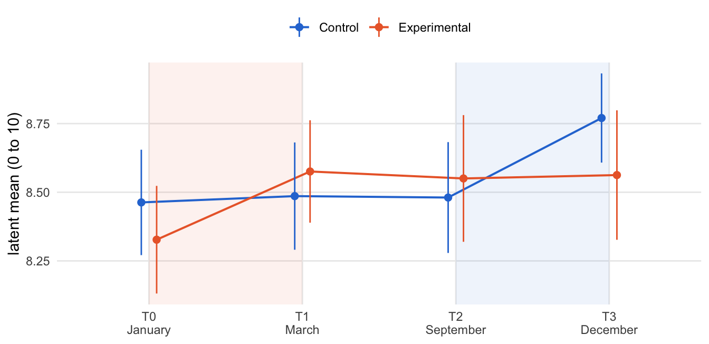
In January the experimental group lies at 8.33, the control group at 8.46. While the experimental group trains (T0 to T1), it changes by .25 and the control group by .02; while the control group trains (T2 to T3), it changes by .29 and the experimental group by .01.
Next → Step 5, the difference of these changes: the training effects.
Step 5 · The training effects both groups
How much more does the trained group change? The change of each group in the two training windows, and their difference, as a table and as a figure:
emp_contrasts |>
filter(label %in% c("EG_T01", "CG_T01", "DiD_T01",
"EG_T23", "CG_T23", "DiD_T23")) |>
mutate(across(where(is.double), \(x) round(x, 3)))| label | est | se | pvalue | ci.lower | ci.upper |
|---|---|---|---|---|---|
| EG_T01 | 0.248 | 0.098 | 0.011 | 0.056 | 0.441 |
| CG_T01 | 0.023 | 0.087 | 0.792 | -0.148 | 0.194 |
| DiD_T01 | 0.225 | 0.132 | 0.088 | -0.033 | 0.484 |
| EG_T23 | 0.012 | 0.118 | 0.917 | -0.219 | 0.244 |
| CG_T23 | 0.290 | 0.082 | 0.000 | 0.130 | 0.449 |
| DiD_T23 | -0.277 | 0.144 | 0.055 | -0.560 | 0.006 |
plot_did(emp_fit)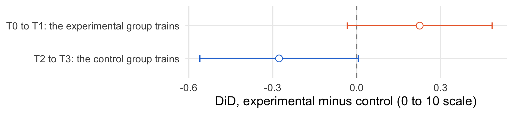
While the experimental group trains, DiD = .23 (p = .088), not significant. While the control group trains, DiD = -.28 (p = .055), not significant.
How large are the effects? The latent d, with the latent standard deviation at T0 pooled over the two groups:
emp_sd_T0 <- pooled_sd_T0(emp_fit)
emp_contrasts |>
filter(label %in% c("DiD_T01", "DiD_T23")) |>
transmute(label, DiD = est, d = est / emp_sd_T0, size = cohen(d)) |>
mutate(across(where(is.double), \(x) round(x, 2)))| label | DiD | d | size |
|---|---|---|---|
| DiD_T01 | 0.23 | 0.18 | negligible |
| DiD_T23 | -0.28 | -0.22 | small |
The pooled latent SD at T0 is 1.24; in its units the first effect is d = .18, negligible, and the second d = -.22, small. Do the two training effects cancel out? The replication test, DiD (T0 to T1) + DiD (T2 to T3):
emp_contrasts |>
filter(label == "Replication_test") |>
mutate(across(where(is.double), \(x) round(x, 3)))| label | est | se | pvalue | ci.lower | ci.upper |
|---|---|---|---|---|---|
| Replication_test | -0.052 | 0.194 | 0.79 | -0.433 | 0.329 |
The two effects do not detectably differ: their sum is -.05 (p = .790).
Next → Step 6, how the control group changes while it waits.
Step 6 · Drift of the control group control
Does the control group change while it waits? Its change from T0 to T1, T0 to T2 and T1 to T2:
emp_contrasts |>
filter(label %in% c("CG_T01", "CG_T02", "CG_T12")) |>
mutate(across(where(is.double), \(x) round(x, 3)))| label | est | se | pvalue | ci.lower | ci.upper |
|---|---|---|---|---|---|
| CG_T01 | 0.023 | 0.087 | 0.792 | -0.148 | 0.194 |
| CG_T02 | 0.018 | 0.105 | 0.865 | -0.187 | 0.223 |
| CG_T12 | -0.005 | 0.102 | 0.959 | -0.205 | 0.195 |
None of the three changes is significant; the change from T0 to T1, which the first DiD subtracts, is .02 (p = .792).
Next → Step 7, whether the latent means stay level outside the training.
Robustness · Steps 7 and 8
Step 7 · The restricted model both groups
Do the latent means stay level outside the training? The model of Steps 4 to 6 against the same model with the four equality constraints, from the script; its free model is the model of Steps 4 to 6, with the same χ²:
emp_restricted <- restricted |> filter(construct == "Empowerment")
emp_restricted |>
transmute(`χ² free` = chisq_free, `χ² restricted` = chisq_restricted,
`Δχ²` = delta_chisq, Δdf = delta_df, p, admissible) |>
mutate(across(where(is.double), \(x) round(x, 3)))| χ² free | χ² restricted | Δχ² | Δdf | p | admissible |
|---|---|---|---|---|---|
| 331.481 | 331.477 | 0.112 | 4 | 0.998 | TRUE |
The four constraints cost Δχ²(4) = 0.11 (p = .998), and the data do not reject them: the latent means stay level outside the training.
Next → Step 8, the two effects on the sample sets.
Step 8 · The sample sets both groups
Do the effects hold on every sample set? The two training effects on the nine sample sets, from the script, as a figure and as a table; S0 is the model of Steps 4 to 6:
emp_sets <- latent_sets |> filter(construct == "Empowerment")
plot_sets(emp_sets)emp_sets |>
unnest(estimates) |>
filter(label %in% c("DiD_T01", "DiD_T23")) |>
select(set, admissible, label, est, pvalue) |>
pivot_wider(names_from = label, values_from = c(est, pvalue),
names_glue = "{label}_{.value}") |>
select(set, admissible, starts_with("DiD_T01"), starts_with("DiD_T23")) |>
mutate(across(where(is.double), \(x) round(x, 3)))| set | admissible | DiD_T01_est | DiD_T01_pvalue | DiD_T23_est | DiD_T23_pvalue |
|---|---|---|---|---|---|
| S0 | TRUE | 0.225 | 0.088 | -0.277 | 0.055 |
| S1 | TRUE | -0.006 | 0.980 | -0.300 | 0.051 |
| S2 | TRUE | 0.211 | 0.123 | -0.303 | 0.039 |
| S3 | TRUE | 0.206 | 0.137 | -0.398 | 0.008 |
| S4 | TRUE | 0.248 | 0.120 | -0.339 | 0.021 |
| S5 | TRUE | 0.241 | 0.132 | -0.238 | 0.121 |
| S6 | TRUE | 0.236 | 0.081 | -0.264 | 0.069 |
| S8 | TRUE | 0.249 | 0.093 | -0.297 | 0.035 |
| S9 | TRUE | 0.198 | 0.133 | -0.273 | 0.056 |
The effect of the first window is significant in the expected direction in 0 of the nine sets, the mirrored effect of the second window in 4.
Next → Step 9, what the steps show together.
What follows · Step 9
Step 9 · What follows
What does Empowerment show? The two training effects side by side, T0–T1 while the experimental group trains and T2–T3 while the control group trains, with the correction for testing all 20 constructs at once (11.7) and the nine sample sets of Step 8:
emp_verdict <- verdict_table("Empowerment", emp_est, emp_p, emp_d, emp_sets)
show_verdict(emp_verdict)| window | DiD | d | size | p | p corrected | sets with the effect | range in sets |
|---|---|---|---|---|---|---|---|
| T0–T1 | 0.23 | 0.18 | negligible | 0.088 | 0.176 | 0 of 9 | -.01 to .25 |
| T2–T3 | -0.28 | -0.22 | small | 0.055 | 0.137 | 4 of 9 | -.40 to -.24 |
Empowerment shows no significant training effect in either round. While the experimental group trains, its latent mean changes by .25 points, that of the control group by .02; the difference stays just short of significance (DiD = .23, p = .088). When the control group trains, its latent mean changes by .29 points, that of the experimental group by .01; the difference stays just short of significance (DiD = -.28, p = .055). Outside the training the latent means stay level: the control group does not change before its own training, and the restricted model of Step 7 holds (p = .998).
What goes on to Chapter 20? The model and the two effects:
emp_result <- tibble(construct = "Empowerment",
covariates = TRUE,
direct = list(character()),
fit = list(emp_fit))
emp_result |>
transmute(construct, covariates, direct = map_chr(direct, str_flatten, "; "))| construct | covariates | direct |
|---|---|---|
| Empowerment | TRUE |
Empowerment enters the synthesis of Chapter 20 with both effects, adjusted for age and sex.
Agency
Its path through the steps. One row per step below; the label marks the data of each step:
| Step | Data | Question | Result | Next |
|---|---|---|---|---|
| 1 | both groups | What is added to Chapter 7? | covariates, contrasts | Chapter 7’s model |
| 2 | both groups | Chapter 7’s model possible, as there? | yes, the same χ² | covariates |
| 3 | both groups | Covariates only through the factors? | yes | latent means |
| 4 | both groups | Latent means | – | effects |
| 5 | both groups | Training effects | T0–T1: n.s.; T2–T3: n.s. | drift |
| 6 | control | Drift while waiting? | none | robustness |
| 7 | both groups | Level outside the training? | yes | sample sets |
| 8 | both groups | Effects on the sample sets? | T0–T1: 0 of 9; T2–T3: 0 of 9 | what follows |
| 9 | What does it show? | no significant effect | Chapter 20 |
The model · Steps 1 to 3
Step 1 · The model both groups
Which model does Chapter 7 hand on? Its status there: the estimates the stop rule set at 0, the items freed, and the autocorrelations:
ag_status <- invariance$adopted |>
filter(construct == "Agency")
ag_status |>
transmute(status, set_to_0 = map_chr(set_to_0, \(x) str_flatten(x, "; ")),
freed = map_chr(freed, \(x) str_flatten(x, "; ")))| status | set_to_0 | freed |
|---|---|---|
| adjusted (B), partial | Experimental: Agency1 loadings |
What does the model look like? In the figure, the factors of the four waves (circles), the items (boxes) and their loadings, the links of the factors (above) and of each item with itself at the next wave (below); in green, the estimates the stop rule of Chapter 7 set at 0 in one group:
plot_model("Agency",
fixed = str_remove(ag_status$set_to_0[[1]], "^[A-Za-z]+: "))
What does the complete model look like? Its syntax, as did_syntax() writes it: first the final model of Chapter 7, part by part, then what this chapter adds, the covariates on the factor of every wave and the contrasts. A label shared by several lines (such as l1, t1 or a1) holds those estimates equal; c(..., ...) gives the control and the experimental group one each:
show_model(did_syntax(ag_status))# Chapter 7: one factor per wave; NA* frees the first loading
F_T0 =~ NA*Agency1_T0 +
c(l1, l1_T0_exp)*Agency1_T0 +
l2*Agency2_T0 +
l3*Agency3_T0
F_T1 =~ NA*Agency1_T1 +
c(l1, l1_T1_exp)*Agency1_T1 +
l2*Agency2_T1 +
l3*Agency3_T1
F_T2 =~ NA*Agency1_T2 +
c(l1, l1_T2_exp)*Agency1_T2 +
l2*Agency2_T2 +
l3*Agency3_T2
F_T3 =~ NA*Agency1_T3 +
c(l1, l1_T3_exp)*Agency1_T3 +
l2*Agency2_T3 +
l3*Agency3_T3
# Chapter 7: effects coding: the loadings average 1, the intercepts sum to 0
l2 + l3 == 2
t1 + t2 + t3 == 0
# Chapter 7: the latent means, free in each group
F_T0 ~ c(m_con_T0, m_exp_T0)*1
F_T1 ~ c(m_con_T1, m_exp_T1)*1
F_T2 ~ c(m_con_T2, m_exp_T2)*1
F_T3 ~ c(m_con_T3, m_exp_T3)*1
# Chapter 7: the intercepts
Agency1_T0 ~ t1*1
Agency2_T0 ~ t2*1
Agency3_T0 ~ t3*1
Agency1_T1 ~ t1*1
Agency2_T1 ~ t2*1
Agency3_T1 ~ t3*1
Agency1_T2 ~ t1*1
Agency2_T2 ~ t2*1
Agency3_T2 ~ t3*1
Agency1_T3 ~ t1*1
Agency2_T3 ~ t2*1
Agency3_T3 ~ t3*1
# Chapter 7: the factors correlate over the waves
F_T0 ~~ F_T1
F_T0 ~~ F_T2
F_T0 ~~ F_T3
F_T1 ~~ F_T2
F_T1 ~~ F_T3
F_T2 ~~ F_T3
# Chapter 7: each item's residual with itself over the waves
Agency1_T0 ~~ c(a1_con, a1_T0T1_exp)*Agency1_T1
Agency1_T0 ~~ c(a1_con, a1_T0T2_exp)*Agency1_T2
Agency1_T0 ~~ c(a1_con, a1_T0T3_exp)*Agency1_T3
Agency1_T1 ~~ c(a1_con, a1_T1T2_exp)*Agency1_T2
Agency1_T1 ~~ c(a1_con, a1_T1T3_exp)*Agency1_T3
Agency1_T2 ~~ c(a1_con, a1_T2T3_exp)*Agency1_T3
Agency2_T0 ~~ c(a2_con, a2_T0T1_exp)*Agency2_T1
Agency2_T0 ~~ c(a2_con, a2_T0T2_exp)*Agency2_T2
Agency2_T0 ~~ c(a2_con, a2_T0T3_exp)*Agency2_T3
Agency2_T1 ~~ c(a2_con, a2_T1T2_exp)*Agency2_T2
Agency2_T1 ~~ c(a2_con, a2_T1T3_exp)*Agency2_T3
Agency2_T2 ~~ c(a2_con, a2_T2T3_exp)*Agency2_T3
Agency3_T0 ~~ c(a3_con, a3_T0T1_exp)*Agency3_T1
Agency3_T0 ~~ c(a3_con, a3_T0T2_exp)*Agency3_T2
Agency3_T0 ~~ c(a3_con, a3_T0T3_exp)*Agency3_T3
Agency3_T1 ~~ c(a3_con, a3_T1T2_exp)*Agency3_T2
Agency3_T1 ~~ c(a3_con, a3_T1T3_exp)*Agency3_T3
Agency3_T2 ~~ c(a3_con, a3_T2T3_exp)*Agency3_T3
# added here: age and sex on the factor of every wave
F_T0 ~ age_c + female_c
F_T1 ~ age_c + female_c
F_T2 ~ age_c + female_c
F_T3 ~ age_c + female_c
# added here: every contrast as a parameter
EG_T01 := (m_exp_T1 - m_exp_T0)
CG_T01 := (m_con_T1 - m_con_T0)
DiD_T01 := (m_exp_T1 - m_exp_T0) - (m_con_T1 - m_con_T0)
EG_T02 := (m_exp_T2 - m_exp_T0)
CG_T02 := (m_con_T2 - m_con_T0)
DiD_T02 := (m_exp_T2 - m_exp_T0) - (m_con_T2 - m_con_T0)
EG_T03 := (m_exp_T3 - m_exp_T0)
CG_T03 := (m_con_T3 - m_con_T0)
DiD_T03 := (m_exp_T3 - m_exp_T0) - (m_con_T3 - m_con_T0)
EG_T12 := (m_exp_T2 - m_exp_T1)
CG_T12 := (m_con_T2 - m_con_T1)
DiD_T12 := (m_exp_T2 - m_exp_T1) - (m_con_T2 - m_con_T1)
EG_T13 := (m_exp_T3 - m_exp_T1)
CG_T13 := (m_con_T3 - m_con_T1)
DiD_T13 := (m_exp_T3 - m_exp_T1) - (m_con_T3 - m_con_T1)
EG_T23 := (m_exp_T3 - m_exp_T2)
CG_T23 := (m_con_T3 - m_con_T2)
DiD_T23 := (m_exp_T3 - m_exp_T2) - (m_con_T3 - m_con_T2)
Replication_test := (m_exp_T1 - m_exp_T0) - (m_con_T1 - m_con_T0) + (m_exp_T3 - m_exp_T2) - (m_con_T3 - m_con_T2)Next → Step 2, the model of Chapter 7 again, without the covariates.
Step 2 · The model of Chapter 7 both groups
What is fitted? The model of Chapter 7 with the contrasts, without the covariates:
ag_base <- df_wide |>
sem(model = did_syntax(ag_status, covariates = FALSE), data = _,
group = "condition", estimator = "MLR", missing = "fiml")Does it pass the checks, and is it the model of Chapter 7? The checks of Chapter 7, and its χ² next to that of Chapter 7, Step 8:
ag_base_checks <- model_checks(ag_base)
ag_base_checks| check | what | value | criterion | holds |
|---|---|---|---|---|
| 1 estimation | converged | yes | yes | ✓ |
| 2 variances | smallest residual variance: item 3 at T3 (Control) | .808 | above 0 | ✓ |
| 3 correlations | largest correlation: the factors at T0 and T3 (Experimental) | .936 | within ±1 | ✓ |
| 4 residuals | smallest eigenvalue of the residual covariances | .375 | above 0 | ✓ |
| 5 factors | smallest eigenvalue of the factor covariances | .048 | above 0 | ✓ |
| 6 standard errors | estimated for every free parameter | yes | yes | ✓ |
| 7 fit | CFI | .916 | reported | – |
| 8 fit | RMSEA [90 % interval] | .060 [.046, .074] | reported | – |
| 9 fit | SRMR | .091 | reported | – |
| 10 strain | largest modification index: item 2 with item 3 at T0 (Experimental) | 9.2 | reported | – |
| 11 estimates | smallest standardized loading: item 1 at T2 (Experimental) | .36 | reported | – |
ag_chapter7 <- invariance$steps |>
filter(construct == "Agency", part == "both groups",
level == "intercepts across groups")
tibble(model = c("here", "Chapter 7"),
chisq = c(fitMeasures(ag_base, "chisq.scaled"), ag_chapter7$chisq),
df = c(fitMeasures(ag_base, "df"), ag_chapter7$df)) |>
mutate(chisq = round(chisq, 3))| model | chisq | df |
|---|---|---|
| here | 142.45 | 99 |
| Chapter 7 | 142.45 | 99 |
Checks 1 to 6 hold, and the χ² is that of Chapter 7 (142.450): the model is the one Chapter 7 settled on, and the contrasts add no constraint.
Next → Step 3, the same model with the covariates.
Step 3 · The covariates both groups
What is fitted? The model of Step 1, with age and sex on the factors, and the comparison model, with a direct effect of each on every item at every wave and no path to the factors:
ag_covariates <- df_wide |>
sem(model = did_syntax(ag_status), data = _, group = "condition",
estimator = "MLR", missing = "fiml.x")
ag_everywhere <- df_wide |>
sem(model = direct_everywhere(ag_status), data = _, group = "condition",
estimator = "MLR", missing = "fiml.x")What does the comparison model hold? The model of Chapter 7 from Step 1, and in place of the paths to the factors a direct effect of age and sex on every item at every wave; it needs no contrasts. These are its lines beyond Chapter 7:
show_model(direct_everywhere(ag_status), added_only = TRUE)# added here: age or sex directly on single items
Agency1_T0 ~ age_c + female_c
Agency2_T0 ~ age_c + female_c
Agency3_T0 ~ age_c + female_c
Agency1_T1 ~ age_c + female_c
Agency2_T1 ~ age_c + female_c
Agency3_T1 ~ age_c + female_c
Agency1_T2 ~ age_c + female_c
Agency2_T2 ~ age_c + female_c
Agency3_T2 ~ age_c + female_c
Agency1_T3 ~ age_c + female_c
Agency2_T3 ~ age_c + female_c
Agency3_T3 ~ age_c + female_cDoes the model with the covariates pass the checks?
ag_covariates_checks <- model_checks(ag_covariates)
ag_covariates_checks| check | what | value | criterion | holds |
|---|---|---|---|---|
| 1 estimation | converged | yes | yes | ✓ |
| 2 variances | .090 | above 0 | ✓ | |
| 3 correlations | largest correlation: the factors at T0 and T3 (Experimental) | .954 | within ±1 | ✓ |
| 4 residuals | smallest eigenvalue of the residual covariances | .089 | above 0 | ✓ |
| 5 factors | smallest eigenvalue of the factor covariances | .040 | above 0 | ✓ |
| 6 standard errors | estimated for every free parameter | yes | yes | ✓ |
| 7 fit | CFI | .914 | reported | – |
| 8 fit | RMSEA [90 % interval] | .053 [.040, .065] | reported | – |
| 9 fit | SRMR | .083 | reported | – |
| 10 strain | largest modification index: item 2 with item 3 at T0 (Experimental) | 9.3 | reported | – |
| 11 estimates | smallest standardized loading: item 1 at T2 (Experimental) | .37 | reported | – |
Checks 1 to 6 hold. Its CFI, .914, stands beside .916 in Step 2, for description only: the two models do not hold the same variables. Do age and sex act only through the factors? The model of Step 1 against the comparison model:
ag_step <- covariate_step(ag_covariates, ag_everywhere)
show_step(ag_step)| model | df | CFI | RMSEA | ΔCFI | ΔRMSEA | p | Chen |
|---|---|---|---|---|---|---|---|
| direct effects on every item | 99 | 0.910 | 0.062 | ||||
| only through the factors | 131 | 0.914 | 0.053 | 0.003 | -0.009 | 0.398 | ✓ |
They do, under Chen’s cutoffs (ΔCFI = .003, ΔRMSEA = -.009; χ² test: p = .398): the covariates enter as specified.
ag_fit <- ag_covariates # the model of Steps 4 to 8Next → Step 4, the latent means of this model.
The effects · Steps 4 to 6
Step 4 · Latent means both groups
Where does each group stand at each wave? The eight latent means with their 95 % confidence intervals, at the sample’s average age and share of women:
ag_means <- parameterEstimates(ag_fit) |>
filter(op == "~1", str_starts(lhs, "F_")) |>
select(label, est, se, ci.lower, ci.upper)
# the contrasts between them, for Steps 4 to 6
ag_contrasts <- contrasts_of(ag_fit, c(
"EG_T01", "CG_T01", "DiD_T01", "EG_T23", "CG_T23", "DiD_T23",
"Replication_test", "CG_T02", "CG_T12"))
ag_means |>
mutate(across(where(is.double), \(x) round(x, 2)))| label | est | se | ci.lower | ci.upper |
|---|---|---|---|---|
| m_con_T0 | 9.02 | 0.45 | 8.14 | 9.90 |
| m_con_T1 | 9.03 | 0.48 | 8.10 | 9.97 |
| m_con_T2 | 9.15 | 0.41 | 8.34 | 9.97 |
| m_con_T3 | 9.54 | 0.45 | 8.66 | 10.41 |
| m_exp_T0 | 8.81 | 0.45 | 7.94 | 9.69 |
| m_exp_T1 | 8.86 | 0.44 | 7.99 | 9.73 |
| m_exp_T2 | 9.11 | 0.45 | 8.22 | 10.00 |
| m_exp_T3 | 9.26 | 0.46 | 8.35 | 10.16 |
plot_latent_means(ag_fit)In January the experimental group lies at 8.81, the control group at 9.02. While the experimental group trains (T0 to T1), it changes by .05 and the control group by .01; while the control group trains (T2 to T3), it changes by .38 and the experimental group by .15.
Next → Step 5, the difference of these changes: the training effects.
Step 5 · The training effects both groups
How much more does the trained group change? The change of each group in the two training windows, and their difference, as a table and as a figure:
ag_contrasts |>
filter(label %in% c("EG_T01", "CG_T01", "DiD_T01",
"EG_T23", "CG_T23", "DiD_T23")) |>
mutate(across(where(is.double), \(x) round(x, 3)))| label | est | se | pvalue | ci.lower | ci.upper |
|---|---|---|---|---|---|
| EG_T01 | 0.048 | 0.169 | 0.776 | -0.283 | 0.379 |
| CG_T01 | 0.011 | 0.130 | 0.930 | -0.243 | 0.265 |
| DiD_T01 | 0.037 | 0.212 | 0.863 | -0.379 | 0.452 |
| EG_T23 | 0.153 | 0.157 | 0.329 | -0.155 | 0.462 |
| CG_T23 | 0.382 | 0.125 | 0.002 | 0.137 | 0.628 |
| DiD_T23 | -0.229 | 0.200 | 0.254 | -0.621 | 0.164 |
plot_did(ag_fit)While the experimental group trains, DiD = .04 (p = .863), not significant. While the control group trains, DiD = -.23 (p = .254), not significant.
How large are the effects? The latent d, with the latent standard deviation at T0 pooled over the two groups:
ag_sd_T0 <- pooled_sd_T0(ag_fit)
ag_contrasts |>
filter(label %in% c("DiD_T01", "DiD_T23")) |>
transmute(label, DiD = est, d = est / ag_sd_T0, size = cohen(d)) |>
mutate(across(where(is.double), \(x) round(x, 2)))| label | DiD | d | size |
|---|---|---|---|
| DiD_T01 | 0.04 | 0.03 | negligible |
| DiD_T23 | -0.23 | -0.16 | negligible |
The pooled latent SD at T0 is 1.44; in its units the first effect is d = .03, negligible, and the second d = -.16, negligible. Do the two training effects cancel out? The replication test, DiD (T0 to T1) + DiD (T2 to T3):
ag_contrasts |>
filter(label == "Replication_test") |>
mutate(across(where(is.double), \(x) round(x, 3)))| label | est | se | pvalue | ci.lower | ci.upper |
|---|---|---|---|---|---|
| Replication_test | -0.192 | 0.292 | 0.51 | -0.763 | 0.379 |
The two effects do not detectably differ: their sum is -.19 (p = .510).
Next → Step 6, how the control group changes while it waits.
Step 6 · Drift of the control group control
Does the control group change while it waits? Its change from T0 to T1, T0 to T2 and T1 to T2:
ag_contrasts |>
filter(label %in% c("CG_T01", "CG_T02", "CG_T12")) |>
mutate(across(where(is.double), \(x) round(x, 3)))| label | est | se | pvalue | ci.lower | ci.upper |
|---|---|---|---|---|---|
| CG_T01 | 0.011 | 0.130 | 0.930 | -0.243 | 0.265 |
| CG_T02 | 0.132 | 0.152 | 0.385 | -0.165 | 0.429 |
| CG_T12 | 0.120 | 0.164 | 0.462 | -0.201 | 0.441 |
None of the three changes is significant; the change from T0 to T1, which the first DiD subtracts, is .01 (p = .930).
Next → Step 7, whether the latent means stay level outside the training.
Robustness · Steps 7 and 8
Step 7 · The restricted model both groups
Do the latent means stay level outside the training? The model of Steps 4 to 6 against the same model with the four equality constraints, from the script; its free model is the model of Steps 4 to 6, with the same χ²:
ag_restricted <- restricted |> filter(construct == "Agency")
ag_restricted |>
transmute(`χ² free` = chisq_free, `χ² restricted` = chisq_restricted,
`Δχ²` = delta_chisq, Δdf = delta_df, p, admissible) |>
mutate(across(where(is.double), \(x) round(x, 3)))| χ² free | χ² restricted | Δχ² | Δdf | p | admissible |
|---|---|---|---|---|---|
| 187.686 | 192.563 | 4.854 | 4 | 0.303 | TRUE |
The four constraints cost Δχ²(4) = 4.85 (p = .303), and the data do not reject them: the latent means stay level outside the training.
Next → Step 8, the two effects on the sample sets.
Step 8 · The sample sets both groups
Do the effects hold on every sample set? The two training effects on the nine sample sets, from the script, as a figure and as a table; S0 is the model of Steps 4 to 6:
ag_sets <- latent_sets |> filter(construct == "Agency")
plot_sets(ag_sets)ag_sets |>
unnest(estimates) |>
filter(label %in% c("DiD_T01", "DiD_T23")) |>
select(set, admissible, label, est, pvalue) |>
pivot_wider(names_from = label, values_from = c(est, pvalue),
names_glue = "{label}_{.value}") |>
select(set, admissible, starts_with("DiD_T01"), starts_with("DiD_T23")) |>
mutate(across(where(is.double), \(x) round(x, 3)))| set | admissible | DiD_T01_est | DiD_T01_pvalue | DiD_T23_est | DiD_T23_pvalue |
|---|---|---|---|---|---|
| S0 | TRUE | 0.037 | 0.863 | -0.229 | 0.254 |
| S1 | TRUE | -0.005 | 0.989 | -0.292 | 0.233 |
| S2 | TRUE | -0.043 | 0.847 | -0.246 | 0.221 |
| S3 | TRUE | 0.007 | 0.975 | -0.261 | 0.248 |
| S4 | TRUE | 0.115 | 0.647 | -0.239 | 0.289 |
| S5 | TRUE | 0.151 | 0.566 | -0.234 | 0.276 |
| S6 | TRUE | -0.024 | 0.914 | -0.240 | 0.228 |
| S8 | TRUE | 0.053 | 0.804 | -0.112 | 0.572 |
| S9 | TRUE | 0.061 | 0.771 | -0.223 | 0.270 |
The effect of the first window is significant in the expected direction in 0 of the nine sets, the mirrored effect of the second window in 0.
Next → Step 9, what the steps show together.
What follows · Step 9
Step 9 · What follows
What does Agency show? The two training effects side by side, T0–T1 while the experimental group trains and T2–T3 while the control group trains, with the correction for testing all 20 constructs at once (11.7) and the nine sample sets of Step 8:
ag_verdict <- verdict_table("Agency", ag_est, ag_p, ag_d, ag_sets)
show_verdict(ag_verdict)| window | DiD | d | size | p | p corrected | sets with the effect | range in sets |
|---|---|---|---|---|---|---|---|
| T0–T1 | 0.04 | 0.03 | negligible | 0.863 | 0.908 | 0 of 9 | -.04 to .15 |
| T2–T3 | -0.23 | -0.16 | negligible | 0.254 | 0.423 | 0 of 9 | -.29 to -.11 |
Agency shows no significant training effect in either round. While the experimental group trains, its latent mean changes by .05 points, that of the control group by .01; the difference is not significant (DiD = .04, p = .863). When the control group trains, its latent mean changes by .38 points, that of the experimental group by .15; the difference is not significant (DiD = -.23, p = .254). Outside the training the latent means stay level: the control group does not change before its own training, and the restricted model of Step 7 holds (p = .303).
What goes on to Chapter 20? The model and the two effects:
ag_result <- tibble(construct = "Agency",
covariates = TRUE,
direct = list(character()),
fit = list(ag_fit))
ag_result |>
transmute(construct, covariates, direct = map_chr(direct, str_flatten, "; "))| construct | covariates | direct |
|---|---|---|
| Agency | TRUE |
Agency enters the synthesis of Chapter 20 with both effects, adjusted for age and sex.
Intellectual Capital
Its path through the steps. One row per step below; the label marks the data of each step:
| Step | Data | Question | Result | Next |
|---|---|---|---|---|
| 1 | both groups | What is added to Chapter 7? | covariates, contrasts | Chapter 7’s model |
| 2 | both groups | Chapter 7’s model possible, as there? | yes, the same χ² | covariates |
| 3 | both groups | Covariates only through the factors? | no; item 3 by age freed: yes | latent means |
| 4 | both groups | Latent means | – | effects |
| 5 | both groups | Training effects | T0–T1: n.s.; T2–T3: n.s. | drift |
| 6 | control | Drift while waiting? | none | robustness |
| 7 | both groups | Level outside the training? | yes | sample sets |
| 8 | both groups | Effects on the sample sets? | T0–T1: 2 of 9; T2–T3: 0 of 9 | what follows |
| 9 | What does it show? | no significant effect | Chapter 20 |
The model · Steps 1 to 3
Step 1 · The model both groups
Which model does Chapter 7 hand on? Its status there: the estimates the stop rule set at 0, the items freed, and the autocorrelations:
ic_status <- invariance$adopted |>
filter(construct == "IntellectualCapital")
ic_status |>
transmute(status, set_to_0 = map_chr(set_to_0, \(x) str_flatten(x, "; ")),
freed = map_chr(freed, \(x) str_flatten(x, "; ")))| status | set_to_0 | freed |
|---|---|---|
| adjusted (B) |
What does the model look like? In the figure, the factors of the four waves (circles), the items (boxes) and their loadings, the links of the factors (above) and of each item with itself at the next wave (below); in green, the estimates the stop rule of Chapter 7 set at 0 in one group:
plot_model("IntellectualCapital",
fixed = str_remove(ic_status$set_to_0[[1]], "^[A-Za-z]+: "))
What does the complete model look like? Its syntax, as did_syntax() writes it: first the final model of Chapter 7, part by part, then what this chapter adds, the covariates on the factor of every wave and the contrasts. A label shared by several lines (such as l1, t1 or a1) holds those estimates equal; c(..., ...) gives the control and the experimental group one each:
show_model(did_syntax(ic_status))# Chapter 7: one factor per wave; NA* frees the first loading
F_T0 =~ NA*IntellectualCapital1_T0 +
l1*IntellectualCapital1_T0 +
l2*IntellectualCapital2_T0 +
l3*IntellectualCapital3_T0
F_T1 =~ NA*IntellectualCapital1_T1 +
l1*IntellectualCapital1_T1 +
l2*IntellectualCapital2_T1 +
l3*IntellectualCapital3_T1
F_T2 =~ NA*IntellectualCapital1_T2 +
l1*IntellectualCapital1_T2 +
l2*IntellectualCapital2_T2 +
l3*IntellectualCapital3_T2
F_T3 =~ NA*IntellectualCapital1_T3 +
l1*IntellectualCapital1_T3 +
l2*IntellectualCapital2_T3 +
l3*IntellectualCapital3_T3
# Chapter 7: effects coding: the loadings average 1, the intercepts sum to 0
l1 + l2 + l3 == 3
t1 + t2 + t3 == 0
# Chapter 7: the latent means, free in each group
F_T0 ~ c(m_con_T0, m_exp_T0)*1
F_T1 ~ c(m_con_T1, m_exp_T1)*1
F_T2 ~ c(m_con_T2, m_exp_T2)*1
F_T3 ~ c(m_con_T3, m_exp_T3)*1
# Chapter 7: the intercepts
IntellectualCapital1_T0 ~ t1*1
IntellectualCapital2_T0 ~ t2*1
IntellectualCapital3_T0 ~ t3*1
IntellectualCapital1_T1 ~ t1*1
IntellectualCapital2_T1 ~ t2*1
IntellectualCapital3_T1 ~ t3*1
IntellectualCapital1_T2 ~ t1*1
IntellectualCapital2_T2 ~ t2*1
IntellectualCapital3_T2 ~ t3*1
IntellectualCapital1_T3 ~ t1*1
IntellectualCapital2_T3 ~ t2*1
IntellectualCapital3_T3 ~ t3*1
# Chapter 7: the factors correlate over the waves
F_T0 ~~ F_T1
F_T0 ~~ F_T2
F_T0 ~~ F_T3
F_T1 ~~ F_T2
F_T1 ~~ F_T3
F_T2 ~~ F_T3
# Chapter 7: each item's residual with itself over the waves
IntellectualCapital1_T0 ~~ c(a1_T0T1_con, a1_exp)*IntellectualCapital1_T1
IntellectualCapital1_T0 ~~ c(a1_T0T2_con, a1_exp)*IntellectualCapital1_T2
IntellectualCapital1_T0 ~~ c(a1_T0T3_con, a1_exp)*IntellectualCapital1_T3
IntellectualCapital1_T1 ~~ c(a1_T1T2_con, a1_exp)*IntellectualCapital1_T2
IntellectualCapital1_T1 ~~ c(a1_T1T3_con, a1_exp)*IntellectualCapital1_T3
IntellectualCapital1_T2 ~~ c(a1_T2T3_con, a1_exp)*IntellectualCapital1_T3
IntellectualCapital2_T0 ~~ c(a2_T0T1_con, a2_exp)*IntellectualCapital2_T1
IntellectualCapital2_T0 ~~ c(a2_T0T2_con, a2_exp)*IntellectualCapital2_T2
IntellectualCapital2_T0 ~~ c(a2_T0T3_con, a2_exp)*IntellectualCapital2_T3
IntellectualCapital2_T1 ~~ c(a2_T1T2_con, a2_exp)*IntellectualCapital2_T2
IntellectualCapital2_T1 ~~ c(a2_T1T3_con, a2_exp)*IntellectualCapital2_T3
IntellectualCapital2_T2 ~~ c(a2_T2T3_con, a2_exp)*IntellectualCapital2_T3
IntellectualCapital3_T0 ~~ c(a3_T0T1_con, a3_exp)*IntellectualCapital3_T1
IntellectualCapital3_T0 ~~ c(a3_T0T2_con, a3_exp)*IntellectualCapital3_T2
IntellectualCapital3_T0 ~~ c(a3_T0T3_con, a3_exp)*IntellectualCapital3_T3
IntellectualCapital3_T1 ~~ c(a3_T1T2_con, a3_exp)*IntellectualCapital3_T2
IntellectualCapital3_T1 ~~ c(a3_T1T3_con, a3_exp)*IntellectualCapital3_T3
IntellectualCapital3_T2 ~~ c(a3_T2T3_con, a3_exp)*IntellectualCapital3_T3
# added here: age and sex on the factor of every wave
F_T0 ~ age_c + female_c
F_T1 ~ age_c + female_c
F_T2 ~ age_c + female_c
F_T3 ~ age_c + female_c
# added here: every contrast as a parameter
EG_T01 := (m_exp_T1 - m_exp_T0)
CG_T01 := (m_con_T1 - m_con_T0)
DiD_T01 := (m_exp_T1 - m_exp_T0) - (m_con_T1 - m_con_T0)
EG_T02 := (m_exp_T2 - m_exp_T0)
CG_T02 := (m_con_T2 - m_con_T0)
DiD_T02 := (m_exp_T2 - m_exp_T0) - (m_con_T2 - m_con_T0)
EG_T03 := (m_exp_T3 - m_exp_T0)
CG_T03 := (m_con_T3 - m_con_T0)
DiD_T03 := (m_exp_T3 - m_exp_T0) - (m_con_T3 - m_con_T0)
EG_T12 := (m_exp_T2 - m_exp_T1)
CG_T12 := (m_con_T2 - m_con_T1)
DiD_T12 := (m_exp_T2 - m_exp_T1) - (m_con_T2 - m_con_T1)
EG_T13 := (m_exp_T3 - m_exp_T1)
CG_T13 := (m_con_T3 - m_con_T1)
DiD_T13 := (m_exp_T3 - m_exp_T1) - (m_con_T3 - m_con_T1)
EG_T23 := (m_exp_T3 - m_exp_T2)
CG_T23 := (m_con_T3 - m_con_T2)
DiD_T23 := (m_exp_T3 - m_exp_T2) - (m_con_T3 - m_con_T2)
Replication_test := (m_exp_T1 - m_exp_T0) - (m_con_T1 - m_con_T0) + (m_exp_T3 - m_exp_T2) - (m_con_T3 - m_con_T2)Next → Step 2, the model of Chapter 7 again, without the covariates.
Step 2 · The model of Chapter 7 both groups
What is fitted? The model of Chapter 7 with the contrasts, without the covariates:
ic_base <- df_wide |>
sem(model = did_syntax(ic_status, covariates = FALSE), data = _,
group = "condition", estimator = "MLR", missing = "fiml")Does it pass the checks, and is it the model of Chapter 7? The checks of Chapter 7, and its χ² next to that of Chapter 7, Step 8:
ic_base_checks <- model_checks(ic_base)
ic_base_checks| check | what | value | criterion | holds |
|---|---|---|---|---|
| 1 estimation | converged | yes | yes | ✓ |
| 2 variances | smallest residual variance: item 2 at T3 (Experimental) | .653 | above 0 | ✓ |
| 3 correlations | largest correlation: the factors at T1 and T2 (Experimental) | .841 | within ±1 | ✓ |
| 4 residuals | smallest eigenvalue of the residual covariances | .364 | above 0 | ✓ |
| 5 factors | smallest eigenvalue of the factor covariances | .228 | above 0 | ✓ |
| 6 standard errors | estimated for every free parameter | yes | yes | ✓ |
| 7 fit | CFI | .959 | reported | – |
| 8 fit | RMSEA [90 % interval] | .054 [.039, .068] | reported | – |
| 9 fit | SRMR | .070 | reported | – |
| 10 strain | largest modification index: item 3 at T1 on the factor at T2 (Control) | 8.2 | reported | – |
| 11 estimates | smallest standardized loading: item 3 at T3 (Experimental) | .44 | reported | – |
ic_chapter7 <- invariance$steps |>
filter(construct == "IntellectualCapital", part == "both groups",
level == "intercepts across groups")
tibble(model = c("here", "Chapter 7"),
chisq = c(fitMeasures(ic_base, "chisq.scaled"), ic_chapter7$chisq),
df = c(fitMeasures(ic_base, "df"), ic_chapter7$df)) |>
mutate(chisq = round(chisq, 3))| model | chisq | df |
|---|---|---|
| here | 135.114 | 103 |
| Chapter 7 | 135.114 | 103 |
Checks 1 to 6 hold, and the χ² is that of Chapter 7 (135.114): the model is the one Chapter 7 settled on, and the contrasts add no constraint.
Next → Step 3, the same model with the covariates.
Step 3 · The covariates both groups
What is fitted? The model of Step 1, with age and sex on the factors, and the comparison model, with a direct effect of each on every item at every wave and no path to the factors:
ic_covariates <- df_wide |>
sem(model = did_syntax(ic_status), data = _, group = "condition",
estimator = "MLR", missing = "fiml.x")
ic_everywhere <- df_wide |>
sem(model = direct_everywhere(ic_status), data = _, group = "condition",
estimator = "MLR", missing = "fiml.x")What does the comparison model hold? The model of Chapter 7 from Step 1, and in place of the paths to the factors a direct effect of age and sex on every item at every wave; it needs no contrasts. These are its lines beyond Chapter 7:
show_model(direct_everywhere(ic_status), added_only = TRUE)# added here: age or sex directly on single items
IntellectualCapital1_T0 ~ age_c + female_c
IntellectualCapital2_T0 ~ age_c + female_c
IntellectualCapital3_T0 ~ age_c + female_c
IntellectualCapital1_T1 ~ age_c + female_c
IntellectualCapital2_T1 ~ age_c + female_c
IntellectualCapital3_T1 ~ age_c + female_c
IntellectualCapital1_T2 ~ age_c + female_c
IntellectualCapital2_T2 ~ age_c + female_c
IntellectualCapital3_T2 ~ age_c + female_c
IntellectualCapital1_T3 ~ age_c + female_c
IntellectualCapital2_T3 ~ age_c + female_c
IntellectualCapital3_T3 ~ age_c + female_cDoes the model with the covariates pass the checks?
ic_covariates_checks <- model_checks(ic_covariates)
ic_covariates_checks| check | what | value | criterion | holds |
|---|---|---|---|---|
| 1 estimation | converged | yes | yes | ✓ |
| 2 variances | .090 | above 0 | ✓ | |
| 3 correlations | largest correlation: the factors at T1 and T2 (Experimental) | .844 | within ±1 | ✓ |
| 4 residuals | smallest eigenvalue of the residual covariances | .089 | above 0 | ✓ |
| 5 factors | smallest eigenvalue of the factor covariances | .250 | above 0 | ✓ |
| 6 standard errors | estimated for every free parameter | yes | yes | ✓ |
| 7 fit | CFI | .943 | reported | – |
| 8 fit | RMSEA [90 % interval] | .056 [.044, .068] | reported | – |
| 9 fit | SRMR | .072 | reported | – |
| 10 strain | largest modification index: item 3 at T1 on the factor at T2 (Control) | 8.2 | reported | – |
| 11 estimates | smallest standardized loading: item 3 at T3 (Experimental) | .43 | reported | – |
Checks 1 to 6 hold. Its CFI, .943, stands beside .959 in Step 2, for description only: the two models do not hold the same variables. Do age and sex act only through the factors? The model of Step 1 against the comparison model:
ic_step <- covariate_step(ic_covariates, ic_everywhere)
show_step(ic_step)| model | df | CFI | RMSEA | ΔCFI | ΔRMSEA | p | Chen |
|---|---|---|---|---|---|---|---|
| direct effects on every item | 103 | 0.959 | 0.055 | ||||
| only through the factors | 135 | 0.943 | 0.056 | -0.015 | 0.001 | 0.001 | ✗ |
They do not: the step lies beyond Chen’s cutoffs (ΔCFI = -.015, ΔRMSEA = .001). Which item do age or sex move beyond the factor? The score test of each direct effect, summed over the waves and the groups per item and covariate:
ic_score <- score_direct(ic_covariates, "IntellectualCapital")
ic_score |>
mutate(X2 = round(X2, 1))| item | covariate | X2 |
|---|---|---|
| IntellectualCapital3 | age_c | 15.3 |
| IntellectualCapital2 | female_c | 13.0 |
| IntellectualCapital2 | age_c | 9.3 |
| IntellectualCapital3 | female_c | 8.9 |
| IntellectualCapital1 | female_c | 8.7 |
| IntellectualCapital1 | age_c | 7.1 |
Item 3 strains most, with age (15.3). Its direct effect of age is freed at every wave, in both groups; in the syntax, these lines are added:
ic_direct <- "IntellectualCapital3 age_c"
syntax_changes(did_syntax(ic_status),
did_syntax(ic_status, direct = ic_direct))
+ IntellectualCapital3_T0 ~ age_c
+ IntellectualCapital3_T1 ~ age_c
+ IntellectualCapital3_T2 ~ age_c
+ IntellectualCapital3_T3 ~ age_cic_covariates <- df_wide |>
sem(model = did_syntax(ic_status, direct = ic_direct), data = _,
group = "condition", estimator = "MLR", missing = "fiml.x")
ic_step <- covariate_step(ic_covariates, ic_everywhere)
show_step(ic_step)| model | df | CFI | RMSEA | ΔCFI | ΔRMSEA | p | Chen |
|---|---|---|---|---|---|---|---|
| direct effects on every item | 103 | 0.959 | 0.055 | ||||
| only through the factors | 127 | 0.950 | 0.054 | -0.008 | -0.001 | 0.014 | ✓ |
With the direct effect of age on item 3 free, the step holds (ΔCFI = -.008, ΔRMSEA = -.001), and the solution is possible. The latent means stay adjusted for age and sex, now with item 3 answered differently by age at the same level of the construct.
ic_fit <- ic_covariates # the model of Steps 4 to 8Next → Step 4, the latent means of this model.
The effects · Steps 4 to 6
Step 4 · Latent means both groups
Where does each group stand at each wave? The eight latent means with their 95 % confidence intervals, at the sample’s average age and share of women:
ic_means <- parameterEstimates(ic_fit) |>
filter(op == "~1", str_starts(lhs, "F_")) |>
select(label, est, se, ci.lower, ci.upper)
# the contrasts between them, for Steps 4 to 6
ic_contrasts <- contrasts_of(ic_fit, c(
"EG_T01", "CG_T01", "DiD_T01", "EG_T23", "CG_T23", "DiD_T23",
"Replication_test", "CG_T02", "CG_T12"))
ic_means |>
mutate(across(where(is.double), \(x) round(x, 2)))| label | est | se | ci.lower | ci.upper |
|---|---|---|---|---|
| m_con_T0 | 8.09 | 0.12 | 7.85 | 8.33 |
| m_con_T1 | 8.13 | 0.13 | 7.87 | 8.39 |
| m_con_T2 | 8.19 | 0.12 | 7.95 | 8.43 |
| m_con_T3 | 8.39 | 0.12 | 8.17 | 8.62 |
| m_exp_T0 | 7.78 | 0.14 | 7.51 | 8.05 |
| m_exp_T1 | 8.08 | 0.12 | 7.84 | 8.32 |
| m_exp_T2 | 8.22 | 0.14 | 7.95 | 8.49 |
| m_exp_T3 | 8.41 | 0.15 | 8.11 | 8.71 |
plot_latent_means(ic_fit)In January the experimental group lies at 7.78, the control group at 8.09. While the experimental group trains (T0 to T1), it changes by .30 and the control group by .04; while the control group trains (T2 to T3), it changes by .20 and the experimental group by .19.
Next → Step 5, the difference of these changes: the training effects.
Step 5 · The training effects both groups
How much more does the trained group change? The change of each group in the two training windows, and their difference, as a table and as a figure:
ic_contrasts |>
filter(label %in% c("EG_T01", "CG_T01", "DiD_T01",
"EG_T23", "CG_T23", "DiD_T23")) |>
mutate(across(where(is.double), \(x) round(x, 3)))| label | est | se | pvalue | ci.lower | ci.upper |
|---|---|---|---|---|---|
| EG_T01 | 0.299 | 0.123 | 0.015 | 0.057 | 0.540 |
| CG_T01 | 0.038 | 0.116 | 0.743 | -0.189 | 0.264 |
| DiD_T01 | 0.261 | 0.169 | 0.124 | -0.071 | 0.593 |
| EG_T23 | 0.191 | 0.173 | 0.269 | -0.148 | 0.531 |
| CG_T23 | 0.202 | 0.107 | 0.058 | -0.007 | 0.411 |
| DiD_T23 | -0.011 | 0.203 | 0.958 | -0.409 | 0.387 |
plot_did(ic_fit)While the experimental group trains, DiD = .26 (p = .124), not significant. While the control group trains, DiD = -.01 (p = .958), not significant.
How large are the effects? The latent d, with the latent standard deviation at T0 pooled over the two groups:
ic_sd_T0 <- pooled_sd_T0(ic_fit)
ic_contrasts |>
filter(label %in% c("DiD_T01", "DiD_T23")) |>
transmute(label, DiD = est, d = est / ic_sd_T0, size = cohen(d)) |>
mutate(across(where(is.double), \(x) round(x, 2)))| label | DiD | d | size |
|---|---|---|---|
| DiD_T01 | 0.26 | 0.16 | negligible |
| DiD_T23 | -0.01 | -0.01 | negligible |
The pooled latent SD at T0 is 1.63; in its units the first effect is d = .16, negligible, and the second d = -.01, negligible. Do the two training effects cancel out? The replication test, DiD (T0 to T1) + DiD (T2 to T3):
ic_contrasts |>
filter(label == "Replication_test") |>
mutate(across(where(is.double), \(x) round(x, 3)))| label | est | se | pvalue | ci.lower | ci.upper |
|---|---|---|---|---|---|
| Replication_test | 0.25 | 0.26 | 0.337 | -0.26 | 0.76 |
The two effects do not detectably differ: their sum is .25 (p = .337).
Next → Step 6, how the control group changes while it waits.
Step 6 · Drift of the control group control
Does the control group change while it waits? Its change from T0 to T1, T0 to T2 and T1 to T2:
ic_contrasts |>
filter(label %in% c("CG_T01", "CG_T02", "CG_T12")) |>
mutate(across(where(is.double), \(x) round(x, 3)))| label | est | se | pvalue | ci.lower | ci.upper |
|---|---|---|---|---|---|
| CG_T01 | 0.038 | 0.116 | 0.743 | -0.189 | 0.264 |
| CG_T02 | 0.104 | 0.123 | 0.398 | -0.137 | 0.345 |
| CG_T12 | 0.066 | 0.111 | 0.553 | -0.152 | 0.284 |
None of the three changes is significant; the change from T0 to T1, which the first DiD subtracts, is .04 (p = .743).
Next → Step 7, whether the latent means stay level outside the training.
Robustness · Steps 7 and 8
Step 7 · The restricted model both groups
Do the latent means stay level outside the training? The model of Steps 4 to 6 against the same model with the four equality constraints, from the script; its free model is the model of Steps 4 to 6, with the same χ²:
ic_restricted <- restricted |> filter(construct == "IntellectualCapital")
ic_restricted |>
transmute(`χ² free` = chisq_free, `χ² restricted` = chisq_restricted,
`Δχ²` = delta_chisq, Δdf = delta_df, p, admissible) |>
mutate(across(where(is.double), \(x) round(x, 3)))| χ² free | χ² restricted | Δχ² | Δdf | p | admissible |
|---|---|---|---|---|---|
| 180.675 | 186.729 | 6.132 | 4 | 0.19 | TRUE |
The four constraints cost Δχ²(4) = 6.13 (p = .190), and the data do not reject them: the latent means stay level outside the training.
Next → Step 8, the two effects on the sample sets.
Step 8 · The sample sets both groups
Do the effects hold on every sample set? The two training effects on the nine sample sets, from the script, as a figure and as a table; S0 is the model of Steps 4 to 6:
ic_sets <- latent_sets |> filter(construct == "IntellectualCapital")
plot_sets(ic_sets)ic_sets |>
unnest(estimates) |>
filter(label %in% c("DiD_T01", "DiD_T23")) |>
select(set, admissible, label, est, pvalue) |>
pivot_wider(names_from = label, values_from = c(est, pvalue),
names_glue = "{label}_{.value}") |>
select(set, admissible, starts_with("DiD_T01"), starts_with("DiD_T23")) |>
mutate(across(where(is.double), \(x) round(x, 3)))| set | admissible | DiD_T01_est | DiD_T01_pvalue | DiD_T23_est | DiD_T23_pvalue |
|---|---|---|---|---|---|
| S0 | TRUE | 0.261 | 0.124 | -0.011 | 0.958 |
| S1 | TRUE | 0.880 | 0.004 | -0.165 | 0.452 |
| S2 | TRUE | 0.300 | 0.105 | -0.002 | 0.993 |
| S3 | TRUE | 0.285 | 0.101 | 0.053 | 0.809 |
| S4 | TRUE | 0.428 | 0.036 | 0.037 | 0.872 |
| S5 | TRUE | 0.408 | 0.057 | 0.044 | 0.851 |
| S6 | TRUE | 0.278 | 0.131 | -0.005 | 0.980 |
| S8 | TRUE | 0.236 | 0.178 | 0.050 | 0.799 |
| S9 | TRUE | 0.266 | 0.118 | 0.045 | 0.818 |
The effect of the first window is significant in the expected direction in 2 of the nine sets, the mirrored effect of the second window in 0.
Next → Step 9, what the steps show together.
What follows · Step 9
Step 9 · What follows
What does Intellectual Capital show? The two training effects side by side, T0–T1 while the experimental group trains and T2–T3 while the control group trains, with the correction for testing all 20 constructs at once (11.7) and the nine sample sets of Step 8:
ic_verdict <- verdict_table("IntellectualCapital", ic_est, ic_p, ic_d, ic_sets)
show_verdict(ic_verdict)| window | DiD | d | size | p | p corrected | sets with the effect | range in sets |
|---|---|---|---|---|---|---|---|
| T0–T1 | 0.26 | 0.16 | negligible | 0.124 | 0.225 | 2 of 9 | .24 to .88 |
| T2–T3 | -0.01 | -0.01 | negligible | 0.958 | 0.958 | 0 of 9 | -.16 to .05 |
Intellectual Capital shows no significant training effect in either round. While the experimental group trains, its latent mean changes by .30 points, that of the control group by .04; the difference is not significant (DiD = .26, p = .124). When the control group trains, its latent mean changes by .20 points, that of the experimental group by .19; the difference is not significant (DiD = -.01, p = .958). Outside the training the latent means stay level: the control group does not change before its own training, and the restricted model of Step 7 holds (p = .190).
What goes on to Chapter 20? The model and the two effects:
ic_result <- tibble(construct = "IntellectualCapital",
covariates = TRUE,
direct = list(ic_direct),
fit = list(ic_fit))
ic_result |>
transmute(construct, covariates, direct = map_chr(direct, str_flatten, "; "))| construct | covariates | direct |
|---|---|---|
| IntellectualCapital | TRUE | IntellectualCapital3 age_c |
Intellectual Capital enters the synthesis of Chapter 20 with both effects, adjusted for age and sex, with the direct effect of Step 3.
11.7 All constructs at a glance
How do the constructs compare? The results of the steps once more, across all constructs, and at the end one table that puts them side by side. First, the model each construct ended with:
did_results <- bind_rows(
lo_result, km_result, res_result, bel_result, nal_result, nis_result,
rog_result, pm_result, ih_result, td_result, fl_result, as_result,
rs_result, cs_result, anf_result, rnf_result, cnf_result, emp_result,
ag_result, ic_result) |>
left_join(scales |> select(construct = scale, label, block),
by = "construct")
did_results |>
transmute(block, label, covariates,
direct = map_chr(direct, \(x) str_flatten(x, "; ")))| block | label | covariates | direct |
|---|---|---|---|
| H1 | Others Listen to Me | TRUE | |
| H1 | Kama Muta | FALSE | |
| H1 | Positivity Resonance | TRUE | |
| H1 | Belongingness | TRUE | |
| H1 | No Alienation | TRUE | |
| H1 | No Isolation | TRUE | |
| H2 | Rogerian Schema | TRUE | |
| H2 | Paradox Mindset | TRUE | |
| H2 | Intellectual Humility | TRUE | |
| H2 | Tolerance Diversity | TRUE | |
| H3 | Flourishing | TRUE | Flourishing3 age_c |
| H3 | Autonomy Satisfaction | TRUE | |
| H3 | Relatedness Satisfaction | TRUE | |
| H3 | Competence Satisfaction | TRUE | |
| H3 | Autonomy Non-Frustrated | TRUE | AutonomyNonFrustrated4 age_c |
| H3 | Relatedness Non-Frustrated | TRUE | |
| H3 | Competence Non-Frustrated | TRUE | |
| H3 | Empowerment | TRUE | |
| H3 | Agency | TRUE | |
| H3 | Intellectual Capital | TRUE | IntellectualCapital3 age_c |
20 constructs enter the tests, all adjusted for age and sex but Kama Muta, whose covariate model stopped (Step 3). 3 constructs carry one direct effect of age on an item.
The training effects
How much more does the trained group change? The two training windows of every construct: T0 to T1, when the experimental group trains (a positive DiD), and T2 to T3, when the control group trains (a negative DiD):
did_estimates <- did_results |>
mutate(estimates = map(fit, \(fit) parameterEstimates(fit) |>
filter(label != "") |>
distinct(label, .keep_all = TRUE) |>
select(label, est, se, z, pvalue, ci.lower,
ci.upper))) |>
select(construct, estimates) |>
unnest(estimates)
training_effects <- did_estimates |>
filter(label %in% c("DiD_T01", "DiD_T23")) |>
select(construct, label, est, se, pvalue) |>
pivot_wider(names_from = label, values_from = c(est, se, pvalue),
names_glue = "{label}_{.value}") |>
left_join(scales |> select(construct = scale, label), by = "construct") |>
select(construct, label, starts_with("DiD_T01"),
starts_with("DiD_T23"))
training_effects |>
transmute(label, `T0–T1` = DiD_T01_est, p_T01 = DiD_T01_pvalue,
`T2–T3` = DiD_T23_est, p_T23 = DiD_T23_pvalue) |>
mutate(across(where(is.double), \(x) round(x, 3)))| label | T0–T1 | p_T01 | T2–T3 | p_T23 |
|---|---|---|---|---|
| Others Listen to Me | 0.801 | 0.003 | -0.707 | 0.011 |
| Kama Muta | 0.125 | 0.566 | -0.612 | 0.013 |
| Positivity Resonance | 0.329 | 0.042 | -0.414 | 0.018 |
| Belongingness | 0.386 | 0.039 | -0.649 | 0.001 |
| No Alienation | -0.883 | 0.010 | -0.242 | 0.649 |
| No Isolation | -0.425 | 0.179 | -0.027 | 0.942 |
| Rogerian Schema | 0.531 | 0.000 | -0.181 | 0.229 |
| Paradox Mindset | 0.629 | 0.001 | -0.599 | 0.014 |
| Intellectual Humility | 0.015 | 0.930 | -0.310 | 0.048 |
| Tolerance Diversity | -0.092 | 0.665 | -0.168 | 0.577 |
| Flourishing | 0.147 | 0.377 | -0.540 | 0.007 |
| Autonomy Satisfaction | 0.394 | 0.004 | -0.136 | 0.405 |
| Relatedness Satisfaction | 0.189 | 0.081 | -0.186 | 0.135 |
| Competence Satisfaction | 0.253 | 0.008 | -0.138 | 0.196 |
| Autonomy Non-Frustrated | -0.235 | 0.379 | 0.027 | 0.929 |
| Relatedness Non-Frustrated | -0.044 | 0.858 | -0.037 | 0.889 |
| Competence Non-Frustrated | -0.168 | 0.472 | -0.178 | 0.536 |
| Empowerment | 0.225 | 0.088 | -0.277 | 0.055 |
| Agency | 0.037 | 0.863 | -0.229 | 0.254 |
| Intellectual Capital | 0.261 | 0.124 | -0.011 | 0.958 |
Which effects are significant? Across the 20 constructs:
positive_T01 <- training_effects |>
filter(DiD_T01_pvalue < .05, DiD_T01_est > 0)
negative_T23 <- training_effects |>
filter(DiD_T23_pvalue < .05, DiD_T23_est < 0)
against_T01 <- training_effects |>
filter(DiD_T01_pvalue < .05, DiD_T01_est < 0)Of the 20 constructs, 7 show a significant positive DiD while the experimental group trains: Others Listen to Me, Positivity Resonance, Belongingness, Rogerian Schema, Paradox Mindset, Autonomy Satisfaction, and Competence Satisfaction. 7 show the mirrored negative DiD while the control group trains: Others Listen to Me, Kama Muta, Positivity Resonance, Belongingness, Paradox Mindset, Intellectual Humility, and Flourishing. One construct moves against the training in the first window: No Alienation (DiD = -.88, p = .010).
Do the counts hold with a correction for multiple testing? The p-values adjusted by Benjamini and Hochberg (1995) within each window, over the 20 constructs:
adjusted_effects <- training_effects |>
mutate(DiD_T01_p_BH = p.adjust(DiD_T01_pvalue, method = "BH"),
DiD_T23_p_BH = p.adjust(DiD_T23_pvalue, method = "BH"))
adjusted_effects |>
transmute(label, `T0–T1` = DiD_T01_est, p_T01 = DiD_T01_pvalue,
BH_T01 = DiD_T01_p_BH, `T2–T3` = DiD_T23_est,
p_T23 = DiD_T23_pvalue, BH_T23 = DiD_T23_p_BH) |>
mutate(across(where(is.double), \(x) round(x, 3)))| label | T0–T1 | p_T01 | BH_T01 | T2–T3 | p_T23 | BH_T23 |
|---|---|---|---|---|---|---|
| Others Listen to Me | 0.801 | 0.003 | 0.021 | -0.707 | 0.011 | 0.056 |
| Kama Muta | 0.125 | 0.566 | 0.708 | -0.612 | 0.013 | 0.056 |
| Positivity Resonance | 0.329 | 0.042 | 0.105 | -0.414 | 0.018 | 0.059 |
| Belongingness | 0.386 | 0.039 | 0.105 | -0.649 | 0.001 | 0.024 |
| No Alienation | -0.883 | 0.010 | 0.034 | -0.242 | 0.649 | 0.811 |
| No Isolation | -0.425 | 0.179 | 0.298 | -0.027 | 0.942 | 0.958 |
| Rogerian Schema | 0.531 | 0.000 | 0.003 | -0.181 | 0.229 | 0.416 |
| Paradox Mindset | 0.629 | 0.001 | 0.014 | -0.599 | 0.014 | 0.056 |
| Intellectual Humility | 0.015 | 0.930 | 0.930 | -0.310 | 0.048 | 0.136 |
| Tolerance Diversity | -0.092 | 0.665 | 0.782 | -0.168 | 0.577 | 0.769 |
| Flourishing | 0.147 | 0.377 | 0.541 | -0.540 | 0.007 | 0.056 |
| Autonomy Satisfaction | 0.394 | 0.004 | 0.021 | -0.136 | 0.405 | 0.624 |
| Relatedness Satisfaction | 0.189 | 0.081 | 0.176 | -0.186 | 0.135 | 0.300 |
| Competence Satisfaction | 0.253 | 0.008 | 0.033 | -0.138 | 0.196 | 0.393 |
| Autonomy Non-Frustrated | -0.235 | 0.379 | 0.541 | 0.027 | 0.929 | 0.958 |
| Relatedness Non-Frustrated | -0.044 | 0.858 | 0.908 | -0.037 | 0.889 | 0.958 |
| Competence Non-Frustrated | -0.168 | 0.472 | 0.630 | -0.178 | 0.536 | 0.766 |
| Empowerment | 0.225 | 0.088 | 0.176 | -0.277 | 0.055 | 0.137 |
| Agency | 0.037 | 0.863 | 0.908 | -0.229 | 0.254 | 0.423 |
| Intellectual Capital | 0.261 | 0.124 | 0.225 | -0.011 | 0.958 | 0.958 |
positive_T01_BH <- adjusted_effects |>
filter(DiD_T01_p_BH < .05, DiD_T01_est > 0)
negative_T23_BH <- adjusted_effects |>
filter(DiD_T23_p_BH < .05, DiD_T23_est < 0)
against_T01_BH <- adjusted_effects |>
filter(DiD_T01_p_BH < .05, DiD_T01_est < 0)5 of the 7 positive effects of the first window remain; Positivity Resonance and Belongingness drop out. Of the 7 mirrored effects, only Belongingness remains; 5 more stay just above the threshold (adjusted p from .056 to .059): Others Listen to Me, Kama Muta, Positivity Resonance, Paradox Mindset, and Flourishing. The effect of No Alienation against the training stays (adjusted p = .034).
Their size
How large are the effects? The latent d of every construct in both windows, with Cohen’s labels; filled: significant at p < .05:
latent_d <- did_results |>
mutate(sd_T0 = map_dbl(fit, pooled_sd_T0)) |>
select(construct, label, sd_T0) |>
left_join(training_effects |> select(construct, DiD_T01_est, DiD_T23_est,
DiD_T01_pvalue, DiD_T23_pvalue),
by = "construct") |>
transmute(construct, label,
T01 = DiD_T01_est / sd_T0, T23 = DiD_T23_est / sd_T0,
size_T01 = cohen(T01), size_T23 = cohen(T23),
p_T01 = DiD_T01_pvalue, p_T23 = DiD_T23_pvalue)
latent_d |>
select(label, T01, size_T01, T23, size_T23) |>
mutate(across(where(is.double), \(x) round(x, 2)))| label | T01 | size_T01 | T23 | size_T23 |
|---|---|---|---|---|
| Others Listen to Me | 0.41 | small | -0.36 | small |
| Kama Muta | 0.07 | negligible | -0.35 | small |
| Positivity Resonance | 0.25 | small | -0.31 | small |
| Belongingness | 0.24 | small | -0.40 | small |
| No Alienation | -0.30 | small | -0.08 | negligible |
| No Isolation | -0.16 | negligible | -0.01 | negligible |
| Rogerian Schema | 0.39 | small | -0.13 | negligible |
| Paradox Mindset | 0.35 | small | -0.34 | small |
| Intellectual Humility | 0.01 | negligible | -0.25 | small |
| Tolerance Diversity | -0.05 | negligible | -0.10 | negligible |
| Flourishing | 0.11 | negligible | -0.39 | small |
| Autonomy Satisfaction | 0.33 | small | -0.11 | negligible |
| Relatedness Satisfaction | 0.24 | small | -0.24 | small |
| Competence Satisfaction | 0.22 | small | -0.12 | negligible |
| Autonomy Non-Frustrated | -0.11 | negligible | 0.01 | negligible |
| Relatedness Non-Frustrated | -0.02 | negligible | -0.02 | negligible |
| Competence Non-Frustrated | -0.08 | negligible | -0.09 | negligible |
| Empowerment | 0.18 | negligible | -0.22 | small |
| Agency | 0.03 | negligible | -0.16 | negligible |
| Intellectual Capital | 0.16 | negligible | -0.01 | negligible |
latent_d |>
pivot_longer(c(T01, T23), names_to = "window", values_to = "d") |>
mutate(p = if_else(window == "T01", p_T01, p_T23),
window = if_else(window == "T01",
"T0 to T1: the experimental group trains",
"T2 to T3: the control group trains"),
label = fct_rev(factor(label, levels = unique(latent_d$label))),
significant = p < .05) |>
ggplot(aes(d, label, colour = window)) +
geom_vline(xintercept = 0, colour = "grey55", linetype = "dashed") +
geom_vline(xintercept = c(-.2, .2), colour = "grey85") +
geom_point(aes(shape = significant), size = 2.6, fill = "white") +
facet_wrap(~ window, nrow = 1) +
scale_shape_manual(values = c(`TRUE` = 16, `FALSE` = 21), guide = "none") +
scale_colour_manual(values = c(
"T0 to T1: the experimental group trains" = "#eb6834",
"T2 to T3: the control group trains" = "#2a78d6"), guide = "none") +
labs(x = "latent d (grey lines: ±.2, small)", y = NULL) +
theme_minimal(base_size = 11) +
theme(panel.grid.minor = element_blank())Every significant effect is small by Cohen’s labels: the latent d of the positive effects of the first window lies between .22 and .41, and no effect reaches .5.
The wait-list replication and the drift
Do the two training effects cancel out? The replication test of every construct, and the drift of the control group while it waits:
replication <- did_estimates |>
filter(label == "Replication_test") |>
select(construct, est, se, pvalue)
control_drift <- did_estimates |>
filter(label %in% c("CG_T01", "CG_T02", "CG_T12")) |>
select(construct, label, est, pvalue) |>
pivot_wider(names_from = label, values_from = c(est, pvalue))
replication |>
left_join(control_drift, by = "construct") |>
left_join(scales |> select(construct = scale, label), by = "construct") |>
transmute(label, replication = est, p = pvalue,
`drift T0–T1` = est_CG_T01, p_T01 = pvalue_CG_T01,
`p T0–T2` = pvalue_CG_T02, `p T1–T2` = pvalue_CG_T12) |>
mutate(across(where(is.double), \(x) round(x, 3)))| label | replication | p | drift T0–T1 | p_T01 | p T0–T2 | p T1–T2 |
|---|---|---|---|---|---|---|
| Others Listen to Me | 0.094 | 0.815 | 0.349 | 0.070 | 0.126 | 0.797 |
| Kama Muta | -0.487 | 0.143 | 0.278 | 0.086 | 0.007 | 0.331 |
| Positivity Resonance | -0.085 | 0.713 | 0.244 | 0.032 | 0.006 | 0.443 |
| Belongingness | -0.263 | 0.307 | 0.339 | 0.010 | 0.075 | 0.292 |
| No Alienation | -1.125 | 0.068 | 0.234 | 0.338 | 0.198 | 0.044 |
| No Isolation | -0.452 | 0.324 | 0.443 | 0.039 | 0.120 | 0.748 |
| Rogerian Schema | 0.350 | 0.080 | 0.137 | 0.181 | 0.008 | 0.104 |
| Paradox Mindset | 0.030 | 0.925 | 0.234 | 0.088 | 0.000 | 0.000 |
| Intellectual Humility | -0.295 | 0.188 | 0.034 | 0.773 | 0.100 | 0.135 |
| Tolerance Diversity | -0.260 | 0.506 | 0.120 | 0.423 | 0.014 | 0.146 |
| Flourishing | -0.393 | 0.130 | 0.292 | 0.008 | 0.044 | 0.750 |
| Autonomy Satisfaction | 0.258 | 0.219 | -0.047 | 0.665 | 0.067 | 0.009 |
| Relatedness Satisfaction | 0.002 | 0.989 | -0.045 | 0.493 | 0.720 | 0.282 |
| Competence Satisfaction | 0.115 | 0.423 | 0.085 | 0.205 | 0.042 | 0.224 |
| Autonomy Non-Frustrated | -0.208 | 0.621 | -0.013 | 0.941 | 0.379 | 0.353 |
| Relatedness Non-Frustrated | -0.081 | 0.821 | -0.064 | 0.712 | 0.152 | 0.307 |
| Competence Non-Frustrated | -0.347 | 0.313 | 0.089 | 0.578 | 0.106 | 0.020 |
| Empowerment | -0.052 | 0.790 | 0.023 | 0.792 | 0.865 | 0.959 |
| Agency | -0.192 | 0.510 | 0.011 | 0.930 | 0.385 | 0.462 |
| Intellectual Capital | 0.250 | 0.337 | 0.038 | 0.743 | 0.398 | 0.553 |
No replication test is significant: in every construct the two training effects do not detectably differ. In 12 of the 20 constructs the control group changes significantly in at least one window before its own training; the first DiD subtracts its change from T0 to T1.
Robustness
Do the latent means stay level outside the training, and do the effects hold on the sample sets?
set_counts <- latent_sets |>
unnest(estimates) |>
filter(label %in% c("DiD_T01", "DiD_T23")) |>
mutate(expected = pvalue < .05 &
if_else(label == "DiD_T01", est > 0, est < 0)) |>
summarise(n = sum(expected), .by = c(construct, label)) |>
pivot_wider(names_from = label, values_from = n)
restricted |>
select(construct, p) |>
left_join(set_counts, by = "construct") |>
left_join(scales |> select(construct = scale, label), by = "construct") |>
transmute(label, restricted_p = round(p, 3), DiD_T01, DiD_T23)| label | restricted_p | DiD_T01 | DiD_T23 |
|---|---|---|---|
| Others Listen to Me | 0.080 | 9 | 8 |
| Kama Muta | 0.089 | 0 | 5 |
| Positivity Resonance | 0.038 | 4 | 9 |
| Belongingness | 0.019 | 5 | 9 |
| No Alienation | 0.116 | 0 | 0 |
| No Isolation | 0.168 | 0 | 0 |
| Rogerian Schema | 0.019 | 8 | 0 |
| Paradox Mindset | 0.000 | 9 | 7 |
| Intellectual Humility | 0.490 | 0 | 9 |
| Tolerance Diversity | 0.220 | 0 | 0 |
| Flourishing | 0.110 | 0 | 9 |
| Autonomy Satisfaction | 0.203 | 9 | 0 |
| Relatedness Satisfaction | 0.334 | 1 | 1 |
| Competence Satisfaction | 0.343 | 8 | 0 |
| Autonomy Non-Frustrated | 0.042 | 0 | 0 |
| Relatedness Non-Frustrated | 0.292 | 0 | 0 |
| Competence Non-Frustrated | 0.045 | 0 | 0 |
| Empowerment | 0.998 | 0 | 4 |
| Agency | 0.303 | 0 | 0 |
| Intellectual Capital | 0.190 | 2 | 0 |
The restricted model with level means outside the training is not rejected for 14 of the 20 constructs. Read along the rows, the steps agree: the 5 effects of the first window that survive the correction are the ones that also hold in eight or nine of the sample sets, Others Listen to Me, Rogerian Schema, Paradox Mindset, Autonomy Satisfaction, and Competence Satisfaction.
# the decisions of the covariate step: the ones the script used
did_models <- did_results |> select(construct, covariates, direct)
stopifnot(identical(did_models,
readRDS("cache/latent_did_models.rds") |>
select(construct, covariates, direct)))
saveRDS(list(estimates = did_estimates,
training_effects = training_effects,
replication = replication, latent_d = latent_d,
admissible = did_results |>
transmute(construct,
admissible = map_lgl(fit, \(f)
gates(f)$admissible)),
adjusted = adjusted_effects, control_drift = control_drift,
restricted = restricted, set_counts = set_counts,
models = did_models),
"cache/smm.rds")Chapter 12 turns from the size of the effects to their path: whether the training reaches well-being through listening and togetherness and through cognitive complexity.